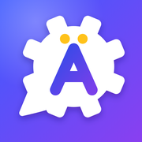

<!DOCTYPE html>
<html lang="en">
<head>
<meta charset="utf-8">
<title>Wortwerk</title>
<meta name="viewport" content="width=device-width, initial-scale=1, viewport-fit=cover">
<meta name="apple-mobile-web-app-capable" content="yes">
<meta name="mobile-web-app-capable" content="yes">
<meta name="apple-mobile-web-app-title" content="Wortwerk">
<meta name="apple-mobile-web-app-status-bar-style" content="default">
<meta name="theme-color" content="#2447F5">
<link rel="apple-touch-icon" href="icon-180.png">
<link rel="icon" type="image/png" href="icon-180.png">
<link rel="manifest" href="manifest.webmanifest">
<link rel="preconnect" href="https://fonts.googleapis.com">
<link rel="preconnect" href="https://fonts.gstatic.com" crossorigin>
<link href="https://fonts.googleapis.com/css2?family=Bricolage+Grotesque:opsz,wght@12..96,500;12..96,700;12..96,800&family=Instrument+Sans:wght@400;500;600&display=swap" rel="stylesheet">
<style>
:root{
  --bg:#F3F5FA;--surface:#FFFFFF;--surface2:#EEF1F8;--ink:#0E1A2B;--muted:#5D6A80;--line:#E1E6EF;
  --accent:#3355F0;--accent2:#7A4DF2;--accent-ink:#FFFFFF;--soft:#E8EDFF;--hl:#FFC93C;--hl-ink:#3A2700;--hlsoft:#FFF4D2;
  --good:#11A066;--goodsoft:#E3F6EC;--bad:#CF2E35;--badsoft:#FDECEC;--mid:#A15C00;
  --g-der:#2563EB;--g-die:#E0244E;--g-das:#047857;
  --hero1:#3355F0;--hero2:#7A4DF2;
  --shadow:0 1px 2px rgba(16,24,40,.05),0 6px 20px rgba(16,24,40,.06);
  --shadow-lg:0 10px 30px rgba(51,85,240,.28);
  --display:"Bricolage Grotesque","Avenir Next","SF Pro Rounded","Segoe UI",system-ui,sans-serif;
  --body:"Instrument Sans","SF Pro Text",-apple-system,"Segoe UI",system-ui,sans-serif;
  box-sizing:border-box;padding-top:env(safe-area-inset-top,0px);padding-bottom:env(safe-area-inset-bottom,0px);
  color-scheme:light;
}
@media (prefers-color-scheme: dark){:root:not([data-theme="light"]){
  --bg:#0A0F1E;--surface:#131A2C;--surface2:#1B2338;--ink:#EAF0FF;--muted:#94A1BB;--line:#252F47;
  --accent:#7D93FF;--accent2:#A78BFA;--accent-ink:#0A0F1E;--soft:#1D2750;--hl:#FFD25E;--hl-ink:#2A1C00;--hlsoft:#2E2610;
  --good:#3DD68C;--goodsoft:#11301F;--bad:#FF6B70;--badsoft:#3A1518;--mid:#F5B83D;
  --g-der:#7FA6FF;--g-die:#FF7C96;--g-das:#4BD9A0;
  --hero1:#3B52E6;--hero2:#7445E8;--shadow:0 1px 2px rgba(0,0,0,.3),0 8px 24px rgba(0,0,0,.25);--shadow-lg:0 10px 30px rgba(0,0,0,.45);color-scheme:dark}}
:root[data-theme="dark"]{--bg:#0A0F1E;--surface:#131A2C;--surface2:#1B2338;--ink:#EAF0FF;--muted:#94A1BB;--line:#252F47;
  --accent:#7D93FF;--accent2:#A78BFA;--accent-ink:#0A0F1E;--soft:#1D2750;--hl:#FFD25E;--hl-ink:#2A1C00;--hlsoft:#2E2610;
  --good:#3DD68C;--goodsoft:#11301F;--bad:#FF6B70;--badsoft:#3A1518;--mid:#F5B83D;
  --g-der:#7FA6FF;--g-die:#FF7C96;--g-das:#4BD9A0;
  --hero1:#3B52E6;--hero2:#7445E8;--shadow:0 1px 2px rgba(0,0,0,.3),0 8px 24px rgba(0,0,0,.25);--shadow-lg:0 10px 30px rgba(0,0,0,.45);color-scheme:dark}
html{scroll-padding-top:env(safe-area-inset-top,0px)}
*{box-sizing:border-box;-webkit-tap-highlight-color:transparent}
body{margin:0;background:var(--bg);color:var(--ink);font-family:var(--body);font-size:16px;line-height:1.5;min-height:100vh;-webkit-font-smoothing:antialiased}
body.noscroll{overflow:hidden}
button,input,select,textarea{font:inherit;color:inherit}
button{cursor:pointer}
button:active{transform:scale(.98)}
:focus-visible{outline:3px solid var(--accent);outline-offset:2px}
#app{max-width:560px;margin:0 auto;padding:14px 16px 112px;animation:fadeIn .25s ease}
h1,h2,h3{font-family:var(--display);margin:0;letter-spacing:-0.02em;line-height:1.12}
h1{font-size:30px;font-weight:800}h2{font-size:22px;font-weight:700}h3{font-size:17px;font-weight:700}
p{margin:0 0 10px}
.muted{color:var(--muted)}.small{font-size:14px}.center{text-align:center}
.row{display:flex;align-items:center}.between{justify-content:space-between}.gap{gap:10px}.wrap{flex-wrap:wrap}.grow1{flex:1}
.stack>*+*{margin-top:10px}
.card{display:block;width:100%;text-align:left;background:var(--surface);border:1px solid var(--line);border-radius:20px;padding:16px;margin-top:12px;box-shadow:var(--shadow)}
button.card{cursor:pointer;transition:transform .12s ease,box-shadow .12s ease}
button.card:active{transform:scale(.985)}
.top{display:flex;justify-content:space-between;align-items:flex-end;gap:12px;margin:6px 0 4px}
.top>div:first-child{min-width:0}.top h1{font-size:clamp(24px,7.4vw,30px);white-space:nowrap;overflow:hidden;text-overflow:ellipsis}
.chip.streak{white-space:nowrap}
.iconbtn{border:1px solid var(--line);background:var(--surface);border-radius:14px;width:44px;height:44px;display:grid;place-items:center;box-shadow:var(--shadow)}
.btn{border:1px solid var(--line);background:var(--surface);border-radius:999px;padding:10px 18px;font-weight:650;display:inline-flex;align-items:center;justify-content:center;gap:6px;transition:transform .1s ease,background .15s ease}
.btn.small{padding:7px 14px;font-size:14px}
.btn.primary{background:linear-gradient(135deg,var(--hero1),var(--hero2));color:#fff;border-color:transparent;box-shadow:var(--shadow-lg)}
.btn.ghost{background:transparent;border-color:transparent;box-shadow:none}
.btn.danger{color:var(--bad);border-color:color-mix(in srgb,var(--bad) 40%,transparent)}
.btn.block{width:100%;padding:15px 18px;font-size:17px;border-radius:16px}
.btn:disabled{opacity:.45;box-shadow:none}
.btn.say{padding:8px 12px}.btn.say.ghost{padding:8px;color:var(--accent)}
.btn.say.round{width:48px;height:48px;padding:0;border-radius:50%;background:var(--soft);color:var(--accent);border-color:transparent;flex-shrink:0}
.chip{display:inline-flex;align-items:center;gap:6px;border-radius:999px;background:var(--soft);color:var(--accent);padding:4px 12px;font-weight:650;font-size:13px;border:0}
.chip.tiny{font-size:11px;padding:1px 8px;vertical-align:2px}
.chip.streak{background:var(--hlsoft);color:var(--mid);font-size:15px;padding:7px 12px}
.chip.link{cursor:pointer}
.chips{display:flex;flex-wrap:wrap;gap:8px;margin-top:12px}
.chip.link{padding:8px 13px;min-height:36px}
.linkbtn{border:0;background:none;color:var(--accent);font-weight:700;padding:8px 2px;font-size:inherit;min-height:32px}
input[type=range]{height:32px}
.bar{height:8px;border-radius:99px;background:var(--surface2);overflow:hidden;margin:10px 0}
.bar>i{display:block;height:100%;background:linear-gradient(90deg,var(--hero1),var(--hero2));border-radius:99px;transition:width .35s ease}
.sbar{display:flex;height:8px;border-radius:99px;background:var(--surface2);overflow:hidden;margin:8px 0 0}
.sbar i{display:block;height:100%}.s-m{background:var(--good)}.s-l{background:var(--hl)}
.legend{display:flex;gap:16px;margin-top:10px;font-size:13px;color:var(--muted)}
.legend i{display:inline-block;width:10px;height:10px;border-radius:3px;margin-right:6px;vertical-align:0}
.c-m{color:var(--good)}.c-l{color:var(--mid)}.c-acc{color:var(--accent)}.c-bad{color:var(--bad)}
/* today */
.xpline{display:flex;align-items:center;gap:10px;margin:2px 0 4px}
.lvl{font-weight:800;font-family:var(--display);font-size:13px;color:var(--accent);background:var(--soft);border-radius:999px;padding:3px 10px;white-space:nowrap}
.xpbar{flex:1;height:8px;border-radius:99px;background:var(--surface2);overflow:hidden}
.xpbar i{display:block;height:100%;background:linear-gradient(90deg,var(--hl),#FF9F43);border-radius:99px}
.xpn{font-size:12px;color:var(--muted);white-space:nowrap}
.goal{display:flex;align-items:center;gap:18px}
.ring{position:relative;width:112px;height:112px;flex-shrink:0}
.ring svg{width:100%;height:100%;transform:rotate(-90deg)}
.rg-bg{fill:none;stroke:var(--surface2);stroke-width:11}
.rg-fg{fill:none;stroke:url(#rgGrad);stroke-width:11;stroke-linecap:round;transition:stroke-dashoffset .6s ease}
.ring-in{position:absolute;inset:0;display:flex;flex-direction:column;align-items:center;justify-content:center;line-height:1}
.ring-in b{font-family:var(--display);font-size:34px;font-weight:800}.ring-in span{font-size:12px;color:var(--muted);margin-top:4px}
.goal-stats{flex:1;display:grid;gap:10px}
.goal-stats div{display:flex;align-items:baseline;gap:8px}.goal-stats b{font-family:var(--display);font-size:22px;min-width:44px}.goal-stats span{color:var(--muted);font-size:14px}
.hero{border:0;color:#fff;padding:20px 20px 18px;display:block;position:relative;overflow:hidden;
  background:radial-gradient(120% 140% at 100% 0%,rgba(255,255,255,.18),transparent 55%),linear-gradient(135deg,var(--hero1),var(--hero2));box-shadow:var(--shadow-lg)}
.hero-k{display:block;font-weight:650;opacity:.9;font-size:14px}
.hero-t{display:block;font-family:var(--display);font-size:26px;font-weight:800;line-height:1.1;margin:4px 0 6px;padding-right:96px}
.hero-s{display:block;opacity:.9;font-size:14px;padding-right:96px}
.hero-go{position:absolute;right:18px;bottom:18px;background:#fff;color:var(--hero1);border-radius:999px;padding:10px 20px;font-weight:800;box-shadow:0 6px 16px rgba(0,0,0,.18)}
.hero-dots{display:flex;gap:5px;margin-top:12px;flex-wrap:wrap;padding-right:96px}
.hero-dots i{width:9px;height:9px;border-radius:50%;background:rgba(255,255,255,.4)}
.hero-dots i.new{background:#fff}
.hero.done{background:var(--surface);color:var(--ink);border:2px solid var(--good);box-shadow:var(--shadow)}
.grid2{display:grid;grid-template-columns:1fr 1fr;gap:12px;margin-top:12px}
.grid2 .card{margin-top:0}
.tile{display:flex;flex-direction:column;gap:3px;min-height:122px}
.tile-k{font-size:12px;font-weight:750;color:var(--accent);text-transform:uppercase;letter-spacing:.04em}
.tile-t{font-family:var(--display);font-size:18px;font-weight:700;line-height:1.2}
.tile select{margin:6px 0 8px;padding:8px;font-size:14px}
.wotd{background:linear-gradient(180deg,var(--hlsoft),var(--surface))}
.wotd .wbig{font-family:var(--display);font-size:28px;font-weight:800;margin:2px 0}
.statgrid{display:grid;grid-template-columns:repeat(4,1fr);gap:8px;margin-top:12px;text-align:center}
.statgrid div{background:var(--surface);border:1px solid var(--line);border-radius:16px;padding:10px 4px;box-shadow:var(--shadow)}
.statgrid b{display:block;font-family:var(--display);font-size:22px;font-weight:800;line-height:1.2}.statgrid span{font-size:12px;color:var(--muted);display:block}
.statgrid.wk div{background:var(--surface2);border:0;box-shadow:none}
.statgrid .delta{display:block;font-size:12px;font-weight:700}
/* lists */
.seg{display:flex;background:var(--surface2);border-radius:14px;padding:4px;margin:12px 0}
.seg button{flex:1;border:0;background:transparent;padding:9px;border-radius:10px;font-weight:650;color:var(--muted)}
.seg button[aria-selected="true"]{background:var(--surface);color:var(--ink);box-shadow:0 1px 4px rgba(0,0,0,.08)}
.list{background:var(--surface);border:1px solid var(--line);border-radius:20px;overflow:hidden;margin-top:10px;box-shadow:var(--shadow)}
.row-item{display:flex;width:100%;gap:12px;align-items:center;text-align:left;background:transparent;border:0;border-top:1px solid var(--line);padding:14px 16px}
.list>.row-item:first-child,.list>.wrow:first-child{border-top:0}
.ri-main{flex:1;display:flex;flex-direction:column;min-width:0}.ri-k{font-size:12px;color:var(--muted);font-weight:650}.ri-t{font-weight:700;font-family:var(--display);font-size:17px}
.ri-side{text-align:right;flex-shrink:0}.ri-side b{font-family:var(--display);font-size:20px}.ri-side span{font-size:12px;color:var(--muted);display:block}
.sec{margin:22px 0 4px;font-size:13px;color:var(--muted);text-transform:uppercase;letter-spacing:.05em;font-weight:750}
.wrow{display:flex;align-items:center;gap:10px;border-top:1px solid var(--line);padding:8px 8px 8px 16px}
.wrow-main{flex:1;min-width:0;border:0;background:transparent;text-align:left;display:flex;flex-direction:column;padding:4px 0}
.w-de{font-weight:650}
.dot{width:10px;height:10px;border-radius:50%;display:inline-block;flex-shrink:0;background:var(--line)}
.dot.d1{background:var(--hl)}.dot.d2{background:var(--good)}
.badge{font-size:12px;font-weight:750;padding:3px 9px;border-radius:999px;white-space:nowrap}
.badge.b-new{background:var(--surface2);color:var(--muted)}.badge.b-good{background:var(--goodsoft);color:var(--good)}
.badge.b-mid{background:var(--hlsoft);color:var(--mid)}.badge.b-bad{background:var(--badsoft);color:var(--bad)}
.search{width:100%;border:1px solid var(--line);background:var(--surface);border-radius:14px;padding:12px 14px;margin-top:10px;box-shadow:var(--shadow)}
.trow{display:grid;grid-template-columns:1fr 70px 44px;gap:10px;align-items:center;width:100%;border:0;background:transparent;text-align:left;padding:8px 0;font-size:14px}
.tbar{height:8px;border-radius:99px;background:var(--surface2);overflow:hidden}.tbar i{display:block;height:100%}
.tbar .good{background:var(--good)}.tbar .mid{background:var(--hl)}.tbar .bad{background:var(--bad)}
.trow b{text-align:right}
details.card summary{cursor:pointer;list-style:none}details.card summary::-webkit-details-marker{display:none}
details[open] summary{margin-bottom:8px}
/* badges grid */
.bgrid{display:grid;grid-template-columns:repeat(4,1fr);gap:10px;margin-top:10px}
.bdg{display:flex;flex-direction:column;align-items:center;text-align:center;gap:4px;font-size:11px;color:var(--muted);border:0;background:transparent;padding:0}
.bdg .bi{width:54px;height:54px;border-radius:18px;display:grid;place-items:center;font-size:26px;background:var(--surface2);filter:grayscale(1);opacity:.45}
.bdg.on .bi{filter:none;opacity:1;background:linear-gradient(135deg,var(--hlsoft),var(--soft));box-shadow:var(--shadow)}
.bdg.on{color:var(--ink);font-weight:650}
/* charts */
.chart{display:flex;gap:4px;align-items:flex-end;height:120px;margin-top:10px}
.col{flex:1;display:flex;flex-direction:column;align-items:center;gap:4px;height:100%}
.col .pair{flex:1;display:flex;align-items:flex-end;gap:2px;width:100%;justify-content:center}
.col .pair i{display:block;width:70%;border-radius:5px 5px 2px 2px;min-height:2px}
.col .pair i.k-new,.col .pair i.k-mem{width:40%}
.col span{font-size:11px;color:var(--muted)}
.k-min{background:linear-gradient(180deg,var(--hero2),var(--hero1))}.k-new{background:var(--hl)}.k-mem{background:var(--good)}
.legend i.k-new{background:var(--hl)}.legend i.k-mem{background:var(--good)}
/* inputs */
input[type=text],input[type=password],input[type=search],select,textarea{width:100%;border:1px solid var(--line);background:var(--surface);border-radius:14px;padding:12px 13px}
textarea{min-height:90px;resize:vertical}
input[type=range]{width:100%;accent-color:var(--accent)}
label{display:block;font-weight:650;font-size:14px;margin:12px 0 5px}
/* tabs */
#tabs{position:fixed;left:0;right:0;bottom:0;background:color-mix(in srgb,var(--surface) 86%,transparent);-webkit-backdrop-filter:saturate(1.6) blur(18px);backdrop-filter:saturate(1.6) blur(18px);border-top:1px solid var(--line);padding-bottom:env(safe-area-inset-bottom,0px);z-index:5}
#tabs .in{display:flex;max-width:560px;margin:0 auto;padding:4px 6px 2px}
#tabs button{flex:1;border:0;background:transparent;padding:6px 2px 6px;color:var(--muted);font-weight:650;font-size:11px;display:flex;flex-direction:column;align-items:center;gap:2px;border-radius:14px}
#tabs button[aria-current="page"]{color:var(--accent)}
#tabs button[aria-current="page"] svg{background:var(--soft);border-radius:10px;padding:3px;width:32px;height:28px}
/* overlays */
#overlay{position:fixed;inset:0;background:var(--bg);z-index:20;overflow:auto;display:none;-webkit-overflow-scrolling:touch;
  padding:calc(env(safe-area-inset-top,0px) + 10px) 16px calc(env(safe-area-inset-bottom,0px) + 18px)}
#overlay.on{display:block;animation:slideUp .22s ease}
.sheet{max-width:560px;margin:0 auto;min-height:calc(100vh - 40px);display:flex;flex-direction:column}
.grow-top{flex:1;padding-top:8px;padding-bottom:16px}
.grow{flex:1;display:flex;flex-direction:column;justify-content:center}
.back{display:inline-flex;align-items:center;gap:2px;border:0;background:transparent;color:var(--accent);font-weight:650;padding:8px 4px;margin-left:-4px}
.wordbig{font-size:38px}
.lead{font-size:19px;margin:0 0 8px}
.exbox{background:var(--surface2);border:0;box-shadow:none}.ex-de{font-size:18px}
.hl{color:var(--accent)}
.prompt{font-size:24px;line-height:1.3;margin:14px 0 6px}.prompt.big{font-size:30px}
.prompt-big{font-size:32px;margin:14px 0 6px}
.answer{font-size:20px !important;padding:15px !important;border-width:2px !important}
.answer:focus{border-color:var(--accent) !important;outline:0}
.fb{border-width:2px;animation:pop .25s ease}.fb.ok{border-color:var(--good);background:var(--goodsoft)}.fb.bad{border-color:var(--bad);background:var(--badsoft);animation:shake .3s ease}
.fb.ok .fb-t{color:var(--good)}.fb.bad .fb-t{color:var(--bad)}
.fb-w{font-family:var(--display);font-size:26px;font-weight:800;margin-top:6px}
.pick{display:block;width:100%;text-align:left;border:1.5px solid var(--line);background:var(--surface);border-radius:16px;padding:15px 16px;margin-bottom:10px;font-size:18px;font-weight:650;color:var(--ink);box-shadow:var(--shadow);transition:transform .1s ease}
.pick.small{font-size:16px}
.pick:disabled{opacity:1}
.pick.ok{border:2px solid var(--good);background:var(--goodsoft)}.pick.bad{border:2px solid var(--bad);background:var(--badsoft)}
.pick.idk{color:var(--muted);font-weight:500;border-style:dashed;box-shadow:none}
.miss{display:flex;flex-direction:column;padding:8px 0;border-top:1px solid var(--line)}.miss:first-child{border-top:0}
.big-check{width:96px;height:96px;border-radius:50%;background:linear-gradient(135deg,var(--good),#36C98E);color:#fff;font-size:54px;display:grid;place-items:center;margin:0 auto 14px;box-shadow:0 12px 30px color-mix(in srgb,var(--good) 40%,transparent);animation:pop .4s ease}
.donestats{display:grid;grid-template-columns:repeat(3,1fr);gap:10px;margin:18px 0}
.donestats div{background:var(--surface);border-radius:16px;padding:12px 6px;box-shadow:var(--shadow)}
.donestats b{display:block;font-family:var(--display);font-size:24px}.donestats span{font-size:12px;color:var(--muted)}
.rule{font-size:17px;line-height:1.6}
.tbl{padding:6px 16px}.tr{display:grid;grid-template-columns:40% 60%;gap:10px;padding:9px 0;border-top:1px solid var(--line)}.tr:first-child{border-top:0}.tr span:first-child{color:var(--muted)}
.exrow{display:flex;justify-content:space-between;align-items:center;gap:10px;padding:8px 0;border-top:1px solid var(--line)}.exrow:first-child{border-top:0}
#toast{position:fixed;left:50%;top:calc(env(safe-area-inset-top,0px) + 12px);bottom:auto;transform:translateX(-50%) translateY(-10px);background:var(--ink);color:var(--bg);padding:11px 18px;border-radius:16px;font-weight:650;z-index:60;opacity:0;pointer-events:none;transition:opacity .2s,transform .2s;max-width:90vw;text-align:center;box-shadow:var(--shadow-lg)}
#toast.on{opacity:1;transform:translateX(-50%) translateY(0)}
.level{border:2px solid var(--hl);background:linear-gradient(180deg,var(--hlsoft),var(--surface))}
.warn{border:2px solid var(--hl)}
.chunkbox{border-style:dashed;box-shadow:none}
.mistake .mrow{display:flex;gap:10px;align-items:baseline;padding:4px 0}.m-x{color:var(--bad);font-weight:800}.m-ok{color:var(--good);font-weight:800}
.built{min-height:58px;border:2px dashed var(--line);border-radius:16px;padding:8px;display:flex;flex-wrap:wrap;gap:6px;align-items:center;background:var(--surface)}
.toks{display:flex;flex-wrap:wrap;gap:8px;margin-top:12px}
.tok{border:1.5px solid var(--line);background:var(--surface);border-radius:12px;padding:9px 13px;font-weight:650;font-size:17px;color:var(--ink);box-shadow:var(--shadow)}
.tok.on{background:var(--soft);color:var(--accent);border-color:transparent;box-shadow:none}
.tok.lead{background:var(--surface2);color:var(--ink);border-color:transparent;box-shadow:none}
.tok.ghost{opacity:.22;border-style:dashed;box-shadow:none}
.small2{font-size:20px !important}
.combo{display:inline-flex;align-items:center;gap:6px;background:var(--hlsoft);color:var(--mid);border-radius:999px;padding:3px 10px;font-weight:800;font-size:13px;animation:pop .3s ease}
  .nudge{margin:10px 2px 0;font-size:14px;color:var(--mid);font-weight:650}
#xpfloat{position:fixed;left:50%;top:calc(env(safe-area-inset-top,0px) + 64px);transform:translateX(-50%);z-index:70;pointer-events:none;font-family:var(--display);font-weight:800;font-size:22px;color:var(--mid);text-shadow:0 2px 10px rgba(0,0,0,.15);opacity:0}
#xpfloat.go{animation:floatUp .9s ease forwards}
#fx{position:fixed;inset:0;pointer-events:none;z-index:80}

/* colour system: every chapter and tile has a hue (--h) */
.chi{display:inline-grid;place-items:center;width:40px;height:40px;border-radius:13px;font-size:20px;background:hsl(var(--h,220) 90% 93%);flex-shrink:0;line-height:1}
.chi.big{width:58px;height:58px;border-radius:19px;font-size:31px;box-shadow:0 6px 16px hsl(var(--h,220) 70% 50% / .18)}
.rhead{display:flex;gap:14px;align-items:center;padding:14px 16px;border-radius:22px;margin-top:6px;background:linear-gradient(135deg,hsl(var(--h,220) 95% 94%),hsl(calc(var(--h,220) + 35) 95% 96%))}
.rhead h1{font-size:26px}
.tint{background:linear-gradient(160deg,hsl(var(--h) 92% 95%) 0%,var(--surface) 75%);border-color:hsl(var(--h) 70% 88%)}
.tint .tile-k{color:hsl(var(--h) 70% 40%)}
.tint .tile-k::before{content:attr(data-i);margin-right:6px}
.forms{display:flex;flex-wrap:wrap;gap:6px;margin:-2px 0 10px}
.forms span{background:var(--surface2);border-radius:10px;padding:4px 10px;font-size:14px;color:var(--muted)}
.forms b{color:var(--ink)}
/* reading */
.readtext{font-size:19px;line-height:1.9}
.rw{cursor:pointer;border-radius:6px;padding:1px 1px;transition:background .12s;border-bottom:1.5px dotted color-mix(in srgb,var(--accent) 35%,transparent)}
.rw:hover{background:var(--soft)}
.rw.on{background:var(--hl);color:var(--hl-ink);border-bottom-color:transparent}
.rs.cur{background:color-mix(in srgb,var(--hlsoft) 70%,transparent);border-radius:6px}
.rtr{display:block;font-size:14px;line-height:1.45;color:var(--muted);font-style:italic;margin:2px 0 8px;padding-left:10px;border-left:3px solid var(--line)}
.haspop{padding-bottom:230px}
.rpop{position:fixed;left:50%;transform:translateX(-50%);bottom:calc(env(safe-area-inset-bottom,0px) + 12px);width:min(528px,calc(100vw - 24px));background:var(--surface);border:1px solid var(--line);border-radius:22px;padding:14px 16px;box-shadow:0 18px 48px rgba(16,24,40,.22);z-index:30;animation:slideUp .18s ease}
.rp-w{font-family:var(--display);font-size:24px;font-weight:800}
.rp-r{margin-top:4px;font-size:16px}.rp-r.alt{font-size:14px;color:var(--muted)}
.rp-n{display:block;font-size:12px;color:var(--accent);font-weight:650}
.rp-s{margin-top:10px;font-size:14px;color:var(--muted);font-style:italic;border-top:1px solid var(--line);padding-top:8px}
/* grammar visuals */
.vis{margin-top:12px;padding:14px;border-radius:20px;background:var(--surface);border:1px solid var(--line);box-shadow:var(--shadow);overflow-x:auto}
.vis h4{margin:0 0 10px;font-size:13px;text-transform:uppercase;letter-spacing:.05em;color:var(--muted)}
.slots{display:grid;gap:6px;min-width:300px}
.slot-h,.slot-r{display:grid;grid-template-columns:var(--cols);gap:6px}
.slot-h span{font-size:11px;font-weight:750;color:var(--muted);text-transform:uppercase;letter-spacing:.03em;text-align:center}
.slot-r span{border-radius:10px;padding:8px 6px;text-align:center;font-weight:650;font-size:15px;background:hsl(var(--h) 92% 93%);color:hsl(var(--h) 60% 25%)}
.ctab{width:100%;border-collapse:separate;border-spacing:4px;min-width:300px}
.ctab th{font-size:12px;padding:6px 4px;border-radius:10px;color:#fff}
.ctab th.c0{background:transparent;color:var(--muted)}
.ctab th.m{background:var(--g-der)}.ctab th.f{background:var(--g-die)}.ctab th.n{background:var(--g-das)}.ctab th.p{background:#7C3AED}
.ctab td{background:var(--surface2);border-radius:10px;padding:8px 4px;text-align:center;font-weight:650;font-size:15px}
.ctab td.rh{background:transparent;font-size:12px;color:var(--muted);text-align:left;font-weight:750}
.ctab td.hot{background:var(--hlsoft);color:var(--mid);box-shadow:inset 0 0 0 2px var(--hl)}
.preps{display:grid;grid-template-columns:repeat(3,1fr);gap:8px}
.prep{text-align:center;font-weight:700;font-size:14px}
.prep svg{width:100%;height:auto;display:block;background:var(--surface2);border-radius:14px;margin-bottom:4px}
.tline{position:relative;padding:34px 4px 6px}
.tline .ax{height:4px;border-radius:4px;background:linear-gradient(90deg,#8B5CF6,var(--accent),var(--good))}
.tline .pt{position:absolute;top:0;transform:translateX(-50%);text-align:center;font-size:12px;font-weight:750;white-space:nowrap}
.tline .pt i{display:block;width:14px;height:14px;border-radius:50%;margin:4px auto 0;border:3px solid var(--surface);box-shadow:0 0 0 2px currentColor;background:currentColor}
.tline .ex{display:grid;grid-template-columns:1fr 1fr 1fr;gap:6px;margin-top:12px;font-size:13px}
.tline .ex div{background:var(--surface2);border-radius:10px;padding:8px;text-align:center}
.bars{display:flex;align-items:flex-end;gap:12px;height:130px;padding-top:6px}
.bars div{flex:1;border-radius:12px 12px 6px 6px;display:flex;align-items:flex-end;justify-content:center;padding-bottom:8px;font-weight:800;color:#fff;font-size:15px;text-align:center}
.icons4{display:grid;grid-template-columns:repeat(2,1fr);gap:8px}
.icons4 div{display:flex;gap:10px;align-items:center;background:var(--surface2);border-radius:14px;padding:10px}
.icons4 b{font-size:26px}
.icons4 span{font-size:14px}.icons4 em{display:block;font-style:normal;color:var(--muted);font-size:12px}
.gsec{display:flex;align-items:center;gap:10px}.gsec .chi{width:30px;height:30px;font-size:16px;border-radius:10px}
.gterm{display:inline;border:0;background:none;padding:0 1px;font:inherit;font-weight:700;color:var(--accent);border-bottom:2px dotted var(--accent);border-radius:0;cursor:pointer}
.intro{background:linear-gradient(160deg,var(--soft),var(--surface) 70%);border-color:color-mix(in srgb,var(--accent) 22%,var(--line))}
.intro .tile-k::before{content:attr(data-i);margin-right:6px}
.merke{border-left:4px solid var(--hl);background:var(--hlsoft);border-radius:14px;padding:12px 14px;margin-top:12px;font-size:15px}
.merke b:first-child{display:block;font-size:12px;letter-spacing:.06em;text-transform:uppercase;color:var(--mid);margin-bottom:2px}
.gend{font-weight:800}.gend.m{color:var(--g-der)}.gend.f{color:var(--g-die)}.gend.n{color:var(--g-das)}.gend.p{color:#7C3AED}

@media (prefers-color-scheme: dark){:root:not([data-theme="light"]) .ctab th:not(.c0){color:#0A0F1E}:root:not([data-theme="light"]) .ctab th.p{background:#B69CFF}:root:not([data-theme="light"]) .chi{background:hsl(var(--h,220) 40% 22%)}:root:not([data-theme="light"]) .rhead{background:linear-gradient(135deg,hsl(var(--h,220) 40% 18%),hsl(calc(var(--h,220) + 35) 35% 16%))}:root:not([data-theme="light"]) .tint{background:linear-gradient(160deg,hsl(var(--h) 40% 17%) 0%,var(--surface) 75%);border-color:hsl(var(--h) 30% 26%)}:root:not([data-theme="light"]) .tint .tile-k{color:hsl(var(--h) 85% 75%)}:root:not([data-theme="light"]) .slot-r span{background:hsl(var(--h) 40% 22%);color:hsl(var(--h) 85% 85%)}:root:not([data-theme="light"]) .rpop{box-shadow:0 18px 48px rgba(0,0,0,.6)}}
:root[data-theme="dark"] .ctab th:not(.c0){color:#0A0F1E}:root[data-theme="dark"] .ctab th.p{background:#B69CFF}:root[data-theme="dark"] .chi{background:hsl(var(--h,220) 40% 22%)}:root[data-theme="dark"] .rhead{background:linear-gradient(135deg,hsl(var(--h,220) 40% 18%),hsl(calc(var(--h,220) + 35) 35% 16%))}:root[data-theme="dark"] .tint{background:linear-gradient(160deg,hsl(var(--h) 40% 17%) 0%,var(--surface) 75%);border-color:hsl(var(--h) 30% 26%)}:root[data-theme="dark"] .tint .tile-k{color:hsl(var(--h) 85% 75%)}:root[data-theme="dark"] .slot-r span{background:hsl(var(--h) 40% 22%);color:hsl(var(--h) 85% 85%)}

/* life & practice */
.kits{display:grid;grid-template-columns:repeat(2,minmax(0,1fr));gap:12px;margin-top:10px}
.kit .tile-t,.kit .muted{overflow-wrap:anywhere}
.rhead>div{min-width:0}.rhead h1{overflow-wrap:anywhere}
.wordbig{font-size:clamp(26px,9vw,38px);overflow-wrap:anywhere;min-width:0}
.grid2{grid-template-columns:repeat(2,minmax(0,1fr))}
.tile-t{overflow-wrap:anywhere}
.kit{margin-top:0;display:flex;flex-direction:column;gap:2px;min-height:150px;position:relative}
.kit-e{font-size:34px;line-height:1;margin-bottom:6px}
.kit-stamp{position:absolute;top:10px;right:10px;width:26px;height:26px;border-radius:50%;background:var(--good);color:#fff;display:grid;place-items:center;font-weight:800;font-size:14px;transform:rotate(-12deg)}
.stars i{font-style:normal;color:var(--line);font-size:16px;letter-spacing:1px}.stars i.on{color:var(--hl)}
.passport{background:linear-gradient(135deg,#1F3A8A,#4C2A9E);color:#fff;border:0}
.passport .tile-k{color:#C7D2FE}.passport .tile-k::before{content:attr(data-i);margin-right:6px}.passport .tile-t{color:#fff;font-size:22px}
.pp-big{font-size:38px}
.pp-row{display:flex;flex-wrap:wrap;gap:6px;margin-top:12px}
.pp-s{width:34px;height:34px;border-radius:50%;display:grid;place-items:center;font-size:17px;background:rgba(255,255,255,.12);filter:grayscale(1);opacity:.45;border:1.5px dashed rgba(255,255,255,.35)}
.pp-s.on{filter:none;opacity:1;background:rgba(255,255,255,.95);border:2px solid #FFC93C;transform:rotate(-8deg)}
.goal-line{margin:10px 2px 0;font-weight:650}
.kseg button{font-size:12px;padding:8px 2px}
.chat{display:flex;flex-direction:column;gap:8px;margin:6px 0 10px}
.bub{max-width:86%;border:0;text-align:left;padding:10px 14px;border-radius:18px;font-size:16px;line-height:1.4;background:var(--surface);box-shadow:var(--shadow);color:var(--ink);animation:pop .2s ease}
.bub.them{align-self:flex-start;border-bottom-left-radius:6px}
.bub.me{align-self:flex-end;background:linear-gradient(135deg,var(--hero1),var(--hero2));color:#fff;border-bottom-right-radius:6px}
.bub.ann{align-self:center;background:var(--hlsoft);color:var(--ink);font-size:14px;text-align:center;border-radius:14px}
.bub.me.good{background:linear-gradient(135deg,#11A066,#36C98E)}.bub.me.mid{background:linear-gradient(135deg,#D98B00,#FFB020)}.bub.me.bad{background:linear-gradient(135deg,#E5484D,#F07A7E)}
.who{display:block;font-size:11px;font-weight:750;opacity:.7;text-transform:uppercase;letter-spacing:.04em;margin-bottom:2px}
.bub-en{display:block;font-size:13px;opacity:.8;margin-top:4px;font-style:italic}
.ans{margin-top:6px;font-weight:650;color:var(--good)}
.tpl pre{white-space:pre-wrap;font-family:var(--body);font-size:15px;line-height:1.55;background:var(--surface2);border-radius:12px;padding:12px;margin:10px 0}
.rpcard{border:2px solid var(--accent)}
.rpcard .tile-k::before,.card .tile-k[data-i]::before{content:attr(data-i);margin-right:6px}
.mic.rec{background:var(--bad);color:#fff;border-color:transparent;animation:pulse 1s infinite}
@keyframes pulse{0%,100%{box-shadow:0 0 0 0 rgba(229,72,77,.5)}50%{box-shadow:0 0 0 8px rgba(229,72,77,0)}}
.stamp{width:110px;height:110px;margin:0 auto;border-radius:50%;display:grid;place-items:center;font-size:54px;border:4px dashed var(--line);filter:grayscale(1);opacity:.5}
.stamp.won{filter:none;opacity:1;border:4px solid var(--good);background:var(--goodsoft);transform:rotate(-10deg);animation:stampIn .5s ease}
@keyframes stampIn{0%{transform:scale(2) rotate(-25deg);opacity:0}70%{transform:scale(.92) rotate(-8deg);opacity:1}100%{transform:scale(1) rotate(-10deg)}}
.notice{background:#FFFDF2;border:1.5px solid #E8D9A8;font-size:17px;line-height:1.55;box-shadow:2px 3px 0 rgba(0,0,0,.06)}
.ckrow{display:flex;gap:10px;align-items:center;font-weight:500;font-size:15px;margin:8px 0 0}
.ckrow input{width:20px;height:20px;accent-color:var(--good)}
.spcard{padding:18px}
.dict-tip{font-size:14px;background:var(--soft);border-radius:12px;padding:10px 12px;line-height:1.45}
.mic-help{border:2px solid var(--hl);background:var(--hlsoft)}
.steps{margin:4px 0 10px;padding-left:20px}.steps li{margin:4px 0}
.kchip{background:hsl(var(--h) 90% 94%);color:hsl(var(--h) 60% 30%)}
#tabs button{font-size:10.5px}
@media (max-width:350px){#tabs button{font-size:9.5px;letter-spacing:-.2px;padding-left:0;padding-right:0}#tabs .in{padding:4px 2px 2px}}
.rs.dl{display:block;margin-bottom:4px}
.rs.dl .spk{font-weight:800;color:var(--accent)}

@media (prefers-color-scheme: dark){:root:not([data-theme="light"]) .kchip{background:hsl(var(--h) 40% 22%);color:hsl(var(--h) 85% 82%)}:root:not([data-theme="light"]) .notice{background:#22201A;border-color:#4A4230}:root:not([data-theme="light"]) .passport{background:linear-gradient(135deg,#1E2F6E,#3B2280)}}
:root[data-theme="dark"] .kchip{background:hsl(var(--h) 40% 22%);color:hsl(var(--h) 85% 82%)}:root[data-theme="dark"] .notice{background:#22201A;border-color:#4A4230}
@keyframes fadeIn{from{opacity:0}to{opacity:1}}
@keyframes slideUp{from{transform:translateY(14px);opacity:.4}to{transform:none;opacity:1}}
@keyframes pop{0%{transform:scale(.92)}60%{transform:scale(1.03)}100%{transform:scale(1)}}
@keyframes shake{0%,100%{transform:none}25%{transform:translateX(-6px)}75%{transform:translateX(6px)}}
@keyframes floatUp{0%{opacity:0;transform:translate(-50%,10px)}20%{opacity:1}100%{opacity:0;transform:translate(-50%,-30px)}}
@media (max-width:360px){.statgrid{grid-template-columns:repeat(2,1fr)}.wordbig{font-size:32px}.hero-t{font-size:24px}}
@media (prefers-reduced-motion: reduce){*{animation:none !important;transition:none !important}}

/* ===== midnight dark theme ===== */
@media (prefers-color-scheme: dark){
:root:not([data-theme="light"]){--bg:#0A0C18;--surface:#141731;--surface2:#1C2042;--ink:#EDEFFF;--muted:#9EA6CC;--line:rgba(255,255,255,.08);
  --accent:#8EA0FF;--accent2:#B99BFF;--accent-ink:#0A0C18;--soft:rgba(142,160,255,.14);--hl:#FFD166;--hl-ink:#231700;--hlsoft:rgba(255,209,102,.12);
  --good:#34D399;--goodsoft:rgba(52,211,153,.13);--bad:#FB7185;--badsoft:rgba(251,113,133,.13);--mid:#FFC857;
  --g-der:#86A8FF;--g-die:#FF8AA3;--g-das:#4FE0A8;--hero1:#5048E5;--hero2:#9B3CF0;
  --shadow:0 1px 0 rgba(255,255,255,.04) inset,0 10px 28px rgba(0,0,0,.38);--shadow-lg:0 12px 34px rgba(120,70,240,.38);color-scheme:dark}
:root:not([data-theme="light"]) body{background:radial-gradient(900px 520px at 50% -180px,rgba(108,92,255,.22),transparent 65%),radial-gradient(700px 500px at 110% 30%,rgba(155,60,240,.08),transparent 60%),#0A0C18;background-attachment:fixed}
:root:not([data-theme="light"]) #overlay{background:radial-gradient(900px 520px at 50% -180px,rgba(108,92,255,.18),transparent 65%),#0A0C18}
:root:not([data-theme="light"]) .card:not(.hero):not(.tint):not(.passport):not(.wotd):not(.intro):not(.level):not(.warn):not(.mic-help):not(.notice):not(.fb):not(.exbox):not(.rpcard):not(.mistake),:root:not([data-theme="light"]) .list,:root:not([data-theme="light"]) .statgrid div,:root:not([data-theme="light"]) .iconbtn,:root:not([data-theme="light"]) .search,:root:not([data-theme="light"]) .pick,:root:not([data-theme="light"]) .tok,:root:not([data-theme="light"]) .bub.them,:root:not([data-theme="light"]) .vis,:root:not([data-theme="light"]) .donestats div{background-image:linear-gradient(180deg,rgba(255,255,255,.035),rgba(255,255,255,0) 60%);border-color:rgba(255,255,255,.075)}
:root:not([data-theme="light"]) .exbox{ background:rgba(255,255,255,.04);border:1px solid rgba(255,255,255,.06)}
:root:not([data-theme="light"]) .statgrid.wk div{background:rgba(255,255,255,.045);background-image:none;border:0}
:root:not([data-theme="light"]) .tint{background:radial-gradient(130% 95% at 0% 0%,hsla(var(--h),95%,64%,.22),transparent 58%),linear-gradient(180deg,rgba(255,255,255,.03),rgba(255,255,255,0)),var(--surface);border-color:hsla(var(--h),90%,68%,.24)}
:root:not([data-theme="light"]) .tint .tile-k{color:hsl(var(--h) 95% 77%)}
:root:not([data-theme="light"]) .chi{background:hsla(var(--h,220),95%,64%,.17);box-shadow:inset 0 0 0 1px hsla(var(--h,220),95%,72%,.22)}
:root:not([data-theme="light"]) .chi.big{box-shadow:inset 0 0 0 1px hsla(var(--h,220),95%,72%,.25),0 8px 22px hsla(var(--h,220),90%,55%,.25)}
:root:not([data-theme="light"]) .rhead{background:radial-gradient(120% 140% at 0% 0%,hsla(var(--h,220),95%,64%,.26),transparent 62%),linear-gradient(180deg,rgba(255,255,255,.04),rgba(255,255,255,.01));border:1px solid hsla(var(--h,220),90%,70%,.18)}
:root:not([data-theme="light"]) .wotd{background:radial-gradient(130% 100% at 100% 0%,rgba(255,209,102,.20),transparent 55%),var(--surface);border-color:rgba(255,209,102,.22)}
:root:not([data-theme="light"]) .merke{background:linear-gradient(90deg,rgba(255,209,102,.13),rgba(255,209,102,.04));border-left-color:#FFD166}
:root:not([data-theme="light"]) .merke b:first-child{color:#FFD166}
:root:not([data-theme="light"]) .intro{background:radial-gradient(130% 100% at 0% 0%,rgba(142,160,255,.18),transparent 60%),var(--surface);border-color:rgba(142,160,255,.25)}
:root:not([data-theme="light"]) .notice{background:rgba(255,209,102,.06);border-color:rgba(255,209,102,.28);box-shadow:none;color:var(--ink)}
:root:not([data-theme="light"]) .level,:root:not([data-theme="light"]) .warn{background:radial-gradient(130% 100% at 0% 0%,rgba(255,209,102,.16),transparent 60%),var(--surface);border-color:rgba(255,209,102,.45)}
:root:not([data-theme="light"]) .mic-help{background:rgba(255,209,102,.07);border-color:rgba(255,209,102,.5)}
:root:not([data-theme="light"]) .passport{background:radial-gradient(120% 120% at 100% 0%,rgba(236,72,153,.35),transparent 55%),linear-gradient(135deg,#2E2A8C,#5B1E9E);box-shadow:0 14px 36px rgba(91,30,158,.45)}
:root:not([data-theme="light"]) .hero{box-shadow:0 14px 38px rgba(110,60,240,.45);color:#fff}
:root:not([data-theme="light"]) .btn.primary{box-shadow:0 10px 26px rgba(110,60,240,.40);color:#fff}
:root:not([data-theme="light"]) .btn{background-color:var(--surface2);border-color:rgba(255,255,255,.09)}
:root:not([data-theme="light"]) .btn.ghost{background:transparent;border-color:transparent}
:root:not([data-theme="light"]) .btn.say.round{background:var(--soft);color:var(--accent)}
:root:not([data-theme="light"]) .chip.streak{background:rgba(255,200,87,.14);color:#FFC857}
:root:not([data-theme="light"]) .lvl{background:rgba(142,160,255,.16);color:#AEBBFF}
:root:not([data-theme="light"]) .xpbar i{background:linear-gradient(90deg,#FFD166,#FF8A3D);box-shadow:0 0 12px rgba(255,170,60,.45)}
:root:not([data-theme="light"]) .bar>i{box-shadow:0 0 12px rgba(140,110,255,.55)}
:root:not([data-theme="light"]) .rg-bg{stroke:rgba(255,255,255,.07)}
:root:not([data-theme="light"]) .rg-fg{filter:drop-shadow(0 0 6px rgba(140,110,255,.6))}
:root:not([data-theme="light"]) .kchip{background:hsla(var(--h),95%,64%,.15);color:hsl(var(--h) 95% 82%)}
:root:not([data-theme="light"]) .slot-r span{background:hsla(var(--h),95%,64%,.17);color:hsl(var(--h) 95% 84%)}
:root:not([data-theme="light"]) .ctab td{background:rgba(255,255,255,.05)}:root:not([data-theme="light"]) .ctab td.rh{background:transparent}
:root:not([data-theme="light"]) .ctab td.hot{background:rgba(255,209,102,.12);color:#FFD166;box-shadow:inset 0 0 0 1.5px rgba(255,209,102,.6)}
:root:not([data-theme="light"]) .ctab th.m{background:#86A8FF}
:root:not([data-theme="light"]) .ctab th.f{background:#FF8AA3}
:root:not([data-theme="light"]) .ctab th.n{background:#4FE0A8}
:root:not([data-theme="light"]) .ctab th.p{background:#C3A6FF}
:root:not([data-theme="light"]) .prep svg{background:rgba(255,255,255,.05)}
:root:not([data-theme="light"]) #tabs{background:rgba(12,14,30,.78);border-top-color:rgba(255,255,255,.07)}
:root:not([data-theme="light"]) #tabs button[aria-current="page"]{color:#B5C2FF}
:root:not([data-theme="light"]) #tabs button[aria-current="page"] svg{background:rgba(142,160,255,.18);box-shadow:0 0 16px rgba(142,160,255,.35)}
:root:not([data-theme="light"]) input[type=text],:root:not([data-theme="light"]) input[type=password],:root:not([data-theme="light"]) input[type=search],:root:not([data-theme="light"]) select,:root:not([data-theme="light"]) textarea{background:#0F1228;border-color:rgba(255,255,255,.11)}
:root:not([data-theme="light"]) .answer:focus{border-color:var(--accent) !important;box-shadow:0 0 0 4px rgba(142,160,255,.18)}
:root:not([data-theme="light"]) .seg{background:rgba(255,255,255,.05)}
:root:not([data-theme="light"]) .seg button[aria-selected="true"]{background:var(--surface2);box-shadow:0 2px 10px rgba(0,0,0,.35),inset 0 1px 0 rgba(255,255,255,.06)}
:root:not([data-theme="light"]) .pick.ok,:root:not([data-theme="light"]) .fb.ok{background:rgba(52,211,153,.12);border-color:#34D399}
:root:not([data-theme="light"]) .pick.bad,:root:not([data-theme="light"]) .fb.bad{background:rgba(251,113,133,.12);border-color:#FB7185}
:root:not([data-theme="light"]) .big-check{box-shadow:0 0 0 8px rgba(52,211,153,.10),0 14px 40px rgba(52,211,153,.35)}
:root:not([data-theme="light"]) .bdg.on .bi{background:radial-gradient(circle at 30% 20%,rgba(255,209,102,.30),rgba(142,160,255,.14));box-shadow:0 6px 18px rgba(0,0,0,.35),inset 0 0 0 1px rgba(255,209,102,.25)}
:root:not([data-theme="light"]) .bdg .bi{background:rgba(255,255,255,.05)}
:root:not([data-theme="light"]) .badge.b-new{background:rgba(255,255,255,.07);color:var(--muted)}
:root:not([data-theme="light"]) .tok.on{background:rgba(142,160,255,.18);color:#C3CDFF}
:root:not([data-theme="light"]) .tok.lead{background:rgba(255,255,255,.08)}
:root:not([data-theme="light"]) .built{background:rgba(255,255,255,.025);border-color:rgba(255,255,255,.12)}
:root:not([data-theme="light"]) .dict-tip{background:rgba(142,160,255,.10)}
:root:not([data-theme="light"]) .rpop{background:#181C3A;border-color:rgba(255,255,255,.10);box-shadow:0 -10px 50px rgba(0,0,0,.6)}
:root:not([data-theme="light"]) .rw.on{background:#FFD166;color:#231700}
:root:not([data-theme="light"]) .rs.cur{background:rgba(255,209,102,.07)}
:root:not([data-theme="light"]) .kit-stamp{box-shadow:0 0 0 3px rgba(52,211,153,.2)}
:root:not([data-theme="light"]) .stamp.won{background:rgba(52,211,153,.12);box-shadow:0 0 30px rgba(52,211,153,.35)}
:root:not([data-theme="light"]) .pp-s.on{background:rgba(255,255,255,.95)}
:root:not([data-theme="light"]) .k-new,:root:not([data-theme="light"]) .legend i.k-new{background:#FFD166}
:root:not([data-theme="light"]) .k-mem,:root:not([data-theme="light"]) .legend i.k-mem{background:#34D399}
:root:not([data-theme="light"]) .hero.done{background:var(--surface);border-color:#34D399}
:root:not([data-theme="light"]) #toast{background:#EDEFFF;color:#0A0C18}
}
:root[data-theme="dark"]{--bg:#0A0C18;--surface:#141731;--surface2:#1C2042;--ink:#EDEFFF;--muted:#9EA6CC;--line:rgba(255,255,255,.08);
  --accent:#8EA0FF;--accent2:#B99BFF;--accent-ink:#0A0C18;--soft:rgba(142,160,255,.14);--hl:#FFD166;--hl-ink:#231700;--hlsoft:rgba(255,209,102,.12);
  --good:#34D399;--goodsoft:rgba(52,211,153,.13);--bad:#FB7185;--badsoft:rgba(251,113,133,.13);--mid:#FFC857;
  --g-der:#86A8FF;--g-die:#FF8AA3;--g-das:#4FE0A8;--hero1:#5048E5;--hero2:#9B3CF0;
  --shadow:0 1px 0 rgba(255,255,255,.04) inset,0 10px 28px rgba(0,0,0,.38);--shadow-lg:0 12px 34px rgba(120,70,240,.38);color-scheme:dark}
:root[data-theme="dark"] body{background:radial-gradient(900px 520px at 50% -180px,rgba(108,92,255,.22),transparent 65%),radial-gradient(700px 500px at 110% 30%,rgba(155,60,240,.08),transparent 60%),#0A0C18;background-attachment:fixed}
:root[data-theme="dark"] #overlay{background:radial-gradient(900px 520px at 50% -180px,rgba(108,92,255,.18),transparent 65%),#0A0C18}
:root[data-theme="dark"] .card:not(.hero):not(.tint):not(.passport):not(.wotd):not(.intro):not(.level):not(.warn):not(.mic-help):not(.notice):not(.fb):not(.exbox):not(.rpcard):not(.mistake),:root[data-theme="dark"] .list,:root[data-theme="dark"] .statgrid div,:root[data-theme="dark"] .iconbtn,:root[data-theme="dark"] .search,:root[data-theme="dark"] .pick,:root[data-theme="dark"] .tok,:root[data-theme="dark"] .bub.them,:root[data-theme="dark"] .vis,:root[data-theme="dark"] .donestats div{background-image:linear-gradient(180deg,rgba(255,255,255,.035),rgba(255,255,255,0) 60%);border-color:rgba(255,255,255,.075)}
:root[data-theme="dark"] .exbox{ background:rgba(255,255,255,.04);border:1px solid rgba(255,255,255,.06)}
:root[data-theme="dark"] .statgrid.wk div{background:rgba(255,255,255,.045);background-image:none;border:0}
:root[data-theme="dark"] .tint{background:radial-gradient(130% 95% at 0% 0%,hsla(var(--h),95%,64%,.22),transparent 58%),linear-gradient(180deg,rgba(255,255,255,.03),rgba(255,255,255,0)),var(--surface);border-color:hsla(var(--h),90%,68%,.24)}
:root[data-theme="dark"] .tint .tile-k{color:hsl(var(--h) 95% 77%)}
:root[data-theme="dark"] .chi{background:hsla(var(--h,220),95%,64%,.17);box-shadow:inset 0 0 0 1px hsla(var(--h,220),95%,72%,.22)}
:root[data-theme="dark"] .chi.big{box-shadow:inset 0 0 0 1px hsla(var(--h,220),95%,72%,.25),0 8px 22px hsla(var(--h,220),90%,55%,.25)}
:root[data-theme="dark"] .rhead{background:radial-gradient(120% 140% at 0% 0%,hsla(var(--h,220),95%,64%,.26),transparent 62%),linear-gradient(180deg,rgba(255,255,255,.04),rgba(255,255,255,.01));border:1px solid hsla(var(--h,220),90%,70%,.18)}
:root[data-theme="dark"] .wotd{background:radial-gradient(130% 100% at 100% 0%,rgba(255,209,102,.20),transparent 55%),var(--surface);border-color:rgba(255,209,102,.22)}
:root[data-theme="dark"] .merke{background:linear-gradient(90deg,rgba(255,209,102,.13),rgba(255,209,102,.04));border-left-color:#FFD166}
:root[data-theme="dark"] .merke b:first-child{color:#FFD166}
:root[data-theme="dark"] .intro{background:radial-gradient(130% 100% at 0% 0%,rgba(142,160,255,.18),transparent 60%),var(--surface);border-color:rgba(142,160,255,.25)}
:root[data-theme="dark"] .notice{background:rgba(255,209,102,.06);border-color:rgba(255,209,102,.28);box-shadow:none;color:var(--ink)}
:root[data-theme="dark"] .level,:root[data-theme="dark"] .warn{background:radial-gradient(130% 100% at 0% 0%,rgba(255,209,102,.16),transparent 60%),var(--surface);border-color:rgba(255,209,102,.45)}
:root[data-theme="dark"] .mic-help{background:rgba(255,209,102,.07);border-color:rgba(255,209,102,.5)}
:root[data-theme="dark"] .passport{background:radial-gradient(120% 120% at 100% 0%,rgba(236,72,153,.35),transparent 55%),linear-gradient(135deg,#2E2A8C,#5B1E9E);box-shadow:0 14px 36px rgba(91,30,158,.45)}
:root[data-theme="dark"] .hero{box-shadow:0 14px 38px rgba(110,60,240,.45);color:#fff}
:root[data-theme="dark"] .btn.primary{box-shadow:0 10px 26px rgba(110,60,240,.40);color:#fff}
:root[data-theme="dark"] .btn{background-color:var(--surface2);border-color:rgba(255,255,255,.09)}
:root[data-theme="dark"] .btn.ghost{background:transparent;border-color:transparent}
:root[data-theme="dark"] .btn.say.round{background:var(--soft);color:var(--accent)}
:root[data-theme="dark"] .chip.streak{background:rgba(255,200,87,.14);color:#FFC857}
:root[data-theme="dark"] .lvl{background:rgba(142,160,255,.16);color:#AEBBFF}
:root[data-theme="dark"] .xpbar i{background:linear-gradient(90deg,#FFD166,#FF8A3D);box-shadow:0 0 12px rgba(255,170,60,.45)}
:root[data-theme="dark"] .bar>i{box-shadow:0 0 12px rgba(140,110,255,.55)}
:root[data-theme="dark"] .rg-bg{stroke:rgba(255,255,255,.07)}
:root[data-theme="dark"] .rg-fg{filter:drop-shadow(0 0 6px rgba(140,110,255,.6))}
:root[data-theme="dark"] .kchip{background:hsla(var(--h),95%,64%,.15);color:hsl(var(--h) 95% 82%)}
:root[data-theme="dark"] .slot-r span{background:hsla(var(--h),95%,64%,.17);color:hsl(var(--h) 95% 84%)}
:root[data-theme="dark"] .ctab td{background:rgba(255,255,255,.05)}:root[data-theme="dark"] .ctab td.rh{background:transparent}
:root[data-theme="dark"] .ctab td.hot{background:rgba(255,209,102,.12);color:#FFD166;box-shadow:inset 0 0 0 1.5px rgba(255,209,102,.6)}
:root[data-theme="dark"] .ctab th.m{background:#86A8FF}
:root[data-theme="dark"] .ctab th.f{background:#FF8AA3}
:root[data-theme="dark"] .ctab th.n{background:#4FE0A8}
:root[data-theme="dark"] .ctab th.p{background:#C3A6FF}
:root[data-theme="dark"] .prep svg{background:rgba(255,255,255,.05)}
:root[data-theme="dark"] #tabs{background:rgba(12,14,30,.78);border-top-color:rgba(255,255,255,.07)}
:root[data-theme="dark"] #tabs button[aria-current="page"]{color:#B5C2FF}
:root[data-theme="dark"] #tabs button[aria-current="page"] svg{background:rgba(142,160,255,.18);box-shadow:0 0 16px rgba(142,160,255,.35)}
:root[data-theme="dark"] input[type=text],:root[data-theme="dark"] input[type=password],:root[data-theme="dark"] input[type=search],:root[data-theme="dark"] select,:root[data-theme="dark"] textarea{background:#0F1228;border-color:rgba(255,255,255,.11)}
:root[data-theme="dark"] .answer:focus{border-color:var(--accent) !important;box-shadow:0 0 0 4px rgba(142,160,255,.18)}
:root[data-theme="dark"] .seg{background:rgba(255,255,255,.05)}
:root[data-theme="dark"] .seg button[aria-selected="true"]{background:var(--surface2);box-shadow:0 2px 10px rgba(0,0,0,.35),inset 0 1px 0 rgba(255,255,255,.06)}
:root[data-theme="dark"] .pick.ok,:root[data-theme="dark"] .fb.ok{background:rgba(52,211,153,.12);border-color:#34D399}
:root[data-theme="dark"] .pick.bad,:root[data-theme="dark"] .fb.bad{background:rgba(251,113,133,.12);border-color:#FB7185}
:root[data-theme="dark"] .big-check{box-shadow:0 0 0 8px rgba(52,211,153,.10),0 14px 40px rgba(52,211,153,.35)}
:root[data-theme="dark"] .bdg.on .bi{background:radial-gradient(circle at 30% 20%,rgba(255,209,102,.30),rgba(142,160,255,.14));box-shadow:0 6px 18px rgba(0,0,0,.35),inset 0 0 0 1px rgba(255,209,102,.25)}
:root[data-theme="dark"] .bdg .bi{background:rgba(255,255,255,.05)}
:root[data-theme="dark"] .badge.b-new{background:rgba(255,255,255,.07);color:var(--muted)}
:root[data-theme="dark"] .tok.on{background:rgba(142,160,255,.18);color:#C3CDFF}
:root[data-theme="dark"] .tok.lead{background:rgba(255,255,255,.08)}
:root[data-theme="dark"] .built{background:rgba(255,255,255,.025);border-color:rgba(255,255,255,.12)}
:root[data-theme="dark"] .dict-tip{background:rgba(142,160,255,.10)}
:root[data-theme="dark"] .rpop{background:#181C3A;border-color:rgba(255,255,255,.10);box-shadow:0 -10px 50px rgba(0,0,0,.6)}
:root[data-theme="dark"] .rw.on{background:#FFD166;color:#231700}
:root[data-theme="dark"] .rs.cur{background:rgba(255,209,102,.07)}
:root[data-theme="dark"] .kit-stamp{box-shadow:0 0 0 3px rgba(52,211,153,.2)}
:root[data-theme="dark"] .stamp.won{background:rgba(52,211,153,.12);box-shadow:0 0 30px rgba(52,211,153,.35)}
:root[data-theme="dark"] .pp-s.on{background:rgba(255,255,255,.95)}
:root[data-theme="dark"] .k-new,:root[data-theme="dark"] .legend i.k-new{background:#FFD166}
:root[data-theme="dark"] .k-mem,:root[data-theme="dark"] .legend i.k-mem{background:#34D399}
:root[data-theme="dark"] .hero.done{background:var(--surface);border-color:#34D399}
:root[data-theme="dark"] #toast{background:#EDEFFF;color:#0A0C18}
</style>
</head>
<body>
<main id="app"></main>
<nav id="tabs" aria-label="Main"><div class="in" id="tabin"></div></nav>
<div id="overlay" role="dialog" aria-modal="true"></div>
<div id="toast" role="status"></div>
<div id="xpfloat" aria-hidden="true"></div>
<canvas id="fx" aria-hidden="true"></canvas>
<svg width="0" height="0" style="position:absolute" aria-hidden="true"><defs><linearGradient id="rgGrad" x1="0" y1="0" x2="1" y2="1"><stop offset="0%" stop-color="#3355F0"/><stop offset="100%" stop-color="#A06BFF"/></linearGradient></defs></svg>
<div id="lock" hidden role="dialog" aria-modal="true" aria-labelledby="lkTitle"></div>
<style>
.is-locked #app,.is-locked #tabs,.is-locked #overlay{visibility:hidden}
#lock{position:fixed;inset:0;z-index:100;background:var(--bg);overflow:auto;
  padding:calc(env(safe-area-inset-top,0px) + 24px) 24px calc(env(safe-area-inset-bottom,0px) + 24px)}
#lock[hidden]{display:none}
#lock .lk{max-width:420px;margin:0 auto;min-height:calc(100vh - 80px);display:flex;flex-direction:column;justify-content:center}
#lock .lkicon{width:72px;height:72px;border-radius:18px;margin-bottom:22px}
#lock input{font-size:18px;padding:14px;margin-top:6px}
#lock .lkerr{color:var(--bad);font-weight:600;min-height:24px;margin:10px 0 0}
#lock .code{font-family:ui-monospace,Menlo,monospace;font-size:26px;letter-spacing:2px;background:var(--surface);border:2px dashed var(--accent);border-radius:14px;padding:16px;text-align:center;margin:14px 0;user-select:all;-webkit-user-select:all}
@keyframes lkshake{0%,100%{transform:none}25%{transform:translateX(-8px)}75%{transform:translateX(8px)}}
#lock .shake{animation:lkshake .3s}
</style>
<script>
(function(){
"use strict";
var KEY="swap.lock",HID="swap.lockHiddenAt",root=document.documentElement,box=document.getElementById("lock");
var cfg=read(),mode=null,fails=0,waitUntil=0,fromSettings=false,shownCode="";
function read(){try{return JSON.parse(localStorage.getItem(KEY)||"null")}catch(e){return null}}
function write(v){try{if(v)localStorage.setItem(KEY,JSON.stringify(v));else localStorage.removeItem(KEY)}catch(e){}}
function hex(buf){return Array.prototype.map.call(new Uint8Array(buf),function(b){return("0"+b.toString(16)).slice(-2)}).join("")}
function salt(){var a=new Uint8Array(16);crypto.getRandomValues(a);return hex(a.buffer)}
function derive(pw,s){
  var enc=new TextEncoder();
  return crypto.subtle.importKey("raw",enc.encode(pw),"PBKDF2",false,["deriveBits"])
    .then(function(k){return crypto.subtle.deriveBits({name:"PBKDF2",salt:enc.encode(s),iterations:150000,hash:"SHA-256"},k,256)}).then(hex);
}
function newCode(){var A="ABCDEFGHJKLMNPQRSTUVWXYZ23456789",a=new Uint8Array(12),s="";crypto.getRandomValues(a);for(var i=0;i<12;i++){s+=A[a[i]%A.length];if(i===3||i===7)s+="-"}return s}
function normCode(c){return String(c||"").toUpperCase().replace(/[^A-Z0-9]/g,"")}
function verify(pw){if(!cfg)return Promise.resolve(false);return derive(pw,cfg.salt).then(function(h){return h===cfg.hash})}
function store(pw){
  var s=salt(),rs=salt(),code=newCode(),after=cfg&&cfg.after!=null?cfg.after:5;
  return Promise.all([derive(pw,s),derive(normCode(code),rs)]).then(function(h){cfg={salt:s,hash:h[0],rsalt:rs,rhash:h[1],after:after};write(cfg);return code});
}
var ICON='';
function frame(inner){box.innerHTML='<div class="lk">'+ICON+inner+'</div>';bind()}
function show(m){
  mode=m;root.classList.add("is-locked");box.hidden=false;
  if(m==="create")frame('<h1 id="lkTitle">Set a password</h1><p class="muted" style="margin-top:8px">You will need it every time you open the app. Your iPhone can save it and fill it in with Face ID.</p>'+
      '<input type="text" autocomplete="username" value="wortwerk" style="display:none" aria-hidden="true" tabindex="-1">'+
      '<label for="lkA">Password (at least 4 characters)</label><input type="password" id="lkA" autocomplete="new-password">'+
      '<label for="lkB">Repeat password</label><input type="password" id="lkB" autocomplete="new-password">'+
      '<p class="lkerr" id="lkErr"></p><button class="btn primary block" id="lkGo">Set password</button>'+(fromSettings?'<button class="btn ghost block" id="lkCancel" style="margin-top:8px">Cancel</button>':''));
  else if(m==="code")frame('<h1 id="lkTitle">Your recovery code</h1><p class="muted" style="margin-top:8px">If you ever forget your password, this code lets you set a new one <b>without losing your progress</b>. Save it now, for example in Notes or a screenshot.</p>'+
      '<div class="code">'+shownCode+'</div><p class="lkerr" id="lkErr"></p><button class="btn primary block" id="lkGo">I saved the code</button>');
  else if(m==="recover")frame('<h1 id="lkTitle">Forgot your password?</h1><p class="muted" style="margin-top:8px">Enter your recovery code. Then you can set a new password and keep all your progress.</p>'+
      '<label for="lkA">Recovery code</label><input type="text" id="lkA" autocomplete="off" autocapitalize="characters" spellcheck="false" placeholder="ABCD-EFGH-JKLM">'+
      '<p class="lkerr" id="lkErr"></p><button class="btn primary block" id="lkGo">Continue</button><button class="btn ghost block" id="lkBack" style="margin-top:8px">Back</button>'+
      '<button class="btn ghost block" id="lkErase" style="margin-top:18px;color:var(--bad)">I have no code: erase everything</button>');
  else frame('<h1 id="lkTitle">Welcome back</h1><p class="muted" style="margin-top:8px">Enter your password to open the app.</p>'+
      '<input type="text" autocomplete="username" value="wortwerk" style="display:none" aria-hidden="true" tabindex="-1">'+
      '<label for="lkA">Password</label><input type="password" id="lkA" autocomplete="current-password">'+
      '<p class="lkerr" id="lkErr"></p><button class="btn primary block" id="lkGo">Unlock</button>'+
      '<button class="btn ghost block" id="lkForgot" style="margin-top:8px">Forgot password?</button>');
}
function hide(){box.hidden=true;box.innerHTML="";root.classList.remove("is-locked");mode=null;fromSettings=false;shownCode="";if(window.__lockChanged)window.__lockChanged()}
function err(t){var e=document.getElementById("lkErr");if(e){e.textContent=t;var b=box.querySelector(".lk");b.classList.remove("shake");void b.offsetWidth;b.classList.add("shake")}}
function on(id,f){var e=document.getElementById(id);if(e)e.addEventListener("click",f)}
function bind(){
  on("lkGo",submit);on("lkCancel",hide);on("lkForgot",function(){if(cfg&&cfg.rhash)show("recover");else eraseAll()});
  on("lkBack",function(){show("unlock")});on("lkErase",eraseAll);
  ["lkA","lkB"].forEach(function(id){var i=document.getElementById(id);if(i)i.addEventListener("keydown",function(e){if(e.key==="Enter"){e.preventDefault();submit()}})});
}
function eraseAll(){
  if(!confirm("Erase everything?\n\nThis deletes ALL data on this phone: words, progress and streak. It cannot be undone."))return;
  try{Object.keys(localStorage).filter(function(k){return k.indexOf("swap.")===0||k.indexOf("ww.")===0}).forEach(function(k){localStorage.removeItem(k)})}catch(e){}
  location.reload();
}
function submit(){
  var a=(document.getElementById("lkA")||{}).value||"",b=(document.getElementById("lkB")||{}).value||"";
  if(mode==="code"){hide();return}
  if(mode==="create"){
    if(a.length<4)return err("Use at least 4 characters.");
    if(a!==b)return err("The two passwords are different.");
    store(a).then(function(code){shownCode=code;show("code")}).catch(function(){err("Could not save the password here.")});
    return;
  }
  if(mode==="recover"){
    if(!cfg||!cfg.rhash)return err("No recovery code is set.");
    derive(normCode(a),cfg.rsalt).then(function(h){if(h===cfg.rhash){fromSettings=false;show("create")}else err("This code is not correct.")});
    return;
  }
  if(Date.now()<waitUntil)return err("Too many tries. Wait "+Math.ceil((waitUntil-Date.now())/1000)+" seconds.");
  verify(a).then(function(ok){
    if(ok){fails=0;hide()}
    else{fails++;if(fails>=5){waitUntil=Date.now()+30000;fails=0;err("Wrong password. Wait 30 seconds.")}else err("Wrong password.")}
  }).catch(function(){err("Could not check the password here.")});
}
document.addEventListener("visibilitychange",function(){
  try{
    if(document.hidden){localStorage.setItem(HID,String(Date.now()));return}
    if(!cfg||mode)return;
    var t=+localStorage.getItem(HID)||0;
    if(t&&Date.now()-t>=(cfg.after||0)*60000)show("unlock");
  }catch(e){}
});
document.addEventListener("change",function(e){if(e.target&&e.target.id==="lkAfter"&&cfg){cfg.after=parseInt(e.target.value,10)||0;write(cfg)}});
window.__lock={
  enabled:function(){return !!cfg},
  hasRecovery:function(){return !!(cfg&&cfg.rhash)},
  after:function(){return cfg?cfg.after:5},
  lockNow:function(){if(cfg)show("unlock")},
  create:function(){fromSettings=true;show("create")},
  change:function(cur,nw){return verify(cur).then(function(ok){if(!ok)return false;return store(nw).then(function(code){shownCode=code;show("code");return true})})},
  disable:function(cur){return verify(cur).then(function(ok){if(ok){cfg=null;write(null)}return ok})}
};
if(!(window.crypto&&crypto.subtle)){window.__lock=null;return}
if(cfg)show("unlock");else show("create");
})();
</script>

<script>
(function(){
"use strict";
var VOCAB=`A1-1|die Frau|woman|Frauen|Die *Frau* dort ist meine Lehrerin.|The woman over there is my teacher.|
A1-1|der Mann|man|Männer|Der *Mann* wartet auf den Bus.|The man is waiting for the bus.|
A1-1|das Land|country|Länder|Deutschland ist ein großes *Land*.|Germany is a big country.|
A1-1|die Welt|world|Welten|Er ist um die ganze *Welt* gereist.|He traveled around the whole world.|PF
A1-1|der Name|name|Namen|Wie ist Ihr *Name*?|What is your name?|
A1-1|die Sprache|language|Sprachen|Ich werde noch eine *Sprache* lernen.|I'll learn another language.|F
A1-1|kommen|to come||Woher *kommst* du?|Where do you come from?|
A1-1|wohnen|to live, to reside||Wo *wohnst* du?|Where do you live?|
A1-1|sprechen|to speak||*Sprechen* Sie Englisch?|Do you speak English?|
A1-1|fragen|to ask||Darf ich etwas *fragen*?|May I ask something?|
A1-1|antworten|to answer||Bitte *antworte* schnell.|Please answer quickly.|
A1-1|heißen|to be called||Wie *heißt* du?|What's your name?|
A1-1|gut|good||Das Essen war sehr *gut*.|The food was very good.|PT
A1-1|schlecht|bad||Das Wetter ist heute *schlecht*.|The weather is bad today.|
A1-1|der Mensch|person, human|Menschen|Jeder *Mensch* ist anders.|Every person is different.|
A1-1|die Frage|question|Fragen|Ich habe eine *Frage*.|I have a question.|
A1-1|die Antwort|answer|Antworten|Danke für deine *Antwort*!|Thanks for your answer!|
A1-1|das Wort|word|Wörter|Was bedeutet dieses *Wort*?|What does this word mean?|
A1-1|die Zahl|number|Zahlen|Die *Zahl* sieben bringt Glück.|The number seven brings luck.|
A1-1|sein|to be||Ich *war* noch nie in Paris.|I've never been to Paris.|PT
A1-1|Guten Tag|hello, good day||*Guten Tag*, Frau Müller!|Good day, Mrs. Müller!|
A1-1|Tschüss|bye||*Tschüss*, bis morgen!|Bye, see you tomorrow!|
A1-1|Wie geht's?|How are you?||Hallo Anna, *wie geht's*?|Hi Anna, how are you?|
A1-1|Deutschland|Germany||Ich wohne seit zwei Jahren in *Deutschland*.|I've been living in Germany for two years.|
A1-1|die Türkei|Turkey||Ich komme aus der *Türkei*.|I come from Turkey.|
A1-1|Deutsch|German (language)||Ich lerne *Deutsch*.|I'm learning German.|
A1-1|Englisch|English (language)||Mein Kollege spricht gut *Englisch*.|My colleague speaks English well.|
A1-1|zwanzig|twenty||Ich bin *zwanzig* Jahre alt.|I'm twenty years old.|
A1-1|buchstabieren|to spell||Können Sie das bitte *buchstabieren*?|Could you spell that, please?|
A1-1|die Telefonnummer|phone number|Telefonnummern|Wie ist deine *Telefonnummer*?|What's your phone number?|
A1-2|der Kollege|colleague (male)|Kollegen|Mein *Kollege* hat mir sehr geholfen.|My colleague helped me a lot.|PF
A1-2|die Kollegin|colleague (female)|Kolleginnen|Meine *Kollegin* hilft mir oft.|My colleague often helps me.|
A1-2|die Firma|company|Firmen|Die *Firma* hat 200 Mitarbeiter.|The company has 200 employees.|
A1-2|der Beruf|profession|Berufe|Was sind Sie von *Beruf*?|What do you do for a living?|
A1-2|der Ingenieur|engineer (male)|Ingenieure|Mein Bruder ist *Ingenieur*.|My brother is an engineer.|
A1-2|die Ingenieurin|engineer (female)|Ingenieurinnen|Die *Ingenieurin* testet den Roboter.|The engineer is testing the robot.|
A1-2|das Wochenende|weekend|Wochenenden|Was hast du am *Wochenende* gemacht?|What did you do on the weekend?|PF
A1-2|kochen|to cook||Gestern *habe* ich Pasta *gekocht*.|Yesterday I cooked pasta.|PF
A1-2|der Tag|day|Tage|Das war ein langer *Tag*.|That was a long day.|PT
A1-2|das Buch|book|Bücher|Das *Buch* ist sehr spannend.|The book is very exciting.|
A1-2|die Woche|week|Wochen|Nächste *Woche* habe ich Urlaub.|Next week I'm on vacation.|
A1-2|die Arbeit|work||Ich fahre mit dem Fahrrad zur *Arbeit*.|I ride my bike to work.|
A1-2|der Lehrer|teacher (male)|Lehrer|Der *Lehrer* erklärt die Grammatik.|The teacher explains the grammar.|
A1-2|die Lehrerin|teacher (female)|Lehrerinnen|Unsere *Lehrerin* ist sehr geduldig.|Our teacher is very patient.|
A1-2|das Spiel|game|Spiele|Wir haben das *Spiel* gewonnen!|We won the game!|PF
A1-2|machen|to make, to do||Ich *habe* heute viel Sport *gemacht*.|I did a lot of sport today.|PF
A1-2|lernen|to learn||Ich *lerne* jeden Tag zehn Wörter.|I learn ten words every day.|
A1-2|arbeiten|to work||Gestern *habe* ich bis acht Uhr *gearbeitet*.|Yesterday I worked until eight.|PF
A1-2|spielen|to play||Die Kinder *spielen* im Park.|The children are playing in the park.|
A1-2|lesen|to read||Ich *habe* das Buch in zwei Tagen *gelesen*.|I read the book in two days.|PF
A1-2|hören|to hear||Ich *höre* gern Musik.|I like listening to music.|
A1-2|haben|to have||Ich *hatte* gestern Kopfschmerzen.|I had a headache yesterday.|PT
A1-2|das Hobby|hobby|Hobbys|Mein *Hobby* ist Fotografieren.|My hobby is photography.|
A1-2|schwimmen|to swim||Am Wochenende *schwimme* ich gern.|On weekends I like to swim.|
A1-2|tanzen|to dance||*Tanzt* du gern?|Do you like to dance?|
A1-2|fotografieren|to take photos||Im Urlaub *fotografiere* ich viel.|On vacation I take a lot of photos.|
A1-2|reisen|to travel||Wir *reisen* gern.|We like to travel.|
A1-2|der Montag|Monday|Montage|Am *Montag* habe ich einen Deutschkurs.|On Monday I have a German course.|
A1-2|der Freitag|Friday|Freitage|Am *Freitag* gehen wir ins Kino.|On Friday we're going to the cinema.|
A1-2|der Sonntag|Sunday|Sonntage|Am *Sonntag* schlafe ich lange.|On Sunday I sleep in.|
A1-2|die Arbeitszeit|working hours|Arbeitszeiten|Meine *Arbeitszeit* ist von acht bis fünf.|My working hours are from eight to five.|
A1-2|der Verkäufer|salesperson (male)|Verkäufer|Der *Verkäufer* ist sehr freundlich.|The salesman is very friendly.|
A1-2|die Verkäuferin|salesperson (female)|Verkäuferinnen|Meine Schwester ist *Verkäuferin*.|My sister is a saleswoman.|
A1-3|der Bahnhof|train station|Bahnhöfe|Der *Bahnhof* ist nicht weit.|The train station isn't far.|
A1-3|die Haltestelle|stop (bus, tram)|Haltestellen|Die *Haltestelle* ist direkt vor dem Haus.|The stop is right in front of the house.|
A1-3|der Flughafen|airport|Flughäfen|Wir sind mit dem Taxi zum *Flughafen* gefahren.|We took a taxi to the airport.|PF
A1-3|der Supermarkt|supermarket|Supermärkte|Der *Supermarkt* ist bis 22 Uhr offen.|The supermarket is open until 10 pm.|
A1-3|die Apotheke|pharmacy|Apotheken|Die *Apotheke* ist neben der Bank.|The pharmacy is next to the bank.|
A1-3|das Auto|car|Autos|Ich fahre mit dem *Auto* zur Arbeit.|I drive to work by car.|
A1-3|das Jahr|year|Jahre|Letztes *Jahr* war ich in Spanien.|Last year I was in Spain.|PT
A1-3|die Stadt|city|Städte|Früher habe ich in einer kleinen *Stadt* gewohnt.|I used to live in a small town.|PF
A1-3|die Straße|street|Straßen|Die *Straße* ist sehr ruhig.|The street is very quiet.|
A1-3|der Bus|bus|Busse|Ich habe den *Bus* verpasst.|I missed the bus.|PF
A1-3|der Monat|month|Monate|Nächsten *Monat* werde ich umziehen.|Next month I'm going to move.|F
A1-3|gehen|to go||Gestern *bin* ich ins Kino *gegangen*.|Yesterday I went to the cinema.|PF
A1-3|finden|to find||Ich *habe* meine Brille *gefunden*.|I found my glasses.|PF
A1-3|suchen|to look for||Ich *suche* meine Brille.|I'm looking for my glasses.|
A1-3|fahren|to drive, to travel||Letztes Jahr *sind* wir nach Berlin *gefahren*.|Last year we went to Berlin.|PF
A1-3|groß|big, tall||Mein Bruder ist sehr *groß*.|My brother is very tall.|
A1-3|klein|small||Die Wohnung ist zu *klein*.|The apartment is too small.|
A1-3|neu|new||Ich habe ein *neues* Fahrrad.|I have a new bike.|
A1-3|alt|old||Das Haus ist sehr *alt*.|The house is very old.|
A1-3|jung|young||Meine Lehrerin ist noch *jung*.|My teacher is still young.|
A1-3|schön|beautiful, nice||Wir hatten einen *schönen* Tag.|We had a nice day.|PT
A1-3|der Weg|way, path|Wege|Kennst du den *Weg* zum Bahnhof?|Do you know the way to the station?|
A1-3|der Zug|train|Züge|Der *Zug* nach Hamburg hat Verspätung.|The train to Hamburg is late.|
A1-3|der Ort|place|Orte|Das ist ein schöner *Ort*.|This is a beautiful place.|
A1-3|zeigen|to show||Ich *zeige* dir die Stadt.|I'll show you the city.|
A1-3|das Museum|museum|Museen|Das *Museum* ist am Montag geschlossen.|The museum is closed on Monday.|
A1-3|die Kirche|church|Kirchen|Die *Kirche* ist sehr alt.|The church is very old.|
A1-3|der Park|park|Parks|Wir gehen in den *Park*.|We're going to the park.|
A1-3|das Rathaus|town hall|Rathäuser|Das *Rathaus* ist in der Stadtmitte.|The town hall is in the city center.|
A1-3|der Platz|square; seat|Plätze|Der *Platz* vor dem Rathaus ist sehr schön.|The square in front of the town hall is very beautiful.|
A1-3|die U-Bahn|subway|U-Bahnen|Ich fahre mit der *U-Bahn*.|I take the subway.|
A1-3|die Straßenbahn|tram|Straßenbahnen|Die *Straßenbahn* kommt alle zehn Minuten.|The tram comes every ten minutes.|
A1-3|das Fahrrad|bicycle|Fahrräder|Mein *Fahrrad* ist kaputt.|My bike is broken.|
A1-3|das Flugzeug|airplane|Flugzeuge|Das *Flugzeug* landet um acht Uhr.|The plane lands at eight.|
A1-3|links|(on the) left||Gehen Sie hier *links*.|Turn left here.|
A1-3|rechts|(on the) right||Die Bank ist *rechts*.|The bank is on the right.|
A1-3|geradeaus|straight ahead||Gehen Sie immer *geradeaus*.|Keep going straight ahead.|
A1-3|der Frühling|spring|Frühlinge|Im *Frühling* blühen die Bäume.|In spring the trees blossom.|
A1-3|der Sommer|summer|Sommer|Der *Sommer* war sehr heiß.|The summer was very hot.|PT
A1-3|der Herbst|autumn|Herbste|Im *Herbst* regnet es oft.|In autumn it often rains.|
A1-3|der Winter|winter|Winter|Im *Winter* ist es kalt.|In winter it's cold.|
A1-3|der Januar|January||Im *Januar* habe ich Geburtstag.|My birthday is in January.|
A1-4|der Preis|price|Preise|Der *Preis* ist zu hoch.|The price is too high.|
A1-4|die Kasse|checkout|Kassen|Bitte zahlen Sie an der *Kasse*.|Please pay at the checkout.|
A1-4|das Gemüse|vegetables||Ich esse jeden Tag *Gemüse*.|I eat vegetables every day.|
A1-4|das Obst|fruit||*Obst* ist gesund.|Fruit is healthy.|
A1-4|das Fleisch|meat||Ich esse kein *Fleisch*.|I don't eat meat.|
A1-4|das Frühstück|breakfast|Frühstücke|Was hast du zum *Frühstück* gegessen?|What did you eat for breakfast?|PF
A1-4|das Mittagessen|lunch|Mittagessen|Was gibt es zum *Mittagessen*?|What's for lunch?|
A1-4|das Abendessen|dinner|Abendessen|Wir kochen zusammen das *Abendessen*.|We're cooking dinner together.|
A1-4|einkaufen|to shop (sep.)||Wir *haben* am Samstag *eingekauft*.|We went shopping on Saturday.|PF
A1-4|das Brot|bread|Brote|Ich habe frisches *Brot* gekauft.|I bought fresh bread.|PF
A1-4|das Wasser|water||Ich trinke viel *Wasser*.|I drink a lot of water.|
A1-4|die Milch|milk||Ich trinke Kaffee mit *Milch*.|I drink coffee with milk.|
A1-4|der Kaffee|coffee||Ich habe heute schon drei *Kaffee* getrunken.|I've already had three coffees today.|PF
A1-4|der Apfel|apple|Äpfel|Ich esse jeden Tag einen *Apfel*.|I eat an apple every day.|
A1-4|der Fisch|fish|Fische|Am Freitag essen wir *Fisch*.|On Friday we eat fish.|
A1-4|das Ei|egg|Eier|Zum Frühstück esse ich ein *Ei*.|I eat an egg for breakfast.|
A1-4|der Käse|cheese||Ich esse gern *Käse*.|I like eating cheese.|
A1-4|der Tee|tea||Möchtest du einen *Tee*?|Would you like a tea?|
A1-4|das Bier|beer|Biere|Ein *Bier*, bitte!|A beer, please!|
A1-4|der Wein|wine|Weine|Der *Wein* kommt aus Italien.|The wine comes from Italy.|
A1-4|der Saft|juice|Säfte|Ich trinke gern *Saft*.|I like drinking juice.|
A1-4|die Suppe|soup|Suppen|Die *Suppe* hat sehr gut geschmeckt.|The soup tasted very good.|PF
A1-4|der Salat|salad|Salate|Ich nehme einen *Salat*.|I'll have a salad.|
A1-4|die Tomate|tomato|Tomaten|Die *Tomaten* sind sehr rot.|The tomatoes are very red.|
A1-4|die Banane|banana|Bananen|Die *Banane* ist gelb.|The banana is yellow.|
A1-4|geben|to give||Kannst du mir das Salz *geben*?|Can you give me the salt?|
A1-4|nehmen|to take||Ich *nehme* den Bus.|I'm taking the bus.|
A1-4|essen|to eat||Wir *haben* um sieben Uhr *gegessen*.|We ate at seven.|PF
A1-4|trinken|to drink||Was möchtest du *trinken*?|What would you like to drink?|
A1-4|kaufen|to buy||Ich *kaufe* ein neues Handy.|I'm buying a new phone.|
A1-4|brauchen|to need||Ich *brauche* einen Kaffee.|I need a coffee.|
A1-4|teuer|expensive||Das Hotel war sehr *teuer*.|The hotel was very expensive.|PT
A1-4|billig|cheap||Das T-Shirt ist sehr *billig*.|The T-shirt is very cheap.|
A1-4|das Essen|food, meal||Das *Essen* schmeckt sehr gut.|The food tastes very good.|
A1-4|mögen|to like||Ich *mag* Schokolade.|I like chocolate.|
A1-4|das Brötchen|bread roll|Brötchen|Zum Frühstück esse ich zwei *Brötchen*.|I eat two rolls for breakfast.|
A1-4|die Kartoffel|potato|Kartoffeln|Die *Kartoffeln* sind noch nicht fertig.|The potatoes aren't ready yet.|
A1-4|der Reis|rice||Ich koche heute *Reis* mit Gemüse.|Today I'm cooking rice with vegetables.|
A1-4|die Bäckerei|bakery|Bäckereien|Die *Bäckerei* öffnet um sechs Uhr.|The bakery opens at six.|
A1-4|der Markt|market|Märkte|Am Samstag kaufe ich auf dem *Markt* ein.|On Saturday I shop at the market.|
A1-4|lecker|tasty||Die Pizza ist sehr *lecker*!|The pizza is very tasty!|
A1-4|möchten|would like||Ich *möchte* einen Kaffee, bitte.|I'd like a coffee, please.|
A1-4|kosten|to cost||Was *kostet* das Brot?|How much is the bread?|
A1-4|das Kilo|kilo|Kilo|Ein *Kilo* Tomaten, bitte.|A kilo of tomatoes, please.|
A1-4|die Flasche|bottle|Flaschen|Ich kaufe eine *Flasche* Wasser.|I'm buying a bottle of water.|
A1-5|der Termin|appointment|Termine|Ich habe den *Termin* leider vergessen.|Unfortunately, I forgot the appointment.|PF
A1-5|aufstehen|to get up (sep.)||Heute *bin* ich um sechs Uhr *aufgestanden*.|Today I got up at six.|PF
A1-5|anrufen|to call (by phone) (sep.)||Meine Mutter *hat* mich gestern *angerufen*.|My mother called me yesterday.|PF
A1-5|pünktlich|punctual||Der Zug war heute nicht *pünktlich*.|The train wasn't on time today.|PT
A1-5|spät|late||Es ist schon *spät*.|It's already late.|
A1-5|früh|early||Ich stehe *früh* auf.|I get up early.|
A1-5|das Kind|child|Kinder|Das *Kind* hat den ganzen Tag gespielt.|The child played all day.|PF
A1-5|die Zeit|time||Ich hatte gestern keine *Zeit*.|I didn't have time yesterday.|PT
A1-5|die Familie|family|Familien|Am Wochenende habe ich meine *Familie* besucht.|On the weekend I visited my family.|PF
A1-5|der Bruder|brother|Brüder|Mein *Bruder* ist älter als ich.|My brother is older than me.|
A1-5|die Schwester|sister|Schwestern|Meine *Schwester* studiert in Wien.|My sister studies in Vienna.|
A1-5|die Mutter|mother|Mütter|Meine *Mutter* hat einen Kuchen gebacken.|My mother baked a cake.|PF
A1-5|der Vater|father|Väter|Mein *Vater* arbeitet viel.|My father works a lot.|
A1-5|der Sohn|son|Söhne|Ihr *Sohn* ist fünf Jahre alt.|Her son is five years old.|
A1-5|die Tochter|daughter|Töchter|Unsere *Tochter* lernt Englisch.|Our daughter is learning English.|
A1-5|die Uhr|clock, watch|Uhren|Die *Uhr* geht falsch.|The clock is wrong.|
A1-5|der Abend|evening|Abende|Der *Abend* war sehr schön.|The evening was very nice.|PT
A1-5|die Nacht|night|Nächte|Gute *Nacht*!|Good night!|
A1-5|schlafen|to sleep||Ich *habe* letzte Nacht gut *geschlafen*.|I slept well last night.|PF
A1-5|können|to be able to, can||Gestern *konnte* ich nicht kommen.|I couldn't come yesterday.|PT
A1-5|müssen|to have to, must||Ich *musste* lange warten.|I had to wait a long time.|PT
A1-5|wollen|to want to||Ich *wollte* dich anrufen.|I wanted to call you.|PT
A1-5|das Leben|life||Das *Leben* in Berlin ist teuer.|Life in Berlin is expensive.|
A1-5|der Morgen|morning|Morgen|Guten *Morgen*!|Good morning!|
A1-5|die Stunde|hour; lesson|Stunden|Der Kurs dauert eine *Stunde*.|The course lasts one hour.|
A1-5|kennen|to know (a person or place)||*Kennst* du meinen Bruder?|Do you know my brother?|
A1-5|frühstücken|to have breakfast||Ich *frühstücke* um sieben Uhr.|I have breakfast at seven.|
A1-5|duschen|to shower||Ich *dusche* jeden Morgen.|I shower every morning.|
A1-5|der Vormittag|morning (before noon)|Vormittage|Am *Vormittag* arbeite ich im Büro.|In the morning I work in the office.|
A1-5|der Nachmittag|afternoon|Nachmittage|Am *Nachmittag* gehe ich einkaufen.|In the afternoon I go shopping.|
A1-5|halb|half (past)||Es ist *halb* acht.|It's half past seven.|
A1-5|das Viertel|quarter|Viertel|Es ist *Viertel* nach drei.|It's quarter past three.|
A1-5|die Eltern|parents (plural)||Meine *Eltern* wohnen in Hamburg.|My parents live in Hamburg.|
A1-5|die Großmutter|grandmother|Großmütter|Meine *Großmutter* ist 80 Jahre alt.|My grandmother is 80 years old.|
A1-5|der Onkel|uncle|Onkel|Mein *Onkel* wohnt in Berlin.|My uncle lives in Berlin.|
A1-5|die Tante|aunt|Tanten|Meine *Tante* hat zwei Kinder.|My aunt has two children.|
A1-5|die Geschwister|siblings (plural)||Hast du *Geschwister*?|Do you have siblings?|
A1-6|die Rechnung|bill, invoice|Rechnungen|Die *Rechnung*, bitte!|The bill, please!|
A1-6|das Getränk|drink|Getränke|Möchten Sie ein *Getränk*?|Would you like a drink?|
A1-6|der Feiertag|public holiday|Feiertage|Morgen ist ein *Feiertag*.|Tomorrow is a public holiday.|
A1-6|der Geburtstag|birthday|Geburtstage|Mein *Geburtstag* war am Samstag.|My birthday was on Saturday.|PT
A1-6|die Einladung|invitation|Einladungen|Danke für die *Einladung*!|Thanks for the invitation!|
A1-6|das Geschenk|gift|Geschenke|Ich habe ein *Geschenk* für dich gekauft.|I bought a gift for you.|PF
A1-6|mitnehmen|to take along (sep.)||Ich *habe* einen Regenschirm *mitgenommen*.|I took an umbrella with me.|PF
A1-6|mitbringen|to bring along (sep.)||Kannst du Brot *mitbringen*?|Can you bring some bread?|
A1-6|abholen|to pick up (sep.)||Ich *werde* dich am Bahnhof *abholen*.|I'll pick you up at the station.|F
A1-6|einladen|to invite (sep.)||Sie *hat* uns zum Essen *eingeladen*.|She invited us to dinner.|PF
A1-6|anschauen|to look at (sep.)||Wir *schauen* uns die Fotos *an*.|We're looking at the photos.|
A1-6|fernsehen|to watch TV (sep.)||Gestern Abend *habe* ich *ferngesehen*.|Last night I watched TV.|PF
A1-6|zurückkommen|to come back (sep.)||Er *ist* gestern aus dem Urlaub *zurückgekommen*.|He came back from vacation yesterday.|PF
A1-6|anfangen|to begin (sep.)||Der Kurs *fängt* um neun Uhr *an*.|The course starts at nine.|
A1-6|aufhören|to stop (sep.)||Ich *höre* um fünf Uhr mit der Arbeit *auf*.|I stop work at five.|
A1-6|aufmachen|to open (sep.)||Kannst du bitte das Fenster *aufmachen*?|Can you open the window, please?|
A1-6|zumachen|to close (sep.)||*Mach* bitte die Tür *zu*.|Please close the door.|
A1-6|bestellen|to order||Wir *haben* eine Pizza *bestellt*.|We ordered a pizza.|PF
A1-6|bezahlen|to pay||Kann ich mit Karte *bezahlen*?|Can I pay by card?|
A1-6|besuchen|to visit||Am Wochenende *haben* wir meine Eltern *besucht*.|On the weekend we visited my parents.|PF
A1-6|schenken|to give (as a gift)||Ich *habe* meiner Mutter Blumen *geschenkt*.|I gave my mother flowers.|PF
A1-6|lustig|funny||Der Abend war sehr *lustig*.|The evening was a lot of fun.|PT
A1-6|der Freund|friend (male)|Freunde|Mein *Freund* heißt Jonas.|My friend's name is Jonas.|
A1-6|der Moment|moment|Momente|Einen *Moment*, bitte!|One moment, please!|
A1-6|treffen|to meet||Ich *habe* gestern meine Freunde *getroffen*.|I met my friends yesterday.|PF
A1-6|feiern|to celebrate||Wir *feiern* am Samstag meinen Geburtstag.|We're celebrating my birthday on Saturday.|
A1-6|die Party|party|Partys|Die *Party* war super!|The party was great!|PT
A1-6|das Konzert|concert|Konzerte|Wir gehen heute Abend ins *Konzert*.|We're going to a concert tonight.|
A1-6|die Ausstellung|exhibition|Ausstellungen|Die *Ausstellung* ist sehr interessant.|The exhibition is very interesting.|
A1-6|das Datum|date|Daten|Welches *Datum* ist heute?|What's the date today?|
A1-6|der Kuchen|cake|Kuchen|Ich backe einen *Kuchen* für die Party.|I'm baking a cake for the party.|
A1-6|die Kneipe|pub|Kneipen|Nach der Arbeit gehen wir in die *Kneipe*.|After work we go to the pub.|
A1-7|die Besprechung|meeting|Besprechungen|Die *Besprechung* hat zwei Stunden gedauert.|The meeting lasted two hours.|PF
A1-7|der Chef|boss (male)|Chefs|Der *Chef* war gestern nicht im Büro.|The boss wasn't in the office yesterday.|PT
A1-7|das Büro|office|Büros|Ich arbeite heute im *Büro*.|I'm working in the office today.|
A1-7|die E-Mail|email|E-Mails|Hast du meine *E-Mail* bekommen?|Did you get my email?|PF
A1-7|das Projekt|project|Projekte|Wir haben das *Projekt* letzte Woche beendet.|We finished the project last week.|PF
A1-7|das Gerät|device|Geräte|Ich habe das *Gerät* gestern gekauft.|I bought the device yesterday.|PF
A1-7|die Maschine|machine|Maschinen|Die *Maschine* ist sehr laut.|The machine is very loud.|
A1-7|der Roboter|robot|Roboter|Der *Roboter* wird die schwere Arbeit machen.|The robot will do the heavy work.|F
A1-7|der Computer|computer|Computer|Mein *Computer* war sehr teuer.|My computer was very expensive.|PT
A1-7|der Text|text|Texte|Lies den *Text* und antworte.|Read the text and answer.|
A1-7|die Nachricht|message, news item|Nachrichten|Ich habe dir eine *Nachricht* geschickt.|I sent you a message.|PF
A1-7|die Information|information|Informationen|Ich brauche mehr *Informationen*.|I need more information.|
A1-7|die Bank|bank; bench|Banken (bench: Bänke)|Ich gehe heute zur *Bank*.|I'm going to the bank today.|
A1-7|das Problem|problem|Probleme|Kein *Problem*!|No problem!|
A1-7|bekommen|to receive, to get||Ich *habe* heute viele E-Mails *bekommen*.|I got a lot of emails today.|PF
A1-7|schicken|to send||*Schick* mir bitte die Datei.|Please send me the file.|
A1-7|speichern|to save (data)||*Hast* du die Datei *gespeichert*?|Did you save the file?|PF
A1-7|wechseln|to change, to switch||Ich möchte Geld *wechseln*.|I'd like to exchange money.|
A1-7|das Handy|cell phone|Handys|Ich habe mein *Handy* zu Hause vergessen.|I forgot my phone at home.|PF
A1-7|das Geld|money||Ich habe mein ganzes *Geld* ausgegeben.|I've spent all my money.|PF
A1-7|schreiben|to write||Ich *schreibe* eine E-Mail.|I'm writing an email.|
A1-7|die Seite|page, side|Seiten|Bitte öffnen Sie das Buch auf *Seite* zehn.|Please open the book to page ten.|
A1-7|die Aufgabe|task|Aufgaben|Die *Aufgabe* ist nicht schwer.|The task isn't hard.|
A1-7|benutzen|to use||Ich *benutze* das Handy zu viel.|I use my phone too much.|
A1-7|drucken|to print||Kannst du das bitte *drucken*?|Can you print this, please?|
A1-7|der Drucker|printer|Drucker|Der *Drucker* funktioniert nicht.|The printer isn't working.|
A1-7|der Schreibtisch|desk|Schreibtische|Auf meinem *Schreibtisch* liegen viele Papiere.|There are many papers on my desk.|
A1-7|das Konto|bank account|Konten|Ich möchte ein *Konto* eröffnen.|I'd like to open a bank account.|
A1-7|die Zeitung|newspaper|Zeitungen|Mein Vater liest jeden Morgen die *Zeitung*.|My father reads the newspaper every morning.|
A1-7|das Internet|internet||Ich lese die Nachrichten im *Internet*.|I read the news on the internet.|
A1-7|die Pause|break|Pausen|Um zwölf Uhr machen wir *Pause*.|At twelve we take a break.|
A1-7|der Kunde|customer (male)|Kunden|Der *Kunde* wartet schon.|The customer is already waiting.|
A1-8|das Krankenhaus|hospital|Krankenhäuser|Mein Vater arbeitet im *Krankenhaus*.|My father works at the hospital.|
A1-8|der Arzt|doctor (male)|Ärzte|Gestern war ich beim *Arzt*.|Yesterday I was at the doctor's.|PT
A1-8|die Ärztin|doctor (female)|Ärztinnen|Die *Ärztin* ist sehr nett.|The doctor is very nice.|
A1-8|die Gesundheit|health||*Gesundheit* ist wichtiger als Geld.|Health is more important than money.|
A1-8|das Medikament|medicine|Medikamente|Nimm das *Medikament* zweimal am Tag.|Take the medicine twice a day.|
A1-8|sich fühlen|to feel||Gestern *habe* ich mich nicht gut *gefühlt*.|Yesterday I didn't feel well.|PF
A1-8|sich ausruhen|to rest (sep.)||Am Sonntag *ruhe* ich mich *aus*.|On Sunday I rest.|
A1-8|untersuchen|to examine||Die Ärztin *hat* mich *untersucht*.|The doctor examined me.|PF
A1-8|vorsichtig|careful||Sei *vorsichtig*!|Be careful!|
A1-8|die Hand|hand|Hände|Gib mir bitte deine *Hand*.|Please give me your hand.|
A1-8|der Kopf|head|Köpfe|Mein *Kopf* tut weh.|My head hurts.|
A1-8|das Auge|eye|Augen|Sie hat blaue *Augen*.|She has blue eyes.|
A1-8|das Herz|heart|Herzen|Das *Herz* ist ein wichtiges Organ.|The heart is an important organ.|
A1-8|helfen|to help||Kannst du mir *helfen*?|Can you help me?|
A1-8|stark|strong||Der Kaffee ist sehr *stark*.|The coffee is very strong.|
A1-8|schwach|weak||Ich fühle mich heute *schwach*.|I feel weak today.|
A1-8|müde|tired||Gestern war ich sehr *müde*.|Yesterday I was very tired.|PT
A1-8|krank|sick||Letzte Woche war ich *krank*.|Last week I was sick.|PT
A1-8|gesund|healthy||Gemüse ist sehr *gesund*.|Vegetables are very healthy.|
A1-8|die Hilfe|help||Danke für deine *Hilfe*!|Thanks for your help!|
A1-8|der Körper|body|Körper|Sport ist gut für den *Körper*.|Exercise is good for the body.|
A1-8|sollen|should, to be supposed to||Du *sollst* mehr Wasser trinken.|You're supposed to drink more water.|
A1-8|dürfen|to be allowed to||Hier *darf* man nicht rauchen.|You're not allowed to smoke here.|
A1-8|der Arm|arm|Arme|Ich habe mir den *Arm* gebrochen.|I broke my arm.|PF
A1-8|das Bein|leg|Beine|Nach dem Sport tun mir die *Beine* weh.|After sports my legs hurt.|
A1-8|der Bauch|belly, stomach|Bäuche|Mein *Bauch* tut weh.|My stomach hurts.|
A1-8|der Rücken|back|Rücken|Ich habe Probleme mit dem *Rücken*.|I have problems with my back.|
A1-8|der Zahn|tooth|Zähne|Ich putze zweimal am Tag die *Zähne*.|I brush my teeth twice a day.|
A1-8|die Erkältung|cold (illness)|Erkältungen|Ich habe eine *Erkältung*.|I have a cold.|
A1-8|das Fieber|fever||Das Kind hat hohes *Fieber*.|The child has a high fever.|
A1-8|der Husten|cough||Gegen *Husten* hilft Tee mit Honig.|Tea with honey helps against a cough.|
A1-8|die Tablette|tablet, pill|Tabletten|Nehmen Sie eine *Tablette* nach dem Essen.|Take one tablet after meals.|
A1-8|weh tun|to hurt||Mein Hals *tut* sehr *weh*.|My throat hurts a lot.|
A1-9|die Miete|rent|Mieten|Die *Miete* ist sehr hoch.|The rent is very high.|
A1-9|die Küche|kitchen|Küchen|Die *Küche* ist klein, aber schön.|The kitchen is small but nice.|
A1-9|das Badezimmer|bathroom|Badezimmer|Das *Badezimmer* ist neben dem Schlafzimmer.|The bathroom is next to the bedroom.|
A1-9|der Keller|basement|Keller|Das Fahrrad steht im *Keller*.|The bike is in the basement.|
A1-9|der Balkon|balcony|Balkone|Wir frühstücken auf dem *Balkon*.|We have breakfast on the balcony.|
A1-9|die Treppe|stairs|Treppen|Der Aufzug ist kaputt, wir nehmen die *Treppe*.|The elevator is broken, we're taking the stairs.|
A1-9|der Aufzug|elevator|Aufzüge|Der *Aufzug* ist leider kaputt.|Unfortunately the elevator is broken.|
A1-9|aufräumen|to tidy up (sep.)||Ich *habe* am Sonntag die Wohnung *aufgeräumt*.|I tidied up the apartment on Sunday.|PF
A1-9|bequem|comfortable||Das Sofa ist sehr *bequem*.|The sofa is very comfortable.|
A1-9|breit|wide||Die Straße ist sehr *breit*.|The street is very wide.|
A1-9|eng|narrow, tight||Die Hose ist zu *eng*.|The trousers are too tight.|
A1-9|ordentlich|tidy, proper||Sein Zimmer ist immer *ordentlich*.|His room is always tidy.|
A1-9|praktisch|practical||Die Tasche ist sehr *praktisch*.|The bag is very practical.|
A1-9|ruhig|calm, quiet||Die Wohnung ist schön *ruhig*.|The apartment is nice and quiet.|
A1-9|der Tisch|table|Tische|Das Essen steht auf dem *Tisch*.|The food is on the table.|
A1-9|der Stuhl|chair|Stühle|Der *Stuhl* ist sehr bequem.|The chair is very comfortable.|
A1-9|das Haus|house|Häuser|Wir haben ein *Haus* gekauft.|We bought a house.|PF
A1-9|die Tür|door|Türen|Kannst du bitte die *Tür* öffnen?|Can you open the door, please?|
A1-9|das Fenster|window|Fenster|Das *Fenster* ist offen.|The window is open.|
A1-9|das Zimmer|room|Zimmer|Mein *Zimmer* ist klein, aber hell.|My room is small but bright.|
A1-9|das Bett|bed|Betten|Ich gehe um elf Uhr ins *Bett*.|I go to bed at eleven.|
A1-9|der Garten|garden|Gärten|Im *Garten* blühen viele Blumen.|Many flowers are blooming in the garden.|
A1-9|hell|bright||Das Zimmer ist sehr *hell*.|The room is very bright.|
A1-9|dunkel|dark||Im Winter ist es früh *dunkel*.|In winter it gets dark early.|
A1-9|laut|loud||Die Musik ist zu *laut*.|The music is too loud.|
A1-9|leise|quiet||Bitte sei *leise*!|Please be quiet!|
A1-9|die Wohnung|apartment|Wohnungen|Wir haben eine neue *Wohnung* gefunden.|We've found a new apartment.|PF
A1-9|öffnen|to open||Der Laden *öffnet* um neun Uhr.|The shop opens at nine.|
A1-9|schließen|to close||Bitte *schließen* Sie das Fenster.|Please close the window.|
A1-9|leben|to live||Wir *leben* in Deutschland.|We live in Germany.|
A1-9|sauber|clean||Die Küche ist *sauber*.|The kitchen is clean.|
A1-9|das Wohnzimmer|living room|Wohnzimmer|Das *Wohnzimmer* ist groß und hell.|The living room is big and bright.|
A1-9|das Schlafzimmer|bedroom|Schlafzimmer|Das *Schlafzimmer* ist sehr ruhig.|The bedroom is very quiet.|
A1-9|der Schrank|cupboard, wardrobe|Schränke|Der *Schrank* ist zu groß für das Zimmer.|The wardrobe is too big for the room.|
A1-9|das Sofa|sofa|Sofas|Wir kaufen ein neues *Sofa*.|We're buying a new sofa.|
A1-9|das Regal|shelf|Regale|Die Bücher stehen im *Regal*.|The books are on the shelf.|
A1-9|die Lampe|lamp|Lampen|Die *Lampe* hängt über dem Tisch.|The lamp hangs above the table.|
A1-9|der Kühlschrank|fridge|Kühlschränke|Die Milch steht im *Kühlschrank*.|The milk is in the fridge.|
A1-9|die Waschmaschine|washing machine|Waschmaschinen|Die *Waschmaschine* ist kaputt.|The washing machine is broken.|
A1-9|rot|red||Ich mag das *rote* Sofa.|I like the red sofa.|
A1-9|blau|blue||Der Himmel ist heute ganz *blau*.|The sky is completely blue today.|
A1-9|grün|green||Die Wände sind *grün*.|The walls are green.|
A1-9|schwarz|black||Ich trage gern *schwarze* Schuhe.|I like wearing black shoes.|
A1-9|weiß|white||Die Küche ist ganz *weiß*.|The kitchen is completely white.|
A1-9|die WG|shared apartment|WGs|Ich wohne in einer *WG* mit drei Leuten.|I live in a shared flat with three people.|
A1-10|die Stelle|job, position|Stellen|Sie hat eine neue *Stelle* gefunden.|She has found a new job.|PF
A1-10|die Erfahrung|experience|Erfahrungen|In Deutschland habe ich viele *Erfahrungen* gemacht.|I've gained a lot of experience in Germany.|PF
A1-10|das Ziel|goal|Ziele|Ich habe mein *Ziel* erreicht!|I've reached my goal!|PF
A1-10|der Fortschritt|progress|Fortschritte|Du machst gute *Fortschritte*!|You're making good progress!|
A1-10|die Entwicklung|development|Entwicklungen|Die *Entwicklung* dauert zwei Monate.|The development takes two months.|
A1-10|verdienen|to earn||Er *verdient* gut.|He earns well.|
A1-10|entwickeln|to develop||Unsere Firma *entwickelt* Roboter.|Our company develops robots.|
A1-10|reparieren|to repair||Mein Vater *hat* das Fahrrad *repariert*.|My father repaired the bike.|PF
A1-10|programmieren|to program||Ich *habe* eine kleine App *programmiert*.|I programmed a small app.|PF
A1-10|fleißig|hardworking||Meine Schwester ist sehr *fleißig*.|My sister is very hardworking.|
A1-10|flexibel|flexible||Meine Arbeitszeit ist *flexibel*.|My working hours are flexible.|
A1-10|selbstständig|independent||Er arbeitet sehr *selbstständig*.|He works very independently.|
A1-10|zuverlässig|reliable||Mein Kollege ist sehr *zuverlässig*.|My colleague is very reliable.|
A1-10|die Universität|university|Universitäten|Ich habe an der *Universität* Maschinenbau studiert.|I studied mechanical engineering at university.|PF
A1-10|das Wissen|knowledge||*Wissen* ist Macht.|Knowledge is power.|
A1-10|bauen|to build||Wir *werden* einen Roboter *bauen*.|We will build a robot.|F
A1-10|der Job|job|Jobs|Ich suche einen neuen *Job*.|I'm looking for a new job.|
A1-10|die Bewerbung|application|Bewerbungen|Ich schreibe eine *Bewerbung*.|I'm writing an application.|
A1-10|das Praktikum|internship|Praktika|Im Sommer mache ich ein *Praktikum*.|In summer I'm doing an internship.|
A1-10|das Studium|studies (university)||Mein *Studium* hat fünf Jahre gedauert.|My studies took five years.|PF
A1-10|studieren|to study (at university)||Er *studiert* Informatik in Karlsruhe.|He studies computer science in Karlsruhe.|
A1-10|der Arbeitsplatz|workplace|Arbeitsplätze|Mein *Arbeitsplatz* ist sehr modern.|My workplace is very modern.|
A1-10|die Fabrik|factory|Fabriken|Er arbeitet in einer *Fabrik*.|He works in a factory.|
A1-10|der Mitarbeiter|employee (male)|Mitarbeiter|Der neue *Mitarbeiter* kommt aus Polen.|The new employee comes from Poland.|
A1-10|der Lebenslauf|CV, résumé|Lebensläufe|Bitte schicken Sie uns Ihren *Lebenslauf*.|Please send us your CV.|
A1-10|die Ausbildung|vocational training|Ausbildungen|Meine Schwester macht eine *Ausbildung* als Krankenpflegerin.|My sister is training as a nurse.|
A1-11|das Angebot|offer|Angebote|Das *Angebot* ist sehr gut.|The offer is very good.|
A1-11|verkaufen|to sell||Ich *habe* mein altes Fahrrad *verkauft*.|I sold my old bike.|PF
A1-11|gefallen|to please, to be liked||Der Film *hat* mir sehr gut *gefallen*.|I really liked the movie.|PF
A1-11|gehören|to belong||Wem *gehört* die Tasche?|Who does the bag belong to?|
A1-11|tragen|to carry, to wear||Sie *trägt* heute ein rotes Kleid.|She's wearing a red dress today.|
A1-11|dünn|thin||Das Buch ist *dünn*.|The book is thin.|
A1-11|dick|thick, fat||Der Kater ist zu *dick*.|The cat is too fat.|
A1-11|günstig|inexpensive, favorable||Die Fahrkarte war *günstig*.|The ticket was inexpensive.|PT
A1-11|kostenlos|free of charge||Der Eintritt ist *kostenlos*.|Admission is free.|
A1-11|die Tasche|bag|Taschen|Die *Tasche* ist sehr schwer.|The bag is very heavy.|
A1-11|voll|full||Der Bus ist heute sehr *voll*.|The bus is very full today.|
A1-11|leer|empty||Der Kühlschrank ist *leer*.|The fridge is empty.|
A1-11|offen|open||Die Bäckerei ist schon *offen*.|The bakery is already open.|
A1-11|frei|free, available||Ist der Platz noch *frei*?|Is this seat still free?|
A1-11|die Jacke|jacket|Jacken|Die *Jacke* gefällt mir!|I like the jacket!|
A1-11|die Hose|trousers|Hosen|Ich brauche eine neue *Hose*.|I need new trousers.|
A1-11|das Hemd|shirt|Hemden|Das *Hemd* ist zu groß.|The shirt is too big.|
A1-11|der Pullover|sweater|Pullover|Im Winter trage ich einen *Pullover*.|In winter I wear a sweater.|
A1-11|das Kleid|dress|Kleider|Das *Kleid* steht dir gut.|The dress suits you.|
A1-11|der Schuh|shoe|Schuhe|Diese *Schuhe* sind sehr bequem.|These shoes are very comfortable.|
A1-11|die Größe|size|Größen|Welche *Größe* haben Sie?|What size are you?|
A1-11|anprobieren|to try on||Kann ich die Jacke *anprobieren*?|Can I try on the jacket?|
A1-11|passen|to fit||Die Hose *passt* mir nicht.|The trousers don't fit me.|
A1-11|das Kaufhaus|department store|Kaufhäuser|Das *Kaufhaus* hat fünf Etagen.|The department store has five floors.|
A1-11|die Mütze|(knitted) hat, cap|Mützen|Im Winter trage ich eine warme *Mütze*.|In winter I wear a warm hat.|
A1-11|die Umkleidekabine|fitting room|Umkleidekabinen|Wo ist die *Umkleidekabine*?|Where is the fitting room?|
A1-12|der Urlaub|vacation|Urlaube|Letztes Jahr haben wir *Urlaub* in Italien gemacht.|Last year we went on vacation in Italy.|PF
A1-12|der Regen|rain||Morgen wird es viel *Regen* geben.|Tomorrow there will be a lot of rain.|F
A1-12|der Schnee|snow||Im Winter gibt es hier viel *Schnee*.|In winter there's a lot of snow here.|
A1-12|die Luft|air||Die *Luft* in den Bergen ist frisch.|The air in the mountains is fresh.|
A1-12|die Natur|nature||Am Sonntag sind wir gern in der *Natur*.|On Sundays we like being out in nature.|
A1-12|der Wald|forest|Wälder|Wir gehen im *Wald* spazieren.|We go for a walk in the forest.|
A1-12|der Berg|mountain|Berge|Wir sind auf den *Berg* gestiegen.|We climbed the mountain.|PF
A1-12|der See|lake|Seen|Im Sommer schwimmen wir im *See*.|In summer we swim in the lake.|
A1-12|das Meer|sea|Meere|Im Sommer sind wir ans *Meer* gefahren.|In summer we went to the sea.|PF
A1-12|die Umwelt|environment||Wir müssen die *Umwelt* schützen.|We have to protect the environment.|
A1-12|die Sicherheit|safety, security||*Sicherheit* ist bei Robotern sehr wichtig.|Safety is very important with robots.|
A1-12|besichtigen|to tour, to sightsee||Gestern *haben* wir die Altstadt *besichtigt*.|Yesterday we toured the old town.|PF
A1-12|buchen|to book||Ich *habe* ein Hotel in Berlin *gebucht*.|I booked a hotel in Berlin.|PF
A1-12|reservieren|to reserve||Ich möchte einen Tisch *reservieren*.|I'd like to reserve a table.|
A1-12|heiß|hot||Im Sommer ist es sehr *heiß*.|In summer it's very hot.|
A1-12|kalt|cold||Gestern war es sehr *kalt*.|Yesterday it was very cold.|PT
A1-12|warm|warm||Heute ist es schön *warm*.|Today it's nice and warm.|
A1-12|die Reise|trip, journey|Reisen|Die *Reise* nach Spanien war sehr schön.|The trip to Spain was very nice.|PT
A1-12|das Wetter|weather||Wie war das *Wetter* im Urlaub?|What was the weather like on vacation?|PT
A1-12|hoch|high, tall||Der Turm ist sehr *hoch*.|The tower is very tall.|
A1-12|die Sehenswürdigkeit|sight, attraction|Sehenswürdigkeiten|Welche *Sehenswürdigkeiten* gibt es in Berlin?|What sights are there in Berlin?|
A1-12|der Norden|north||Hamburg liegt im *Norden*.|Hamburg is in the north.|
A1-12|der Süden|south||München liegt im *Süden* von Deutschland.|Munich is in the south of Germany.|
A1-12|die Sonne|sun||Heute scheint die *Sonne*.|The sun is shining today.|
A1-12|der Wind|wind||Der *Wind* ist heute sehr stark.|The wind is very strong today.|
A1-12|die Wolke|cloud|Wolken|Der Himmel ist voller *Wolken*.|The sky is full of clouds.|
A1-12|sonnig|sunny||Morgen wird es *sonnig*.|Tomorrow it will be sunny.|
A1-12|die Postkarte|postcard|Postkarten|Ich schreibe dir eine *Postkarte* aus Rom.|I'm writing you a postcard from Rome.|
A1-12|das Hotel|hotel|Hotels|Das *Hotel* liegt direkt am Strand.|The hotel is right on the beach.|
A1-12|der Strand|beach|Strände|Wir liegen den ganzen Tag am *Strand*.|We lie on the beach all day.|
A2-1|die Speisekarte|menu|Speisekarten|Kann ich bitte die *Speisekarte* haben?|Can I have the menu, please?|
A2-1|das Beispiel|example|Beispiele|Kannst du mir ein *Beispiel* geben?|Can you give me an example?|
A2-1|erzählen|to tell (a story)||Meine Oma *hat* mir eine Geschichte *erzählt*.|My grandma told me a story.|PF
A2-1|sammeln|to collect||Mein Sohn *sammelt* Steine.|My son collects stones.|
A2-1|zeichnen|to draw||Mein Sohn *zeichnet* gern Tiere.|My son likes to draw animals.|
A2-1|bekannt|known, famous||Die Stadt ist für ihr Bier *bekannt*.|The city is famous for its beer.|
A2-1|interessant|interesting||Der Film war sehr *interessant*.|The movie was very interesting.|PT
A2-1|die Idee|idea|Ideen|Wer hatte die *Idee*?|Whose idea was it?|PT
A2-1|die Art|kind, way|Arten|Diese *Art* von Musik mag ich nicht.|I don't like this kind of music.|
A2-1|der Teil|part|Teile|Der erste *Teil* ist leicht.|The first part is easy.|
A2-1|der Kellner|waiter|Kellner|Der *Kellner* bringt die Speisekarte.|The waiter brings the menu.|
A2-1|das Trinkgeld|tip (money)|Trinkgelder|Wir geben zehn Prozent *Trinkgeld*.|We give a ten percent tip.|
A2-1|die Vorspeise|starter|Vorspeisen|Als *Vorspeise* nehme ich eine Suppe.|As a starter I'll have a soup.|
A2-1|der Nachtisch|dessert|Nachtische|Zum *Nachtisch* gibt es Eis.|There's ice cream for dessert.|
A2-1|die Freizeit|free time||In meiner *Freizeit* spiele ich Gitarre.|In my free time I play guitar.|
A2-1|gemeinsam|together||Wir kochen oft *gemeinsam*.|We often cook together.|
A2-1|der Gast|guest|Gäste|Heute Abend kommen zehn *Gäste* zum Essen.|Ten guests are coming for dinner tonight.|
A2-1|die Bedienung|service; waiter or waitress||Die *Bedienung* war sehr freundlich.|The service was very friendly.|PT
A2-1|das Gericht|dish|Gerichte|Welches *Gericht* empfehlen Sie?|Which dish do you recommend?|
A2-1|empfehlen|to recommend||Können Sie mir ein gutes Restaurant *empfehlen*?|Can you recommend a good restaurant to me?|
A2-1|der Ausflug|trip, outing|Ausflüge|Am Wochenende haben wir einen *Ausflug* an den See gemacht.|On the weekend we made a trip to the lake.|PF
A2-1|sich verabreden|to arrange to meet||Ich habe mich mit Anna fürs Kino *verabredet*.|I've arranged to go to the cinema with Anna.|PF
A2-1|spazieren gehen|to go for a walk||Nach dem Essen *gehen* wir noch *spazieren*.|After the meal we're going for a walk.|
A2-2|die Lösung|solution|Lösungen|Wir haben endlich eine *Lösung* gefunden.|We've finally found a solution.|PF
A2-2|der Fehler|mistake|Fehler|Ich habe einen *Fehler* gemacht.|I made a mistake.|PF
A2-2|die Regel|rule|Regeln|Diese *Regel* ist wichtig.|This rule is important.|
A2-2|die Übung|exercise|Übungen|Die *Übung* ist nicht schwer.|The exercise isn't hard.|
A2-2|die Prüfung|exam, test|Prüfungen|Ich habe die *Prüfung* bestanden!|I passed the exam!|PF
A2-2|der Kurs|course|Kurse|Der *Kurs* hat im September angefangen.|The course started in September.|PF
A2-2|das Thema|topic|Themen|Das *Thema* ist neu für mich.|The topic is new to me.|
A2-2|die Erinnerung|memory|Erinnerungen|Das Foto ist eine schöne *Erinnerung*.|The photo is a nice memory.|
A2-2|kompliziert|complicated||Die Aufgabe war *kompliziert*.|The task was complicated.|PT
A2-2|schwierig|difficult||Die Prüfung war *schwierig*.|The exam was difficult.|PT
A2-2|einfach|simple||Die Aufgabe ist *einfach*.|The task is simple.|
A2-2|die Schule|school|Schulen|Nach der *Schule* sind wir in den Park gegangen.|After school we went to the park.|PF
A2-2|wissen|to know (a fact)||Das *wusste* ich nicht.|I didn't know that.|PT
A2-2|verstehen|to understand||Ich *habe* die Frage nicht *verstanden*.|I didn't understand the question.|PF
A2-2|richtig|correct, right||Deine Antwort war *richtig*.|Your answer was correct.|PT
A2-2|falsch|wrong||Das ist leider *falsch*.|Unfortunately that's wrong.|
A2-2|leicht|easy, light||Die Übung war *leicht*.|The exercise was easy.|PT
A2-2|schwer|difficult, heavy||Der Koffer ist sehr *schwer*.|The suitcase is very heavy.|
A2-2|üben|to practice||Ich *übe* jeden Tag Deutsch.|I practice German every day.|
A2-2|erklären|to explain||Kannst du mir das *erklären*?|Can you explain that to me?|
A2-2|das Fach|school subject|Fächer|Welches *Fach* hattest du gern?|Which subject did you like?|PT
A2-2|die Note|grade|Noten|Ich hatte in Mathe eine gute *Note*.|I had a good grade in math.|PT
A2-2|das Zeugnis|report card; certificate|Zeugnisse|Am Ende des Jahres gibt es *Zeugnisse*.|At the end of the year there are report cards.|
A2-2|der Schüler|pupil (male)|Schüler|Die *Schüler* schreiben einen Test.|The pupils are writing a test.|
A2-2|die Grundschule|primary school|Grundschulen|Die *Grundschule* dauert vier Jahre.|Primary school lasts four years.|
A2-2|das Abitur|school-leaving exam (A-levels)||Nach dem *Abitur* habe ich studiert.|After my A-levels I went to university.|PF
A2-2|die Klasse|class|Klassen|In meiner *Klasse* waren 25 Schüler.|There were 25 pupils in my class.|PT
A2-3|der Unterschied|difference|Unterschiede|Was ist der *Unterschied*?|What is the difference?|
A2-3|das Gespräch|conversation|Gespräche|Das *Gespräch* mit dem Chef war sehr gut.|The conversation with the boss was very good.|PT
A2-3|die Meinung|opinion|Meinungen|Was ist deine *Meinung*?|What's your opinion?|
A2-3|der Vorschlag|suggestion|Vorschläge|Hast du einen *Vorschlag*?|Do you have a suggestion?|
A2-3|vergleichen|to compare||Wir *vergleichen* die Preise.|We compare the prices.|
A2-3|wählen|to choose||Bitte *wählen* Sie eine Farbe.|Please choose a color.|
A2-3|ähnlich|similar||Die zwei Wörter sind *ähnlich*.|The two words are similar.|
A2-3|beliebt|popular||Fußball ist in Deutschland sehr *beliebt*.|Football is very popular in Germany.|
A2-3|langweilig|boring||Die Besprechung war *langweilig*.|The meeting was boring.|PT
A2-3|unterschiedlich|varied, different||Die Preise sind sehr *unterschiedlich*.|The prices vary a lot.|
A2-3|verschieden|different, various||Wir haben *verschiedene* Meinungen.|We have different opinions.|
A2-3|wichtig|important||Das ist sehr *wichtig*.|That's very important.|
A2-3|der Film|movie|Filme|Hast du den *Film* schon gesehen?|Have you already seen the movie?|PF
A2-3|lang|long||Der Film ist sehr *lang*.|The movie is very long.|
A2-3|kurz|short||Die Pause ist zu *kurz*.|The break is too short.|
A2-3|schnell|fast||Der Zug ist sehr *schnell*.|The train is very fast.|
A2-3|langsam|slow||Bitte sprechen Sie *langsam*.|Please speak slowly.|
A2-3|die Serie|series|Serien|Ich schaue gern *Serien* auf Englisch.|I like watching series in English.|
A2-3|das Video|video|Videos|Hast du das *Video* gesehen?|Have you seen the video?|PF
A2-3|die App|app|Apps|Mit dieser *App* lerne ich Deutsch.|I learn German with this app.|
A2-3|herunterladen|to download||Ich *lade* die Datei *herunter*.|I'm downloading the file.|
A2-3|der Bildschirm|screen|Bildschirme|Der *Bildschirm* ist zu klein.|The screen is too small.|
A2-3|die Werbung|advertising||Im Fernsehen gibt es zu viel *Werbung*.|There's too much advertising on TV.|
A2-3|der Vorteil|advantage|Vorteile|Das Handy hat viele *Vorteile*.|The phone has many advantages.|
A2-3|der Nachteil|disadvantage|Nachteile|Was ist der *Nachteil*?|What's the disadvantage?|
A2-4|die Geduld|patience||Beim Deutschlernen braucht man *Geduld*.|Learning German takes patience.|
A2-4|die Freiheit|freedom|Freiheiten|Ich liebe die *Freiheit* im Urlaub.|I love the freedom on vacation.|
A2-4|die Motivation|motivation||Am Montag habe ich oft wenig *Motivation*.|On Mondays I often have little motivation.|
A2-4|sich freuen|to be glad, to look forward||Ich *freue* mich auf das Wochenende.|I'm looking forward to the weekend.|
A2-4|sich entschuldigen|to apologize||Er *hat* sich für den Fehler *entschuldigt*.|He apologized for the mistake.|PF
A2-4|unterstützen|to support||Meine Familie *unterstützt* mich.|My family supports me.|
A2-4|böse|angry, evil||Bist du *böse* auf mich?|Are you angry with me?|
A2-4|ehrlich|honest||Sei bitte *ehrlich*!|Please be honest!|
A2-4|freundlich|friendly||Die Leute hier sind sehr *freundlich*.|The people here are very friendly.|
A2-4|mutig|brave||Das war sehr *mutig* von dir.|That was very brave of you.|PT
A2-4|nett|nice, kind||Deine Nachbarin ist *nett*.|Your neighbor is nice.|
A2-4|neugierig|curious||Kinder sind *neugierig*.|Children are curious.|
A2-4|stolz|proud||Ich bin *stolz* auf dich.|I'm proud of you.|
A2-4|traurig|sad||Warum warst du gestern so *traurig*?|Why were you so sad yesterday?|PT
A2-4|witzig|funny||Das Video ist sehr *witzig*.|The video is very funny.|
A2-4|wütend|angry||Mein Chef war gestern *wütend*.|My boss was angry yesterday.|PT
A2-4|zufrieden|satisfied||Der Chef war mit dem Ergebnis *zufrieden*.|The boss was satisfied with the result.|PT
A2-4|glücklich|happy||Ich bin sehr *glücklich*.|I'm very happy.|
A2-4|die Hochzeit|wedding|Hochzeiten|Die *Hochzeit* ist im Juni.|The wedding is in June.|
A2-4|gratulieren|to congratulate||Ich *gratuliere* dir zum Geburtstag!|Happy birthday! (literally: I congratulate you on your birthday)|
A2-4|die Freude|joy||Das Geschenk macht mir viel *Freude*.|The gift gives me a lot of joy.|
A2-4|die Angst|fear|Ängste|Ich habe *Angst* vor Hunden.|I'm afraid of dogs.|
A2-4|sich ärgern|to be annoyed||Ich *ärgere* mich über den Stau.|I'm annoyed about the traffic jam.|
A2-4|überrascht|surprised||Ich war sehr *überrascht*.|I was very surprised.|PT
A2-4|der Glückwunsch|congratulations|Glückwünsche|Herzlichen *Glückwunsch*!|Congratulations!|
A2-4|sich bedanken|to thank||Ich *bedanke* mich für die Einladung.|Thank you for the invitation.|
A2-4|das Fest|festival, celebration|Feste|Das *Fest* beginnt um 18 Uhr.|The festival starts at 6 pm.|
A2-5|anmelden|to register (sep.)||Ich *habe* mich für den Kurs *angemeldet*.|I've registered for the course.|PF
A2-5|ausfüllen|to fill out (sep.)||Bitte *füllen* Sie das Formular *aus*.|Please fill out the form.|
A2-5|bedeuten|to mean||Was *bedeutet* das Wort?|What does the word mean?|
A2-5|fehlen|to be missing||Mir *fehlt* noch ein Dokument.|I'm still missing one document.|
A2-5|fremd|foreign, strange||Ich bin hier *fremd*.|I'm a stranger here.|
A2-5|normal|normal||Das ist ganz *normal*.|That's completely normal.|
A2-5|nötig|necessary||Das ist nicht *nötig*.|That's not necessary.|
A2-5|denken|to think||Ich *denke* oft an dich.|I often think of you.|
A2-5|glauben|to believe||Ich *glaube*, es regnet morgen.|I think it's going to rain tomorrow.|
A2-5|möglich|possible||Ist das *möglich*?|Is that possible?|
A2-5|wahr|true||Das ist nicht *wahr*!|That's not true!|
A2-5|klar|clear||Alles *klar*!|All clear! / Got it!|
A2-5|sicher|safe, sure||Bist du *sicher*?|Are you sure?|
A2-5|das Amt|(public) office|Ämter|Ich muss morgen zum *Amt*.|I have to go to the public office tomorrow.|
A2-5|die Behörde|authority|Behörden|Die *Behörde* ist nur vormittags geöffnet.|The authority is only open in the mornings.|
A2-5|der Ausweis|ID card|Ausweise|Haben Sie Ihren *Ausweis* dabei?|Do you have your ID with you?|
A2-5|das Formular|form|Formulare|Bitte unterschreiben Sie das *Formular*.|Please sign the form.|
A2-5|der Antrag|application (form)|Anträge|Ich stelle einen *Antrag* auf ein Visum.|I'm applying for a visa.|
A2-5|unterschreiben|to sign||Bitte *unterschreiben* Sie hier.|Please sign here.|
A2-5|höflich|polite||Bitte sei *höflich*!|Please be polite!|
A2-5|das Vorstellungsgespräch|job interview|Vorstellungsgespräche|Morgen habe ich ein *Vorstellungsgespräch*.|Tomorrow I have a job interview.|
A2-5|die Gebühr|fee|Gebühren|Für den neuen Ausweis muss man eine *Gebühr* bezahlen.|You have to pay a fee for the new ID card.|
A2-5|die Anmeldung|registration|Anmeldungen|Für die *Anmeldung* brauchen Sie Ihren Pass.|For the registration you need your passport.|
A2-6|das Ergebnis|result|Ergebnisse|Das *Ergebnis* ist gut.|The result is good.|
A2-6|die Anleitung|instructions|Anleitungen|Lies bitte zuerst die *Anleitung*.|Please read the instructions first.|
A2-6|die Fahrkarte|ticket (transport)|Fahrkarten|Ich habe die *Fahrkarte* online gekauft.|I bought the ticket online.|PF
A2-6|die Verspätung|delay|Verspätungen|Der Zug hatte zwanzig Minuten *Verspätung*.|The train was twenty minutes late.|PT
A2-6|vorbereiten|to prepare (sep.)||Ich *habe* die Präsentation *vorbereitet*.|I've prepared the presentation.|PF
A2-6|stattfinden|to take place (sep.)||Die Besprechung *fand* in Raum 3 *statt*.|The meeting took place in room 3.|PT
A2-6|teilnehmen|to take part (sep.)||Ich *habe* an dem Kurs *teilgenommen*.|I took part in the course.|PF
A2-6|beschreiben|to describe||Kannst du das Problem *beschreiben*?|Can you describe the problem?|
A2-6|beantworten|to answer (a question)||Ich *habe* alle Fragen *beantwortet*.|I answered all the questions.|PF
A2-6|liefern|to deliver||Die Firma *liefert* morgen.|The company delivers tomorrow.|
A2-6|messen|to measure||Der Sensor *misst* die Temperatur.|The sensor measures the temperature.|
A2-6|prüfen|to check, to test||Bitte *prüfen* Sie die Rechnung.|Please check the bill.|
A2-6|steuern|to control, to steer||Ich *steuere* den Roboter mit dem Handy.|I control the robot with my phone.|
A2-6|fertig|finished, ready||Um fünf Uhr werde ich *fertig* sein.|I'll be finished at five.|F
A2-6|genau|exact||Die Uhr ist sehr *genau*.|The clock is very accurate.|
A2-6|nützlich|useful||Die App ist sehr *nützlich*.|The app is very useful.|
A2-6|bereit|ready||Bist du *bereit*?|Are you ready?|
A2-6|werden|to become||Mein Bruder *ist* Ingenieur *geworden*.|My brother became an engineer.|PF
A2-6|der Fahrplan|timetable|Fahrpläne|Hast du den *Fahrplan*?|Do you have the timetable?|
A2-6|das Gleis|platform, track|Gleise|Der Zug fährt von *Gleis* 5.|The train leaves from platform 5.|
A2-6|die Verbindung|connection|Verbindungen|Gibt es eine direkte *Verbindung* nach Berlin?|Is there a direct connection to Berlin?|
A2-6|zurückrufen|to call back||Ich *rufe* Sie später *zurück*.|I'll call you back later.|
A2-6|der Anrufbeantworter|answering machine|Anrufbeantworter|Ich spreche auf den *Anrufbeantworter*.|I'm leaving a message on the answering machine.|
A2-7|ankommen|to arrive (sep.)||Der Zug *ist* pünktlich *angekommen*.|The train arrived on time.|PF
A2-7|abfahren|to depart (sep.)||Der Bus *fährt* in fünf Minuten *ab*.|The bus leaves in five minutes.|
A2-7|umsteigen|to change (trains) (sep.)||Wir *sind* in Köln *umgestiegen*.|We changed trains in Cologne.|PF
A2-7|einsteigen|to board, to get in (sep.)||Bitte *steigen* Sie jetzt *ein*.|Please get on now.|
A2-7|aussteigen|to get out (sep.)||Wir *steigen* an der nächsten Haltestelle *aus*.|We get off at the next stop.|
A2-7|dauern|to last, to take (time)||Die Reise *hat* fünf Stunden *gedauert*.|The trip took five hours.|PF
A2-7|sich beeilen|to hurry||Wir müssen uns *beeilen*!|We have to hurry!|
A2-7|gefährlich|dangerous||Die Straße ist *gefährlich*.|The road is dangerous.|
A2-7|warten|to wait||Ich *habe* eine Stunde auf dich *gewartet*.|I waited an hour for you.|PF
A2-7|bringen|to bring||Kannst du mir ein Glas Wasser *bringen*?|Can you bring me a glass of water?|
A2-7|der Verkehr|traffic||Am Morgen gibt es viel *Verkehr*.|There's a lot of traffic in the morning.|
A2-7|der Stau|traffic jam|Staus|Wir stehen im *Stau*.|We're stuck in a traffic jam.|
A2-7|die Ampel|traffic light|Ampeln|Die *Ampel* ist rot.|The traffic light is red.|
A2-7|die Kreuzung|intersection|Kreuzungen|An der *Kreuzung* gehen Sie links.|At the intersection, turn left.|
A2-7|zu Fuß|on foot||Ich gehe *zu Fuß* zur Arbeit.|I walk to work.|
A2-7|pendeln|to commute||Ich *pendle* jeden Tag nach Stuttgart.|I commute to Stuttgart every day.|
A2-7|das Leihrad|rental bike|Leihräder|Ich nehme ein *Leihrad*.|I'm taking a rental bike.|
A2-7|der Fahrgast|passenger|Fahrgäste|Die *Fahrgäste* warten auf die nächste Bahn.|The passengers are waiting for the next train.|
A2-7|der Führerschein|driving licence|Führerscheine|Ich habe den *Führerschein* mit 18 gemacht.|I got my driving licence at 18.|PF
A2-7|parken|to park||Hier darf man nicht *parken*.|You're not allowed to park here.|
A2-7|die Richtung|direction|Richtungen|Fährt dieser Bus in *Richtung* Bahnhof?|Does this bus go toward the station?|
A2-7|weit|far||Ich wohne nicht *weit* von der Firma.|I don't live far from the company.|
A2-7|die Strecke|route, distance|Strecken|Die *Strecke* von Karlsruhe nach Stuttgart ist ungefähr 80 Kilometer lang.|The route from Karlsruhe to Stuttgart is about 80 kilometres long.|
A2-8|die Geschichte|story, history|Geschichten|Meine Oma erzählt gern *Geschichten*.|My grandma likes telling stories.|
A2-8|die Gewohnheit|habit|Gewohnheiten|Lesen ist eine gute *Gewohnheit*.|Reading is a good habit.|
A2-8|zuhören|to listen to (sep.)||Bitte *hör* mir *zu*!|Please listen to me!|
A2-8|aussehen|to look, to appear (sep.)||Du *siehst* heute müde *aus*.|You look tired today.|
A2-8|nachdenken|to think about (sep.)||Ich muss darüber *nachdenken*.|I have to think about it.|
A2-8|verbessern|to improve||Du *hast* dein Deutsch sehr *verbessert*!|You've improved your German a lot!|PF
A2-8|sich konzentrieren|to concentrate||Ich kann mich nicht *konzentrieren*.|I can't concentrate.|
A2-8|sich vorstellen|to introduce oneself, to imagine (sep.)||Darf ich mich kurz *vorstellen*?|May I briefly introduce myself?|
A2-8|schaffen|to manage, to get done||Ich *habe* es *geschafft*!|I did it!|PF
A2-8|übersetzen|to translate||Ich *habe* den Text ins Englische *übersetzt*.|I translated the text into English.|PF
A2-8|wiederholen|to repeat||Können Sie das bitte *wiederholen*?|Could you repeat that, please?|
A2-8|versuchen|to try||Ich *habe* es noch einmal *versucht*.|I tried it again.|PF
A2-8|lösen|to solve||Wir *haben* das Problem zusammen *gelöst*.|We solved the problem together.|PF
A2-8|erreichen|to reach, to achieve||Mit Geduld *erreichst* du dein Ziel.|With patience you'll reach your goal.|
A2-8|schlau|clever||Der Hund ist sehr *schlau*.|The dog is very clever.|
A2-8|die Präsentation|presentation|Präsentationen|Morgen halte ich eine *Präsentation*.|Tomorrow I'm giving a presentation.|
A2-8|der Tipp|tip, hint|Tipps|Danke für den *Tipp*!|Thanks for the tip!|
A2-8|der Ratschlag|piece of advice|Ratschläge|Kannst du mir einen *Ratschlag* geben?|Can you give me some advice?|
A2-8|bestehen|to pass (an exam)||Ich hoffe, ich *bestehe* den Test.|I hope I pass the test.|
A2-8|auswendig lernen|to learn by heart||Ich *lerne* die Wörter *auswendig*.|I'm learning the words by heart.|
A2-8|sich merken|to remember||Ich kann mir die Wörter nicht *merken*.|I can't remember the words.|
A2-8|der Lernpartner|study partner (male)|Lernpartner|Mit einem *Lernpartner* macht das Lernen mehr Spaß.|Learning is more fun with a study partner.|
A2-8|die Wiederholung|revision, repetition|Wiederholungen|*Wiederholung* ist beim Lernen sehr wichtig.|Repetition is very important when learning.|
A2-9|die Gelegenheit|opportunity|Gelegenheiten|Das ist eine gute *Gelegenheit*.|That's a good opportunity.|
A2-9|vorschlagen|to suggest (sep.)||Ich *schlage* ein Treffen am Montag *vor*.|I suggest a meeting on Monday.|
A2-9|bewegen|to move||Der Roboterarm *bewegt* sich sehr schnell.|The robot arm moves very fast.|
A2-9|schützen|to protect||Der Helm *schützt* den Kopf.|The helmet protects the head.|
A2-9|anstrengend|exhausting||Der Tag war sehr *anstrengend*.|The day was very exhausting.|PT
A2-9|hungrig|hungry||Nach dem Sport war ich sehr *hungrig*.|After sports I was very hungry.|PT
A2-9|trocken|dry||Die Wäsche ist *trocken*.|The laundry is dry.|
A2-9|nass|wet||Meine Schuhe sind *nass* geworden.|My shoes got wet.|PF
A2-9|laufen|to run, to walk||Ich *laufe* jeden Morgen im Park.|I run in the park every morning.|
A2-9|verlieren|to lose||Ich *habe* mein Portemonnaie *verloren*.|I lost my wallet.|PF
A2-9|gewinnen|to win||Hoffentlich *gewinnt* unser Team heute.|Hopefully our team wins today.|
A2-9|die Mannschaft|team|Mannschaften|Unsere *Mannschaft* hat gewonnen!|Our team won!|PF
A2-9|der Verein|club|Vereine|Ich spiele in einem *Verein*.|I play in a club.|
A2-9|trainieren|to train||Wir *trainieren* zweimal pro Woche.|We train twice a week.|
A2-9|das Tor|goal (sport); gate|Tore|Er hat zwei *Tore* geschossen.|He scored two goals.|PF
A2-9|der Fan|fan|Fans|Die *Fans* singen im Stadion.|The fans are singing in the stadium.|
A2-9|das Stadion|stadium|Stadien|Das *Stadion* ist ausverkauft.|The stadium is sold out.|
A2-9|enttäuscht|disappointed||Ich bin sehr *enttäuscht*.|I'm very disappointed.|
A2-9|das Training|training|Trainings|Das *Training* dauert zwei Stunden.|Training lasts two hours.|
A2-9|der Wettbewerb|competition|Wettbewerbe|Unsere Mannschaft hat den *Wettbewerb* gewonnen.|Our team won the competition.|PF
A2-9|joggen|to jog||Ich *jogge* jeden Morgen im Park, deshalb bin ich fit.|I jog in the park every morning, so I'm fit.|
A2-9|die Begeisterung|enthusiasm||Die Fans haben das Spiel mit großer *Begeisterung* verfolgt.|The fans followed the match with great enthusiasm.|PF
A2-9|die Enttäuschung|disappointment|Enttäuschungen|Das Ergebnis war eine große *Enttäuschung*.|The result was a big disappointment.|PT
A2-10|der Schlüssel|key|Schlüssel|Ich finde meinen *Schlüssel* nicht.|I can't find my key.|
A2-10|der Nachbar|neighbor (male)|Nachbarn|Mein *Nachbar* ist sehr freundlich.|My neighbor is very friendly.|
A2-10|erlauben|to allow||Meine Eltern *erlauben* das nicht.|My parents don't allow that.|
A2-10|ziehen|to pull, to move (house)||Letztes Jahr *sind* wir nach Hamburg *gezogen*.|Last year we moved to Hamburg.|PF
A2-10|zählen|to count||Das Kind *zählt* bis zehn.|The child counts to ten.|
A2-10|eigen|own||Ich möchte ein *eigenes* Zimmer.|I'd like a room of my own.|
A2-10|der Hund|dog|Hunde|Als Kind hatte ich einen *Hund*.|As a child I had a dog.|PT
A2-10|die Katze|cat|Katzen|Die *Katze* schläft auf dem Sofa.|The cat is sleeping on the sofa.|
A2-10|die Blume|flower|Blumen|Ich schenke dir eine *Blume*.|I'm giving you a flower.|
A2-10|der Baum|tree|Bäume|Der *Baum* ist sehr alt.|The tree is very old.|
A2-10|das Tier|animal|Tiere|Der Hund ist ein treues *Tier*.|The dog is a loyal animal.|
A2-10|stehen|to stand||Das Auto *steht* vor dem Haus.|The car is in front of the house.|
A2-10|liegen|to lie, to be located||Das Buch *liegt* auf dem Tisch.|The book is lying on the table.|
A2-10|sitzen|to sit||Wir *sitzen* im Café.|We're sitting in the café.|
A2-10|umziehen|to move (house)||Nächste Woche *ziehen* wir *um*.|We're moving next week.|
A2-10|der Umzug|move (relocation)|Umzüge|Der *Umzug* war sehr anstrengend.|The move was very exhausting.|PT
A2-10|das Haustier|pet|Haustiere|Hast du ein *Haustier*?|Do you have a pet?|
A2-10|der Vogel|bird|Vögel|Der *Vogel* singt am Morgen.|The bird sings in the morning.|
A2-10|sich beschweren|to complain||Die Nachbarn *beschweren* sich über die laute Musik.|The neighbors complain about the loud music.|
A2-10|legen|to put (flat)||Ich *lege* das Buch auf den Tisch.|I put the book on the table.|
A2-10|stellen|to put (upright)||Ich *stelle* die Flasche in den Kühlschrank.|I put the bottle in the fridge.|
A2-10|hängen|to hang||Ich *hänge* das Bild an die Wand.|I hang the picture on the wall.|
A2-11|die Zukunft|future||In der *Zukunft* werde ich in Deutschland arbeiten.|In the future I'll work in Germany.|F
A2-11|die Möglichkeit|possibility|Möglichkeiten|Es gibt zwei *Möglichkeiten*.|There are two possibilities.|
A2-11|der Grund|reason|Gründe|Was ist der *Grund*?|What is the reason?|
A2-11|der Traum|dream|Träume|Mein *Traum* ist ein eigener Roboter.|My dream is a robot of my own.|
A2-11|verbringen|to spend (time)||Ich *habe* gestern zu viel Zeit am Handy *verbracht*.|I spent too much time on my phone yesterday.|PF
A2-11|vermissen|to miss||Ich *vermisse* meine Familie.|I miss my family.|
A2-11|verändern|to change||Das Internet *hat* die Welt *verändert*.|The internet has changed the world.|PF
A2-11|entdecken|to discover||Im Urlaub *haben* wir einen schönen See *entdeckt*.|On vacation we discovered a beautiful lake.|PF
A2-11|sich interessieren|to be interested||Ich *interessiere* mich für Robotik.|I'm interested in robotics.|
A2-11|überlegen|to consider||Ich *überlege* noch.|I'm still thinking it over.|
A2-11|entscheiden|to decide||Ich *habe* mich *entschieden*: Ich lerne jeden Tag.|I've decided: I'll study every day.|PF
A2-11|hoffen|to hope||Ich *hoffe*, du hast Zeit.|I hope you have time.|
A2-11|planen|to plan||Wir *planen* eine Reise nach Wien.|We're planning a trip to Vienna.|
A2-11|funktionieren|to work, to function||Gestern *hat* das WLAN nicht *funktioniert*.|Yesterday the Wi-Fi didn't work.|PF
A2-11|passieren|to happen||Was *ist passiert*?|What happened?|PF
A2-11|sagen|to say||Was *hat* er *gesagt*?|What did he say?|PF
A2-11|sehen|to see||Ich *sehe* einen Vogel.|I see a bird.|
A2-11|bleiben|to stay||Am Sonntag *sind* wir zu Hause *geblieben*.|On Sunday we stayed at home.|PF
A2-11|ändern|to change||Ich *ändere* meinen Plan.|I'm changing my plan.|
A2-11|vergessen|to forget||Ich *habe* meinen Schlüssel *vergessen*.|I forgot my key.|PF
A2-11|der Wunsch|wish|Wünsche|Mein größter *Wunsch* ist eine Weltreise.|My biggest wish is a trip around the world.|
A2-11|der Plan|plan|Pläne|Was ist dein *Plan* für morgen?|What's your plan for tomorrow?|
A2-11|träumen|to dream||Ich *träume* von einem Haus am Meer.|I dream of a house by the sea.|
A2-11|vergehen|to pass (time)||Die Zeit *vergeht* so schnell!|Time passes so quickly!|
A2-11|das Sprichwort|proverb|Sprichwörter|Kennst du dieses *Sprichwort*?|Do you know this proverb?|
A2-12|das Bild|picture|Bilder|Mein Sohn hat ein schönes *Bild* gemalt.|My son painted a beautiful picture.|PF
A2-12|reich|rich||Er ist sehr *reich*.|He is very rich.|
A2-12|arm|poor||Das Land ist *arm*.|The country is poor.|
A2-12|die Musik|music||Welche *Musik* magst du?|What music do you like?|
A2-12|das Lied|song|Lieder|Das *Lied* kenne ich!|I know that song!|
A2-12|die Band|band|Bands|Die *Band* spielt heute im Park.|The band is playing in the park today.|
A2-12|der Maler|painter (male)|Maler|Der *Maler* ist sehr bekannt.|The painter is very famous.|
A2-12|das Gemälde|painting|Gemälde|Das *Gemälde* hängt im Museum.|The painting hangs in the museum.|
A2-12|der Vordergrund|foreground||Im *Vordergrund* sieht man einen See.|In the foreground you can see a lake.|
A2-12|der Hintergrund|background||Im *Hintergrund* sind Berge.|In the background there are mountains.|
A2-12|das Festival|festival|Festivals|Im Sommer gehen wir auf ein *Festival*.|In summer we're going to a festival.|
A2-12|die Kunst|art||Ich interessiere mich sehr für moderne *Kunst*.|I'm very interested in modern art.|
A2-12|die Gitarre|guitar|Gitarren|Seit zwei Jahren spiele ich *Gitarre*.|I've been playing guitar for two years.|
A2-12|das Instrument|instrument|Instrumente|Welches *Instrument* spielst du?|Which instrument do you play?|
A2-12|singen|to sing||Wenn ich unter der Dusche stehe, *singe* ich laut.|When I'm in the shower, I sing loudly.|
A2-12|der Sänger|singer (male)|Sänger|Der *Sänger*, den wir gestern gehört haben, war fantastisch.|The singer we heard yesterday was fantastic.|PT
A2-12|das Theater|theater|Theater|Am Samstag gehen wir ins *Theater*.|On Saturday we're going to the theater.|
A2-12|der Künstler|artist (male)|Künstler|Der *Künstler* hat das Bild im Jahr 1910 gemalt.|The artist painted the picture in 1910.|PF
A2-12|malen|to paint||Meine Tochter *malt* gern mit Wasserfarben.|My daughter likes painting with watercolors.|
A2-12|das Foto|photo|Fotos|Auf dem *Foto* sieht man meine ganze Familie.|In the photo you can see my whole family.|
A2-12|die Farbe|color|Farben|Welche *Farbe* gefällt dir am besten?|Which color do you like best?|
A2-12|die Eintrittskarte|(admission) ticket|Eintrittskarten|Hast du schon *Eintrittskarten* für das Konzert gekauft?|Have you already bought tickets for the concert?|PF
A2-12|das Publikum|audience||Das *Publikum* hat laut geklatscht.|The audience clapped loudly.|PFA1-1|die Adresse|address|Adressen|Wie ist deine *Adresse*?|What's your address?|
A1-1|der Vorname|first name|Vornamen|Mein *Vorname* ist Ali.|My first name is Ali.|
A1-1|der Nachname|surname|Nachnamen|Wie ist Ihr *Nachname*?|What is your surname?|
A1-1|das Alter|age||Bitte schreiben Sie hier Ihr *Alter*.|Please write your age here.|
A1-1|die Postleitzahl|postcode|Postleitzahlen|Wie ist die *Postleitzahl* von Köln?|What is the postcode of Cologne?|
A1-1|die Hausnummer|house number|Hausnummern|Meine *Hausnummer* ist zwölf.|My house number is twelve.|
A1-1|die Schweiz|Switzerland||Sie kommt aus der *Schweiz*.|She comes from Switzerland.|
A1-1|Österreich|Austria||Wien ist die Hauptstadt von *Österreich*.|Vienna is the capital of Austria.|
A1-1|Spanisch|Spanish (language)||Ich lerne ein bisschen *Spanisch*.|I'm learning a little Spanish.|
A1-1|Türkisch|Turkish (language)||Mein Freund spricht *Türkisch* und Deutsch.|My friend speaks Turkish and German.|
A1-1|Hallo|hello (informal)||*Hallo*, ich bin Lisa!|Hello, I'm Lisa!|
A1-1|Auf Wiedersehen|goodbye (formal)||*Auf Wiedersehen*, Frau Weber!|Goodbye, Mrs Weber!|
A1-1|Entschuldigung|excuse me; sorry||*Entschuldigung*, wo ist der Bahnhof?|Excuse me, where is the station?|
A1-1|danke|thank you||*Danke* für die Hilfe!|Thanks for the help!|
A1-1|bitte|please; you're welcome||Ein Wasser, *bitte*.|A water, please.|
A1-1|der Herr|Mr.; gentleman|Herren|Guten Morgen, *Herr* Müller!|Good morning, Mr Müller!|
A1-1|die Person|person|Personen|Wie viele *Personen* sind im Kurs?|How many people are in the course?|
A1-1|international|international||Unser Kurs ist sehr *international*.|Our course is very international.|
A1-1|verheiratet|married||Bist du *verheiratet*?|Are you married?|
A1-1|ledig|single (not married)||Nein, ich bin *ledig*.|No, I'm single.|
A1-1|ein bisschen|a little||Ich spreche *ein bisschen* Deutsch.|I speak a little German.|
A1-2|der Dienstag|Tuesday||Am *Dienstag* habe ich Deutschkurs.|On Tuesday I have German class.|
A1-2|der Mittwoch|Wednesday||Am *Mittwoch* gehe ich schwimmen.|On Wednesday I go swimming.|
A1-2|der Donnerstag|Thursday||Am *Donnerstag* arbeite ich zu Hause.|On Thursday I work from home.|
A1-2|der Samstag|Saturday||Am *Samstag* schlafe ich lange.|On Saturday I sleep in.|
A1-2|die Freundin|friend (female); girlfriend|Freundinnen|Meine *Freundin* wohnt in Köln.|My friend lives in Cologne.|
A1-2|der Student|student (male)|Studenten|Er ist *Student* an der Universität.|He is a student at the university.|
A1-2|die Studentin|student (female)|Studentinnen|Sie ist *Studentin* in Berlin.|She is a student in Berlin.|
A1-2|die Krankenpflegerin|nurse (female)|Krankenpflegerinnen|Meine Schwester ist *Krankenpflegerin*.|My sister is a nurse.|
A1-2|der Koch|cook, chef|Köche|Der *Koch* macht eine Suppe.|The cook is making a soup.|
A1-2|der Fußball|football|Fußbälle|Am Wochenende spiele ich *Fußball*.|At the weekend I play football.|
A1-2|wandern|to hike||Am Sonntag *wandern* wir im Wald.|On Sunday we hike in the forest.|
A1-2|das Kino|cinema|Kinos|Wir gehen heute Abend ins *Kino*.|We're going to the cinema tonight.|
A1-2|gern|gladly; (verb + gern) to like doing||Ich koche sehr *gern*.|I really like cooking.|
A1-2|oft|often||Wie *oft* spielst du Tennis?|How often do you play tennis?|
A1-2|manchmal|sometimes||*Manchmal* gehe ich ins Kino.|Sometimes I go to the cinema.|
A1-2|nie|never||Ich trinke *nie* Kaffee.|I never drink coffee.|
A1-2|immer|always||Er ist *immer* pünktlich.|He is always on time.|
A1-2|arbeitslos|unemployed||Mein Bruder ist zurzeit *arbeitslos*.|My brother is currently unemployed.|
A1-2|der Mechatroniker|mechatronics technician|Mechatroniker|Der *Mechatroniker* repariert den Roboter.|The mechatronics technician repairs the robot.|
A1-3|das Taxi|taxi|Taxis|Wir nehmen ein *Taxi* zum Bahnhof.|We're taking a taxi to the station.|
A1-3|das Schiff|ship|Schiffe|Im Hafen liegt ein großes *Schiff*.|There's a big ship in the harbour.|
A1-3|der Hafen|harbour, port|Häfen|Hamburg hat einen großen *Hafen*.|Hamburg has a big port.|
A1-3|die Brücke|bridge|Brücken|Die *Brücke* ist sehr alt.|The bridge is very old.|
A1-3|der Februar|February||Im *Februar* ist es oft kalt.|In February it's often cold.|
A1-3|der März|March||Im *März* beginnt der Frühling.|Spring begins in March.|
A1-3|der April|April||Mein Geburtstag ist im *April*.|My birthday is in April.|
A1-3|der Mai|May||Im *Mai* sind die Bäume grün.|In May the trees are green.|
A1-3|der Juni|June||Im *Juni* fahren wir ans Meer.|In June we're going to the sea.|
A1-3|der Juli|July||Im *Juli* ist es sehr heiß.|In July it's very hot.|
A1-3|der August|August||Im *August* haben viele Leute Urlaub.|In August many people are on holiday.|
A1-3|der September|September||Die Schule beginnt im *September*.|School starts in September.|
A1-3|der Oktober|October||Im *Oktober* gibt es viel Regen.|In October there's a lot of rain.|
A1-3|der November|November||Im *November* ist es oft grau.|In November it's often grey.|
A1-3|der Dezember|December||Im *Dezember* feiern wir Weihnachten.|In December we celebrate Christmas.|
A1-3|die Hauptstadt|capital (city)|Hauptstädte|Berlin ist die *Hauptstadt* von Deutschland.|Berlin is the capital of Germany.|
A1-3|das Zentrum|centre|Zentren|Das Hotel liegt im *Zentrum*.|The hotel is in the centre.|
A1-3|nah|near, close||Der Bahnhof ist ganz *nah*.|The station is very close.|
A1-3|die Ecke|corner|Ecken|Die Apotheke ist an der *Ecke*.|The pharmacy is on the corner.|
A1-3|gegenüber|opposite||Die Bank ist *gegenüber* vom Bahnhof.|The bank is opposite the station.|
A1-4|die Butter|butter||Ich esse Brot mit *Butter*.|I eat bread with butter.|
A1-4|der Zucker|sugar||Trinkst du Kaffee mit *Zucker*?|Do you drink coffee with sugar?|
A1-4|das Salz|salt||Kannst du mir bitte das *Salz* geben?|Can you pass me the salt, please?|
A1-4|der Pfeffer|pepper||Die Suppe braucht noch etwas *Pfeffer*.|The soup needs a bit more pepper.|
A1-4|die Nudel|noodle; (pl.) pasta|Nudeln|Heute gibt es *Nudeln* mit Tomatensoße.|Today there's pasta with tomato sauce.|
A1-4|das Hähnchen|chicken (food)|Hähnchen|Ich esse gern *Hähnchen* mit Reis.|I like eating chicken with rice.|
A1-4|die Wurst|sausage|Würste|In Deutschland gibt es viele Sorten *Wurst*.|In Germany there are many kinds of sausage.|
A1-4|die Zwiebel|onion|Zwiebeln|Für die Suppe brauche ich zwei *Zwiebeln*.|I need two onions for the soup.|
A1-4|die Orange|orange|Orangen|Ich kaufe ein Kilo *Orangen*.|I'm buying a kilo of oranges.|
A1-4|die Gurke|cucumber|Gurken|Im Salat sind Tomaten und *Gurken*.|There are tomatoes and cucumbers in the salad.|
A1-4|der Joghurt|yoghurt|Joghurts|Zum Frühstück esse ich einen *Joghurt*.|For breakfast I eat a yoghurt.|
A1-4|die Schokolade|chocolate|Schokoladen|Kinder lieben *Schokolade*.|Children love chocolate.|
A1-4|das Gramm|gram|Gramm|Ich hätte gern 200 *Gramm* Käse.|I'd like 200 grams of cheese.|
A1-4|die Packung|pack, carton|Packungen|Eine *Packung* Milch, bitte.|A carton of milk, please.|
A1-4|der Liter|litre|Liter|Wir brauchen zwei *Liter* Wasser.|We need two litres of water.|
A1-4|süß|sweet||Der Kuchen ist sehr *süß*.|The cake is very sweet.|
A1-4|scharf|spicy, hot||Das Essen ist zu *scharf* für mich.|The food is too spicy for me.|
A1-4|der Hunger|hunger||Ich habe großen *Hunger*.|I'm very hungry.|
A1-4|der Durst|thirst||Hast du *Durst*?|Are you thirsty?|
A1-5|der Großvater|grandfather|Großväter|Mein *Großvater* ist 80 Jahre alt.|My grandfather is 80 years old.|
A1-5|die Großeltern|grandparents (pl.)||Am Sonntag besuchen wir die *Großeltern*.|On Sunday we visit the grandparents.|
A1-5|der Cousin|cousin (male)|Cousins|Mein *Cousin* wohnt in Hamburg.|My cousin lives in Hamburg.|
A1-5|die Cousine|cousin (female)|Cousinen|Meine *Cousine* heiratet im Mai.|My cousin is getting married in May.|
A1-5|das Baby|baby|Babys|Das *Baby* schläft schon.|The baby is already asleep.|
A1-5|der Mittag|noon, midday|Mittage|Am *Mittag* esse ich in der Kantine.|At noon I eat in the canteen.|
A1-5|die Minute|minute|Minuten|Der Bus kommt in fünf *Minuten*.|The bus is coming in five minutes.|
A1-5|die Sekunde|second|Sekunden|Warte eine *Sekunde*!|Wait a second!|
A1-5|sich anziehen|to get dressed (sep.)||Ich *ziehe mich* schnell *an*.|I get dressed quickly.|
A1-5|putzen|to clean||Am Samstag *putze* ich die Wohnung.|On Saturday I clean the flat.|
A1-5|einschlafen|to fall asleep (sep.)||Ich *schlafe* abends schnell *ein*.|I fall asleep quickly in the evening.|
A1-5|aufwachen|to wake up (sep.)||Ich *wache* um sechs Uhr *auf*.|I wake up at six.|
A1-5|der Alltag|everyday life||Mein *Alltag* ist sehr stressig.|My everyday life is very stressful.|
A1-5|täglich|daily||Ich lerne *täglich* zwanzig Minuten.|I study twenty minutes daily.|
A1-5|jeden Tag|every day||Ich gehe *jeden Tag* zu Fuß.|I walk every day.|
A1-5|zusammen|together||Wir kochen am Abend *zusammen*.|We cook together in the evening.|
A1-5|allein|alone||Er wohnt *allein*.|He lives alone.|
A1-5|geschieden|divorced||Meine Eltern sind *geschieden*.|My parents are divorced.|
A1-5|die Hausaufgabe|homework|Hausaufgaben|Hast du deine *Hausaufgaben* gemacht?|Did you do your homework?|PF
A1-6|das Restaurant|restaurant|Restaurants|Wir essen heute im *Restaurant*.|We're eating at a restaurant today.|
A1-6|das Café|café|Cafés|Treffen wir uns im *Café*?|Shall we meet at the café?|
A1-6|die Pizza|pizza|Pizzen|Wir bestellen eine *Pizza*.|We're ordering a pizza.|
A1-6|die Kerze|candle|Kerzen|Auf dem Kuchen sind zehn *Kerzen*.|There are ten candles on the cake.|
A1-6|die Feier|celebration, party|Feiern|Die *Feier* beginnt um acht Uhr.|The celebration starts at eight.|
A1-6|die Überraschung|surprise|Überraschungen|Das ist eine schöne *Überraschung*!|That's a nice surprise!|
A1-6|Herzlichen Glückwunsch|congratulations; happy birthday||*Herzlichen Glückwunsch* zum Geburtstag!|Happy birthday!|
A1-6|die Lust|desire; (Lust haben) to feel like||Hast du *Lust* auf Kino?|Do you feel like going to the cinema?|
A1-6|leider|unfortunately||*Leider* kann ich heute nicht kommen.|Unfortunately I can't come today.|
A1-6|vielleicht|maybe||*Vielleicht* komme ich später.|Maybe I'll come later.|
A1-6|toll|great||Die Party war *toll*!|The party was great!|PT
A1-6|super|super, really good||Das Konzert war *super*!|The concert was super!|PT
A1-6|heute|today||Was machst du *heute*?|What are you doing today?|
A1-6|morgen|tomorrow||*Morgen* habe ich frei.|Tomorrow I'm off.|
A1-6|gestern|yesterday||*Gestern* war ich im Kino.|Yesterday I was at the cinema.|PT
A1-6|die Disko|club, disco|Diskos|Am Samstag gehen wir in die *Disko*.|On Saturday we're going to the club.|
A1-6|ausgehen|to go out (sep.)||Am Freitag *gehen* wir *aus*.|On Friday we're going out.|
A1-6|absagen|to cancel (sep.)||Ich muss den Termin leider *absagen*.|Unfortunately I have to cancel the appointment.|
A1-6|zusagen|to accept (an invitation) (sep.)||Hast du schon *zugesagt*?|Have you accepted yet?|PF
A1-7|der Kalender|calendar|Kalender|Ich schreibe den Termin in meinen *Kalender*.|I write the appointment in my calendar.|
A1-7|der Laptop|laptop|Laptops|Mein *Laptop* ist leider kaputt.|Unfortunately my laptop is broken.|
A1-7|die Tastatur|keyboard|Tastaturen|Die *Tastatur* funktioniert nicht.|The keyboard isn't working.|
A1-7|die Maus|mouse|Mäuse|Die *Maus* liegt neben der Tastatur.|The mouse is next to the keyboard.|
A1-7|das Passwort|password|Passwörter|Ich habe mein *Passwort* vergessen.|I forgot my password.|PF
A1-7|die Datei|file|Dateien|Bitte schick mir die *Datei*.|Please send me the file.|
A1-7|der Anhang|attachment|Anhänge|Die Datei ist im *Anhang*.|The file is in the attachment.|
A1-7|das Telefon|telephone|Telefone|Das *Telefon* klingelt.|The phone is ringing.|
A1-7|telefonieren|to talk on the phone||Ich *telefoniere* gerade mit meinem Chef.|I'm on the phone with my boss right now.|
A1-7|einschalten|to switch on (sep.)||Kannst du bitte den Computer *einschalten*?|Can you switch on the computer, please?|
A1-7|ausschalten|to switch off (sep.)||*Schalte* bitte das Licht *aus*.|Please switch off the light.|
A1-7|kaputt|broken||Der Drucker ist schon wieder *kaputt*.|The printer is broken again.|
A1-7|das Team|team|Teams|Unser *Team* ist sehr international.|Our team is very international.|
A1-7|die Kantine|canteen|Kantinen|Mittags essen wir in der *Kantine*.|At lunchtime we eat in the canteen.|
A1-7|die Mittagspause|lunch break|Mittagspausen|Die *Mittagspause* ist um zwölf Uhr.|The lunch break is at twelve.|
A1-7|der Brief|letter|Briefe|Ich habe einen *Brief* bekommen.|I got a letter.|PF
A1-7|dringend|urgent||Bitte rufen Sie zurück, es ist *dringend*.|Please call back, it's urgent.|
A1-8|der Hals|throat, neck|Hälse|Mein *Hals* tut weh.|My throat hurts.|
A1-8|das Ohr|ear|Ohren|Ich habe Schmerzen im *Ohr*.|I have a pain in my ear.|
A1-8|die Nase|nose|Nasen|Meine *Nase* läuft.|My nose is running.|
A1-8|der Mund|mouth|Münder|Mach bitte den *Mund* auf.|Please open your mouth.|
A1-8|der Fuß|foot|Füße|Mein *Fuß* tut weh.|My foot hurts.|
A1-8|das Knie|knee|Knie|Ich habe Schmerzen im *Knie*.|I have a pain in my knee.|
A1-8|der Finger|finger|Finger|Der Ring passt nicht auf meinen *Finger*.|The ring doesn't fit on my finger.|
A1-8|der Schmerz|pain|Schmerzen|Ich habe starke *Schmerzen*.|I'm in a lot of pain.|
A1-8|die Kopfschmerzen|headache (pl.)||Ich habe *Kopfschmerzen*.|I have a headache.|
A1-8|das Rezept|prescription; recipe|Rezepte|Der Arzt gibt mir ein *Rezept*.|The doctor gives me a prescription.|
A1-8|die Praxis|doctor's practice|Praxen|Die *Praxis* öffnet um acht Uhr.|The practice opens at eight.|
A1-8|die Versichertenkarte|health insurance card|Versichertenkarten|Haben Sie Ihre *Versichertenkarte* dabei?|Do you have your health insurance card with you?|
A1-8|die Krankenkasse|health insurance (company)|Krankenkassen|Bei welcher *Krankenkasse* sind Sie?|Which health insurance are you with?|
A1-8|der Notfall|emergency|Notfälle|Im *Notfall* rufen Sie 112 an.|In an emergency, call 112.|
A1-8|die Krankmeldung|sick note|Krankmeldungen|Ich schicke dem Chef die *Krankmeldung*.|I'm sending the boss the sick note.|
A1-8|husten|to cough||Das Kind *hustet* die ganze Nacht.|The child coughs all night.|
A1-8|Gute Besserung|get well soon||*Gute Besserung*! Bleib im Bett.|Get well soon! Stay in bed.|
A1-8|schlimm|bad, serious||Ist es *schlimm*, Herr Doktor?|Is it serious, doctor?|
A1-9|der Flur|hallway|Flure|Die Schuhe stehen im *Flur*.|The shoes are in the hallway.|
A1-9|die Toilette|toilet|Toiletten|Wo ist die *Toilette*, bitte?|Where is the toilet, please?|
A1-9|die Dusche|shower|Duschen|Die *Dusche* ist leider kaputt.|Unfortunately the shower is broken.|
A1-9|die Badewanne|bathtub|Badewannen|Das Bad hat eine große *Badewanne*.|The bathroom has a big bathtub.|
A1-9|der Herd|stove, cooker|Herde|Der *Herd* ist ganz neu.|The stove is brand new.|
A1-9|der Teppich|carpet, rug|Teppiche|Der *Teppich* im Wohnzimmer ist rot.|The rug in the living room is red.|
A1-9|der Spiegel|mirror|Spiegel|Im Bad hängt ein großer *Spiegel*.|There's a big mirror in the bathroom.|
A1-9|der Sessel|armchair|Sessel|Opa sitzt gern in seinem *Sessel*.|Grandpa likes sitting in his armchair.|
A1-9|das Licht|light|Lichter|Mach bitte das *Licht* an.|Please turn on the light.|
A1-9|die Heizung|heating|Heizungen|Die *Heizung* funktioniert nicht.|The heating isn't working.|
A1-9|der Vermieter|landlord|Vermieter|Ich rufe den *Vermieter* an.|I'm calling the landlord.|
A1-9|die Nebenkosten|utilities, extra costs (pl.)||Die *Nebenkosten* sind 150 Euro.|The utilities are 150 euros.|
A1-9|der Quadratmeter|square metre|Quadratmeter|Die Wohnung hat 60 *Quadratmeter*.|The flat has 60 square metres.|
A1-9|das Erdgeschoss|ground floor|Erdgeschosse|Wir wohnen im *Erdgeschoss*.|We live on the ground floor.|
A1-9|der Stock|floor, storey||Ich wohne im dritten *Stock*.|I live on the third floor.|
A1-9|gelb|yellow||Die Küche ist *gelb*.|The kitchen is yellow.|
A1-9|braun|brown||Der Schrank ist *braun*.|The wardrobe is brown.|
A1-9|grau|grey||Das Sofa ist *grau*.|The sofa is grey.|
A1-9|gemütlich|cosy||Unser Wohnzimmer ist sehr *gemütlich*.|Our living room is very cosy.|
A1-10|die Chefin|boss (female)|Chefinnen|Meine *Chefin* ist sehr nett.|My boss is very nice.|
A1-10|das Gehalt|salary|Gehälter|Das *Gehalt* ist gut.|The salary is good.|
A1-10|die Teilzeit|part-time||Sie arbeitet in *Teilzeit*.|She works part-time.|
A1-10|die Vollzeit|full-time||Ich arbeite in *Vollzeit*.|I work full-time.|
A1-10|der Vertrag|contract|Verträge|Ich habe den *Vertrag* unterschrieben.|I signed the contract.|PF
A1-10|die Abteilung|department|Abteilungen|Ich arbeite in der *Abteilung* Entwicklung.|I work in the development department.|
A1-10|der Elektriker|electrician|Elektriker|Der *Elektriker* kommt morgen.|The electrician is coming tomorrow.|
A1-10|der Informatiker|computer scientist (male)|Informatiker|Mein Bruder ist *Informatiker*.|My brother is a computer scientist.|
A1-10|der Abschluss|degree, qualification|Abschlüsse|Ich habe meinen *Abschluss* in Istanbul gemacht.|I got my degree in Istanbul.|PF
A1-10|das Semester|semester|Semester|Das *Semester* beginnt im Oktober.|The semester starts in October.|
A1-10|kündigen|to quit; to cancel (a contract)||Er hat seine Stelle *gekündigt*.|He quit his job.|PF
A1-10|sich bewerben|to apply (for a job)||Ich *bewerbe mich* bei einer Firma in München.|I'm applying to a company in Munich.|
A1-10|die Kenntnisse|knowledge, skills (pl.)||Sie hat gute *Kenntnisse* in Englisch.|She has good knowledge of English.|
A1-10|die Weiterbildung|further training|Weiterbildungen|Ich mache eine *Weiterbildung* in Robotik.|I'm doing further training in robotics.|
A1-10|der Unterricht|lessons, class||Der *Unterricht* beginnt um acht Uhr.|Class starts at eight.|
A1-10|früher|earlier; in the past||*Früher* habe ich in Ankara gewohnt.|I used to live in Ankara.|PF
A1-10|damals|back then||*Damals* war ich noch Student.|Back then I was still a student.|PT
A1-10|endlich|finally||Ich habe *endlich* eine Stelle gefunden.|I've finally found a job.|PF
A1-11|der Rock|skirt|Röcke|Der *Rock* ist zu kurz.|The skirt is too short.|
A1-11|das T-Shirt|T-shirt|T-Shirts|Ich kaufe ein weißes *T-Shirt*.|I'm buying a white T-shirt.|
A1-11|die Bluse|blouse|Blusen|Die *Bluse* gefällt mir sehr.|I really like the blouse.|
A1-11|der Mantel|coat|Mäntel|Im Winter trage ich einen warmen *Mantel*.|In winter I wear a warm coat.|
A1-11|der Anzug|suit|Anzüge|Er trägt einen *Anzug* zur Arbeit.|He wears a suit to work.|
A1-11|die Socke|sock|Socken|Ich brauche neue *Socken*.|I need new socks.|
A1-11|der Stiefel|boot|Stiefel|Im Winter trage ich *Stiefel*.|In winter I wear boots.|
A1-11|der Schal|scarf|Schals|Der *Schal* ist sehr warm.|The scarf is very warm.|
A1-11|der Handschuh|glove|Handschuhe|Ich habe meine *Handschuhe* verloren.|I lost my gloves.|PF
A1-11|die Brille|glasses|Brillen|Ich brauche eine neue *Brille*.|I need new glasses.|
A1-11|die Kleidung|clothes, clothing||Ich kaufe meine *Kleidung* oft online.|I often buy my clothes online.|
A1-11|modern|modern||Die Jacke ist sehr *modern*.|The jacket is very modern.|
A1-11|elegant|elegant||Das Kleid ist *elegant*.|The dress is elegant.|
A1-11|bunt|colourful||Sie trägt gern *bunte* Kleider.|She likes wearing colourful dresses.|
A1-11|der Rabatt|discount|Rabatte|Heute gibt es 20 Prozent *Rabatt*.|Today there's a 20 percent discount.|
A1-11|umtauschen|to exchange (sep.)||Kann ich die Hose *umtauschen*?|Can I exchange the trousers?|
A1-12|der Koffer|suitcase|Koffer|Mein *Koffer* ist sehr schwer.|My suitcase is very heavy.|
A1-12|der Rucksack|backpack|Rucksäcke|Ich reise nur mit einem *Rucksack*.|I travel with just a backpack.|
A1-12|der Reisepass|passport|Reisepässe|Vergiss deinen *Reisepass* nicht!|Don't forget your passport!|
A1-12|das Ticket|ticket|Tickets|Ich habe das *Ticket* online gekauft.|I bought the ticket online.|PF
A1-12|das Zelt|tent|Zelte|Wir schlafen im *Zelt*.|We sleep in the tent.|
A1-12|der Campingplatz|campsite|Campingplätze|Der *Campingplatz* liegt direkt am See.|The campsite is right by the lake.|
A1-12|die Insel|island|Inseln|Wir machen Urlaub auf einer *Insel*.|We're going on holiday on an island.|
A1-12|der Fluss|river|Flüsse|Der Rhein ist ein langer *Fluss*.|The Rhine is a long river.|
A1-12|das Gewitter|thunderstorm|Gewitter|Heute Abend gibt es ein *Gewitter*.|There's a thunderstorm this evening.|
A1-12|der Grad|degree (temperature)|Grad|Heute sind es 25 *Grad*.|Today it's 25 degrees.|
A1-12|regnen|to rain||Es *regnet* schon den ganzen Tag.|It's been raining all day.|
A1-12|schneien|to snow||Im Winter *schneit* es oft.|In winter it often snows.|
A1-12|der Osten|east||Dresden liegt im *Osten*.|Dresden is in the east.|
A1-12|der Westen|west||Köln liegt im *Westen* von Deutschland.|Cologne is in the west of Germany.|
A1-12|packen|to pack||Ich muss noch meinen Koffer *packen*.|I still have to pack my suitcase.|
A1-12|die Ferien|holidays (pl.)||In den *Ferien* fahren wir nach Italien.|In the holidays we're going to Italy.|
A2-1|das Hauptgericht|main course|Hauptgerichte|Als *Hauptgericht* nehme ich den Fisch.|For the main course I'll have the fish.|
A2-1|der Geschmack|taste|Geschmäcker|Die Suppe hat einen tollen *Geschmack*.|The soup has a great taste.|
A2-1|schmecken|to taste||Wie *schmeckt* dir die Suppe?|How do you like the soup?|
A2-1|probieren|to try (taste)||Möchtest du mal *probieren*?|Would you like to try it?|
A2-1|vegetarisch|vegetarian||Ich esse nur *vegetarisch*.|I only eat vegetarian food.|
A2-1|das Lieblingsessen|favourite food|Lieblingsessen|Pizza ist mein *Lieblingsessen*.|Pizza is my favourite food.|
A2-1|die Sportart|kind of sport|Sportarten|Welche *Sportart* magst du?|Which sport do you like?|
A2-1|das Fitnessstudio|gym|Fitnessstudios|Ich gehe zweimal pro Woche ins *Fitnessstudio*.|I go to the gym twice a week.|
A2-1|der Spaziergang|walk|Spaziergänge|Nach dem Essen machen wir einen *Spaziergang*.|After eating we go for a walk.|
A2-1|die Kamera|camera|Kameras|Ich habe eine neue *Kamera* gekauft.|I bought a new camera.|PF
A2-1|basteln|to do crafts||Meine Tochter *bastelt* gern.|My daughter likes doing crafts.|
A2-1|backen|to bake||Am Wochenende *backe* ich einen Kuchen.|At the weekend I'm baking a cake.|
A2-1|grillen|to barbecue||Im Sommer *grillen* wir oft im Garten.|In summer we often barbecue in the garden.|
A2-1|regelmäßig|regularly||Ich mache *regelmäßig* Sport.|I do sport regularly.|
A2-1|selten|rarely||Ich gehe nur *selten* ins Theater.|I rarely go to the theatre.|
A2-1|weil|because||Ich bleibe zu Hause, *weil* ich müde bin.|I'm staying home because I'm tired.|
A2-1|die Reservierung|reservation|Reservierungen|Ich habe eine *Reservierung* für zwei Personen.|I have a reservation for two people.|
A2-1|satt|full (not hungry)||Danke, ich bin schon *satt*.|Thanks, I'm already full.|
A2-1|die Portion|portion|Portionen|Die *Portion* ist sehr groß.|The portion is very big.|
A2-2|der Stundenplan|timetable|Stundenpläne|Auf dem *Stundenplan* steht heute Mathe.|Maths is on the timetable today.|
A2-2|das Gymnasium|grammar school, academic secondary school|Gymnasien|Mein Sohn geht aufs *Gymnasium*.|My son goes to the Gymnasium.|
A2-2|die Realschule|secondary school (Realschule)|Realschulen|Nach der *Realschule* hat sie eine Ausbildung gemacht.|After the Realschule she did vocational training.|PF
A2-2|Mathe|maths||*Mathe* war nie mein Lieblingsfach.|Maths was never my favourite subject.|PT
A2-2|das Lieblingsfach|favourite subject|Lieblingsfächer|Sport war mein *Lieblingsfach*.|PE was my favourite subject.|PT
A2-2|die Tafel|board (in school)|Tafeln|Die Lehrerin schreibt an die *Tafel*.|The teacher writes on the board.|
A2-2|das Heft|exercise book|Hefte|Schreibt die Wörter in euer *Heft*.|Write the words in your exercise book.|
A2-2|der Kuli|pen (ballpoint)|Kulis|Kannst du mir deinen *Kuli* geben?|Can you give me your pen?|
A2-2|das Wörterbuch|dictionary|Wörterbücher|Ich suche das Wort im *Wörterbuch*.|I look up the word in the dictionary.|
A2-2|streng|strict||Unser Lehrer war sehr *streng*.|Our teacher was very strict.|PT
A2-2|faul|lazy||Als Kind war ich ein bisschen *faul*.|As a child I was a bit lazy.|PT
A2-2|die Kindheit|childhood||In meiner *Kindheit* habe ich auf dem Land gewohnt.|In my childhood I lived in the countryside.|PF
A2-2|der Kindergarten|kindergarten|Kindergärten|Meine Tochter geht in den *Kindergarten*.|My daughter goes to kindergarten.|
A2-2|die Klassenfahrt|school trip|Klassenfahrten|Die *Klassenfahrt* ging nach Berlin.|The school trip went to Berlin.|PT
A2-2|erwachsen|grown-up, adult||Jetzt bin ich *erwachsen* und arbeite.|Now I'm grown up and working.|
A2-2|sich erinnern|to remember||Ich *erinnere mich* gern an meine Schulzeit.|I like remembering my school days.|
A2-2|die Schulzeit|school days||Die *Schulzeit* war schön.|School days were nice.|PT
A2-2|durchfallen|to fail (an exam) (sep.)||Er ist durch die Prüfung *durchgefallen*.|He failed the exam.|PF
A2-3|das Radio|radio|Radios|Morgens höre ich *Radio*.|In the mornings I listen to the radio.|
A2-3|der Fernseher|TV set|Fernseher|Der *Fernseher* steht im Wohnzimmer.|The TV is in the living room.|
A2-3|die Nachrichten|news (pl.)||Ich sehe jeden Abend die *Nachrichten*.|I watch the news every evening.|
A2-3|die Zeitschrift|magazine|Zeitschriften|Ich lese gern *Zeitschriften* über Technik.|I like reading magazines about technology.|
A2-3|das Programm|programme; channel|Programme|Im ersten *Programm* kommt heute ein Krimi.|There's a crime film on channel one today.|
A2-3|die Sendung|programme, show|Sendungen|Die *Sendung* beginnt um acht Uhr.|The show starts at eight.|
A2-3|der Krimi|crime film / novel|Krimis|Am Sonntag sehe ich gern einen *Krimi*.|On Sundays I like watching a crime film.|
A2-3|die Komödie|comedy|Komödien|Die *Komödie* war sehr lustig.|The comedy was very funny.|PT
A2-3|der Schauspieler|actor|Schauspieler|Der *Schauspieler* ist sehr bekannt.|The actor is very well known.|
A2-3|online|online||Ich kaufe viel *online*.|I buy a lot online.|
A2-3|das Smartphone|smartphone|Smartphones|Fast jeder hat heute ein *Smartphone*.|Almost everyone has a smartphone today.|
A2-3|die Webseite|website|Webseiten|Die Informationen stehen auf der *Webseite*.|The information is on the website.|
A2-3|posten|to post (online)||Sie *postet* jeden Tag Fotos.|She posts photos every day.|
A2-3|chatten|to chat (online)||Ich *chatte* abends mit meinen Freunden.|In the evenings I chat with my friends.|
A2-3|spannend|exciting||Der Film war sehr *spannend*.|The film was very exciting.|PT
A2-3|am liebsten|most of all, best||*Am liebsten* sehe ich Serien.|I like watching series best.|
A2-3|die Umfrage|survey|Umfragen|Laut einer *Umfrage* lesen junge Leute weniger.|According to a survey, young people read less.|
A2-3|der Bericht|report|Berichte|Ich habe einen *Bericht* über Roboter gelesen.|I read a report about robots.|PF
A2-4|die Liebe|love||Die *Liebe* ist das Wichtigste.|Love is the most important thing.|
A2-4|sich verlieben|to fall in love||Sie hat sich in Paris *verliebt*.|She fell in love in Paris.|PF
A2-4|heiraten|to marry, get married||Wir *heiraten* im Sommer.|We're getting married in summer.|
A2-4|die Braut|bride|Bräute|Die *Braut* trägt ein weißes Kleid.|The bride is wearing a white dress.|
A2-4|der Bräutigam|groom|Bräutigame|Der *Bräutigam* ist sehr nervös.|The groom is very nervous.|
A2-4|nervös|nervous||Vor der Prüfung bin ich immer *nervös*.|I'm always nervous before an exam.|
A2-4|die Geburt|birth|Geburten|Herzlichen Glückwunsch zur *Geburt*!|Congratulations on the birth!|
A2-4|Weihnachten|Christmas||An *Weihnachten* besuche ich meine Familie.|At Christmas I visit my family.|
A2-4|Ostern|Easter||An *Ostern* suchen die Kinder Eier.|At Easter the children look for eggs.|
A2-4|Silvester|New Year's Eve||An *Silvester* feiern wir bis Mitternacht.|On New Year's Eve we celebrate until midnight.|
A2-4|das Feuerwerk|fireworks|Feuerwerke|Um Mitternacht gibt es ein *Feuerwerk*.|At midnight there are fireworks.|
A2-4|die Stimmung|mood, atmosphere|Stimmungen|Die *Stimmung* auf der Party war super.|The atmosphere at the party was great.|PT
A2-4|die Tradition|tradition|Traditionen|Das ist eine alte *Tradition*.|That's an old tradition.|
A2-4|sich langweilen|to be bored||Ich *langweile mich* auf der Party.|I'm bored at the party.|
A2-4|lachen|to laugh||Wir haben viel *gelacht*.|We laughed a lot.|PF
A2-4|weinen|to cry||Das Baby *weint*.|The baby is crying.|
A2-4|das Gefühl|feeling|Gefühle|Ich habe ein gutes *Gefühl*.|I have a good feeling.|
A2-4|einsam|lonely||Am Anfang war ich hier sehr *einsam*.|At the beginning I was very lonely here.|PT
A2-4|dankbar|grateful||Ich bin dir sehr *dankbar*.|I'm very grateful to you.|
A2-5|die Ausländerbehörde|immigration office|Ausländerbehörden|Ich habe einen Termin bei der *Ausländerbehörde*.|I have an appointment at the immigration office.|
A2-5|die Aufenthaltserlaubnis|residence permit|Aufenthaltserlaubnisse|Ich muss meine *Aufenthaltserlaubnis* verlängern.|I have to extend my residence permit.|
A2-5|verlängern|to extend||Kann ich mein Visum *verlängern*?|Can I extend my visa?|
A2-5|das Visum|visa|Visa|Für die Reise brauche ich ein *Visum*.|I need a visa for the trip.|
A2-5|die Unterschrift|signature|Unterschriften|Hier fehlt noch Ihre *Unterschrift*.|Your signature is still missing here.|
A2-5|das Dokument|document|Dokumente|Bitte bringen Sie alle *Dokumente* mit.|Please bring all documents.|
A2-5|die Kopie|copy|Kopien|Ich brauche eine *Kopie* von Ihrem Pass.|I need a copy of your passport.|
A2-5|der Mietvertrag|rental contract|Mietverträge|Der *Mietvertrag* ist für zwei Jahre.|The rental contract is for two years.|
A2-5|die Meldebescheinigung|registration certificate|Meldebescheinigungen|Die Bank möchte meine *Meldebescheinigung* sehen.|The bank wants to see my registration certificate.|
A2-5|die Steuer|tax|Steuern|In Deutschland zahlt man viele *Steuern*.|In Germany you pay a lot of taxes.|
A2-5|die Versicherung|insurance|Versicherungen|Ich brauche eine *Versicherung* für mein Auto.|I need insurance for my car.|
A2-5|der Schalter|counter (service desk)|Schalter|Bitte gehen Sie zu *Schalter* drei.|Please go to counter three.|
A2-5|die Wartenummer|queue number|Wartenummern|Ziehen Sie bitte eine *Wartenummer*.|Please take a queue number.|
A2-5|die Öffnungszeiten|opening hours (pl.)||Die *Öffnungszeiten* stehen an der Tür.|The opening hours are on the door.|
A2-5|geöffnet|open||Das Amt ist bis 16 Uhr *geöffnet*.|The office is open until 4 pm.|
A2-5|geschlossen|closed||Am Wochenende ist das Amt *geschlossen*.|At the weekend the office is closed.|
A2-5|abgeben|to hand in (sep.)||Bitte *geben* Sie das Formular am Schalter *ab*.|Please hand in the form at the counter.|
A2-5|die Staatsangehörigkeit|nationality|Staatsangehörigkeiten|Welche *Staatsangehörigkeit* haben Sie?|What is your nationality?|
A2-5|der Geburtsort|place of birth|Geburtsorte|Mein *Geburtsort* ist Krakau.|My place of birth is Kraków.|
A2-5|der Wohnort|place of residence|Wohnorte|Bitte schreiben Sie hier Ihren *Wohnort*.|Please write your place of residence here.|
A2-6|der Bahnsteig|platform|Bahnsteige|Der Zug wartet am *Bahnsteig*.|The train is waiting at the platform.|
A2-6|der Schaffner|conductor|Schaffner|Der *Schaffner* kontrolliert die Fahrkarten.|The conductor checks the tickets.|
A2-6|die Durchsage|announcement|Durchsagen|Hast du die *Durchsage* verstanden?|Did you understand the announcement?|PF
A2-6|der Anschluss|connection (train)|Anschlüsse|Ich habe meinen *Anschluss* verpasst.|I missed my connection.|PF
A2-6|verpassen|to miss (a train, bus)||Ich habe den Bus *verpasst*.|I missed the bus.|PF
A2-6|der Fahrkartenautomat|ticket machine|Fahrkartenautomaten|Am *Fahrkartenautomaten* kann man mit Karte zahlen.|You can pay by card at the ticket machine.|
A2-6|die Hinfahrt|outward journey|Hinfahrten|Die *Hinfahrt* dauert vier Stunden.|The outward journey takes four hours.|
A2-6|die Rückfahrt|return journey|Rückfahrten|Die *Rückfahrt* ist am Sonntag.|The return journey is on Sunday.|
A2-6|hin und zurück|return (ticket), there and back||Eine Fahrkarte nach Berlin, *hin und zurück*, bitte.|A return ticket to Berlin, please.|
A2-6|der Sitzplatz|seat|Sitzplätze|Ich habe einen *Sitzplatz* reserviert.|I reserved a seat.|PF
A2-6|der Wagen|carriage (train); car|Wagen|Mein Platz ist in *Wagen* 12.|My seat is in carriage 12.|
A2-6|die Abfahrt|departure|Abfahrten|Die *Abfahrt* ist um 9:15 Uhr.|Departure is at 9:15.|
A2-6|die Ankunft|arrival|Ankünfte|Die *Ankunft* in Hamburg ist um 15 Uhr.|Arrival in Hamburg is at 3 pm.|
A2-6|ausfallen|to be cancelled (sep.)||Der Zug *fällt* heute *aus*.|The train is cancelled today.|
A2-6|die Bedienungsanleitung|user manual|Bedienungsanleitungen|Lies zuerst die *Bedienungsanleitung*.|Read the user manual first.|
A2-6|der Knopf|button|Knöpfe|Drücken Sie den grünen *Knopf*.|Press the green button.|
A2-6|drücken|to press, push||Bitte *drücken* Sie hier.|Please press here.|
A2-6|installieren|to install||Ich muss die App noch *installieren*.|I still have to install the app.|
A2-6|das Werkzeug|tool|Werkzeuge|Der Techniker bringt sein *Werkzeug* mit.|The technician brings his tools.|
A2-6|der Techniker|technician|Techniker|Der *Techniker* repariert die Heizung.|The technician is repairing the heating.|
A2-7|das Motorrad|motorbike|Motorräder|Mein Bruder fährt *Motorrad*.|My brother rides a motorbike.|
A2-7|der LKW|lorry, truck|LKWs|Auf der Autobahn fahren viele *LKWs*.|Lots of lorries drive on the motorway.|
A2-7|die Autobahn|motorway|Autobahnen|Auf der *Autobahn* gibt es oft Stau.|There are often traffic jams on the motorway.|
A2-7|die Tankstelle|petrol station|Tankstellen|Ich muss noch zur *Tankstelle*.|I still have to go to the petrol station.|
A2-7|tanken|to fill up (fuel)||Ich muss noch *tanken*.|I still have to fill up.|
A2-7|das Benzin|petrol||Das *Benzin* ist sehr teuer geworden.|Petrol has become very expensive.|PF
A2-7|der Unfall|accident|Unfälle|An der Kreuzung gab es einen *Unfall*.|There was an accident at the crossroads.|PT
A2-7|der Parkplatz|parking space|Parkplätze|Ich finde keinen *Parkplatz*.|I can't find a parking space.|
A2-7|das Parkhaus|multi-storey car park|Parkhäuser|Das *Parkhaus* ist neben dem Bahnhof.|The car park is next to the station.|
A2-7|der Radweg|cycle path|Radwege|Karlsruhe hat viele *Radwege*.|Karlsruhe has many cycle paths.|
A2-7|der Fußgänger|pedestrian|Fußgänger|Die Ampel ist für *Fußgänger* grün.|The light is green for pedestrians.|
A2-7|die Fahrt|journey, drive|Fahrten|Die *Fahrt* dauert zwei Stunden.|The journey takes two hours.|
A2-7|das Monatsticket|monthly ticket|Monatstickets|Ich kaufe jeden Monat ein *Monatsticket*.|I buy a monthly ticket every month.|
A2-7|abbiegen|to turn (sep.)||An der Ampel *biegen* Sie links *ab*.|Turn left at the traffic lights.|
A2-7|überqueren|to cross||Wir *überqueren* die Straße an der Ampel.|We cross the street at the lights.|
A2-7|halten|to stop; to hold||Der Bus *hält* direkt vor dem Haus.|The bus stops right in front of the house.|
A2-7|die Umleitung|diversion|Umleitungen|Wegen einer Baustelle gibt es eine *Umleitung*.|Because of roadworks there's a diversion.|
A2-7|die Baustelle|construction site, roadworks|Baustellen|Auf der Straße ist eine *Baustelle*.|There are roadworks on the street.|
A2-7|entfernt|away, distant||Der Bahnhof ist zwei Kilometer *entfernt*.|The station is two kilometres away.|
A2-8|die Muttersprache|native language|Muttersprachen|Meine *Muttersprache* ist Arabisch.|My native language is Arabic.|
A2-8|die Fremdsprache|foreign language|Fremdsprachen|Englisch ist meine erste *Fremdsprache*.|English is my first foreign language.|
A2-8|die Aussprache|pronunciation||Deine *Aussprache* ist sehr gut.|Your pronunciation is very good.|
A2-8|die Grammatik|grammar||Die deutsche *Grammatik* ist schwer.|German grammar is difficult.|
A2-8|der Wortschatz|vocabulary||Ich lerne jeden Tag neuen *Wortschatz*.|I learn new vocabulary every day.|
A2-8|die Bedeutung|meaning|Bedeutungen|Was ist die *Bedeutung* von diesem Wort?|What is the meaning of this word?|
A2-8|das Niveau|level|Niveaus|Mein Deutsch ist auf *Niveau* A2.|My German is at level A2.|
A2-8|der Sprachkurs|language course|Sprachkurse|Ich mache einen *Sprachkurs* an der Volkshochschule.|I'm doing a language course at the adult education centre.|
A2-8|die Volkshochschule|adult education centre|Volkshochschulen|Die *Volkshochschule* hat viele Kurse.|The adult education centre has many courses.|
A2-8|die Karteikarte|index card|Karteikarten|Ich schreibe neue Wörter auf *Karteikarten*.|I write new words on index cards.|
A2-8|aufschreiben|to write down (sep.)||*Schreib* das neue Wort *auf*!|Write down the new word!|
A2-8|korrigieren|to correct||Die Lehrerin *korrigiert* meine Fehler.|The teacher corrects my mistakes.|
A2-8|nachschlagen|to look up (sep.)||Ich *schlage* das Wort im Wörterbuch *nach*.|I look the word up in the dictionary.|
A2-8|die Methode|method|Methoden|Welche *Methode* hilft dir beim Lernen?|Which method helps you learn?|
A2-8|die Konzentration|concentration||Musik stört meine *Konzentration*.|Music disturbs my concentration.|
A2-8|motiviert|motivated||Heute bin ich sehr *motiviert*.|Today I'm very motivated.|
A2-8|der Erfolg|success|Erfolge|Viel *Erfolg* bei der Prüfung!|Good luck in the exam!|
A2-8|erfolgreich|successful||Der Kurs war sehr *erfolgreich*.|The course was very successful.|PT
A2-8|die Sprachschule|language school|Sprachschulen|Ich lerne Deutsch in einer *Sprachschule*.|I'm learning German at a language school.|
A2-8|der Dialog|dialogue|Dialoge|Wir üben den *Dialog* zu zweit.|We practise the dialogue in pairs.|
A2-9|der Sport|sport||Ich mache gern *Sport*.|I like doing sport.|
A2-9|der Spieler|player|Spieler|Der *Spieler* hat ein Tor geschossen.|The player scored a goal.|PF
A2-9|die Spielerin|player (female)|Spielerinnen|Sie ist die beste *Spielerin* im Team.|She's the best player on the team.|
A2-9|der Trainer|coach|Trainer|Unser *Trainer* ist sehr streng.|Our coach is very strict.|
A2-9|der Ball|ball|Bälle|Der *Ball* ist im Tor.|The ball is in the goal.|
A2-9|das Schwimmbad|swimming pool|Schwimmbäder|Im Sommer gehen wir ins *Schwimmbad*.|In summer we go to the swimming pool.|
A2-9|Rad fahren|to cycle||Am Wochenende *fahre* ich gern *Rad*.|At the weekend I like cycling.|
A2-9|klettern|to climb||Im Urlaub *klettern* wir in den Bergen.|On holiday we go climbing in the mountains.|
A2-9|die Medaille|medal|Medaillen|Sie hat eine goldene *Medaille* gewonnen.|She won a gold medal.|PF
A2-9|unentschieden|a draw (score)||Das Spiel endete *unentschieden*.|The match ended in a draw.|PT
A2-9|die Halbzeit|half (of a match); half-time|Halbzeiten|In der zweiten *Halbzeit* hat er ein Tor geschossen.|In the second half he scored a goal.|PF
A2-9|schießen|to shoot||Er *schießt* den Ball ins Tor.|He shoots the ball into the goal.|
A2-9|die Weltmeisterschaft|World Cup|Weltmeisterschaften|Die *Weltmeisterschaft* findet alle vier Jahre statt.|The World Cup takes place every four years.|
A2-9|fit|fit||Ich möchte wieder *fit* werden.|I want to get fit again.|
A2-9|sportlich|sporty, athletic||Meine Schwester ist sehr *sportlich*.|My sister is very sporty.|
A2-9|das Mitglied|member|Mitglieder|Ich bin *Mitglied* in einem Tennisverein.|I'm a member of a tennis club.|
A2-9|die Verletzung|injury|Verletzungen|Er kann wegen einer *Verletzung* nicht spielen.|He can't play because of an injury.|
A2-9|sich verletzen|to get injured||Ich habe mich beim Fußball *verletzt*.|I got injured playing football.|PF
A2-9|der Muskel|muscle|Muskeln|Nach dem Training tun mir die *Muskeln* weh.|After training my muscles hurt.|
A2-10|das Pferd|horse|Pferde|Auf dem Bauernhof gibt es viele *Pferde*.|There are many horses on the farm.|
A2-10|die Kuh|cow|Kühe|Die *Kühe* stehen auf der Wiese.|The cows are standing in the meadow.|
A2-10|das Schwein|pig|Schweine|Der Bauer hat zehn *Schweine*.|The farmer has ten pigs.|
A2-10|der Bauernhof|farm|Bauernhöfe|Am Wochenende besuchen wir einen *Bauernhof*.|At the weekend we're visiting a farm.|
A2-10|die Wiese|meadow|Wiesen|Die Kinder spielen auf der *Wiese*.|The children are playing in the meadow.|
A2-10|füttern|to feed||Kannst du die Katze *füttern*?|Can you feed the cat?|
A2-10|der Tierarzt|vet|Tierärzte|Der Hund muss zum *Tierarzt*.|The dog has to go to the vet.|
A2-10|das Treppenhaus|stairwell|Treppenhäuser|Im *Treppenhaus* ist es dunkel.|It's dark in the stairwell.|
A2-10|der Briefkasten|letterbox|Briefkästen|Ich lege den Schlüssel in den *Briefkasten*.|I'll put the key in the letterbox.|
A2-10|der Hausmeister|caretaker|Hausmeister|Der *Hausmeister* repariert die Lampe.|The caretaker is repairing the lamp.|
A2-10|die Hausordnung|house rules|Hausordnungen|Laut *Hausordnung* ist ab 22 Uhr Ruhe.|According to the house rules it must be quiet from 10 pm.|
A2-10|die Ruhe|quiet, peace||Ich brauche etwas *Ruhe*.|I need some peace and quiet.|
A2-10|der Lärm|noise||Der *Lärm* von der Straße stört mich.|The noise from the street bothers me.|
A2-10|stören|to disturb, bother||Die laute Musik *stört* mich.|The loud music bothers me.|
A2-10|klingeln|to ring||Es hat an der Tür *geklingelt*.|Someone rang the doorbell.|PF
A2-10|der Müll|rubbish||Bringst du bitte den *Müll* raus?|Can you take out the rubbish, please?|
A2-10|trennen|to separate||In Deutschland *trennt* man den Müll.|In Germany you separate your rubbish.|
A2-10|zwischen|between||Die Lampe steht *zwischen* dem Sofa und dem Regal.|The lamp is between the sofa and the shelf.|
A2-10|neben|next to||Der Stuhl steht *neben* dem Tisch.|The chair is next to the table.|
A2-11|das Abenteuer|adventure|Abenteuer|Die Reise war ein großes *Abenteuer*.|The trip was a big adventure.|PT
A2-11|die Weltreise|trip around the world|Weltreisen|Ich möchte einmal eine *Weltreise* machen.|One day I'd like to travel around the world.|
A2-11|sparen|to save (money)||Ich *spare* für ein neues Auto.|I'm saving for a new car.|
A2-11|die Rente|pension; retirement|Renten|Mein Vater geht nächstes Jahr in *Rente*.|My father is retiring next year.|
A2-11|das Ausland|abroad, foreign countries||Ich möchte im *Ausland* arbeiten.|I'd like to work abroad.|
A2-11|auswandern|to emigrate (sep.)||Viele Leute *wandern* nach Kanada *aus*.|Many people emigrate to Canada.|
A2-11|die Hoffnung|hope|Hoffnungen|Ich habe die *Hoffnung* nicht verloren.|I haven't lost hope.|PF
A2-11|der Vorsatz|resolution|Vorsätze|Mein *Vorsatz* für das neue Jahr: mehr Sport.|My resolution for the new year: more sport.|
A2-11|erfüllen|to fulfil||Ich möchte mir diesen Traum *erfüllen*.|I'd like to make this dream come true.|
A2-11|wünschen|to wish||Ich *wünsche* dir alles Gute!|I wish you all the best!|
A2-11|ideal|ideal||Das Wetter ist *ideal* zum Wandern.|The weather is ideal for hiking.|
A2-11|später|later||*Später* möchte ich ein eigenes Haus.|Later I'd like my own house.|
A2-11|irgendwann|at some point, one day||*Irgendwann* möchte ich nach Japan reisen.|One day I'd like to travel to Japan.|
A2-11|bald|soon||Ich komme *bald* zurück.|I'll be back soon.|
A2-11|wahrscheinlich|probably||Ich bleibe *wahrscheinlich* in Deutschland.|I'll probably stay in Germany.|
A2-11|die Karriere|career|Karrieren|Sie möchte *Karriere* machen.|She wants to have a career.|
A2-12|das Orchester|orchestra|Orchester|Das *Orchester* spielt Mozart.|The orchestra is playing Mozart.|
A2-12|das Klavier|piano|Klaviere|Ich spiele seit zehn Jahren *Klavier*.|I've been playing the piano for ten years.|
A2-12|die Geige|violin|Geigen|Meine Tochter lernt *Geige*.|My daughter is learning the violin.|
A2-12|das Schlagzeug|drums||Er spielt *Schlagzeug* in einer Band.|He plays drums in a band.|
A2-12|die Sängerin|singer (female)|Sängerinnen|Die *Sängerin* hat eine tolle Stimme.|The singer has a great voice.|
A2-12|die Stimme|voice|Stimmen|Du hast eine schöne *Stimme*.|You have a beautiful voice.|
A2-12|die Oper|opera|Opern|Wir gehen heute Abend in die *Oper*.|We're going to the opera tonight.|
A2-12|die Bühne|stage|Bühnen|Die Band steht schon auf der *Bühne*.|The band is already on stage.|
A2-12|klatschen|to clap||Am Ende *klatschen* alle.|At the end everyone claps.|
A2-12|die Galerie|gallery|Galerien|In der *Galerie* hängen moderne Bilder.|There are modern pictures in the gallery.|
A2-12|die Skulptur|sculpture|Skulpturen|Im Park steht eine große *Skulptur*.|There's a big sculpture in the park.|
A2-12|der Roman|novel|Romane|Ich lese gerade einen spannenden *Roman*.|I'm reading an exciting novel right now.|
A2-12|der Schriftsteller|writer|Schriftsteller|Goethe war ein berühmter *Schriftsteller*.|Goethe was a famous writer.|PT
A2-12|berühmt|famous||Der Maler ist sehr *berühmt*.|The painter is very famous.|
A2-12|kreativ|creative||Meine Schwester ist sehr *kreativ*.|My sister is very creative.|
A2-12|jemand|someone||Hat *jemand* meinen Schlüssel gesehen?|Has someone seen my key?|PF
A2-12|niemand|nobody||*Niemand* war zu Hause.|Nobody was at home.|PT
A2-12|etwas|something||Möchtest du *etwas* trinken?|Would you like something to drink?|
A2-12|nichts|nothing||Ich habe heute *nichts* gegessen.|I haven't eaten anything today.|PF
A2-12|das Kunstwerk|work of art|Kunstwerke|Das Bild ist ein wichtiges *Kunstwerk*.|The picture is an important work of art.|`;
var CHUNKS=`der Termin|einen *Termin* vereinbaren|to make an appointment
die Besprechung|eine *Besprechung* haben|to have a meeting
die E-Mail|eine *E-Mail* schreiben|to write an email
die Erfahrung|*Erfahrungen* sammeln|to gain experience
der Fehler|einen *Fehler* machen|to make a mistake
die Lösung|eine *Lösung* finden|to find a solution
die Prüfung|eine *Prüfung* bestehen|to pass an exam
der Kurs|einen *Kurs* besuchen|to attend a course
die Nachricht|eine *Nachricht* schicken|to send a message
der Vorschlag|einen *Vorschlag* machen|to make a suggestion
die Fahrkarte|eine *Fahrkarte* kaufen|to buy a ticket
die Verspätung|*Verspätung* haben|to be late (train, bus)
das Medikament|ein *Medikament* nehmen|to take a medicine
die Rechnung|die *Rechnung* bezahlen|to pay the bill
der Urlaub|*Urlaub* machen|to go on vacation
der Geburtstag|*Geburtstag* haben|to have one's birthday
die Einladung|eine *Einladung* bekommen|to get an invitation
das Geschenk|ein *Geschenk* machen|to give a present
die Miete|die *Miete* bezahlen|to pay the rent
die Pause|eine *Pause* machen|to take a break
das Frühstück|*Frühstück* machen|to make breakfast
das Essen|*Essen* bestellen|to order food
die Zeit|*Zeit* haben|to have time
die Angst|*Angst* haben vor|to be afraid of
die Hilfe|um *Hilfe* bitten|to ask for help
die Frage|eine *Frage* stellen|to ask a question
die Antwort|eine *Antwort* geben|to give an answer
das Gespräch|ein *Gespräch* führen|to have a conversation
die Meinung|meiner *Meinung* nach|in my opinion
das Problem|ein *Problem* lösen|to solve a problem
die Präsentation|eine *Präsentation* halten|to give a presentation
die Bewerbung|eine *Bewerbung* schreiben|to write an application
das Praktikum|ein *Praktikum* machen|to do an internship
die Ausbildung|eine *Ausbildung* machen|to do vocational training
das Konto|ein *Konto* eröffnen|to open an account
der Antrag|einen *Antrag* stellen|to submit an application
das Formular|ein *Formular* ausfüllen|to fill out a form
der Führerschein|den *Führerschein* machen|to get a driving licence
der Stau|im *Stau* stehen|to be stuck in traffic
der Bus|den *Bus* verpassen|to miss the bus
der Zug|in den *Zug* einsteigen|to get on the train
das Fahrrad|*Fahrrad* fahren|to ride a bike
das Bett|ins *Bett* gehen|to go to bed
die Wohnung|eine *Wohnung* suchen|to look for an apartment
der Schlüssel|den *Schlüssel* vergessen|to forget the key
das Zimmer|das *Zimmer* aufräumen|to tidy the room
der Kaffee|einen *Kaffee* trinken|to have a coffee
der Tisch|einen *Tisch* reservieren|to reserve a table
der Platz|*Platz* nehmen|to take a seat
das Wetter|bei schönem *Wetter*|in nice weather
die Sonne|die *Sonne* scheint|the sun is shining
das Tor|ein *Tor* schießen|to score a goal
die Mannschaft|in einer *Mannschaft* spielen|to play in a team
das Spiel|ein *Spiel* gewinnen|to win a game
das Konzert|ins *Konzert* gehen|to go to a concert
das Foto|ein *Foto* machen|to take a photo
die Musik|*Musik* hören|to listen to music
das Instrument|ein *Instrument* spielen|to play an instrument
die Serie|eine *Serie* schauen|to watch a series
das Internet|im *Internet* surfen|to surf the internet
die App|eine *App* herunterladen|to download an app
die Party|eine *Party* feiern|to have a party
die Hochzeit|*Hochzeit* feiern|to celebrate a wedding
die Freude|*Freude* machen|to give joy
der Kopf|den *Kopf* schütteln|to shake one's head
die Erkältung|eine *Erkältung* haben|to have a cold
das Fieber|*Fieber* messen|to take one's temperature
der Arzt|zum *Arzt* gehen|to go to the doctor
der Zahn|sich die *Zähne* putzen|to brush one's teeth
die Jacke|eine *Jacke* anprobieren|to try on a jacket
das Kleid|ein *Kleid* tragen|to wear a dress
das Geld|*Geld* abheben|to withdraw money
das Hotel|ein *Hotel* buchen|to book a hotel
die Reise|eine *Reise* machen|to go on a trip
der Ausflug|einen *Ausflug* machen|to go on an outing
die Sehenswürdigkeit|*Sehenswürdigkeiten* besichtigen|to see the sights
die Postkarte|eine *Postkarte* schreiben|to write a postcard
der Strand|am *Strand* liegen|to lie on the beach
die Familie|eine *Familie* gründen|to start a family
der Plan|*Pläne* machen|to make plans
der Wunsch|einen *Wunsch* haben|to have a wish
der Traum|einen *Traum* haben|to have a dream
das Ziel|ein *Ziel* erreichen|to reach a goal
die Gewohnheit|eine *Gewohnheit* ändern|to change a habit
der Ratschlag|einen *Ratschlag* geben|to give advice
der Tipp|einen *Tipp* geben|to give a tip
der Unterschied|einen *Unterschied* machen|to make a difference
das Beispiel|zum *Beispiel*|for example
die Möglichkeit|die *Möglichkeit* haben|to have the opportunity
die Gelegenheit|die *Gelegenheit* nutzen|to use the opportunity
der Grund|aus diesem *Grund*|for this reason
aufstehen|früh *aufstehen*|to get up early
einkaufen|im Supermarkt *einkaufen*|to shop at the supermarket
anrufen|die Ärztin *anrufen*|to call the doctor
einladen|zum Essen *einladen*|to invite to dinner
abholen|vom Bahnhof *abholen*|to pick up from the station
teilnehmen|an einem Kurs *teilnehmen*|to take part in a course
umsteigen|in Köln *umsteigen*|to change trains in Cologne
sich freuen|sich auf den Urlaub *freuen*|to look forward to the vacation
sich interessieren|sich für Musik *interessieren*|to be interested in music
sich ärgern|sich über den Stau *ärgern*|to be annoyed about the traffic jam
warten|auf den Bus *warten*|to wait for the bus
träumen|von einer Reise *träumen*|to dream of a trip
nachdenken|über ein Problem *nachdenken*|to think about a problem
verbringen|Zeit mit der Familie *verbringen*|to spend time with the family
trainieren|für einen Marathon *trainieren*|to train for a marathon
bestehen|die Prüfung *bestehen*|to pass the exam
verdienen|viel Geld *verdienen*|to earn a lot of money
beantworten|eine Frage *beantworten*|to answer a question
helfen|beim Umzug *helfen*|to help with the move
wechseln|Geld *wechseln*|to exchange money
reservieren|ein Zimmer *reservieren*|to reserve a room
spazieren gehen|im Park *spazieren gehen*|to go for a walk in the park
duschen|kalt *duschen*|to take a cold shower
frühstücken|im Hotel *frühstücken*|to have breakfast at the hotel
feiern|Geburtstag *feiern*|to celebrate a birthday
gratulieren|zum Geburtstag *gratulieren*|to wish happy birthday
sich bedanken|sich für die Hilfe *bedanken*|to thank someone for the help
sich beschweren|sich beim Nachbarn *beschweren*|to complain to the neighbor
umziehen|in eine neue Wohnung *umziehen*|to move into a new apartment
ausfüllen|einen Fragebogen *ausfüllen*|to fill out a questionnaire
pendeln|zur Arbeit *pendeln*|to commute to work
parken|vor dem Haus *parken*|to park in front of the house
herunterladen|eine Datei *herunterladen*|to download a file
pünktlich|*pünktlich* sein|to be on time
müde|*müde* werden|to get tired
zufrieden|mit der Arbeit *zufrieden* sein|to be satisfied with one's work
stolz|*stolz* auf jemanden sein|to be proud of someone
neugierig|*neugierig* auf etwas sein|to be curious about something
böse|*böse* auf jemanden sein|to be angry with someone`;
var VERBF_TXT=`kommen|kommt|ist gekommen
wohnen|wohnt|hat gewohnt
sprechen|spricht|hat gesprochen
fragen|fragt|hat gefragt
antworten|antwortet|hat geantwortet
heißen|heißt|hat geheißen
sein|ist|ist gewesen
buchstabieren|buchstabiert|hat buchstabiert
kochen|kocht|hat gekocht
machen|macht|hat gemacht
lernen|lernt|hat gelernt
arbeiten|arbeitet|hat gearbeitet
spielen|spielt|hat gespielt
lesen|liest|hat gelesen
hören|hört|hat gehört
haben|hat|hat gehabt
schwimmen|schwimmt|ist geschwommen
tanzen|tanzt|hat getanzt
fotografieren|fotografiert|hat fotografiert
reisen|reist|ist gereist
gehen|geht|ist gegangen
finden|findet|hat gefunden
suchen|sucht|hat gesucht
fahren|fährt|ist gefahren
zeigen|zeigt|hat gezeigt
einkaufen|kauft ein|hat eingekauft
geben|gibt|hat gegeben
nehmen|nimmt|hat genommen
essen|isst|hat gegessen
trinken|trinkt|hat getrunken
kaufen|kauft|hat gekauft
brauchen|braucht|hat gebraucht
mögen|mag|hat gemocht
kosten|kostet|hat gekostet
aufstehen|steht auf|ist aufgestanden
anrufen|ruft an|hat angerufen
schlafen|schläft|hat geschlafen
können|kann|hat gekonnt
müssen|muss|hat gemusst
wollen|will|hat gewollt
sollen|soll|hat gesollt
kennen|kennt|hat gekannt
frühstücken|frühstückt|hat gefrühstückt
duschen|duscht|hat geduscht
mitnehmen|nimmt mit|hat mitgenommen
mitbringen|bringt mit|hat mitgebracht
abholen|holt ab|hat abgeholt
einladen|lädt ein|hat eingeladen
anschauen|schaut an|hat angeschaut
fernsehen|sieht fern|hat ferngesehen
zurückkommen|kommt zurück|ist zurückgekommen
anfangen|fängt an|hat angefangen
aufhören|hört auf|hat aufgehört
aufmachen|macht auf|hat aufgemacht
zumachen|macht zu|hat zugemacht
bestellen|bestellt|hat bestellt
bezahlen|bezahlt|hat bezahlt
besuchen|besucht|hat besucht
schenken|schenkt|hat geschenkt
treffen|trifft|hat getroffen
feiern|feiert|hat gefeiert
bekommen|bekommt|hat bekommen
schicken|schickt|hat geschickt
speichern|speichert|hat gespeichert
wechseln|wechselt|hat gewechselt
schreiben|schreibt|hat geschrieben
benutzen|benutzt|hat benutzt
drucken|druckt|hat gedruckt
sich fühlen|fühlt sich|hat sich gefühlt
sich ausruhen|ruht sich aus|hat sich ausgeruht
untersuchen|untersucht|hat untersucht
helfen|hilft|hat geholfen
dürfen|darf|hat gedurft
weh tun|tut weh|hat wehgetan
aufräumen|räumt auf|hat aufgeräumt
öffnen|öffnet|hat geöffnet
schließen|schließt|hat geschlossen
leben|lebt|hat gelebt
verdienen|verdient|hat verdient
entwickeln|entwickelt|hat entwickelt
reparieren|repariert|hat repariert
programmieren|programmiert|hat programmiert
bauen|baut|hat gebaut
studieren|studiert|hat studiert
verkaufen|verkauft|hat verkauft
gefallen|gefällt|hat gefallen
gehören|gehört|hat gehört
tragen|trägt|hat getragen
anprobieren|probiert an|hat anprobiert
passen|passt|hat gepasst
besichtigen|besichtigt|hat besichtigt
buchen|bucht|hat gebucht
reservieren|reserviert|hat reserviert
erzählen|erzählt|hat erzählt
sammeln|sammelt|hat gesammelt
zeichnen|zeichnet|hat gezeichnet
empfehlen|empfiehlt|hat empfohlen
sich verabreden|verabredet sich|hat sich verabredet
spazieren gehen|geht spazieren|ist spazieren gegangen
wissen|weiß|hat gewusst
verstehen|versteht|hat verstanden
üben|übt|hat geübt
erklären|erklärt|hat erklärt
vergleichen|vergleicht|hat verglichen
wählen|wählt|hat gewählt
herunterladen|lädt herunter|hat heruntergeladen
sich freuen|freut sich|hat sich gefreut
sich entschuldigen|entschuldigt sich|hat sich entschuldigt
unterstützen|unterstützt|hat unterstützt
gratulieren|gratuliert|hat gratuliert
sich ärgern|ärgert sich|hat sich geärgert
sich bedanken|bedankt sich|hat sich bedankt
anmelden|meldet an|hat angemeldet
ausfüllen|füllt aus|hat ausgefüllt
bedeuten|bedeutet|hat bedeutet
fehlen|fehlt|hat gefehlt
denken|denkt|hat gedacht
glauben|glaubt|hat geglaubt
unterschreiben|unterschreibt|hat unterschrieben
vorbereiten|bereitet vor|hat vorbereitet
stattfinden|findet statt|hat stattgefunden
teilnehmen|nimmt teil|hat teilgenommen
beschreiben|beschreibt|hat beschrieben
beantworten|beantwortet|hat beantwortet
liefern|liefert|hat geliefert
messen|misst|hat gemessen
prüfen|prüft|hat geprüft
steuern|steuert|hat gesteuert
werden|wird|ist geworden
zurückrufen|ruft zurück|hat zurückgerufen
ankommen|kommt an|ist angekommen
abfahren|fährt ab|ist abgefahren
umsteigen|steigt um|ist umgestiegen
einsteigen|steigt ein|ist eingestiegen
aussteigen|steigt aus|ist ausgestiegen
dauern|dauert|hat gedauert
sich beeilen|beeilt sich|hat sich beeilt
warten|wartet|hat gewartet
bringen|bringt|hat gebracht
pendeln|pendelt|ist gependelt
parken|parkt|hat geparkt
zuhören|hört zu|hat zugehört
aussehen|sieht aus|hat ausgesehen
nachdenken|denkt nach|hat nachgedacht
verbessern|verbessert|hat verbessert
sich konzentrieren|konzentriert sich|hat sich konzentriert
sich vorstellen|stellt sich vor|hat sich vorgestellt
schaffen|schafft|hat geschafft
übersetzen|übersetzt|hat übersetzt
wiederholen|wiederholt|hat wiederholt
versuchen|versucht|hat versucht
lösen|löst|hat gelöst
erreichen|erreicht|hat erreicht
bestehen|besteht|hat bestanden
auswendig lernen|lernt auswendig|hat auswendig gelernt
sich merken|merkt sich|hat sich gemerkt
vorschlagen|schlägt vor|hat vorgeschlagen
bewegen|bewegt|hat bewegt
schützen|schützt|hat geschützt
laufen|läuft|ist gelaufen
verlieren|verliert|hat verloren
gewinnen|gewinnt|hat gewonnen
trainieren|trainiert|hat trainiert
joggen|joggt|ist gejoggt
erlauben|erlaubt|hat erlaubt
ziehen|zieht|ist gezogen (move) / hat gezogen (pull)
zählen|zählt|hat gezählt
stehen|steht|hat gestanden
liegen|liegt|hat gelegen
sitzen|sitzt|hat gesessen
umziehen|zieht um|ist umgezogen
sich beschweren|beschwert sich|hat sich beschwert
legen|legt|hat gelegt
stellen|stellt|hat gestellt
hängen|hängt|hat gehängt (put) / hat gehangen (be hanging)
verbringen|verbringt|hat verbracht
vermissen|vermisst|hat vermisst
verändern|verändert|hat verändert
entdecken|entdeckt|hat entdeckt
sich interessieren|interessiert sich|hat sich interessiert
überlegen|überlegt|hat überlegt
entscheiden|entscheidet|hat entschieden
hoffen|hofft|hat gehofft
planen|plant|hat geplant
funktionieren|funktioniert|hat funktioniert
passieren|passiert|ist passiert
sagen|sagt|hat gesagt
sehen|sieht|hat gesehen
bleiben|bleibt|ist geblieben
ändern|ändert|hat geändert
vergessen|vergisst|hat vergessen
träumen|träumt|hat geträumt
vergehen|vergeht|ist vergangen
singen|singt|hat gesungen
malen|malt|hat gemalt
wandern|wandert|ist gewandert
sich anziehen|zieht sich an|hat sich angezogen
putzen|putzt|hat geputzt
einschlafen|schläft ein|ist eingeschlafen
aufwachen|wacht auf|ist aufgewacht
ausgehen|geht aus|ist ausgegangen
absagen|sagt ab|hat abgesagt
zusagen|sagt zu|hat zugesagt
telefonieren|telefoniert|hat telefoniert
einschalten|schaltet ein|hat eingeschaltet
ausschalten|schaltet aus|hat ausgeschaltet
husten|hustet|hat gehustet
kündigen|kündigt|hat gekündigt
sich bewerben|bewirbt sich|hat sich beworben
umtauschen|tauscht um|hat umgetauscht
regnen|regnet|hat geregnet
schneien|schneit|hat geschneit
packen|packt|hat gepackt
schmecken|schmeckt|hat geschmeckt
probieren|probiert|hat probiert
basteln|bastelt|hat gebastelt
backen|backt|hat gebacken
grillen|grillt|hat gegrillt
sich erinnern|erinnert sich|hat sich erinnert
durchfallen|fällt durch|ist durchgefallen
posten|postet|hat gepostet
chatten|chattet|hat gechattet
sich verlieben|verliebt sich|hat sich verliebt
heiraten|heiratet|hat geheiratet
sich langweilen|langweilt sich|hat sich gelangweilt
lachen|lacht|hat gelacht
weinen|weint|hat geweint
verlängern|verlängert|hat verlängert
abgeben|gibt ab|hat abgegeben
verpassen|verpasst|hat verpasst
ausfallen|fällt aus|ist ausgefallen
drücken|drückt|hat gedrückt
installieren|installiert|hat installiert
tanken|tankt|hat getankt
abbiegen|biegt ab|ist abgebogen
überqueren|überquert|hat überquert
halten|hält|hat gehalten
aufschreiben|schreibt auf|hat aufgeschrieben
korrigieren|korrigiert|hat korrigiert
nachschlagen|schlägt nach|hat nachgeschlagen
Rad fahren|fährt Rad|ist Rad gefahren
klettern|klettert|ist geklettert
schießen|schießt|hat geschossen
sich verletzen|verletzt sich|hat sich verletzt
füttern|füttert|hat gefüttert
stören|stört|hat gestört
klingeln|klingelt|hat geklingelt
trennen|trennt|hat getrennt
sparen|spart|hat gespart
auswandern|wandert aus|ist ausgewandert
erfüllen|erfüllt|hat erfüllt
wünschen|wünscht|hat gewünscht
klatschen|klatscht|hat geklatscht`;
var COMP_TXT=`gut|besser|am besten
groß|größer|am größten
klein|kleiner|am kleinsten
neu|neuer|am neuesten
alt|älter|am ältesten
jung|jünger|am jüngsten
schön|schöner|am schönsten
teuer|teurer|am teuersten
billig|billiger|am billigsten
spät|später|am spätesten
früh|früher|am frühesten
stark|stärker|am stärksten
schwach|schwächer|am schwächsten
gesund|gesünder|am gesündesten
krank|kränker|am kränksten
laut|lauter|am lautesten
leise|leiser|am leisesten
hell|heller|am hellsten
dunkel|dunkler|am dunkelsten
warm|wärmer|am wärmsten
kalt|kälter|am kältesten
heiß|heißer|am heißesten
hoch|höher|am höchsten
lang|länger|am längsten
kurz|kürzer|am kürzesten
schnell|schneller|am schnellsten
langsam|langsamer|am langsamsten
einfach|einfacher|am einfachsten
schwer|schwerer|am schwersten
leicht|leichter|am leichtesten
wichtig|wichtiger|am wichtigsten
interessant|interessanter|am interessantesten
nett|netter|am nettesten
weit|weiter|am weitesten
günstig|günstiger|am günstigsten
bequem|bequemer|am bequemsten
ruhig|ruhiger|am ruhigsten
sauber|sauberer|am saubersten
dick|dicker|am dicksten
dünn|dünner|am dünnsten
eng|enger|am engsten
breit|breiter|am breitesten
voll|voller|am vollsten
schwierig|schwieriger|am schwierigsten
freundlich|freundlicher|am freundlichsten
glücklich|glücklicher|am glücklichsten
traurig|trauriger|am traurigsten
müde|müder|am müdesten
lustig|lustiger|am lustigsten
schlecht|schlechter|am schlechtesten
gefährlich|gefährlicher|am gefährlichsten
beliebt|beliebter|am beliebtesten
bekannt|bekannter|am bekanntesten
reich|reicher|am reichsten
arm|ärmer|am ärmsten
süß|süßer|am süßesten
scharf|schärfer|am schärfsten
nah|näher|am nächsten
schlimm|schlimmer|am schlimmsten
gemütlich|gemütlicher|am gemütlichsten
modern|moderner|am modernsten
elegant|eleganter|am elegantesten
bunt|bunter|am buntesten
streng|strenger|am strengsten
faul|fauler|am faulsten
spannend|spannender|am spannendsten
nervös|nervöser|am nervösesten
einsam|einsamer|am einsamsten
selten|seltener|am seltensten
sportlich|sportlicher|am sportlichsten
berühmt|berühmter|am berühmtesten
kreativ|kreativer|am kreativsten
erfolgreich|erfolgreicher|am erfolgreichsten`;
/* ===== reading texts, one per chapter ===== */
// question format: "question|correct|wrong1|wrong2"


/* ===== common mistakes per grammar topic (wrong → right) ===== */
var GMIST={
"a1-verbs":"du arbeitst|du arbeitest","a1-wfrage":"Wo du wohnst?|Wo wohnst du?","a1-irreg":"er fahrt|er fährt",
"a1-janein":"Hast du keine Zeit? – Ja, ich habe Zeit.|Hast du keine Zeit? – Doch, ich habe Zeit.","a1-art":"die Mädchen (one girl)|das Mädchen",
"a1-plural":"die Autoen|die Autos","a1-habensein":"Ich habe 30 Jahre alt.|Ich bin 30 Jahre alt.","a1-ein":"ein Lampe|eine Lampe",
"a1-kein":"Ich habe nicht Zeit.|Ich habe keine Zeit.","a1-impsie":"Sie kommen bitte!|Kommen Sie bitte!","a1-akk":"Ich habe ein Hund.|Ich habe einen Hund.",
"a1-moegen":"Ich mag einen Kaffee, bitte.|Ich möchte einen Kaffee, bitte.","a1-position":"Heute ich lerne Deutsch.|Heute lerne ich Deutsch.",
"a1-zeit":"am acht Uhr|um acht Uhr","a1-poss":"Ich suche mein Schlüssel.|Ich suche meinen Schlüssel.","a1-modal":"Ich kann spielen Gitarre.|Ich kann Gitarre spielen.",
"a1-trennbar":"Ich anrufe dich.|Ich rufe dich an.","a1-pronakk":"Ich liebe dir.|Ich liebe dich.","a1-fuer":"für mir|für mich",
"a1-praet":"Ich habe gestern krank gewesen.|Ich war gestern krank.","a1-undoder":"Ich bin müde, aber muss ich arbeiten.|Ich bin müde, aber ich muss arbeiten.",
"a1-dativ":"mit der Bus|mit dem Bus","a1-ortdat":"Ich bin in Büro.|Ich bin im Büro.","a1-imp":"Nehm die Tablette!|Nimm die Tablette!",
"a1-sollen":"Hier musst du nicht rauchen. (meant: forbidden)|Hier darfst du nicht rauchen.","a1-inakk":"Ich gehe im Kino.|Ich gehe ins Kino.",
"a1-perfekt":"Ich habe nach Berlin gefahren.|Ich bin nach Berlin gefahren.","a1-welcher":"Welcher Jacke?|Welche Jacke?",
"a1-prondat":"Die Jacke gefällt mich.|Die Jacke gefällt mir.","a1-man":"Man können hier parken.|Man kann hier parken.",
"a2-genitiv":"Anna's Auto|Annas Auto","a2-weil":"…, weil ich habe keine Zeit.|…, weil ich keine Zeit habe.","a2-modalprt":"Ich müsste gestern arbeiten. (past)|Ich musste gestern arbeiten.",
"a2-possdat":"mit mein Bruder|mit meinem Bruder","a2-komp":"mehr schnell|schneller","a2-alswie":"größer wie ich|größer als ich",
"a2-dass":"Ich denke, dass er kommt morgen.|Ich denke, dass er morgen kommt.","a2-wenn":"Wenn ich Zeit habe, ich gehe schwimmen.|Wenn ich Zeit habe, gehe ich schwimmen.",
"a2-reflexiv":"Ich freue mir.|Ich freue mich.","a2-adjbest":"der neuer Film|der neue Film","a2-ohnemit":"ohne meinem Freund|ohne meinen Freund",
"a2-koennte":"Konnten Sie mir helfen? (polite request)|Könnten Sie mir helfen?","a2-adjunbest":"ein neue Auto|ein neues Auto","a2-werden":"du wirdst|du wirst",
"a2-indirekt":"Wissen Sie, wo ist der Bahnhof?|Wissen Sie, wo der Bahnhof ist?","a2-sollte":"du solltst|du solltest",
"a2-wasfuer":"Was für ein Film siehst du?|Was für einen Film siehst du?","a2-deshalb":"…, deshalb ich bleibe zu Hause.|…, deshalb bleibe ich zu Hause.",
"a2-datakk":"Ich schenke meine Mutter Blumen.|Ich schenke meiner Mutter Blumen.","a2-wechsel":"Ich lege das Buch auf dem Tisch.|Ich lege das Buch auf den Tisch.",
"a2-alswenn":"Wenn ich ein Kind war, … (one time in the past)|Als ich ein Kind war, …","a2-konj2":"Wenn ich reich würde sein, …|Wenn ich reich wäre, …",
"a2-verbpraep":"Ich warte für den Bus.|Ich warte auf den Bus.","a2-indef":"Ich habe nicht etwas gegessen.|Ich habe nichts gegessen.",
"a2-relativ":"Der Film, der ich gesehen habe, …|Der Film, den ich gesehen habe, …"
};
/* related topics */
var GREL={
"a1-art":["a1-ein","a1-plural"],"a1-ein":["a1-art","a1-kein","a1-akk"],"a1-kein":["a1-ein","a1-akk"],"a1-akk":["a1-ein","a1-pronakk","a1-fuer"],
"a1-dativ":["a1-ortdat","a1-prondat","a2-possdat"],"a1-ortdat":["a1-dativ","a1-inakk","a2-wechsel"],"a1-inakk":["a1-ortdat","a2-wechsel"],
"a1-pronakk":["a1-prondat","a1-akk"],"a1-prondat":["a1-pronakk","a2-datakk"],"a1-poss":["a2-possdat","a1-akk"],"a2-possdat":["a1-poss","a1-dativ"],
"a1-perfekt":["a2-weil","a1-praet"],"a1-praet":["a1-perfekt","a2-modalprt"],"a1-modal":["a2-modalprt","a1-sollen"],"a1-sollen":["a1-modal","a2-sollte"],
"a2-sollte":["a1-sollen","a2-konj2"],"a2-koennte":["a2-konj2"],"a2-konj2":["a2-koennte","a2-sollte"],"a1-trennbar":["a1-perfekt"],
"a1-position":["a1-wfrage","a2-deshalb"],"a1-wfrage":["a1-position","a2-indirekt"],"a2-weil":["a2-dass","a2-wenn","a1-man"],"a2-dass":["a2-weil","a2-indirekt"],
"a2-wenn":["a2-alswenn","a2-weil"],"a2-alswenn":["a2-wenn"],"a2-adjbest":["a2-adjunbest"],"a2-adjunbest":["a2-adjbest"],"a2-komp":["a2-alswie"],"a2-alswie":["a2-komp"],
"a2-wechsel":["a1-inakk","a1-ortdat"],"a2-verbpraep":["a2-reflexiv"],"a2-reflexiv":["a2-verbpraep"],"a2-relativ":["a1-art"],"a1-imp":["a1-impsie"],"a1-impsie":["a1-imp"],
"a2-deshalb":["a1-position","a2-weil"],"a1-undoder":["a2-deshalb","a1-man"]
};
/* mistake categories */
var CATS={
 forms:"Verb forms",order:"Word order & clauses",cases:"Articles & cases",preps:"Prepositions",perf:"Perfekt & past",adj:"Adjectives",plural:"Plural",
 vmean:"Word meaning",vart:"der / die / das",vspell:"Spelling & umlauts",vlisten:"Listening",vread:"Reading"
};
var GCAT={
"a1-verbs":"forms","a1-irreg":"forms","a1-habensein":"forms","a1-moegen":"forms","a1-modal":"forms","a2-werden":"forms","a1-imp":"forms","a1-impsie":"forms",
"a1-sollen":"forms","a2-sollte":"forms","a2-koennte":"forms","a2-konj2":"forms","a1-man":"forms",
"a1-wfrage":"order","a1-position":"order","a1-janein":"order","a1-trennbar":"order","a2-weil":"order","a2-dass":"order","a2-wenn":"order","a2-deshalb":"order",
"a2-indirekt":"order","a2-alswenn":"order","a1-undoder":"order","a2-relativ":"order",
"a1-art":"cases","a1-ein":"cases","a1-kein":"cases","a1-akk":"cases","a1-dativ":"cases","a1-poss":"cases","a2-possdat":"cases","a1-pronakk":"cases","a1-prondat":"cases",
"a1-fuer":"cases","a2-ohnemit":"cases","a2-datakk":"cases","a1-welcher":"cases","a2-wasfuer":"cases","a2-indef":"cases","a2-reflexiv":"cases","a2-genitiv":"cases",
"a1-zeit":"preps","a1-ortdat":"preps","a1-inakk":"preps","a2-wechsel":"preps","a2-verbpraep":"preps",
"a1-perfekt":"perf","a1-praet":"perf","a2-modalprt":"perf","a2-adjbest":"adj","a2-adjunbest":"adj","a2-komp":"adj","a2-alswie":"adj","a1-plural":"plural"
};

/* ===== reading texts: 2 per chapter, every sentence with a translation ===== */
// s: [German, English] per sentence · q: "question|correct|wrong1|wrong2"
var READ=[
{ch:"A1-1",t:"Hallo, ich bin Lena",s:[["Hallo! Ich heiße Lena und ich komme aus Österreich.","Hello! My name is Lena and I come from Austria."],["Ich wohne jetzt in Hamburg.","I live in Hamburg now."],["Ich spreche Deutsch, Englisch und ein bisschen Spanisch.","I speak German, English and a little Spanish."],["Meine Telefonnummer ist 0176 2234 5810.","My phone number is 0176 2234 5810."],["Wie heißt du und woher kommst du?","What's your name and where are you from?"]],
 q:["Woher kommt Lena?|Aus Österreich.|Aus Hamburg.|Aus Spanien.","Wo wohnt Lena?|In Hamburg.|In Wien.|In Spanien.","Welche Sprache spricht Lena nur ein bisschen?|Spanisch|Englisch|Deutsch"]},
{ch:"A1-1",t:"Im Deutschkurs",s:[["Das ist mein Deutschkurs.","This is my German course."],["Wir sind zwölf Personen aus zehn Ländern.","We are twelve people from ten countries."],["Paolo kommt aus Italien und spricht Italienisch und Englisch.","Paolo comes from Italy and speaks Italian and English."],["Mei kommt aus China, sie wohnt jetzt in Berlin.","Mei comes from China; she lives in Berlin now."],["Unsere Lehrerin heißt Frau Weber.","Our teacher's name is Mrs. Weber."],["Sie ist sehr nett und spricht langsam.","She is very nice and speaks slowly."]],
 q:["Woher kommt Paolo?|Aus Italien.|Aus China.|Aus Berlin.","Wie viele Personen sind im Kurs?|Zwölf|Zehn|Zwanzig","Wie heißt die Lehrerin?|Frau Weber|Frau Mei|Frau Paolo"]},
{ch:"A1-2",t:"Mein Kollege Tom",s:[["Das ist Tom.","This is Tom."],["Er ist 32 Jahre alt und arbeitet als Ingenieur bei einer Firma in Köln.","He is 32 years old and works as an engineer at a company in Cologne."],["Er arbeitet von Montag bis Freitag.","He works from Monday to Friday."],["Am Wochenende hat er frei.","He's off on the weekend."],["Dann spielt er Fußball und liest gern Bücher.","Then he plays football and likes reading books."],["Am Sonntag schwimmt er oft.","On Sundays he often swims."]],
 q:["Was ist Tom von Beruf?|Ingenieur|Lehrer|Verkäufer","Wann arbeitet Tom?|Von Montag bis Freitag|Am Wochenende|Nur am Sonntag","Was macht Tom am Sonntag oft?|Er schwimmt.|Er arbeitet.|Er spielt Gitarre."]},
{ch:"A1-2",t:"Meine Woche",s:[["Von Montag bis Freitag arbeite ich als Verkäuferin in einem Supermarkt.","From Monday to Friday I work as a saleswoman in a supermarket."],["Ich arbeite von acht bis vier Uhr.","I work from eight to four."],["Am Dienstag und am Donnerstag gehe ich zum Deutschkurs.","On Tuesday and Thursday I go to the German course."],["Am Samstag spiele ich mit meinen Freunden Volleyball.","On Saturday I play volleyball with my friends."],["Und am Sonntag? Da schlafe ich lange und lese ein Buch.","And on Sunday? Then I sleep in and read a book."]],
 q:["Was ist die Person von Beruf?|Verkäuferin|Lehrerin|Ingenieurin","Wann geht sie zum Deutschkurs?|Am Dienstag und am Donnerstag|Am Montag und am Freitag|Am Samstag","Was macht sie am Sonntag?|Sie schläft lange und liest.|Sie spielt Volleyball.|Sie arbeitet."]},
{ch:"A1-3",t:"Eine Stadttour",s:[["Willkommen in Hamburg!","Welcome to Hamburg!"],["Wir sind hier am Rathaus.","We are here at the town hall."],["Gehen Sie geradeaus und dann links, dann sehen Sie den Hafen.","Go straight ahead and then left, then you'll see the harbour."],["Das Museum ist nicht weit, nur fünf Minuten zu Fuß.","The museum isn't far, only five minutes on foot."],["Sie können auch mit der U-Bahn fahren.","You can also take the subway."],["Im Sommer gibt es viele Events in der Stadt.","In summer there are many events in the city."]],
 q:["Wo beginnt die Tour?|Am Rathaus|Am Hafen|Im Museum","Wie weit ist das Museum?|Fünf Minuten zu Fuß|Fünf Kilometer|Eine Stunde mit dem Bus","Wann gibt es viele Events?|Im Sommer|Im Winter|Im Herbst"]},
{ch:"A1-3",t:"Wie komme ich zum Museum?",s:[["Entschuldigung, wie komme ich zum Museum?","Excuse me, how do I get to the museum?"],["Nehmen Sie die U-Bahn, Linie 3.","Take the subway, line 3."],["Sie fahren drei Stationen bis zum Rathaus.","You go three stops to the town hall."],["Dann gehen Sie rechts und immer geradeaus.","Then you go right and keep going straight ahead."],["Das Museum ist neben der Kirche.","The museum is next to the church."],["Im Winter ist es am Montag geschlossen.","In winter it is closed on Mondays."]],
 q:["Welche Linie soll man nehmen?|Linie 3|Linie 13|Linie 30","Wo ist das Museum?|Neben der Kirche|Im Rathaus|Am Bahnhof","Wann ist das Museum im Winter geschlossen?|Am Montag|Am Sonntag|Am Freitag"]},
{ch:"A1-4",t:"Einkaufen",s:[["Heute kocht Paul für seine Freunde.","Today Paul is cooking for his friends."],["Er braucht Kartoffeln, Tomaten und Fleisch.","He needs potatoes, tomatoes and meat."],["Im Supermarkt kauft er auch eine Flasche Wein und Brot.","At the supermarket he also buys a bottle of wine and bread."],["Er möchte auch einen Nachtisch machen, aber er hat keine Milch.","He'd also like to make a dessert, but he has no milk."],["Also geht er noch zur Bäckerei und kauft einen Kuchen.","So he also goes to the bakery and buys a cake."]],
 q:["Für wen kocht Paul?|Für seine Freunde|Für seine Eltern|Für seine Kollegen","Was hat Paul nicht?|Milch|Brot|Wein","Was kauft er in der Bäckerei?|Einen Kuchen|Kartoffeln|Fleisch"]},
{ch:"A1-4",t:"Im Café",s:[["Kellner: Guten Tag, was möchten Sie trinken?","Waiter: Good afternoon, what would you like to drink?"],["Anna: Ich möchte einen Kaffee mit Milch, bitte.","Anna: I'd like a coffee with milk, please."],["Ben: Ich nehme einen Orangensaft.","Ben: I'll have an orange juice."],["Kellner: Möchten Sie auch etwas essen?","Waiter: Would you also like something to eat?"],["Anna: Ja, ein Stück Apfelkuchen. Ben mag keinen Kuchen, er isst ein Käsebrot.","Anna: Yes, a piece of apple cake. Ben doesn't like cake; he's having a cheese sandwich."],["Zusammen kostet das 14 Euro.","Together that costs 14 euros."]],
 q:["Was trinkt Anna?|Einen Kaffee mit Milch|Einen Orangensaft|Einen Tee","Warum isst Ben keinen Kuchen?|Er mag keinen Kuchen.|Er hat keinen Hunger.|Der Kuchen ist zu teuer.","Was kostet alles zusammen?|14 Euro|40 Euro|4 Euro"]},
{ch:"A1-5",t:"Mein Tag",s:[["Ich stehe jeden Tag um halb sieben auf.","I get up at half past six every day."],["Ich frühstücke und dann fahre ich mit dem Bus zur Arbeit.","I have breakfast and then I take the bus to work."],["Ich arbeite von acht bis vier Uhr.","I work from eight to four."],["Am Abend koche ich mit meiner Frau.","In the evening I cook with my wife."],["Unsere Tochter ist drei Jahre alt.","Our daughter is three years old."],["Um neun Uhr muss sie ins Bett.","At nine she has to go to bed."]],
 q:["Wann steht die Person auf?|Um halb sieben|Um halb acht|Um sieben","Wie fährt sie zur Arbeit?|Mit dem Bus|Mit dem Auto|Mit dem Fahrrad","Wie alt ist die Tochter?|Drei Jahre|Neun Jahre|Vier Jahre"]},
{ch:"A1-5",t:"Meine Familie",s:[["Ich heiße Jonas und bin 35 Jahre alt.","My name is Jonas and I'm 35 years old."],["Meine Frau heißt Lea, wir haben zwei Kinder.","My wife's name is Lea; we have two children."],["Unser Sohn ist acht und unsere Tochter ist fünf.","Our son is eight and our daughter is five."],["Meine Eltern wohnen in München, wir besuchen sie oft am Wochenende.","My parents live in Munich; we often visit them on the weekend."],["Mein Bruder wohnt in Kanada, ich kann ihn leider nicht oft sehen.","My brother lives in Canada; unfortunately I can't see him often."]],
 q:["Wie viele Kinder hat Jonas?|Zwei|Eins|Drei","Wo wohnen seine Eltern?|In München|In Kanada|Bei Jonas","Warum sieht er seinen Bruder nicht oft?|Der Bruder wohnt in Kanada.|Der Bruder hat keine Zeit.|Der Bruder ist krank."]},
{ch:"A1-6",t:"Eine Einladung",s:[["Liebe Sara, am Samstag, dem 12. Oktober, habe ich Geburtstag.","Dear Sara, on Saturday, 12 October, it's my birthday."],["Ich mache eine Party und lade dich herzlich ein!","I'm having a party and warmly invite you!"],["Wir feiern bei mir zu Hause, die Party fängt um 19 Uhr an.","We're celebrating at my place; the party starts at 7 pm."],["Kannst du bitte einen Salat mitbringen?","Can you please bring a salad?"],["Ich hatte leider keine Zeit zum Kochen.","Unfortunately I had no time to cook."],["Viele Grüße, Luca","Best wishes, Luca"]],
 q:["Wann ist die Party?|Am 12. Oktober um 19 Uhr|Am 12. Oktober um 9 Uhr|Am 19. Oktober","Was soll Sara mitbringen?|Einen Salat|Einen Kuchen|Getränke","Wo feiert Luca?|Bei sich zu Hause|In einem Restaurant|In einer Kneipe"]},
{ch:"A1-6",t:"Das Wochenende",s:[["Am Freitagabend war ich mit Freunden in einer Kneipe.","On Friday evening I was in a pub with friends."],["Am Samstag hatte meine Schwester Geburtstag.","On Saturday it was my sister's birthday."],["Die Party war im Garten, und alle Gäste waren sehr fröhlich.","The party was in the garden, and all the guests were very cheerful."],["Am Sonntag war das Wetter schlecht, und ich hatte keine Lust auf Sport.","On Sunday the weather was bad, and I didn't feel like doing sports."],["Heute fange ich wieder mit der Arbeit an.","Today I'm starting work again."]],
 q:["Wo war die Person am Freitagabend?|In einer Kneipe|Im Garten|Im Kino","Wer hatte am Samstag Geburtstag?|Die Schwester|Die Mutter|Ein Freund","Wie war das Wetter am Sonntag?|Schlecht|Sonnig|Warm"]},
{ch:"A1-7",t:"Ein Tag im Büro",s:[["Frau Weber kommt um acht Uhr ins Büro.","Ms. Weber comes to the office at eight."],["Zuerst liest sie ihre E-Mails.","First she reads her emails."],["Um zehn Uhr hat sie eine Besprechung mit dem Chef.","At ten she has a meeting with the boss."],["Danach telefoniert sie mit einem Kunden.","After that she talks to a customer on the phone."],["In der Mittagspause geht sie mit einer Kollegin in die Kantine.","At lunch break she goes to the canteen with a colleague."],["Am Nachmittag ist der Drucker kaputt, aber ein Kollege hilft ihr.","In the afternoon the printer is broken, but a colleague helps her."]],
 q:["Was macht Frau Weber zuerst?|Sie liest ihre E-Mails.|Sie telefoniert.|Sie geht in die Kantine.","Mit wem hat sie um zehn Uhr eine Besprechung?|Mit dem Chef|Mit einem Kunden|Mit einer Kollegin","Was ist am Nachmittag kaputt?|Der Drucker|Der Computer|Das Telefon"]},
{ch:"A1-7",t:"Eine E-Mail an die Kollegen",s:[["Liebe Kolleginnen und Kollegen,","Dear colleagues,"],["am Donnerstag haben wir um 14 Uhr eine Besprechung in Raum 2.","on Thursday at 2 pm we have a meeting in room 2."],["Bitte bringen Sie Ihre Ideen für das neue Projekt mit.","Please bring your ideas for the new project."],["Der Drucker im Büro ist leider kaputt, aber der Drucker in der Küche funktioniert.","Unfortunately the printer in the office is broken, but the printer in the kitchen works."],["Viele Grüße, Thomas Becker","Best regards, Thomas Becker"]],
 q:["Wann ist die Besprechung?|Am Donnerstag um 14 Uhr|Am Dienstag um 14 Uhr|Am Donnerstag um 4 Uhr","Was sollen die Kollegen mitbringen?|Ideen für das neue Projekt|Einen Kuchen|Einen Drucker","Welcher Drucker funktioniert?|Der Drucker in der Küche|Der Drucker im Büro|Keiner"]},
{ch:"A1-8",t:"Beim Arzt",s:[["Max ist krank.","Max is sick."],["Er hat Kopfschmerzen, Husten und Fieber.","He has a headache, a cough and a fever."],["Er geht zum Arzt.","He goes to the doctor."],["Der Arzt sagt: „Sie haben eine Erkältung.“","The doctor says: 'You have a cold.'"],["„Bleiben Sie drei Tage im Bett und trinken Sie viel Tee.“","'Stay in bed for three days and drink lots of tea.'"],["„Nehmen Sie diese Tabletten zweimal am Tag. Sie dürfen keinen Sport machen.“","'Take these tablets twice a day. You're not allowed to do sports.'"]],
 q:["Was hat Max?|Eine Erkältung|Einen Unfall|Bauchschmerzen","Wie lange soll er im Bett bleiben?|Drei Tage|Zwei Tage|Eine Woche","Was darf Max nicht machen?|Sport|Tee trinken|Tabletten nehmen"]},
{ch:"A1-8",t:"Gesund leben",s:[["Was kann man für die Gesundheit tun?","What can you do for your health?"],["Trink jeden Tag viel Wasser und iss mehr Obst und Gemüse.","Drink a lot of water every day and eat more fruit and vegetables."],["Geh oft zu Fuß oder fahr mit dem Fahrrad.","Walk often or ride your bike."],["Du sollst nicht zu lange vor dem Computer sitzen.","You shouldn't sit in front of the computer for too long."],["Und schlaf genug: sieben bis acht Stunden sind gut.","And sleep enough: seven to eight hours are good."]],
 q:["Was soll man jeden Tag trinken?|Viel Wasser|Viel Kaffee|Viel Saft","Wie lange soll man schlafen?|Sieben bis acht Stunden|Fünf Stunden|Zehn Stunden","Was soll man nicht machen?|Zu lange vor dem Computer sitzen|Fahrrad fahren|Obst essen"]},
{ch:"A1-9",t:"Unsere neue Wohnung",s:[["Wir haben eine neue Wohnung!","We have a new apartment!"],["Sie hat drei Zimmer, eine Küche und ein Bad.","It has three rooms, a kitchen and a bathroom."],["Das Wohnzimmer ist groß und hell, und es hat einen Balkon.","The living room is big and bright, and it has a balcony."],["Im Schlafzimmer steht ein großes Bett.","There's a big bed in the bedroom."],["Die Küche ist leider klein.","Unfortunately the kitchen is small."],["Die Miete ist nicht billig, aber die Wohnung liegt sehr zentral.","The rent isn't cheap, but the apartment is very central."]],
 q:["Wie viele Zimmer hat die Wohnung?|Drei|Zwei|Vier","Welches Zimmer ist klein?|Die Küche|Das Wohnzimmer|Das Schlafzimmer","Was ist nicht billig?|Die Miete|Das Bett|Der Balkon"]},
{ch:"A1-9",t:"Wohnung zu vermieten",s:[["Schöne 2-Zimmer-Wohnung in Freiburg, 55 Quadratmeter.","Nice two-room apartment in Freiburg, 55 square metres."],["Die Wohnung hat eine neue Küche, ein Bad mit Fenster und einen Balkon.","The apartment has a new kitchen, a bathroom with a window and a balcony."],["Das Schlafzimmer ist ruhig, das Wohnzimmer ist hell.","The bedroom is quiet; the living room is bright."],["Die Miete kostet 650 Euro im Monat.","The rent is 650 euros a month."],["Haustiere sind leider nicht erlaubt.","Unfortunately, pets are not allowed."]],
 q:["Wie groß ist die Wohnung?|55 Quadratmeter|65 Quadratmeter|25 Quadratmeter","Was kostet die Miete?|650 Euro im Monat|550 Euro im Monat|650 Euro in der Woche","Was ist nicht erlaubt?|Haustiere|Kinder|Partys"]},
{ch:"A1-10",t:"Neu im Job",s:[["Ich heiße Ahmet und habe in Stuttgart Maschinenbau studiert.","My name is Ahmet and I studied mechanical engineering in Stuttgart."],["Nach dem Studium habe ich ein Praktikum bei einer Firma gemacht.","After my studies I did an internship at a company."],["Dann habe ich viele Bewerbungen geschrieben.","Then I wrote a lot of applications."],["Letzten Monat habe ich endlich eine Stelle gefunden.","Last month I finally found a job."],["Jetzt arbeite ich als Ingenieur und bin sehr zufrieden.","Now I work as an engineer and I'm very satisfied."]],
 q:["Was hat Ahmet studiert?|Maschinenbau|Medizin|Informatik","Was hat er nach dem Studium gemacht?|Ein Praktikum|Eine Reise|Eine Ausbildung","Wann hat er die Stelle gefunden?|Letzten Monat|Letztes Jahr|Gestern"]},
{ch:"A1-10",t:"Mein Arbeitstag",s:[["Gestern bin ich um sechs Uhr aufgestanden.","Yesterday I got up at six."],["Ich habe schnell gefrühstückt und bin mit dem Zug zur Arbeit gefahren.","I had a quick breakfast and took the train to work."],["Am Vormittag habe ich mit meinem Team einen Roboter getestet.","In the morning I tested a robot with my team."],["Am Nachmittag hatte ich zwei Besprechungen.","In the afternoon I had two meetings."],["Um sieben Uhr war ich endlich zu Hause und habe Pizza bestellt.","At seven I was finally home and ordered pizza."]],
 q:["Wann ist die Person aufgestanden?|Um sechs Uhr|Um sieben Uhr|Um acht Uhr","Wie ist sie zur Arbeit gefahren?|Mit dem Zug|Mit dem Auto|Mit dem Fahrrad","Was hat sie am Abend gemacht?|Sie hat Pizza bestellt.|Sie hat gekocht.|Sie hat gearbeitet."]},
{ch:"A1-11",t:"Im Kaufhaus",s:[["Julia sucht eine Jacke für den Winter.","Julia is looking for a jacket for the winter."],["Im Kaufhaus findet sie zwei Jacken: eine schwarze und eine rote.","In the department store she finds two jackets: a black one and a red one."],["Sie probiert beide an.","She tries both on."],["Die schwarze Jacke ist zu groß.","The black jacket is too big."],["Die rote passt ihr gut und gefällt ihr sehr.","The red one fits her well and she likes it a lot."],["Sie kostet 89 Euro. Julia kauft sie.","It costs 89 euros. Julia buys it."]],
 q:["Was sucht Julia?|Eine Jacke|Einen Pullover|Schuhe","Warum kauft sie die schwarze Jacke nicht?|Sie ist zu groß.|Sie ist zu teuer.|Sie gefällt ihr nicht.","Was kostet die rote Jacke?|89 Euro|98 Euro|19 Euro"]},
{ch:"A1-11",t:"Das passende Hemd",s:[["Verkäuferin: Kann ich Ihnen helfen?","Saleswoman: Can I help you?"],["Kunde: Ja, ich suche ein Hemd für eine Hochzeit.","Customer: Yes, I'm looking for a shirt for a wedding."],["Verkäuferin: Welche Größe haben Sie? Dieses Hemd hier ist sehr elegant.","Saleswoman: What size are you? This shirt here is very elegant."],["Kunde: Größe M. Die Farbe gefällt mir, aber das Hemd ist zu eng.","Customer: Size M. I like the colour, but the shirt is too tight."],["Verkäuferin: Probieren Sie doch Größe L an!","Saleswoman: Why don't you try on size L!"]],
 q:["Was sucht der Kunde?|Ein Hemd|Eine Jacke|Schuhe","Was ist das Problem?|Das Hemd ist zu eng.|Die Farbe gefällt ihm nicht.|Es ist zu teuer.","Welche Größe soll er anprobieren?|Größe L|Größe M|Größe S"]},
{ch:"A1-12",t:"Eine Postkarte aus Rom",s:[["Liebe Oma, wir sind seit einer Woche in Rom.","Dear Grandma, we've been in Rome for a week."],["Das Wetter ist super, es ist sonnig und warm.","The weather is great; it's sunny and warm."],["Wir haben schon viele Sehenswürdigkeiten besichtigt.","We've already seen lots of sights."],["Gestern waren wir am Meer und sind geschwommen.","Yesterday we were at the sea and went swimming."],["Das Hotel ist klein, aber sehr schön.","The hotel is small but very nice."],["Am Samstag fahren wir zurück. Liebe Grüße, Mia","On Saturday we're going back. Love, Mia"]],
 q:["Wie ist das Wetter?|Sonnig und warm|Kalt und nass|Windig und kühl","Wo waren sie gestern?|Am Meer|Im Museum|In den Bergen","Wann fahren sie zurück?|Am Samstag|Morgen|In einer Woche"]},
{ch:"A1-12",t:"Urlaub an der Ostsee",s:[["Im Sommer fahren wir an die Ostsee.","In summer we're going to the Baltic Sea."],["Die Ostsee liegt im Norden von Deutschland.","The Baltic Sea is in the north of Germany."],["Wir haben ein kleines Hotel direkt am Strand gebucht.","We booked a small hotel right on the beach."],["Bei schönem Wetter schwimmen wir im Meer.","In nice weather we swim in the sea."],["Bei Regen besichtigen wir die alte Stadt und gehen ins Museum.","When it rains we visit the old town and go to the museum."]],
 q:["Wo liegt die Ostsee?|Im Norden von Deutschland|Im Süden von Deutschland|In Österreich","Wo ist das Hotel?|Direkt am Strand|In den Bergen|Am Bahnhof","Was machen sie bei Regen?|Sie besichtigen die Stadt.|Sie schwimmen.|Sie bleiben im Hotel."]},
{ch:"A2-1",t:"Ein Abend im Restaurant",s:[["Letzten Freitag war ich mit meinen Freunden in einem italienischen Restaurant, weil Annas Geburtstag war.","Last Friday I was at an Italian restaurant with my friends because it was Anna's birthday."],["Der Kellner war sehr freundlich und hat uns die Pizza empfohlen.","The waiter was very friendly and recommended the pizza to us."],["Als Vorspeise haben wir eine Suppe gegessen.","As a starter we had soup."],["Zum Nachtisch gab es Eis.","For dessert there was ice cream."],["Am Ende haben wir zusammen bezahlt und ein gutes Trinkgeld gegeben.","At the end we paid together and gave a good tip."]],
 q:["Warum waren sie im Restaurant?|Weil Anna Geburtstag hatte.|Weil sie großen Hunger hatten.|Weil der Kellner ein Freund ist.","Was hat der Kellner empfohlen?|Die Pizza|Die Suppe|Das Eis","Was gab es zum Nachtisch?|Eis|Kuchen|Obst"]},
{ch:"A2-1",t:"Mein Hobby: Kochen",s:[["Seit drei Jahren koche ich in meiner Freizeit sehr gern.","For three years I've really enjoyed cooking in my free time."],["Am Wochenende lade ich oft Freunde ein, weil ich nicht allein essen möchte.","On weekends I often invite friends because I don't want to eat alone."],["Letzten Samstag habe ich ein türkisches Menü gekocht.","Last Saturday I cooked a Turkish menu."],["Als Vorspeise gab es Linsensuppe, und zum Nachtisch habe ich Baklava gemacht.","As a starter there was lentil soup, and for dessert I made baklava."],["Meine Gäste waren begeistert und wollten alle Rezepte haben.","My guests were thrilled and wanted all the recipes."]],
 q:["Warum lädt die Person oft Freunde ein?|Weil sie nicht allein essen möchte.|Weil sie ein Restaurant hat.|Weil sie Geburtstag hat.","Was gab es als Vorspeise?|Linsensuppe|Baklava|Salat","Was wollten die Gäste haben?|Die Rezepte|Mehr Suppe|Ein Taxi"]},
{ch:"A2-2",t:"Meine Schulzeit",s:[["In der Grundschule war ich eine gute Schülerin.","In primary school I was a good pupil."],["Mathe war mein Lieblingsfach, aber Sport mochte ich nicht.","Maths was my favourite subject, but I didn't like PE."],["Auf dem Gymnasium musste ich viel lernen, weil die Lehrer streng waren.","At secondary school I had to study a lot because the teachers were strict."],["Ich durfte am Wochenende nicht lange weggehen.","I wasn't allowed to stay out late on weekends."],["Nach dem Abitur wollte ich zuerst Ärztin werden, aber dann habe ich Informatik studiert.","After the Abitur I first wanted to become a doctor, but then I studied computer science."]],
 q:["Was war ihr Lieblingsfach?|Mathe|Sport|Deutsch","Warum musste sie viel lernen?|Weil die Lehrer streng waren.|Weil sie schlechte Noten hatte.|Weil sie Ärztin werden wollte.","Was hat sie studiert?|Informatik|Medizin|Mathematik"]},
{ch:"A2-2",t:"Schulen in Deutschland",s:[["In Deutschland gehen die Kinder vier Jahre in die Grundschule.","In Germany children go to primary school for four years."],["Danach gibt es verschiedene Schulen: die Hauptschule, die Realschule und das Gymnasium.","After that there are different schools: the Hauptschule, the Realschule and the Gymnasium."],["Nach dem Gymnasium macht man das Abitur.","After the Gymnasium you take the Abitur."],["Mit dem Abitur kann man an einer Universität studieren.","With the Abitur you can study at a university."],["Viele junge Leute machen aber auch eine Ausbildung und lernen einen Beruf.","But many young people also do vocational training and learn a trade."]],
 q:["Wie lange geht man in die Grundschule?|Vier Jahre|Sechs Jahre|Zwei Jahre","Was macht man nach dem Gymnasium?|Das Abitur|Die Grundschule|Eine Pause","Was machen viele junge Leute auch?|Eine Ausbildung|Eine Weltreise|Ein Praktikum in der Schule"]},
{ch:"A2-3",t:"Handy oder Buch?",s:[["Viele Jugendliche verbringen heute mehr Zeit am Handy als mit Büchern.","Today many young people spend more time on their phones than with books."],["Ein Handy ist praktischer als ein Buch, weil man immer online ist.","A phone is more practical than a book because you're always online."],["Aber Lesen ist oft besser für die Konzentration.","But reading is often better for concentration."],["Eine Studie sagt, dass Jugendliche am Abend am längsten online sind.","A study says that young people are online longest in the evening."],["Ich finde, dass beides wichtig ist, aber man sollte das Handy am Abend weglegen.","I think both are important, but you should put your phone away in the evening."]],
 q:["Warum ist ein Handy praktischer?|Weil man immer online ist.|Weil es billiger ist.|Weil es besser für die Konzentration ist.","Wann sind Jugendliche am längsten online?|Am Abend|Am Morgen|In der Schule","Was ist oft besser für die Konzentration?|Lesen|Online sein|Fernsehen"]},
{ch:"A2-3",t:"Ein Filmabend",s:[["Gestern haben wir zu Hause einen Filmabend gemacht.","Yesterday we had a movie night at home."],["Mein Freund wollte eine Komödie sehen, aber ich finde Krimis spannender.","My boyfriend wanted to watch a comedy, but I find crime films more exciting."],["Am Ende haben wir einen Krimi gesehen, der in Berlin spielt.","In the end we watched a crime film that is set in Berlin."],["Der Film war besser als die Serie, die wir letzte Woche gesehen haben.","The film was better than the series we watched last week."],["Ich glaube, dass wir nächste Woche ins Kino gehen.","I think we'll go to the cinema next week."]],
 q:["Was wollte der Freund sehen?|Eine Komödie|Einen Krimi|Eine Serie","Wo spielt der Krimi?|In Berlin|In Hamburg|In München","Was machen sie nächste Woche vielleicht?|Sie gehen ins Kino.|Sie sehen eine Serie.|Sie machen einen Filmabend."]},
{ch:"A2-4",t:"Eine Hochzeit im Norden",s:[["Am Wochenende war ich auf der Hochzeit von meiner Cousine in Kiel.","On the weekend I was at my cousin's wedding in Kiel."],["Ich habe mich sehr gefreut, weil ich die ganze Familie wiedergesehen habe.","I was very happy because I saw the whole family again."],["Wenn bei uns jemand heiratet, feiern wir immer bis spät in die Nacht.","When someone in our family gets married, we always celebrate until late at night."],["Leider hat es den ganzen Tag geregnet.","Unfortunately it rained all day."],["Trotzdem war das Fest wunderschön, und alle haben getanzt.","Still, the celebration was wonderful, and everyone danced."]],
 q:["Wo war die Hochzeit?|In Kiel|In Hamburg|In München","Warum hat sich die Person gefreut?|Sie hat die Familie wiedergesehen.|Das Wetter war schön.|Sie hat selbst geheiratet.","Wie war das Wetter?|Es hat geregnet.|Es war sonnig.|Es hat geschneit."]},
{ch:"A2-4",t:"Danke für alles!",s:[["Liebe Maria, vielen Dank für die tolle Geburtstagsparty!","Dear Maria, thank you so much for the great birthday party!"],["Ich habe mich sehr über dein Geschenk gefreut.","I was very happy about your present."],["Wenn ich das Buch lese, denke ich immer an dich.","When I read the book, I always think of you."],["Leider musste ich früh nach Hause gehen, weil ich am nächsten Tag arbeiten musste.","Unfortunately I had to go home early because I had to work the next day."],["Nächstes Jahr feiern wir zusammen bis zum Morgen! Liebe Grüße, Sophie","Next year we'll celebrate together until morning! Love, Sophie"]],
 q:["Worüber hat sich Sophie gefreut?|Über das Geschenk|Über das Wetter|Über den Urlaub","Was macht Sophie, wenn sie das Buch liest?|Sie denkt an Maria.|Sie schläft ein.|Sie lernt Deutsch.","Warum musste sie früh gehen?|Sie musste am nächsten Tag arbeiten.|Sie war krank.|Sie hatte keine Lust."]},
{ch:"A2-5",t:"Auf dem Amt",s:[["Herr Kaya ist vor einem Monat nach Karlsruhe gezogen.","Mr. Kaya moved to Karlsruhe a month ago."],["Heute muss er zum Bürgeramt, weil er sich anmelden muss.","Today he has to go to the citizens' office because he has to register."],["Er hat einen Termin um 9 Uhr.","He has an appointment at 9."],["Die Mitarbeiterin ist sehr freundlich: „Könnten Sie bitte dieses Formular ausfüllen und hier unterschreiben?“","The clerk is very friendly: 'Could you please fill out this form and sign here?'"],["Herr Kaya braucht auch seinen Pass und den Mietvertrag.","Mr. Kaya also needs his passport and the rental contract."],["Nach zwanzig Minuten ist alles fertig.","After twenty minutes everything is done."]],
 q:["Warum geht Herr Kaya zum Bürgeramt?|Er muss sich anmelden.|Er braucht einen neuen Pass.|Er sucht eine Wohnung.","Was muss er ausfüllen?|Ein Formular|Einen Lebenslauf|Eine Bewerbung","Wie lange dauert es?|Zwanzig Minuten|Eine Stunde|Neun Minuten"]},
{ch:"A2-5",t:"Das Vorstellungsgespräch",s:[["Frau Novak hat heute ein Vorstellungsgespräch bei einer Bank.","Ms. Novak has a job interview at a bank today."],["Sie trägt eine dunkle Jacke und ist ein bisschen nervös.","She is wearing a dark jacket and is a little nervous."],["Der Chef fragt: „Warum möchten Sie bei uns arbeiten?“","The boss asks: 'Why would you like to work for us?'"],["Sie antwortet, dass sie gern mit Menschen arbeitet und gut rechnen kann.","She answers that she likes working with people and is good with numbers."],["Am Ende sagt der Chef: „Könnten Sie schon nächsten Monat anfangen?“","At the end the boss says: 'Could you start as early as next month?'"]],
 q:["Wo hat Frau Novak ein Vorstellungsgespräch?|Bei einer Bank|In einem Hotel|Auf dem Amt","Was trägt sie?|Eine dunkle Jacke|Ein rotes Kleid|Einen Pullover","Wann könnte sie anfangen?|Nächsten Monat|Morgen|Nächstes Jahr"]},
{ch:"A2-6",t:"Am Telefon",s:[["Sarah Lindner arbeitet bei der Firma Techno.","Sarah Lindner works at the company Techno."],["Heute ruft sie Herrn Müller an, weil sie eine Frage zu seinem Angebot hat.","Today she calls Mr. Müller because she has a question about his offer."],["Leider ist Herr Müller nicht im Büro.","Unfortunately Mr. Müller isn't in the office."],["Deshalb spricht sie auf den Anrufbeantworter: „Könnten Sie mich bitte morgen zurückrufen? Ich werde ab neun Uhr im Büro sein.“","So she leaves a message on the answering machine: 'Could you please call me back tomorrow? I'll be in the office from nine.'"]],
 q:["Warum ruft Sarah an?|Sie hat eine Frage zum Angebot.|Sie möchte einen Termin absagen.|Sie sucht eine neue Stelle.","Warum spricht sie auf den Anrufbeantworter?|Herr Müller ist nicht im Büro.|Das Telefon ist kaputt.|Sie hat keine Zeit.","Wann ist Sarah morgen im Büro?|Ab neun Uhr|Bis neun Uhr|Ab zehn Uhr"]},
{ch:"A2-6",t:"Eine Bahnreise",s:[["Am Freitag fahre ich mit dem Zug von Stuttgart nach Hamburg.","On Friday I'm taking the train from Stuttgart to Hamburg."],["Die Fahrkarte habe ich online gekauft, weil sie dort günstiger war.","I bought the ticket online because it was cheaper there."],["Leider gibt es keine direkte Verbindung, ich muss in Frankfurt umsteigen.","Unfortunately there's no direct connection; I have to change in Frankfurt."],["Der Zug fährt um 9:15 Uhr von Gleis 8 ab.","The train leaves from platform 8 at 9:15."],["Ich werde ungefähr um 15 Uhr in Hamburg ankommen.","I'll arrive in Hamburg at about 3 pm."]],
 q:["Warum hat die Person online gekauft?|Weil es günstiger war.|Weil der Schalter zu war.|Weil es schneller war.","Wo muss sie umsteigen?|In Frankfurt|In Hamburg|In Stuttgart","Wann kommt sie in Hamburg an?|Um ungefähr 15 Uhr|Um 9:15 Uhr|Um 8 Uhr"]},
{ch:"A2-7",t:"Mein Weg zur Arbeit",s:[["Ich wohne in Ettlingen und arbeite in Karlsruhe.","I live in Ettlingen and work in Karlsruhe."],["Früher bin ich mit dem Auto gefahren, aber morgens gab es immer Stau.","I used to drive, but there was always a traffic jam in the mornings."],["Jetzt fahre ich mit der Straßenbahn.","Now I take the tram."],["Die Fahrt dauert 25 Minuten.","The trip takes 25 minutes."],["Das ist zwar länger als mit dem Auto ohne Stau, aber ich kann in der Bahn lesen.","That's longer than by car without traffic, but I can read on the tram."]],
 q:["Warum fährt die Person nicht mehr mit dem Auto?|Weil es morgens immer Stau gab.|Weil das Auto kaputt ist.|Weil Parken zu teuer ist.","Wie lange dauert die Fahrt mit der Straßenbahn?|25 Minuten|15 Minuten|52 Minuten","Was kann die Person in der Bahn machen?|Lesen|Schlafen|Frühstücken"]},
{ch:"A2-7",t:"Mit dem Fahrrad zur Arbeit",s:[["Seit einem Jahr fahre ich jeden Tag mit dem Fahrrad zur Arbeit.","For a year I've been cycling to work every day."],["Die Strecke ist acht Kilometer lang und dauert etwa 30 Minuten.","The route is eight kilometres long and takes about 30 minutes."],["Das ist gut für die Gesundheit, und ich stehe nie im Stau.","That's good for my health, and I'm never stuck in traffic."],["Bei starkem Regen nehme ich aber die Straßenbahn.","In heavy rain, though, I take the tram."],["Können Sie mir sagen, wo man hier ein gutes Fahrrad kaufen kann?","Can you tell me where you can buy a good bike here?"]],
 q:["Wie lang ist die Strecke?|Acht Kilometer|30 Kilometer|Drei Kilometer","Was nimmt die Person bei starkem Regen?|Die Straßenbahn|Das Auto|Ein Taxi","Was ist ein Vorteil?|Sie steht nie im Stau.|Es ist billiger als Laufen.|Sie kann dabei schlafen."]},
{ch:"A2-8",t:"Tipps zum Lernen",s:[["Viele Leute haben Probleme beim Wörterlernen.","Many people have problems learning vocabulary."],["Hier sind ein paar Ratschläge: Du solltest jeden Tag ein bisschen lernen und nicht einmal pro Woche sehr viel.","Here are a few tips: you should learn a little every day and not a lot once a week."],["Du solltest neue Wörter laut sagen und in Sätzen benutzen.","You should say new words out loud and use them in sentences."],["Ein Lernpartner kann auch helfen.","A study partner can also help."],["Vor einer Prüfung solltest du gut schlafen und nicht die ganze Nacht lernen.","Before an exam you should sleep well and not study all night."]],
 q:["Wie oft sollte man lernen?|Jeden Tag ein bisschen|Einmal pro Woche sehr viel|Nur vor der Prüfung","Was sollte man mit neuen Wörtern machen?|Laut sagen und in Sätzen benutzen|Nur leise lesen|Auf einen Zettel schreiben","Was sollte man vor einer Prüfung machen?|Gut schlafen|Die ganze Nacht lernen|Viel Kaffee trinken"]},
{ch:"A2-8",t:"Meine Präsentation",s:[["Nächste Woche muss ich im Deutschkurs eine Präsentation halten.","Next week I have to give a presentation in my German course."],["Mein Thema ist „Roboter im Alltag“.","My topic is 'Robots in everyday life'."],["Meine Lehrerin hat gesagt, ich sollte nicht zu viel Text auf die Folien schreiben.","My teacher said I shouldn't write too much text on the slides."],["Außerdem sollte ich die Präsentation vorher mehrmals laut üben.","Also, I should practise the presentation out loud several times beforehand."],["Was für ein Bild passt gut zum Anfang? Vielleicht ein Foto von einem Roboter in der Küche.","What kind of picture fits well at the beginning? Maybe a photo of a robot in the kitchen."]],
 q:["Was ist das Thema?|Roboter im Alltag|Lernen mit Apps|Reisen in Deutschland","Was sollte die Person nicht machen?|Zu viel Text auf die Folien schreiben|Laut üben|Bilder benutzen","Welches Bild passt vielleicht zum Anfang?|Ein Roboter in der Küche|Ein Klassenzimmer|Ein Strand"]},
{ch:"A2-9",t:"Das Spiel",s:[["Am Samstag hat unsere Mannschaft gegen Freiburg gespielt.","On Saturday our team played against Freiburg."],["Wir waren sehr begeistert, weil wir in der ersten Halbzeit zwei Tore geschossen haben.","We were very excited because we scored two goals in the first half."],["Aber in der zweiten Halbzeit hat Freiburg drei Tore gemacht.","But in the second half Freiburg scored three goals."],["Wir haben verloren, deshalb waren die Fans enttäuscht.","We lost, so the fans were disappointed."],["Trotzdem gehen wir nächste Woche wieder ins Stadion.","We're still going to the stadium again next week."]],
 q:["Wie viele Tore hat Freiburg gemacht?|Drei|Zwei|Eins","Warum waren die Fans enttäuscht?|Weil ihre Mannschaft verloren hat.|Weil das Wetter schlecht war.|Weil es keine Tore gab.","Was machen sie nächste Woche?|Sie gehen wieder ins Stadion.|Sie trainieren selbst.|Sie bleiben zu Hause."]},
{ch:"A2-9",t:"Mein Verein",s:[["Ich spiele seit fünf Jahren in einem Volleyballverein.","I've been playing in a volleyball club for five years."],["Wir trainieren zweimal pro Woche, am Dienstag und am Donnerstag.","We train twice a week, on Tuesday and Thursday."],["Letzten Sonntag hatten wir ein wichtiges Spiel, aber zwei Spielerinnen waren krank.","Last Sunday we had an important match, but two players were sick."],["Trotzdem haben wir gewonnen, deshalb haben wir danach zusammen gefeiert.","We won anyway, so we celebrated together afterwards."],["Komm doch nächste Woche mal zum Training!","Why don't you come to training next week!"]],
 q:["Wie oft trainiert die Mannschaft?|Zweimal pro Woche|Einmal pro Woche|Jeden Tag","Was war das Problem am Sonntag?|Zwei Spielerinnen waren krank.|Es hat geregnet.|Der Trainer war nicht da.","Was haben sie nach dem Spiel gemacht?|Sie haben gefeiert.|Sie haben trainiert.|Sie waren traurig."]},
{ch:"A2-10",t:"Neue Nachbarn",s:[["Seit einem Monat wohnt neben mir eine junge Familie.","A young family has been living next to me for a month."],["Sie haben einen Hund, der am Abend oft bellt.","They have a dog that often barks in the evening."],["Gestern habe ich bei ihnen geklingelt.","Yesterday I rang their doorbell."],["Ich habe freundlich gefragt, ob der Hund am Abend leiser sein kann.","I asked politely whether the dog could be quieter in the evening."],["Die Nachbarin hat sich entschuldigt und mich zum Kaffee eingeladen.","The neighbour apologized and invited me for coffee."],["Jetzt verstehen wir uns sehr gut.","Now we get along very well."]],
 q:["Was ist das Problem?|Der Hund bellt am Abend.|Die Musik ist zu laut.|Die Nachbarn sind unfreundlich.","Was hat die Nachbarin gemacht?|Sie hat sich entschuldigt.|Sie hat sich beschwert.|Sie ist umgezogen.","Wie ist die Situation jetzt?|Sie verstehen sich gut.|Sie sprechen nicht mehr.|Der Hund ist weg."]},
{ch:"A2-10",t:"Unser Hund Bello",s:[["Seit letztem Sommer haben wir einen Hund, er heißt Bello.","Since last summer we've had a dog; his name is Bello."],["Bello schläft am liebsten auf dem Sofa, aber das darf er eigentlich nicht.","Bello likes sleeping on the sofa best, but he isn't actually allowed to."],["Wenn wir nach Hause kommen, liegt er oft unter dem Tisch.","When we come home, he's often lying under the table."],["Gestern hat er meinen Schuh unter das Bett gelegt.","Yesterday he put my shoe under the bed."],["Unsere Nachbarn mögen ihn sehr, sie passen auf ihn auf, wenn wir im Urlaub sind.","Our neighbours like him a lot; they look after him when we're on vacation."]],
 q:["Wo schläft Bello am liebsten?|Auf dem Sofa|Im Garten|Unter dem Bett","Was hat Bello gestern gemacht?|Er hat einen Schuh unter das Bett gelegt.|Er hat die Nachbarn gebissen.|Er ist weggelaufen.","Wer passt im Urlaub auf Bello auf?|Die Nachbarn|Die Großeltern|Ein Hotel"]},
{ch:"A2-11",t:"Wenn ich mehr Zeit hätte",s:[["Ich habe nie genug Zeit.","I never have enough time."],["Wenn ich mehr Zeit hätte, würde ich öfter Sport machen und mehr lesen.","If I had more time, I'd do sports more often and read more."],["Ich würde auch gern ein Instrument lernen, vielleicht Gitarre.","I'd also like to learn an instrument, maybe guitar."],["Mein größter Wunsch wäre eine lange Reise durch Südamerika.","My biggest wish would be a long trip through South America."],["Aber jetzt muss ich arbeiten.","But right now I have to work."],["Ich freue mich schon auf den Urlaub im August.","I'm already looking forward to the vacation in August."]],
 q:["Welches Instrument würde die Person gern lernen?|Gitarre|Klavier|Geige","Was ist ihr größter Wunsch?|Eine Reise durch Südamerika|Mehr Geld|Ein neuer Job","Worauf freut sich die Person?|Auf den Urlaub im August|Auf die Arbeit|Auf das Wochenende"]},
{ch:"A2-11",t:"Pläne für das nächste Jahr",s:[["Nächstes Jahr möchte ich viele Dinge ändern.","Next year I'd like to change many things."],["Ich würde gern weniger Zeit am Handy verbringen und mehr Bücher lesen.","I'd like to spend less time on my phone and read more books."],["Außerdem interessiere ich mich für Fotografie, deshalb plane ich einen Kurs.","I'm also interested in photography, so I'm planning a course."],["Mein größter Traum wäre eine Reise nach Japan.","My biggest dream would be a trip to Japan."],["Wenn ich genug Geld spare, fahre ich im Herbst.","If I save enough money, I'll go in autumn."]],
 q:["Wofür interessiert sich die Person?|Für Fotografie|Für Fußball|Für Musik","Was wäre ihr größter Traum?|Eine Reise nach Japan|Ein neues Handy|Ein Haus am Meer","Wann möchte sie fahren?|Im Herbst|Im Sommer|Im Winter"]},
{ch:"A2-12",t:"Ein Bild beschreiben",s:[["Auf dem Bild sieht man ein Schloss, das auf einem Berg steht.","In the picture you can see a castle standing on a mountain."],["Im Vordergrund ist ein kleiner See.","In the foreground there's a small lake."],["Im Hintergrund sieht man hohe Berge mit Schnee.","In the background you can see high mountains with snow."],["Der Himmel ist blau, und es gibt nur ein paar Wolken.","The sky is blue, and there are only a few clouds."],["Das Bild hat ein bekannter Maler gemalt, den ich sehr mag.","A famous painter whom I like very much painted the picture."],["Mir gefällt das Bild, weil es so ruhig wirkt.","I like the picture because it seems so calm."]],
 q:["Was steht auf dem Berg?|Ein Schloss|Eine Kirche|Ein Hotel","Was ist im Vordergrund?|Ein kleiner See|Hohe Berge|Ein Wald","Warum gefällt der Person das Bild?|Weil es so ruhig wirkt.|Weil es sehr bunt ist.|Weil es teuer war."]},
{ch:"A2-12",t:"Ein Konzertbesuch",s:[["Gestern Abend war ich mit meiner Schwester auf einem Konzert.","Last night I was at a concert with my sister."],["Die Band, die wir gesehen haben, kommt aus Wien.","The band we saw comes from Vienna."],["Der Sänger hatte eine tolle Stimme, und das Publikum hat die ganze Zeit getanzt.","The singer had a great voice, and the audience danced the whole time."],["Am besten hat mir ein ruhiges Lied mit Gitarre gefallen.","I liked a calm song with guitar best."],["Die Eintrittskarten waren nicht billig, aber der Abend war wunderbar.","The tickets weren't cheap, but the evening was wonderful."]],
 q:["Woher kommt die Band?|Aus Wien|Aus Berlin|Aus Zürich","Was hat das Publikum gemacht?|Es hat getanzt.|Es hat geschlafen.|Es ist früh gegangen.","Welches Lied hat der Person am besten gefallen?|Ein ruhiges Lied mit Gitarre|Ein lautes Lied|Das letzte Lied"]}
];
READ.forEach(function(r,i){r.id="r"+i;r.x=r.s.map(function(p){return p[0]}).join(" ")});

/* ===== Missions: real life in Germany + German for work ===== */
// d: "speaker|German|English" (A = the other person, B = you, N = announcement) · p: "German|English" · ask: "question|English|example answer"
var KITS=[
{id:"anmeldung",cat:"life",e:"🏛️",h:220,lv:"A1",t:"Register your address",de:"Anmeldung im Bürgeramt",goal:"You moved to a new flat. Register at the Bürgeramt.",roles:{A:"Clerk",B:"You"},
 d:["A|Guten Morgen. Was kann ich für Sie tun?|Good morning. What can I do for you?","B|Guten Morgen. Ich möchte mich anmelden. Ich bin neu in der Stadt.|Good morning. I'd like to register. I'm new in town.","A|Haben Sie einen Termin?|Do you have an appointment?","B|Ja, um zehn Uhr. Hier ist meine Terminbestätigung.|Yes, at ten. Here is my appointment confirmation.","A|Gut. Ich brauche Ihren Pass und die Wohnungsgeberbestätigung.|Good. I need your passport and the confirmation from your landlord.","B|Hier, bitte. Muss ich auch etwas unterschreiben?|Here you are. Do I also have to sign something?","A|Ja, hier unten, bitte. So, fertig. Das ist Ihre Meldebescheinigung.|Yes, down here, please. Done. This is your registration certificate.","B|Vielen Dank! Einen schönen Tag noch.|Thank you! Have a nice day."],
 p:["Ich möchte mich anmelden.|I'd like to register my address.","Ich habe einen Termin um zehn Uhr.|I have an appointment at ten.","Hier ist mein Pass.|Here is my passport.","Können Sie das bitte wiederholen?|Could you repeat that, please?","Muss ich etwas unterschreiben?|Do I have to sign something?","Brauchen Sie noch etwas?|Do you need anything else?"],
 ask:["Wie ist Ihre neue Adresse?|What's your new address?|Meine Adresse ist Lindenstraße 12.","Seit wann wohnen Sie dort?|Since when have you lived there?|Seit dem ersten Oktober.","Wie ist Ihr Familienstand?|What's your marital status?|Ich bin ledig."]},
{id:"arzttermin",cat:"life",e:"📞",h:155,lv:"A1",t:"Call the doctor",de:"Einen Arzttermin machen",goal:"You feel sick. Call the practice and get an appointment.",roles:{A:"Practice",B:"You"},
 d:["A|Praxis Dr. Schmidt, guten Tag.|Dr. Schmidt's practice, hello.","B|Guten Tag, mein Name ist Can Yılmaz. Ich brauche einen Termin, bitte.|Hello, my name is Can Yılmaz. I need an appointment, please.","A|Was haben Sie denn?|What's the problem?","B|Ich habe seit drei Tagen Halsschmerzen und Fieber.|I've had a sore throat and a fever for three days.","A|Können Sie heute um 15 Uhr kommen?|Can you come today at 3 pm?","B|Ja, das passt gut.|Yes, that works well.","A|Bringen Sie bitte Ihre Versichertenkarte mit.|Please bring your health insurance card.","B|Mache ich. Vielen Dank, bis später!|Will do. Thank you, see you later!"],
 p:["Ich brauche einen Termin.|I need an appointment.","Ich habe seit drei Tagen Fieber.|I've had a fever for three days.","Haben Sie heute noch einen Termin frei?|Do you have an appointment free today?","Das passt gut.|That works well.","Das passt leider nicht.|Unfortunately that doesn't work.","Geht es auch morgen?|Is tomorrow possible too?"],
 ask:["Wie ist Ihr Name, bitte?|What's your name, please?|Mein Name ist Can Yılmaz.","Waren Sie schon einmal bei uns?|Have you been here before?|Nein, ich bin zum ersten Mal hier.","Wo sind Sie versichert?|Where are you insured?|Ich bin bei der AOK versichert."]},
{id:"apotheke",cat:"life",e:"💊",h:140,lv:"A1",t:"At the pharmacy",de:"In der Apotheke",goal:"You have a headache. Get something at the pharmacy.",roles:{A:"Pharmacist",B:"You"},
 d:["A|Guten Tag, was darf es sein?|Hello, what can I get you?","B|Guten Tag. Ich habe Kopfschmerzen. Haben Sie etwas dagegen?|Hello. I have a headache. Do you have something for it?","A|Ja, diese Tabletten hier. Nehmen Sie zweimal am Tag eine Tablette.|Yes, these tablets. Take one tablet twice a day.","B|Vor oder nach dem Essen?|Before or after meals?","A|Nach dem Essen, mit viel Wasser.|After meals, with lots of water.","B|Gut. Was kostet das?|OK. How much is it?","A|Das macht 6,50 Euro. Gute Besserung!|That's 6.50 euros. Get well soon!"],
 p:["Haben Sie etwas gegen Kopfschmerzen?|Do you have something for a headache?","Wie oft soll ich das nehmen?|How often should I take it?","Vor oder nach dem Essen?|Before or after meals?","Ich habe ein Rezept vom Arzt.|I have a prescription from the doctor.","Ich bin allergisch gegen Penicillin.|I'm allergic to penicillin.","Gute Besserung!|Get well soon!"],
 ask:["Haben Sie ein Rezept?|Do you have a prescription?|Nein, ich habe kein Rezept.","Haben Sie auch Fieber?|Do you have a fever too?|Nein, nur Kopfschmerzen.","Nehmen Sie noch andere Medikamente?|Are you taking any other medicine?|Nein, keine."]},
{id:"baeckerei",cat:"life",e:"🥨",h:30,lv:"A1",t:"At the bakery",de:"In der Bäckerei",goal:"Buy breakfast at the bakery and pay by card.",roles:{A:"Baker",B:"You"},
 d:["A|Guten Morgen! Was darf's sein?|Good morning! What would you like?","B|Guten Morgen. Ich hätte gern vier Brötchen, bitte.|Good morning. I'd like four bread rolls, please.","A|Gern. Noch etwas?|Sure. Anything else?","B|Ja, ein Stück Apfelkuchen. Ist der frisch?|Yes, a piece of apple cake. Is it fresh?","A|Ja, von heute Morgen. Sonst noch etwas?|Yes, from this morning. Anything else?","B|Nein, danke. Das ist alles. Kann ich mit Karte zahlen?|No, thanks. That's all. Can I pay by card?","A|Ja, natürlich. Das macht 5,20 Euro.|Yes, of course. That's 5.20 euros.","B|Bitte schön. Schönen Tag noch!|Here you go. Have a nice day!"],
 p:["Ich hätte gern vier Brötchen.|I'd like four bread rolls.","Was kostet das?|How much is that?","Das ist alles, danke.|That's all, thanks.","Kann ich mit Karte zahlen?|Can I pay by card?","Haben Sie auch Vollkornbrot?|Do you also have wholemeal bread?","Eine Tüte, bitte.|A bag, please."],
 ask:["Für hier oder zum Mitnehmen?|For here or to take away?|Zum Mitnehmen, bitte.","Brauchen Sie eine Tüte?|Do you need a bag?|Nein danke, ich habe eine.","Haben Sie eine Kundenkarte?|Do you have a loyalty card?|Nein, leider nicht."]},
{id:"post",cat:"life",e:"📦",h:45,lv:"A1",t:"At the post office",de:"Auf der Post",goal:"Send a parcel home and buy stamps.",roles:{A:"Clerk",B:"You"},
 d:["B|Guten Tag. Ich möchte dieses Paket in die Türkei schicken.|Hello. I'd like to send this parcel to Turkey.","A|Gern. Was ist im Paket?|Sure. What's in the parcel?","B|Kleidung und ein paar Bücher.|Clothes and a few books.","A|Dann füllen Sie bitte dieses Formular aus.|Then please fill out this form.","B|Wie lange dauert das?|How long does it take?","A|Ungefähr eine Woche. Das kostet 24 Euro.|About a week. That costs 24 euros.","B|Gut. Und ich möchte noch fünf Briefmarken, bitte.|OK. And I'd also like five stamps, please.","A|Hier, bitte. Zusammen 28,25 Euro.|Here you are. That's 28.25 euros altogether."],
 p:["Ich möchte ein Paket schicken.|I'd like to send a parcel.","Wie lange dauert das?|How long does it take?","Was kostet ein Brief nach Spanien?|How much is a letter to Spain?","Fünf Briefmarken, bitte.|Five stamps, please.","Ich möchte ein Paket abholen.|I'd like to pick up a parcel.","Hier ist die Benachrichtigung.|Here is the notification slip."],
 ask:["Was ist im Paket?|What's in the parcel?|Kleidung und Bücher.","Haben Sie einen Ausweis dabei?|Do you have ID with you?|Ja, hier ist mein Ausweis.","Soll das Paket versichert sein?|Should the parcel be insured?|Nein, das ist nicht nötig."]},
{id:"bahn",cat:"life",e:"🚆",h:200,lv:"A2",t:"Train ticket and delays",de:"Am Bahnhof",goal:"Buy a ticket to Munich — and deal with a delay.",roles:{A:"Ticket office",B:"You",N:"Announcement"},
 d:["B|Entschuldigung, ich möchte nach München. Wann fährt der nächste Zug?|Excuse me, I'd like to go to Munich. When does the next train leave?","A|Um 14:05 Uhr von Gleis 3. Sie müssen in Stuttgart umsteigen.|At 2:05 pm from platform 3. You have to change in Stuttgart.","B|Was kostet eine Fahrkarte?|How much is a ticket?","A|Einfach oder hin und zurück?|One way or return?","B|Nur einfach, bitte. Zweite Klasse.|Just one way, please. Second class.","A|Das macht 59 Euro.|That's 59 euros.","N|Achtung an Gleis 3: Der ICE nach München hat etwa zwanzig Minuten Verspätung.|Attention at platform 3: the ICE to Munich is about twenty minutes late.","B|Oh nein! Bekomme ich dann meinen Anschlusszug in Stuttgart?|Oh no! Will I still make my connecting train in Stuttgart?","A|Wahrscheinlich nicht. Sie können aber den nächsten Zug nehmen.|Probably not. But you can take the next train."],
 p:["Wann fährt der nächste Zug nach München?|When does the next train to Munich leave?","Von welchem Gleis fährt der Zug?|Which platform does the train leave from?","Einmal einfach, bitte.|One single ticket, please.","Hin und zurück, bitte.|A return ticket, please.","Muss ich umsteigen?|Do I have to change trains?","Ich habe meinen Anschluss verpasst.|I missed my connection."],
 ask:["Haben Sie eine BahnCard?|Do you have a BahnCard?|Nein, ich habe keine BahnCard.","Erste oder zweite Klasse?|First or second class?|Zweite Klasse, bitte.","Möchten Sie einen Sitzplatz reservieren?|Would you like to reserve a seat?|Ja, gern, am Fenster."]},
{id:"besichtigung",cat:"life",e:"🏠",h:330,lv:"A2",t:"Viewing a flat",de:"Wohnungsbesichtigung",goal:"You view a flat. Ask about rent, deposit and pets.",roles:{A:"Landlord",B:"You"},
 d:["A|Herzlich willkommen! Kommen Sie rein.|Welcome! Come in.","B|Danke. Die Wohnung ist wirklich hell. Wie groß ist sie?|Thanks. The flat is really bright. How big is it?","A|62 Quadratmeter, zwei Zimmer, Küche und Bad.|62 square metres, two rooms, kitchen and bathroom.","B|Wie hoch ist die Miete?|How much is the rent?","A|780 Euro warm, also mit Nebenkosten. Die Kaution ist drei Monatsmieten.|780 euros including utilities. The deposit is three months' rent.","B|Ab wann ist die Wohnung frei?|From when is the flat available?","A|Ab dem ersten Dezember.|From the first of December.","B|Darf ich ein Haustier haben? Ich habe eine Katze.|May I have a pet? I have a cat.","A|Eine Katze ist kein Problem.|A cat is no problem.","B|Super. Ich bin sehr interessiert. Was brauchen Sie von mir?|Great. I'm very interested. What do you need from me?"],
 p:["Wie hoch ist die Miete?|How much is the rent?","Sind die Nebenkosten inklusive?|Are the utilities included?","Wie hoch ist die Kaution?|How much is the deposit?","Ab wann ist die Wohnung frei?|From when is the flat available?","Darf ich ein Haustier haben?|May I keep a pet?","Ich bin sehr interessiert.|I'm very interested."],
 ask:["Was machen Sie beruflich?|What do you do for a living?|Ich bin Ingenieurin.","Rauchen Sie?|Do you smoke?|Nein, ich rauche nicht.","Wie viele Personen ziehen ein?|How many people will move in?|Nur ich und meine Katze."],
 tpl:{t:"Email: asking to view a flat",de:"Sehr geehrte Frau Becker,\n\nich habe Ihre Anzeige gelesen und interessiere mich sehr für die Wohnung in der Lindenstraße. Ich bin 29 Jahre alt, arbeite als Ingenieurin und suche eine ruhige Wohnung. Wann kann ich die Wohnung besichtigen?\n\nMit freundlichen Grüßen\nAlex Novak",en:"Dear Ms. Becker, I read your ad and I'm very interested in the flat on Lindenstraße. I'm 29, I work as an engineer and I'm looking for a quiet flat. When can I view the flat? Kind regards, Alex Novak"}},
{id:"vermieter",cat:"life",e:"🔧",h:15,lv:"A2",t:"Something is broken",de:"Ein Problem in der Wohnung",goal:"The heating is broken. Call your landlord.",roles:{A:"Landlord",B:"You"},
 d:["B|Guten Tag, Herr Krause, hier ist Alex Novak aus dem dritten Stock.|Hello Mr. Krause, this is Alex Novak from the third floor.","A|Guten Tag. Was gibt es?|Hello. What's up?","B|Die Heizung in meiner Wohnung funktioniert seit gestern nicht mehr.|The heating in my flat hasn't been working since yesterday.","A|Oh, das tut mir leid. Ist es sehr kalt?|Oh, I'm sorry. Is it very cold?","B|Ja, nur 15 Grad. Können Sie bitte einen Handwerker schicken?|Yes, only 15 degrees. Could you please send a tradesman?","A|Natürlich. Ich rufe sofort an. Sind Sie morgen Vormittag zu Hause?|Of course. I'll call right away. Are you at home tomorrow morning?","B|Ja, bis zwölf Uhr. Vielen Dank!|Yes, until twelve. Thank you very much!"],
 p:["Die Heizung funktioniert nicht.|The heating isn't working.","Das Wasser ist nicht warm.|The water isn't warm.","Können Sie bitte einen Handwerker schicken?|Could you please send a tradesman?","Wann kann der Handwerker kommen?|When can the tradesman come?","Ich bin morgen Vormittag zu Hause.|I'm at home tomorrow morning.","Das ist dringend.|It's urgent."],
 ask:["Seit wann ist das so?|Since when has it been like that?|Seit gestern Abend.","Wann sind Sie zu Hause?|When are you at home?|Morgen bis zwölf Uhr.","Haben Sie schon den Hausmeister gefragt?|Have you asked the caretaker yet?|Ja, aber er ist im Urlaub."],
 tpl:{t:"Email to your landlord",de:"Sehr geehrter Herr Krause,\n\nleider funktioniert die Heizung in meiner Wohnung seit gestern nicht mehr. Es ist sehr kalt. Könnten Sie bitte so schnell wie möglich einen Handwerker schicken? Ich bin morgen bis 12 Uhr zu Hause.\n\nVielen Dank und freundliche Grüße\nAlex Novak",en:"Dear Mr. Krause, unfortunately the heating in my flat hasn't worked since yesterday. It's very cold. Could you please send a tradesman as soon as possible? I'm at home tomorrow until 12. Thank you and kind regards, Alex Novak"}},
{id:"bank",cat:"life",e:"🏦",h:245,lv:"A2",t:"Open a bank account",de:"Ein Konto eröffnen",goal:"Open a bank account and ask about costs.",roles:{A:"Bank clerk",B:"You"},
 d:["A|Guten Tag. Wie kann ich Ihnen helfen?|Hello. How can I help you?","B|Guten Tag. Ich möchte ein Konto eröffnen.|Hello. I'd like to open an account.","A|Gern. Haben Sie Ihren Ausweis und Ihre Meldebescheinigung dabei?|Sure. Do you have your ID and your registration certificate with you?","B|Ja, hier sind sie. Kostet das Konto etwas?|Yes, here they are. Does the account cost anything?","A|Das Girokonto kostet 4 Euro im Monat.|The current account costs 4 euros a month.","B|Ich brauche keine Kreditkarte, nur eine Bankkarte.|I don't need a credit card, just a bank card.","A|Kein Problem. Die Karte kommt in einer Woche per Post.|No problem. The card arrives by post in a week.","B|Und wie funktioniert das Online-Banking?|And how does online banking work?","A|Ihre Zugangsdaten bekommen Sie per Brief.|You'll get your login details by letter."],
 p:["Ich möchte ein Konto eröffnen.|I'd like to open an account.","Kostet das Konto etwas?|Does the account cost anything?","Ich brauche eine Bankkarte.|I need a bank card.","Ich möchte Geld überweisen.|I'd like to transfer money.","Meine Karte funktioniert nicht.|My card doesn't work.","Wie lange dauert das?|How long does it take?"],
 ask:["Haben Sie einen Ausweis dabei?|Do you have ID with you?|Ja, hier ist mein Pass.","Wo arbeiten Sie?|Where do you work?|Ich arbeite bei einer Firma in Karlsruhe.","Möchten Sie auch eine Kreditkarte?|Would you also like a credit card?|Nein danke, nur eine Bankkarte."]},
{id:"vorstellen",cat:"work",e:"👋",h:265,lv:"A1",t:"Meet your new team",de:"Sich im Team vorstellen",goal:"First day at work: introduce yourself to the team.",roles:{A:"Boss",B:"You"},
 d:["A|Liebes Team, das ist unsere neue Kollegin.|Dear team, this is our new colleague.","B|Hallo zusammen! Ich heiße Alex Novak und komme aus Polen.|Hello everyone! My name is Alex Novak and I come from Poland.","A|Alex arbeitet ab heute in der Entwicklung.|Alex works in development from today.","B|Genau. Ich bin Ingenieurin und arbeite mit Robotern.|Exactly. I'm an engineer and I work with robots.","A|Herzlich willkommen! Wenn Sie Fragen haben, fragen Sie einfach.|Welcome! If you have questions, just ask.","B|Danke! Mein Deutsch ist noch nicht perfekt. Bitte sprechen Sie etwas langsamer.|Thanks! My German isn't perfect yet. Please speak a bit more slowly.","A|Kein Problem. Wir duzen uns hier übrigens alle.|No problem. By the way, we all use “du” here.","B|Super, dann: Ich bin Alex!|Great, then: I'm Alex!"],
 p:["Hallo zusammen!|Hello everyone!","Ich arbeite ab heute in der Entwicklung.|I work in development from today.","Vorher habe ich in Breslau gearbeitet.|Before, I worked in Wrocław.","Mein Deutsch ist noch nicht perfekt.|My German isn't perfect yet.","Können Sie bitte langsamer sprechen?|Could you speak more slowly, please?","Ich freue mich auf die Zusammenarbeit.|I'm looking forward to working together."],
 ask:["Was machst du genau?|What exactly do you do?|Ich programmiere Roboter.","Wie lange bist du schon in Deutschland?|How long have you been in Germany?|Seit einem Jahr.","Kommst du mit in die Kantine?|Are you coming to the canteen?|Ja, gern!"]},
{id:"kaffee",cat:"work",e:"☕",h:25,lv:"A1",t:"Small talk at the coffee machine",de:"Smalltalk in der Kaffeeküche",goal:"Chat with a colleague about the weekend.",roles:{A:"Colleague",B:"You"},
 d:["A|Morgen! Na, wie war dein Wochenende?|Morning! So, how was your weekend?","B|Sehr schön, danke! Ich war mit Freunden am Rhein. Und deins?|Very nice, thanks! I was at the Rhine with friends. And yours?","A|Ruhig. Ich habe viel gelesen. Möchtest du auch einen Kaffee?|Quiet. I read a lot. Would you like a coffee too?","B|Ja, gern. Mit Milch, ohne Zucker.|Yes, please. With milk, no sugar.","A|Hier, bitte. Hast du schon Pläne für den Urlaub?|Here you go. Do you have holiday plans yet?","B|Ja, im Sommer fliege ich nach Spanien. Ich freue mich schon sehr!|Yes, in summer I'm flying to Spain. I'm really looking forward to it!","A|Toll! Oh, ich muss los, mein Meeting fängt gleich an. Bis später!|Great! Oh, I have to go, my meeting is about to start. See you later!","B|Bis später!|See you later!"],
 p:["Wie war dein Wochenende?|How was your weekend?","Und deins?|And yours?","Möchtest du auch einen Kaffee?|Would you like a coffee too?","Mit Milch, ohne Zucker.|With milk, no sugar.","Hast du schon Pläne für den Urlaub?|Do you have holiday plans yet?","Ich muss los.|I have to go."],
 ask:["Wie geht's?|How are you?|Gut, danke! Und dir?","Was hast du am Wochenende gemacht?|What did you do at the weekend?|Ich habe Fußball gespielt.","Wie lange arbeitest du heute?|How long are you working today?|Bis fünf Uhr."]},
{id:"meeting",cat:"work",e:"📊",h:230,lv:"A2",t:"In a meeting",de:"Im Meeting",goal:"Report on your project and ask when you don't understand.",roles:{A:"Team lead",B:"You"},
 d:["A|Okay, wie ist der Stand beim Projekt?|OK, what's the status of the project?","B|Wir sind fast fertig. Der Test läuft gut, aber wir haben noch ein Problem mit der Software.|We're almost done. The test is going well, but we still have a problem with the software.","A|Was für ein Problem?|What kind of problem?","B|Der Roboter stoppt manchmal ohne Grund. Wir suchen den Fehler.|The robot sometimes stops for no reason. We're looking for the bug.","A|Schaffen wir den Termin am Freitag?|Will we make the Friday deadline?","B|Ich glaube schon. Aber ich brauche Hilfe von Tom.|I think so. But I need help from Tom.","A|Tom ist diese Woche im Urlaub. Vielleicht kann Sara helfen.|Tom is on holiday this week. Maybe Sara can help.","B|Entschuldigung, das habe ich nicht ganz verstanden. Wer ist Sara?|Sorry, I didn't quite understand that. Who is Sara?","A|Sara ist neu im Software-Team. Ich schicke dir ihre E-Mail-Adresse.|Sara is new in the software team. I'll send you her email address."],
 p:["Wir sind fast fertig.|We're almost done.","Wir haben ein Problem mit der Software.|We have a problem with the software.","Ich glaube schon.|I think so.","Ich bin nicht sicher.|I'm not sure.","Das habe ich nicht ganz verstanden.|I didn't quite understand that.","Kannst du das bitte noch einmal erklären?|Can you explain that again, please?"],
 ask:["Wie ist der Stand?|What's the status?|Wir sind fast fertig.","Schaffst du das bis Freitag?|Can you manage it by Friday?|Ich glaube schon.","Brauchst du Hilfe?|Do you need help?|Ja, gern. Kannst du mir morgen helfen?"]},
{id:"problem",cat:"work",e:"🤖",h:280,lv:"A2",t:"A machine problem",de:"Ein technisches Problem",goal:"A machine isn't working. Describe the problem to a colleague.",roles:{A:"Colleague",B:"You"},
 d:["A|Hey, was ist los? Du siehst gestresst aus.|Hey, what's up? You look stressed.","B|Die Maschine in Halle 2 funktioniert nicht richtig.|The machine in hall 2 isn't working properly.","A|Was genau passiert?|What exactly happens?","B|Der Greifer öffnet sich nicht mehr, und auf dem Display steht eine Fehlermeldung.|The gripper doesn't open anymore, and there's an error message on the display.","A|Hast du die Maschine schon neu gestartet?|Have you restarted the machine yet?","B|Ja, zweimal. Leider hat das nichts geändert.|Yes, twice. Unfortunately that didn't change anything.","A|Dann ist vielleicht der Sensor kaputt. Ich komme gleich und schaue es mir an.|Then maybe the sensor is broken. I'll come right away and take a look.","B|Danke, das ist nett!|Thanks, that's kind!"],
 p:["Die Maschine funktioniert nicht richtig.|The machine isn't working properly.","Auf dem Display steht eine Fehlermeldung.|There's an error message on the display.","Ich habe sie schon neu gestartet.|I've already restarted it.","Vielleicht ist der Sensor kaputt.|Maybe the sensor is broken.","Kannst du dir das mal ansehen?|Can you take a look at it?","Seit heute Morgen geht es nicht mehr.|It hasn't worked since this morning."],
 ask:["Was genau ist das Problem?|What exactly is the problem?|Der Greifer öffnet sich nicht.","Seit wann ist das so?|Since when has it been like that?|Seit heute Morgen.","Hast du schon etwas versucht?|Have you tried anything yet?|Ja, ich habe die Maschine neu gestartet."]},
{id:"verschieben",cat:"work",e:"📅",h:175,lv:"A2",t:"Move a meeting",de:"Einen Termin verschieben",goal:"You can't make a meeting. Ask a colleague to move it.",roles:{A:"Colleague",B:"You"},
 d:["B|Hallo Sara, hier ist Alex. Hast du kurz Zeit?|Hi Sara, it's Alex. Do you have a minute?","A|Klar, was gibt's?|Sure, what's up?","B|Wir haben morgen um neun ein Meeting. Leider kann ich da nicht. Können wir den Termin verschieben?|We have a meeting tomorrow at nine. Unfortunately I can't make it. Can we move it?","A|Kein Problem. Passt es dir am Nachmittag?|No problem. Does the afternoon work for you?","B|Um zwei Uhr wäre super.|Two o'clock would be great.","A|Gut, dann um zwei Uhr in Raum 4. Ich schicke dir eine Einladung.|OK, then two o'clock in room 4. I'll send you an invitation.","B|Danke, Sara! Bis morgen.|Thanks, Sara! See you tomorrow."],
 p:["Hast du kurz Zeit?|Do you have a minute?","Leider kann ich morgen nicht.|Unfortunately I can't make it tomorrow.","Können wir den Termin verschieben?|Can we move the meeting?","Passt es dir am Nachmittag?|Does the afternoon work for you?","Um zwei Uhr wäre super.|Two o'clock would be great.","Ich schicke dir eine Einladung.|I'll send you an invitation."],
 ask:["Wann hast du Zeit?|When do you have time?|Morgen ab zwei Uhr.","Warum kannst du nicht?|Why can't you?|Ich habe einen Arzttermin.","Wo treffen wir uns?|Where shall we meet?|In Raum 4."],
 tpl:{t:"Email: moving a meeting",de:"Hallo Sara,\n\nleider kann ich morgen um 9 Uhr nicht am Meeting teilnehmen. Können wir den Termin auf 14 Uhr verschieben? Raum 4 ist um diese Zeit frei.\n\nDanke und viele Grüße\nAlex",en:"Hi Sara, unfortunately I can't attend the meeting tomorrow at 9. Can we move it to 2 pm? Room 4 is free at that time. Thanks and best regards, Alex"}},
{id:"krank",cat:"work",e:"🤒",h:350,lv:"A2",t:"Calling in sick",de:"Sich krankmelden",goal:"You're sick. Call your boss before work.",roles:{A:"Boss",B:"You"},
 d:["B|Guten Morgen, Frau Weber. Hier ist Alex.|Good morning, Ms. Weber. This is Alex.","A|Guten Morgen, Alex. Was ist los?|Good morning, Alex. What's wrong?","B|Ich bin leider krank. Ich habe Fieber und kann heute nicht zur Arbeit kommen.|Unfortunately I'm sick. I have a fever and can't come to work today.","A|Oh, das tut mir leid. Gehen Sie zum Arzt?|Oh, I'm sorry. Are you going to the doctor?","B|Ja, ich habe um zehn Uhr einen Termin. Ich schicke Ihnen dann die Krankmeldung.|Yes, I have an appointment at ten. I'll send you the sick note afterwards.","A|Gut. Ruhen Sie sich aus. Gute Besserung!|OK. Get some rest. Get well soon!","B|Danke. Mein Kollege Tom kann das Meeting um elf Uhr übernehmen.|Thanks. My colleague Tom can take over the meeting at eleven."],
 p:["Ich bin leider krank.|Unfortunately I'm sick.","Ich kann heute nicht zur Arbeit kommen.|I can't come to work today.","Ich gehe heute zum Arzt.|I'm going to the doctor today.","Ich schicke Ihnen die Krankmeldung.|I'll send you the sick note.","Ich bin bis Freitag krankgeschrieben.|I'm on sick leave until Friday.","Ab Montag bin ich wieder da.|I'll be back on Monday."],
 ask:["Wie lange sind Sie krank?|How long will you be off sick?|Wahrscheinlich bis Mittwoch.","Wer kann Ihre Aufgaben übernehmen?|Who can take over your tasks?|Mein Kollege Tom.","Haben Sie schon einen Arzttermin?|Do you already have a doctor's appointment?|Ja, heute um zehn Uhr."],
 tpl:{t:"Email: calling in sick",de:"Liebe Frau Weber,\n\nleider bin ich krank und kann heute nicht zur Arbeit kommen. Ich gehe heute zum Arzt und schicke Ihnen die Krankmeldung so schnell wie möglich. Tom übernimmt das Meeting um 11 Uhr.\n\nViele Grüße\nAlex",en:"Dear Ms. Weber, unfortunately I'm sick and can't come to work today. I'm going to the doctor today and will send you the sick note as soon as possible. Tom will take over the 11 o'clock meeting. Best regards, Alex"}}
];
KITS.forEach(function(k){
  k.d=k.d.map(function(l){var p=l.split("|");return{who:p[0],de:p[1],en:p[2]}});
  k.p=k.p.map(function(l){var p=l.split("|");return{de:p[0],en:p[1]}});
  k.ask=k.ask.map(function(l){var p=l.split("|");return{q:p[0],en:p[1],a:p[2]}});
});

/* ===== Exam training (Goethe A1 / A2 and DTZ style) ===== */
var EXAM={
 A1:{
  hoeren:[
   {a:"Achtung, Fahrgäste nach Hamburg: Der Zug fährt heute nicht von Gleis 4, sondern von Gleis 7.",q:"Von welchem Gleis fährt der Zug nach Hamburg?",o:["Gleis 7","Gleis 4","Gleis 14"]},
   {a:"Hallo Lisa, hier ist Mama. Wir essen heute nicht um sechs, sondern um sieben Uhr. Bis später!",q:"Wann gibt es heute Essen?",o:["Um sieben Uhr","Um sechs Uhr","Um halb sieben"]},
   {a:"Liebe Kunden, heute im Angebot: ein Kilo Äpfel für nur 1,99 Euro.",q:"Was kostet ein Kilo Äpfel?",o:["1,99 Euro","1,19 Euro","9,90 Euro"]},
   {a:"Guten Tag, hier ist die Praxis Doktor Berg. Ihr Termin am Dienstag fällt leider aus. Bitte rufen Sie uns an.",q:"Was soll man machen?",o:["In der Praxis anrufen","Am Dienstag kommen","Eine E-Mail schreiben"]},
   {a:"Der Deutschkurs ist heute nicht in Raum 12, sondern in Raum 20 im zweiten Stock.",q:"Wo ist der Deutschkurs heute?",o:["In Raum 20","In Raum 12","Im ersten Stock"]},
   {a:"Hi Tom, ich bin's, Max. Ich kann heute leider nicht zum Fußball kommen. Ich bin krank.",q:"Warum kommt Max nicht?",o:["Er ist krank.","Er muss arbeiten.","Er hat keine Lust."]}],
  lesen:[
   {x:"Praxis Dr. Berg — Sprechzeiten: Mo–Fr 8–12 Uhr, Di und Do auch 15–18 Uhr.",q:"Am Mittwochnachmittag ist die Praxis geöffnet.",o:["Falsch","Richtig"]},
   {x:"Liebe Nachbarn, am Samstag feiern wir eine Party. Es wird vielleicht etwas laut. Kommen Sie doch auch! Familie Schulz, 2. Stock",q:"Familie Schulz lädt die Nachbarn ein.",o:["Richtig","Falsch"]},
   {x:"Bäckerei Sonne: Sonntag geöffnet von 7 bis 11 Uhr.",q:"Man kann am Sonntag um 12 Uhr Brot kaufen.",o:["Falsch","Richtig"]},
   {x:"Hallo Ben, ich bin heute bis 20 Uhr im Büro. Kannst du bitte die Kinder um 16 Uhr vom Kindergarten abholen? Danke! Anna",q:"Ben soll die Kinder abholen.",o:["Richtig","Falsch"]},
   {x:"Zu verkaufen: Fahrrad, 3 Jahre alt, sehr guter Zustand, 120 Euro. Tel. 0721 556677",q:"Das Fahrrad ist neu.",o:["Falsch","Richtig"]},
   {x:"Deutschkurs A1 für Anfänger: Montag und Mittwoch, 18–20 Uhr. Anmeldung im Büro, Raum 3.",q:"Den Kurs gibt es zweimal pro Woche.",o:["Richtig","Falsch"]}],
  schreiben:[
   {t:"Write a short message to your friend Ben: you can't come to his birthday party.",pts:["Say sorry — you can't come","Give a reason","Suggest another day to meet"],m:"Lieber Ben, es tut mir leid, aber ich kann am Samstag nicht zu deiner Party kommen. Ich muss arbeiten. Hast du am Sonntag Zeit? Dann können wir zusammen Kaffee trinken. Viele Grüße, Alex"},
   {t:"Write to your German teacher: you are sick and can't come tomorrow.",pts:["Say you can't come tomorrow","Say why","Ask for the homework"],m:"Liebe Frau Weber, leider kann ich morgen nicht in den Kurs kommen. Ich bin krank und habe Fieber. Können Sie mir bitte die Hausaufgaben schicken? Viele Grüße, Alex"},
   {t:"Write to a hotel: you want to book a room.",pts:["When you come and for how long","A room for how many people","Ask about the price with breakfast"],m:"Sehr geehrte Damen und Herren, ich möchte vom 3. bis 5. Mai ein Zimmer reservieren. Ich brauche ein Doppelzimmer für zwei Personen. Was kostet das Zimmer mit Frühstück? Mit freundlichen Grüßen, Alex Novak"}],
  sprechen:[
   {k:"intro",t:"Introduce yourself (Goethe A1, part 1)",cue:"Name? Alter? Land? Wohnort? Sprachen? Beruf? Hobby?",keys:[["heiße","bin","name"],["jahre"],["komme"],["wohne"],["spreche"],["arbeite","beruf","bin"],["hobby","gern","spiele"]],m:"Ich heiße Alex. Ich bin 29 Jahre alt und komme aus Polen. Ich wohne in Karlsruhe. Ich spreche Polnisch, Englisch und ein bisschen Deutsch. Ich bin Ingenieurin. Mein Hobby ist Schwimmen."},
   {k:"ask",e:"🪟",w:"Fenster",t:"Ask for something (Goethe A1, part 3)",m:"Kannst du bitte das Fenster aufmachen?",keys:[["fenster"],["bitte"]]},
   {k:"ask",e:"💧",w:"Wasser",t:"Ask for something",m:"Kann ich bitte ein Glas Wasser haben?",keys:[["wasser"],["bitte"]]},
   {k:"ask",e:"🖊️",w:"Kugelschreiber",t:"Ask for something",m:"Kannst du mir bitte einen Kugelschreiber geben?",keys:[["kugelschreiber","stift"],["bitte"]]},
   {k:"ask",e:"🕐",w:"Uhrzeit",t:"Ask for something",m:"Wie spät ist es, bitte?",keys:[["spät","uhr"],["bitte","entschuldigung"]]},
   {k:"ask",e:"🧂",w:"Salz",t:"Ask for something",m:"Kannst du mir bitte das Salz geben?",keys:[["salz"],["bitte"]]},
   {k:"ask",e:"🎫",w:"Fahrkarte",t:"Ask for something",m:"Eine Fahrkarte nach Berlin, bitte.",keys:[["fahrkarte","ticket"],["bitte"]]}]
 },
 A2:{
  hoeren:[
   {a:"Sehr geehrte Fahrgäste, wegen Bauarbeiten fährt die Straßenbahn Linie 2 heute nur bis zum Hauptbahnhof. Bitte nehmen Sie dann den Bus.",q:"Was ist heute anders?",o:["Die Linie 2 fährt nur bis zum Hauptbahnhof.","Die Linie 2 fährt gar nicht.","Der Bus fährt heute nicht."]},
   {a:"Hallo Frau Kaya, hier ist das Autohaus Müller. Ihr Auto ist fertig. Sie können es morgen ab acht Uhr abholen. Die Reparatur kostet 340 Euro.",q:"Wann kann Frau Kaya das Auto abholen?",o:["Morgen ab acht Uhr","Heute ab acht Uhr","Morgen ab drei Uhr"]},
   {a:"Und nun das Wetter: Am Vormittag ist es sonnig, aber am Nachmittag gibt es Gewitter. Nehmen Sie einen Regenschirm mit!",q:"Wie ist das Wetter am Nachmittag?",o:["Es gibt Gewitter.","Es ist sonnig.","Es schneit."]},
   {a:"Hallo Jana, ich bin's, Sven. Das Kino heute Abend klappt leider nicht, ich muss länger arbeiten. Wollen wir am Samstag gehen?",q:"Was schlägt Sven vor?",o:["Am Samstag ins Kino gehen","Heute Abend ins Kino gehen","Am Samstag zusammen arbeiten"]},
   {a:"Liebe Kundinnen und Kunden, unser Geschäft schließt heute schon um 18 Uhr. Ab morgen sind wir wieder von 8 bis 20 Uhr für Sie da.",q:"Wann schließt das Geschäft heute?",o:["Um 18 Uhr","Um 20 Uhr","Um 8 Uhr"]},
   {a:"Guten Tag, hier spricht Frau Lehmann von der Sprachschule. Der Kurs am Montag beginnt eine Stunde später, also um 19 Uhr. Bitte bringen Sie Ihr Buch mit.",q:"Wann beginnt der Kurs am Montag?",o:["Um 19 Uhr","Um 18 Uhr","Um 20 Uhr"]}],
  lesen:[
   {x:"Liebe Mieterinnen und Mieter, am 15. Mai gibt es von 9 bis 13 Uhr kein Wasser. Grund sind Reparaturen. Bitte füllen Sie vorher Wasser in Flaschen. Ihre Hausverwaltung",q:"Warum gibt es kein Wasser?",o:["Wegen Reparaturen","Weil die Rechnung nicht bezahlt ist","Wegen eines Festes"]},
   {x:"Suche Nachhilfe in Mathe für meinen Sohn (14 Jahre). Zweimal pro Woche nachmittags, 15 Euro pro Stunde. Bitte melden Sie sich per E-Mail.",q:"Was sucht die Person?",o:["Jemanden für Mathe-Nachhilfe","Einen Mathekurs für Erwachsene","Einen Job für ihren Sohn"]},
   {x:"Hallo Mia, danke für die Einladung! Leider kann ich am Samstag nicht kommen, weil meine Eltern zu Besuch sind. Hast du nächste Woche Zeit für einen Kaffee? Liebe Grüße, Ela",q:"Warum kommt Ela nicht?",o:["Ihre Eltern besuchen sie.","Sie muss arbeiten.","Sie ist krank."]},
   {x:"Stadtbibliothek: Ab 1. März können Sie Bücher auch online verlängern. Sie brauchen nur Ihre Ausweisnummer und Ihr Passwort.",q:"Was ist neu?",o:["Man kann Bücher online verlängern.","Die Bibliothek hat neue Bücher.","Die Bibliothek ist im März geschlossen."]},
   {x:"Fitnessstudio FitFun: Jetzt anmelden und den ersten Monat kostenlos trainieren! Danach nur 25 Euro im Monat. Kündigung jederzeit möglich.",q:"Was kostet der erste Monat?",o:["Nichts","25 Euro","50 Euro"]},
   {x:"Liebe Kolleginnen und Kollegen, die Kantine ist nächste Woche wegen Renovierung geschlossen. Im Erdgeschoss gibt es aber Kaffee und Brötchen.",q:"Was gibt es nächste Woche im Erdgeschoss?",o:["Kaffee und Brötchen","Warmes Mittagessen","Nichts"]}],
  schreiben:[
   {t:"Write to your neighbour: you're on holiday for a week. Ask them to water your plants.",pts:["When and how long you're away","Ask for help with the plants","Where the key is","Say thank you"],m:"Liebe Frau Schulz, ich fahre nächste Woche von Montag bis Sonntag in den Urlaub. Könnten Sie bitte meine Pflanzen gießen? Den Schlüssel lege ich am Sonntag in Ihren Briefkasten. Vielen Dank! Ich bringe Ihnen etwas aus Italien mit. Viele Grüße, Alex"},
   {t:"Write to your landlord: the washing machine in the basement is broken.",pts:["What is broken","Since when","Ask for a repair","When you're at home"],m:"Sehr geehrter Herr Krause, die Waschmaschine im Keller ist seit Montag kaputt. Sie macht kein Wasser mehr warm. Könnten Sie bitte einen Techniker schicken? Ich bin jeden Tag ab 17 Uhr zu Hause. Mit freundlichen Grüßen, Alex Novak"},
   {t:"Write to a friend about your new job.",pts:["Where you work and what you do","Your colleagues","What you like or don't like","Suggest meeting up"],m:"Liebe Ela, seit zwei Wochen arbeite ich bei einer Firma in Karlsruhe. Ich programmiere dort Roboter. Meine Kollegen sind sehr nett und helfen mir viel. Die Arbeit ist interessant, aber der Weg ist leider lang. Hast du am Wochenende Zeit? Dann erzähle ich dir mehr! Liebe Grüße, Alex"}],
  sprechen:[
   {k:"topic",e:"🍽️",w:"Essen",t:"Talk about yourself (A2 / DTZ)",cue:"Was essen Sie gern? Kochen Sie selbst?",m:"Ich esse sehr gern Pasta und Salat. Am Wochenende koche ich oft selbst, weil es Spaß macht. Unter der Woche esse ich mittags in der Kantine."},
   {k:"topic",e:"🏖️",w:"Urlaub",t:"Talk about yourself",cue:"Wo machen Sie gern Urlaub? Was machen Sie dort?",m:"Ich mache gern Urlaub am Meer. Letztes Jahr war ich in Spanien. Dort bin ich viel geschwommen und habe gut gegessen."},
   {k:"topic",e:"⚽",w:"Freizeit",t:"Talk about yourself",cue:"Was machen Sie in Ihrer Freizeit?",m:"In meiner Freizeit gehe ich gern joggen und treffe Freunde. Am Abend lese ich manchmal oder sehe eine Serie."},
   {k:"topic",e:"🏠",w:"Wohnen",t:"Talk about yourself",cue:"Wie und wo wohnen Sie?",m:"Ich wohne in einer kleinen Wohnung in der Stadt. Sie hat zwei Zimmer und einen Balkon. Die Miete ist leider ziemlich hoch."},
   {k:"ask",e:"🗺️",w:"Stadtplan",t:"Ask for something",m:"Entschuldigung, können Sie mir bitte zeigen, wo der Bahnhof ist?",keys:[["bahnhof","weg","wo"],["bitte","entschuldigung"]]}]
 }
};

var GLOSS={"ab": "from (a time), starting at", "aber": "but", "acht": "eight", "alle": "all, everyone", "allein": "alone", "alles": "everything", "alltag": "everyday life (der Alltag)", "als": "as; than (with comparisons); when (past)", "also": "so, therefore", "am": "on the / at the (an + dem): am Montag, am Meer", "an": "at, on (the side of); to (the sea)", "anfang": "beginning (der Anfang)", "auch": "also, too", "auf": "on (top of); (with separable verbs: part of the verb)", "august": "August", "aus": "from, out of", "außerdem": "besides, also", "bad": "bathroom (das Bad)", "bahn": "train, tram (die Bahn)", "baklava": "baklava (a sweet pastry)", "begeistert": "thrilled, enthusiastic", "bei": "at (someone's place), with, at (a company)", "beide": "both", "beides": "both (things)", "beim": "at the (bei + dem)", "bellt": "barks (bellen = to bark)", "bis": "until, to", "bisschen": "a little (ein bisschen)", "bitte": "please", "bürgeramt": "citizens' office (das Bürgeramt)", "cousine": "cousin (female, die Cousine)", "da": "there; then", "danach": "after that, afterwards", "dank": "thanks (vielen Dank = thank you very much)", "dann": "then", "das": "the (neuter); that", "dass": "that (conjunction, verb goes to the end)", "dein": "your (informal)", "dem": "the (dative masculine / neuter)", "den": "the (accusative masculine; dative plural)", "der": "the (masculine); who/that (relative)", "deshalb": "that's why, so", "dich": "you (accusative, informal)", "die": "the (feminine / plural); who/that (relative)", "dienstag": "Tuesday", "diese": "this, these", "dieses": "this", "dinge": "things (das Ding, die Dinge)", "direkt": "directly, right (next to)", "direkte": "direct", "doch": "but; (makes a suggestion friendlier: Komm doch!)", "donnerstag": "Thursday", "dort": "there", "drei": "three", "du": "you (informal)", "dunkle": "dark", "durch": "through", "eigentlich": "actually", "ein": "a, an (masculine / neuter)", "eine": "a, an (feminine)", "einem": "a (dative masculine / neuter)", "einen": "a (accusative masculine)", "einer": "a (dative feminine)", "einmal": "once", "elegant": "elegant", "ende": "end (das Ende)", "endlich": "finally", "entschuldigung": "excuse me; sorry", "er": "he; it (masculine)", "ersten": "first", "es": "it", "etwa": "about, approximately", "etwas": "something", "euro": "euro", "events": "events", "fahr": "ride/drive! (imperative of fahren)", "folien": "slides (die Folie, die Folien)", "fotografie": "photography (die Fotografie)", "fröhlich": "cheerful, happy", "fuß": "foot (zu Fuß = on foot)", "fußball": "football, soccer (der Fußball)", "fünf": "five", "für": "for", "gab": "there was / there were (es gab, past of es gibt)", "ganze": "whole", "ganzen": "whole", "gegen": "against", "geh": "go! (imperative of gehen)", "geklingelt": "rang (the doorbell) (klingeln = to ring)", "genug": "enough", "geregnet": "rained (regnen = to rain)", "gern": "gladly; (verb + gern = to like doing)", "geschossen": "shot, scored (schießen = to shoot)", "gestern": "yesterday", "getestet": "tested (testen = to test)", "größter": "biggest", "grüße": "greetings (viele Grüße = best wishes)", "gymnasium": "secondary school preparing for university (das Gymnasium)", "hafen": "harbour, port (der Hafen)", "hallo": "hello", "halten": "to hold; to give (a presentation)", "hause": "home (zu Hause = at home, nach Hause = home)", "heiratet": "marries (heiraten = to marry)", "herr": "Mr.", "herrn": "Mr. (accusative / dative)", "herzlich": "warmly, cordially", "heute": "today", "hier": "here", "himmel": "sky (der Himmel)", "hohe": "high, tall", "hätte": "would have (wenn ich … hätte = if I had)", "ich": "I", "ihn": "him; it (accusative masculine)", "ihnen": "them; you (Ihnen, formal)", "ihr": "her (dative); her/their (possessive); you all", "ihre": "her, their", "im": "in the (in + dem)", "immer": "always", "in": "in; into", "informatik": "computer science (die Informatik)", "ins": "into the (in + das)", "iss": "eat! (imperative of essen)", "italienisch": "Italian (language)", "italienischen": "Italian", "ja": "yes", "jeden": "every", "jemand": "someone", "jetzt": "now", "jugendliche": "young people, teenagers (die Jugendlichen)", "kantine": "canteen (die Kantine)", "kaputt": "broken", "keine": "no, not a (feminine / plural)", "keinen": "no, not a (accusative masculine)", "kilometer": "kilometre(s) (der Kilometer)", "kino": "cinema (das Kino)", "komm": "come! (imperative of kommen)", "komödie": "comedy (die Komödie)", "konzentration": "concentration (die Konzentration)", "kopfschmerzen": "headache (die Kopfschmerzen, plural)", "krimi": "crime film / novel (der Krimi)", "krimis": "crime films / novels", "könnten": "could (polite: Könnten Sie …?)", "l": "L (size)", "m": "M (size)", "leider": "unfortunately", "letzte": "last", "letztem": "last", "letzten": "last", "leute": "people (die Leute)", "liebe": "dear (in letters)", "liebsten": "(am liebsten) most of all, best", "linie": "line (die Linie)", "lust": "desire (Lust haben = to feel like)", "mal": "once; (makes a suggestion casual)", "man": "one, you, people (in general)", "maschinenbau": "mechanical engineering (der Maschinenbau)", "mathe": "maths (die Mathe)", "mehr": "more", "mehrmals": "several times", "mein": "my", "meine": "my", "meinem": "my (dative)", "meinen": "my (accusative masculine / dative plural)", "meiner": "my (dative feminine)", "menü": "menu, set meal (das Menü)", "mich": "me (accusative)", "mietvertrag": "rental contract (der Mietvertrag)", "minuten": "minutes (die Minute)", "mir": "me (dative)", "mit": "with; by (mit dem Bus = by bus)", "mitarbeiterin": "employee, clerk (female, die Mitarbeiterin)", "mochte": "liked (past of mögen)", "morgens": "in the morning(s)", "möchte": "would like", "nach": "after; to (cities / countries); nach Hause = home", "nachbarin": "neighbour (female, die Nachbarin)", "neben": "next to", "nervös": "nervous", "neun": "nine", "nicht": "not", "nie": "never", "noch": "still; also, in addition", "nur": "only", "nächste": "next", "nächsten": "next", "nächstes": "next", "ob": "whether, if", "oder": "or", "oft": "often", "ohne": "without", "oktober": "October", "oma": "grandma (die Oma)", "online": "online", "paar": "(ein paar) a few", "pass": "passport (der Pass)", "personen": "people, persons (die Person)", "pizza": "pizza (die Pizza)", "pro": "per (zweimal pro Woche = twice a week)", "quadratmeter": "square metre(s) (der Quadratmeter)", "raum": "room (der Raum)", "rechnen": "to calculate, do maths", "restaurant": "restaurant (das Restaurant)", "rezepte": "recipes (das Rezept, die Rezepte)", "samstag": "Saturday", "schlaf": "sleep! (imperative of schlafen)", "schloss": "castle (das Schloss)", "schon": "already", "schülerin": "pupil, student (female, die Schülerin)", "sechs": "six", "sehr": "very", "seine": "his", "seinem": "his (dative)", "seinen": "his (accusative masculine / dative plural)", "seit": "since, for (time)", "sich": "himself, herself, themselves (reflexive)", "sie": "she; they; it (feminine)", "sieben": "seven", "so": "so, like this", "spanisch": "Spanish (language)", "spannender": "more exciting (spannend = exciting)", "spare": "save (sparen = to save money)", "spielerinnen": "players (female, die Spielerin)", "sport": "sport, PE (der Sport)", "stationen": "stops, stations (die Station)", "stimme": "voice (die Stimme)", "streng": "strict", "studie": "study (research, die Studie)", "stück": "piece (das Stück)", "super": "great", "sätzen": "sentences (der Satz, die Sätze)", "team": "team (das Team)", "telefoniert": "talks on the phone (telefonieren)", "tolle": "great", "trink": "drink! (imperative of trinken)", "trotzdem": "anyway, nevertheless", "türkisches": "Turkish", "um": "at (time: um 8 Uhr); around", "und": "and", "ungefähr": "about, approximately", "uns": "us", "unser": "our", "unsere": "our", "unter": "under, below", "viel": "a lot, much", "viele": "many", "vielen": "many (vielen Dank = thanks a lot)", "vielleicht": "maybe, perhaps", "vier": "four", "volleyball": "volleyball (der Volleyball)", "von": "from; of; by", "vor": "in front of; before; ago (vor einem Monat = a month ago)", "vorher": "beforehand", "warum": "why", "was": "what", "weggehen": "to go out", "weglegen": "to put away", "weil": "because (verb goes to the end)", "welche": "which", "weniger": "less, fewer", "wenn": "if; when(ever)", "wie": "how; like, as", "wieder": "again", "wiedergesehen": "seen again (wiedersehen = to see again)", "willkommen": "welcome", "wir": "we", "wirkt": "seems, looks (wirken)", "wo": "where", "woher": "where from", "wunderbar": "wonderful", "wunderschön": "very beautiful", "wäre": "would be", "wörterlernen": "learning vocabulary (das Wörterlernen)", "würde": "would", "zehn": "ten", "zentral": "central", "zu": "to; too (zu groß = too big)", "zuerst": "first, at first", "zum": "to the (zu + dem)", "zur": "to the (zu + der)", "zurück": "back", "zusammen": "together", "zwar": "(zwar …, aber) admittedly …, but", "zwei": "two", "zweimal": "twice", "zweiten": "second", "zwölf": "twelve", "öfter": "more often", "über": "about; over, above", "ahmet": "Ahmet (a name)", "anna": "Anna (a name)", "annas": "Anna's", "becker": "Becker (a surname)", "bello": "Bello (the dog's name)", "ben": "Ben (a name)", "berlin": "Berlin", "china": "China", "ettlingen": "Ettlingen (a town near Karlsruhe)", "frankfurt": "Frankfurt", "freiburg": "Freiburg", "hamburg": "Hamburg", "italien": "Italy", "japan": "Japan", "jonas": "Jonas (a name)", "julia": "Julia (a name)", "kanada": "Canada", "karlsruhe": "Karlsruhe", "kaya": "Kaya (a surname)", "kiel": "Kiel (a city in the north)", "köln": "Cologne", "lea": "Lea (a name)", "lena": "Lena (a name)", "lindner": "Lindner (a surname)", "luca": "Luca (a name)", "maria": "Maria (a name)", "max": "Max (a name)", "mei": "Mei (a name)", "mia": "Mia (a name)", "müller": "Müller (a surname)", "münchen": "Munich", "novak": "Novak (a surname)", "paolo": "Paolo (a name)", "paul": "Paul (a name)", "rom": "Rome", "sara": "Sara (a name)", "sarah": "Sarah (a name)", "sophie": "Sophie (a name)", "stuttgart": "Stuttgart", "techno": "Techno (a company name)", "thomas": "Thomas (a name)", "tom": "Tom (a name)", "weber": "Weber (a surname)", "wien": "Vienna", "österreich": "Austria", "südamerika": "South America", "ostsee": "Baltic Sea (die Ostsee)", "ihm": "him (dative)", "dir": "you (dative, informal)", "euch": "you all (accusative / dative)", "sind": "are (sein)", "bin": "am (sein)", "bist": "are (du bist)", "seid": "are (ihr seid)", "war": "was", "waren": "were", "hatte": "had", "hatten": "had", "gibt": "there is / there are (es gibt)", "kein": "no, not a", "nichts": "nothing", "niemand": "nobody", "manchmal": "sometimes", "zwanzig": "twenty", "hundert": "hundred", "eins": "one", "null": "zero", "elf": "eleven", "morgen": "tomorrow; morning", "abend": "evening (der Abend)", "uhr": "o'clock; clock (die Uhr)"};

/* ===== grammar topics (order and topics follow Netzwerk neu A1 / A2) ===== */
function T(a){return a.map(function(r){return r.split("|")})}
var GRAMMAR=[
{id:"a1-verbs",ch:"A1-1",t:"Verbs in the present tense",
 rule:"Take the stem (lern<b>en</b> → lern) and add the ending for the person. Stems ending in <b>-t</b> or <b>-d</b> add an <b>e</b>: du arbeit<b>e</b>st, er arbeit<b>e</b>t.",
 tbl:T(["ich|lern<b>e</b>","du|lern<b>st</b>","er / sie / es|lern<b>t</b>","wir|lern<b>en</b>","ihr|lern<b>t</b>","sie / Sie|lern<b>en</b>"]),
 ex:T(["Ich wohne in Karlsruhe.|I live in Karlsruhe.","Wo wohnst du?|Where do you live?","Er arbeitet bei einer Firma.|He works for a company."]),
 g:function(){return genVerbIn(["lernen","arbeiten","wohnen","machen","spielen","kaufen","kochen","hören","fragen","trinken","suchen","warten","öffnen","besuchen","bestellen","gehen","kommen"])}},
{id:"a1-wfrage",ch:"A1-1",t:"W-questions and statements",
 rule:"In a statement and in a W-question the conjugated verb is always in <b>position 2</b>. W-words: <b>wer, was, wo, woher, wohin, wann, wie, warum</b>.",
 ex:T(["Ich komme aus der Türkei.|I come from Turkey.","Woher kommst du?|Where are you from?","Was machst du heute?|What are you doing today?"]),
 g:function(){return Math.random()<0.6?genQW():genOrder()}},
{id:"a1-irreg",ch:"A1-2",t:"Verbs with a vowel change",
 rule:"Some verbs change their vowel only with <b>du</b> and <b>er/sie/es</b>: e → i (sprechen → du spr<b>i</b>chst), e → ie (sehen → er s<b>ie</b>ht), a → ä (fahren → du f<b>ä</b>hrst).",
 tbl:T(["sprechen|du sprichst, er spricht","nehmen|du nimmst, er nimmt","sehen|du siehst, er sieht","fahren|du fährst, er fährt","schlafen|du schläfst, er schläft"]),
 ex:T(["Sprichst du Englisch?|Do you speak English?","Er fährt mit dem Bus.|He takes the bus."]),
 g:function(){return genVerbIn(["fahren","sehen","essen","lesen","schlafen","sprechen","nehmen","geben","laufen","helfen","treffen","tragen","vergessen","wissen"])}},
{id:"a1-janein",ch:"A1-2",t:"Yes/no questions and doch",
 rule:"Yes/no questions start with the <b>verb</b>. Answer with <b>ja</b> or <b>nein</b>. To answer <i>yes</i> to a negative question, say <b>doch</b>.",
 ex:T(["Kommst du heute? – Ja.|Are you coming today? – Yes.","Hast du keine Zeit? – Doch!|Don't you have time? – Yes, I do!"]),
 items:["@Make a yes/no question: du / heute / arbeiten|Arbeitest du heute?|Du heute arbeitest?;Arbeitest heute du?;Arbeiten du heute?|The verb comes first: Arbeitest du heute?",
  "@Make a yes/no question: Sie / Kaffee / möchten|Möchten Sie Kaffee?|Möchte Sie Kaffee?;Kaffee Sie möchten?;Möchten Kaffee Sie?|Verb first, then the subject: Möchten Sie Kaffee?",
  "Hast du keine Zeit? – ___, ich habe Zeit.|Doch|Ja;Nein;Nicht|Yes to a negative question = doch.",
  "Kommst du aus Spanien? – ___, ich komme aus Italien.|Nein|Doch;Ja;Kein|The answer is no: nein.",
  "Sprichst du kein Englisch? – ___, ein bisschen.|Doch|Ja;Nein;Nicht|Yes to a negative question = doch.",
  "Wohnst du in Berlin? – ___, in Berlin.|Ja|Doch;Nein;Kein|A normal yes = ja."]},
{id:"a1-art",ch:"A1-2",t:"Articles der, das, die",
 rule:"Every noun has a gender: <b style='color:var(--g-der)'>der</b> (masculine), <b style='color:var(--g-das)'>das</b> (neuter), <b style='color:var(--g-die)'>die</b> (feminine). The plural is always <b>die</b>. Always learn a noun together with its article.",
 ex:T(["der Tisch, das Buch, die Lampe|the table, the book, the lamp","die Tische, die Bücher, die Lampen|plural: always die"]),
 g:function(){return genArticle()}},
{id:"a1-plural",ch:"A1-2",t:"Plural of nouns",
 rule:"Plural endings vary: <b>-e</b> (Tag → Tage), <b>-er</b> often with umlaut (Kind → Kinder, Buch → Bücher), <b>-(e)n</b> (Frau → Frauen), <b>-s</b> (Auto → Autos), or no ending (Lehrer → Lehrer). Learn the plural with the word.",
 ex:T(["das Kind → die Kinder|child → children","der Apfel → die Äpfel|apple → apples"]),
 g:function(){return genPlural()}},
{id:"a1-habensein",ch:"A1-2",t:"haben and sein",
 rule:"The two most important verbs are irregular. Learn them by heart.",
 tbl:T(["ich|bin · habe","du|bist · hast","er / sie / es|ist · hat","wir|sind · haben","ihr|seid · habt","sie / Sie|sind · haben"]),
 ex:T(["Ich bin Ingenieur.|I am an engineer.","Hast du Zeit?|Do you have time?"]),
 g:function(){return genVerbIn(["sein","haben"])}},
{id:"a1-ein",ch:"A1-3",t:"Indefinite article ein, eine",
 rule:"<b>der</b> and <b>das</b> → <b>ein</b>, <b>die</b> → <b>eine</b>. In the plural there is no indefinite article: Das sind Äpfel.",
 ex:T(["Das ist ein Tisch.|That's a table.","Das ist eine Lampe.|That's a lamp."]),
 g:function(){return genEinNom()}},
{id:"a1-kein",ch:"A1-3",t:"Negation: kein and nicht",
 rule:"<b>kein</b> negates nouns that would have <i>ein</i> or no article: Ich habe <b>kein</b> Auto. <b>nicht</b> negates everything else (verbs, adjectives, names): Ich komme <b>nicht</b>.",
 ex:T(["Ich habe keine Zeit.|I have no time.","Das ist nicht mein Auto.|That's not my car."]),
 g:function(){return genNeg()}},
{id:"a1-impsie",ch:"A1-3",t:"Imperative with Sie",
 rule:"Polite request: <b>verb first, then Sie</b>. Separable verbs put the prefix at the end: <b>Rufen</b> Sie mich <b>an</b>!",
 ex:T(["Kommen Sie bitte!|Please come.","Gehen Sie geradeaus.|Go straight ahead."]),
 items:["___ Sie bitte langsam!|Sprechen|Spricht;Sprich;Sprecht|Imperative with Sie = infinitive + Sie: Sprechen Sie!",
  "Bitte ___ Sie hier.|warten|wartet;warte;wartest|Bitte warten Sie hier.",
  "___ Sie das Formular aus!|Füllen|Füllt;Füll;Ausfüllen|Separable verb: Füllen Sie das Formular aus!",
  "___ Sie mich bitte an!|Rufen|Ruft;Ruf;Anrufen|Separable verb: Rufen Sie mich bitte an!",
  "Nehmen ___ Platz!|Sie|Ihnen;du;ihr|Nehmen Sie Platz!",
  "___ Sie bitte die Tür!|Schließen|Schließt;Schließ;Schließe|Schließen Sie bitte die Tür!"]},
{id:"a1-akk",ch:"A1-4",t:"Accusative (den, einen, keinen)",
 rule:"The direct object (<i>Wen? Was?</i>) is in the accusative. Only the masculine changes: <b>der → den, ein → einen, kein → keinen</b>. die, das and the plural stay the same.",
 tbl:T(["der Apfel|Ich esse <b>den</b> / <b>einen</b> Apfel.","das Brot|Ich esse das / ein Brot.","die Suppe|Ich esse die / eine Suppe."]),
 ex:T(["Ich brauche einen Kaffee.|I need a coffee.","Er kauft den Tisch.|He buys the table."]),
 g:function(){return Math.random()<0.5?genAkkDef():genAcc()}},
{id:"a1-moegen",ch:"A1-4",t:"mögen and möchten",
 rule:"<b>mögen</b> = to like (in general): Ich mag Kaffee. <b>möchten</b> = would like (a polite wish): Ich möchte einen Kaffee, bitte.",
 tbl:T(["ich|mag · möchte","du|magst · möchtest","er / sie / es|mag · möchte","wir|mögen · möchten","ihr|mögt · möchtet","sie / Sie|mögen · möchten"]),
 ex:T(["Ich mag Schokolade.|I like chocolate.","Was möchten Sie trinken?|What would you like to drink?"]),
 g:function(){return Math.random()<0.5?genVerbIn(["mögen","möchten"]):genBank("a1-moegen")},
 items:["Ich ___ Pizza sehr gern. Das ist mein Lieblingsessen.|mag|möchte;möchtest;magst|mögen = to like in general.",
  "Guten Tag, ich ___ bitte zwei Brötchen.|möchte|mag;möchtest;magst|A polite wish when shopping: möchte.",
  "Was ___ Sie trinken? – Einen Tee, bitte.|möchten|mögen;möchtest;mag|Ordering: möchten."]},
{id:"a1-position",ch:"A1-4",t:"Position in the sentence",
 rule:"The verb is always in <b>position 2</b>. If you start with something else (heute, am Montag), the subject comes <b>after</b> the verb.",
 ex:T(["Ich lerne heute Deutsch.|I'm learning German today.","Heute lerne ich Deutsch.|Today I'm learning German."]),
 g:function(){return genOrder()}},
{id:"a1-zeit",ch:"A1-5",t:"Time: um, am, im, von … bis",
 rule:"<b>um</b> + clock time (um 8 Uhr) · <b>am</b> + day or part of the day (am Montag, am Abend; but: <b>in der Nacht</b>) · <b>im</b> + month or season (im Mai, im Sommer) · <b>von … bis</b> = from … to.",
 ex:T(["Der Kurs beginnt um neun Uhr.|The course starts at nine.","Am Wochenende habe ich frei.|I'm free on the weekend."]),
 items:["Der Kurs beginnt ___ acht Uhr.|um|am;im;in|um + clock time.",
  "___ Montag habe ich frei.|Am|Um;Im;In|am + day.",
  "___ Sommer fahren wir ans Meer.|Im|Am;Um;In der|im + season.",
  "Ich arbeite ___ neun ___ fünf Uhr.|von … bis|um … bis;am … bis;von … zu|von … bis = from … to.",
  "___ Abend sehe ich fern.|Am|Um;Im;In|am + part of the day.",
  "Mein Geburtstag ist ___ Juli.|im|am;um;in|im + month.",
  "___ der Nacht schlafe ich.|In|Am;Um;Im|Exception: in der Nacht."]},
{id:"a1-poss",ch:"A1-5",t:"Possessive articles (mein, dein …)",
 rule:"ich → <b>mein</b>, du → <b>dein</b>, er → <b>sein</b>, sie → <b>ihr</b>, wir → <b>unser</b>, ihr → <b>euer</b>, Sie → <b>Ihr</b>. Endings like ein: mein Bruder, mein<b>e</b> Schwester, accusative mein<b>en</b> Bruder.",
 ex:T(["Das ist mein Bruder.|This is my brother.","Ich suche meinen Schlüssel.|I'm looking for my key."]),
 g:function(){return genPoss()}},
{id:"a1-modal",ch:"A1-5",t:"Modal verbs: müssen, können, wollen",
 rule:"The modal verb is in position 2, the infinitive goes to the <b>end</b> (Satzklammer). ich and er have no ending: ich kann, er kann.",
 tbl:T(["ich|muss · kann · will","du|musst · kannst · willst","er / sie / es|muss · kann · will","wir|müssen · können · wollen"]),
 ex:T(["Ich muss heute arbeiten.|I have to work today.","Kannst du mir helfen?|Can you help me?"]),
 g:function(){return Math.random()<0.6?genVerbIn(["können","müssen","wollen"]):genBank("a1-modal")},
 items:["@Which sentence is correct?|Ich muss heute arbeiten.|Ich muss arbeiten heute.;Ich heute muss arbeiten.;Ich arbeiten muss heute.|Modal verb in position 2, infinitive at the end.",
  "@Which sentence is correct?|Kannst du mir helfen?|Kannst du helfen mir?;Kannst helfen du mir?;Du kannst helfen mir?|Question: modal verb first, infinitive at the end.",
  "@Which sentence is correct?|Wir wollen am Wochenende Fußball spielen.|Wir wollen spielen am Wochenende Fußball.;Wir am Wochenende wollen Fußball spielen.;Wir spielen wollen am Wochenende Fußball.|The infinitive goes to the end."]},
{id:"a1-trennbar",ch:"A1-6",t:"Separable verbs",
 rule:"Verbs like <b>auf</b>stehen, <b>ein</b>kaufen, <b>an</b>rufen split: the verb is in position 2, the prefix goes to the <b>end</b>. Ich stehe um 7 Uhr <b>auf</b>.",
 ex:T(["Ich rufe dich morgen an.|I'll call you tomorrow.","Wir kaufen am Samstag ein.|We go shopping on Saturday."]),
 g:function(){return genSep()}},
{id:"a1-pronakk",ch:"A1-6",t:"Personal pronouns in the accusative",
 rule:"Object pronouns: ich → <b>mich</b>, du → <b>dich</b>, er → <b>ihn</b>, sie → sie, es → es, wir → <b>uns</b>, ihr → <b>euch</b>, sie/Sie → sie/Sie.",
 ex:T(["Ich liebe dich.|I love you.","Kennst du ihn?|Do you know him?"]),
 items:["Ich liebe ___. (du)|dich|dir;du;dein|du → dich (accusative).",
  "Kennst du ___? (er)|ihn|ihm;er;sein|er → ihn.",
  "Ich rufe ___ morgen an. (ihr)|euch|ihr;eure;uns|ihr → euch.",
  "Holst du ___ ab? (ich)|mich|mir;ich;mein|ich → mich.",
  "Wir besuchen ___ am Sonntag. (sie, she)|sie|ihr;ihm;ihn|sie → sie.",
  "Siehst du ___? (wir)|uns|wir;unser;euch|wir → uns."]},
{id:"a1-fuer",ch:"A1-6",t:"für + accusative",
 rule:"<b>für</b> is always followed by the accusative: für <b>den</b> Chef, für <b>meinen</b> Vater, für <b>mich</b>.",
 ex:T(["Das Geschenk ist für dich.|The gift is for you.","Ich koche für meinen Freund.|I'm cooking for my boyfriend."]),
 items:["Das Geschenk ist für ___ Vater.|meinen|meinem;mein;meiner|für + accusative: masculine mein → meinen.",
  "Ich kaufe Blumen für ___. (du)|dich|dir;du;dein|für + accusative: dich.",
  "Der Kuchen ist für ___ Kinder.|die|den;dem;der|Plural accusative: die Kinder.",
  "Hast du Zeit für ___? (wir)|uns|wir;unser;euch|für + accusative: uns.",
  "Das ist ein Brief für ___ Mutter.|deine|deiner;dein;deinen|Feminine stays the same: deine."]},
{id:"a1-praet",ch:"A1-6",t:"Past tense of haben and sein",
 rule:"For <b>haben</b> and <b>sein</b> you normally use the Präteritum, not the Perfekt.",
 tbl:T(["ich|war · hatte","du|warst · hattest","er / sie / es|war · hatte","wir|waren · hatten","ihr|wart · hattet","sie / Sie|waren · hatten"]),
 ex:T(["Gestern war ich im Kino.|Yesterday I was at the cinema.","Ich hatte keine Zeit.|I had no time."]),
 g:function(){return genPrt(["sein","haben"],"a1-praet")}},
{id:"a1-undoder",ch:"A1-7",t:"und, oder, aber",
 rule:"<b>und</b> (and), <b>oder</b> (or), <b>aber</b> (but) connect two main clauses. The word order after them does not change.",
 ex:T(["Ich arbeite, aber er schläft.|I'm working, but he's sleeping.","Möchtest du Tee oder Kaffee?|Would you like tea or coffee?"]),
 items:["Möchtest du Tee ___ Kaffee?|oder|und;aber;weil|A choice → oder.",
  "Ich bin müde, ___ ich muss noch arbeiten.|aber|und;oder;weil|A contrast → aber.",
  "Ich gehe einkaufen ___ dann koche ich.|und|oder;aber;weil|Adding something → und.",
  "Kommst du heute ___ morgen?|oder|und;aber;denn|A choice → oder.",
  "Das Hotel ist teuer, ___ es ist sehr schön.|aber|oder;weil;denn|A contrast → aber."]},
{id:"a1-dativ",ch:"A1-7",t:"Dative and mit + dative",
 rule:"After <b>mit, bei, von, zu, aus, nach</b> comes the dative. der/das → <b>dem</b>, die → <b>der</b>, plural → <b>den</b> (+n). ein → <b>einem</b>, eine → <b>einer</b>.",
 tbl:T(["der Bus|mit <b>dem</b> Bus","das Auto|mit <b>dem</b> Auto","die U-Bahn|mit <b>der</b> U-Bahn","die Kinder|mit <b>den</b> Kinder<b>n</b>"]),
 ex:T(["Ich fahre mit dem Bus.|I take the bus.","Ich spreche mit der Chefin.|I'm talking to the boss."]),
 g:function(){return genDatArt()}},
{id:"a1-ortdat",ch:"A1-7",t:"Places: im, am, beim, zum, zur",
 rule:"<b>Wo?</b> → dative: im Büro, am Bahnhof, auf dem Tisch, beim Arzt. Short forms: in dem = <b>im</b>, an dem = <b>am</b>, bei dem = <b>beim</b>, zu dem = <b>zum</b>, zu der = <b>zur</b>.",
 ex:T(["Ich bin im Büro.|I'm in the office.","Ich gehe zur Bank.|I'm going to the bank."]),
 g:function(){return Math.random()<0.4?genDatZu():genBank("a1-ortdat")},
 items:["Ich bin ___ Büro.|im|in;in der;ins|in + dem = im.",
  "Wir treffen uns ___ Bahnhof.|am|an;an der;ans|an + dem = am.",
  "Das Buch liegt auf ___ Tisch.|dem|den;der;das|Wo? → dative: auf dem Tisch.",
  "Ich bin morgen ___ Arzt.|beim|bei;bei der;zum|bei + dem = beim.",
  "Die Tasche ist in ___ Küche.|der|die;den;dem|Feminine dative: in der Küche."]},
{id:"a1-imp",ch:"A1-8",t:"Imperative: du, ihr, Sie",
 rule:"<b>du</b>: du-form without -st (Komm! Nimm! Sprich!). Verbs with a → ä keep the a: Fahr! Stems ending in -t add -e: Arbeite! <b>ihr</b>: ihr-form without ihr (Kommt!). <b>Sie</b>: Kommen Sie!",
 ex:T(["Nimm die Tablette!|Take the tablet!","Kommt bitte!|Please come (you all)!"]),
 items:["___ bitte leise! (du, sprechen)|Sprich|Sprichst;Sprech;Sprecht|du sprichst → Sprich!",
  "___ die Tablette! (du, nehmen)|Nimm|Nehm;Nimmst;Nehmt|du nimmst → Nimm!",
  "___ mal her! (ihr, kommen)|Kommt|Komm;Kommen;Kommst|ihr kommt → Kommt!",
  "___ langsam! (du, fahren)|Fahr|Fähr;Fährst;Fahrt|a → ä is dropped in the imperative: Fahr!",
  "___ bitte die Tür zu! (ihr, machen)|Macht|Mach;Machen;Machst|ihr macht → Macht!",
  "___ nicht so viel! (du, arbeiten)|Arbeite|Arbeit;Arbeitest;Arbeitet|Stems ending in -t add -e: Arbeite!",
  "___ Sie viel Wasser! (Sie, trinken)|Trinken|Trink;Trinkt;Trinkst|Sie-imperative: Trinken Sie!"]},
{id:"a1-sollen",ch:"A1-8",t:"sollen, müssen, nicht dürfen",
 rule:"<b>sollen</b> = someone tells you to (advice, instructions). <b>müssen</b> = it is necessary. <b>nicht dürfen</b> = it is forbidden. <b>nicht müssen</b> = it is not necessary.",
 tbl:T(["ich|soll · darf","du|sollst · darfst","er / sie / es|soll · darf","wir|sollen · dürfen","ihr|sollt · dürft","sie / Sie|sollen · dürfen"]),
 ex:T(["Der Arzt sagt, ich soll viel trinken.|The doctor says I should drink a lot.","Hier darf man nicht rauchen.|You're not allowed to smoke here."]),
 items:["Der Arzt sagt, ich ___ viel schlafen.|soll|darf nicht;sollen;sollst|Advice from someone else → sollen: ich soll.",
  "Rauchen verboten! Hier ___ man nicht rauchen.|darf|muss;will;dürfen|Forbidden → nicht dürfen.",
  "Morgen ist Sonntag. Du ___ nicht früh aufstehen.|musst|darfst;willst;müsst|Not necessary → nicht müssen.",
  "Ihr ___ im Krankenhaus leise sein.|sollt|soll;sollen;sollst|ihr sollt.",
  "Die Ärztin sagt: Sie ___ drei Tage im Bett bleiben.|sollen|soll;sollt;sollst|Sie sollen.",
  "Mit Fieber ___ du keinen Sport machen.|darfst|darf;dürft;dürfen|du darfst."]},
{id:"a1-inakk",ch:"A1-9",t:"Where? and Where to? (im / in den)",
 rule:"<b>Wohin?</b> (movement) → accusative: in den Park, <b>ins</b> Kino, in die Stadt. <b>Wo?</b> (location) → dative: <b>im</b> Park, im Kino, in der Stadt.",
 ex:T(["Ich gehe ins Kino.|I'm going to the cinema.","Ich bin im Kino.|I'm at the cinema."]),
 items:["Ich gehe heute ___ Kino.|ins|im;in der;in den|Wohin? → in + das = ins.",
  "Wir sind ___ Garten.|im|in den;ins;in die|Wo? → in + dem = im.",
  "Er fährt ___ Stadt.|in die|in der;im;ins|Wohin? feminine → in die.",
  "Sie wohnt ___ Stadt.|in der|in die;im;ins|Wo? feminine → in der.",
  "Stell die Milch ___ Kühlschrank!|in den|im;in die;ins|Wohin? masculine → in den.",
  "Die Milch steht ___ Kühlschrank.|im|in den;ins;in die|Wo? → im."]},
{id:"a1-perfekt",ch:"A1-10",t:"Perfekt (talking about the past)",
 rule:"<b>haben/sein</b> in position 2 + <b>Partizip II</b> at the end. Most verbs use <b>haben</b>. Movement or a change of state (gehen, fahren, aufstehen) and bleiben, sein, werden use <b>sein</b>. Partizip II: ge-…-t (gelernt), ge-…-en (gefahren), -ieren verbs without ge- (studiert).",
 ex:T(["Ich habe gestern Deutsch gelernt.|I studied German yesterday.","Wir sind nach Berlin gefahren.|We went to Berlin."]),
 g:function(){var r=Math.random();return r<0.4?genPerfAux():r<0.8?genPerfPart():genPerfOrder()}},
{id:"a1-welcher",ch:"A1-11",t:"welcher? and dieser",
 rule:"<b>welcher / welches / welche</b> asks for a choice, <b>dieser / dieses / diese</b> points to one. The endings follow der/das/die. Accusative masculine: <b>welchen, diesen</b>.",
 ex:T(["Welche Jacke gefällt dir?|Which jacket do you like?","Ich nehme diesen Pullover.|I'll take this sweater."]),
 items:["___ Jacke gefällt dir? – Diese hier.|Welche|Welcher;Welches;Welchen|die Jacke → welche.",
  "___ Hemd nimmst du?|Welches|Welche;Welcher;Welchen|das Hemd → welches.",
  "Ich nehme ___ Pullover.|diesen|dieser;dieses;diese|der Pullover, accusative → diesen.",
  "___ Schuhe sind bequem.|Diese|Dieser;Dieses;Diesen|Plural → diese.",
  "___ Rock möchtest du anprobieren?|Welchen|Welcher;Welches;Welche|der Rock, accusative → welchen."]},
{id:"a1-prondat",ch:"A1-11",t:"Dative pronouns and verbs with dative",
 rule:"Dative pronouns: <b>mir, dir, ihm, ihr, uns, euch, ihnen / Ihnen</b>. Verbs like <b>gefallen, gehören, helfen, danken, passen</b> take the dative.",
 ex:T(["Die Jacke gefällt mir.|I like the jacket.","Kannst du mir helfen?|Can you help me?"]),
 g:function(){return Math.random()<0.5?genDatPron():genBank("a1-prondat")},
 items:["Die Jacke gefällt ___. (ich)|mir|mich;ich;mein|gefallen + dative: mir.",
  "Das Buch gehört ___. (er)|ihm|ihn;er;sein|gehören + dative: ihm.",
  "Wie geht es ___? (Sie)|Ihnen|Sie;Ihr;ihm|Dative of Sie: Ihnen.",
  "Die Hose passt ___ nicht. (du)|dir|dich;du;dein|passen + dative: dir."]},
{id:"a1-man",ch:"A1-12",t:"man, denn, wer / wen / wem",
 rule:"<b>man</b> = people in general; the verb is like er: man <b>kann</b>. <b>denn</b> = because, with normal word order. Questions: <b>Wer?</b> (subject), <b>Wen?</b> (accusative), <b>Wem?</b> (dative).",
 ex:T(["Hier kann man gut essen.|You can eat well here.","Ich bleibe zu Hause, denn ich bin krank.|I'm staying home because I'm sick."]),
 items:["In Deutschland ___ man viel Brot.|isst|essen;esst;esse|man + er-form: man isst.",
  "Ich bleibe zu Hause, ___ ich bin krank.|denn|weil;aber;oder|denn + normal word order. (weil would need: weil ich krank bin)",
  "___ hast du gesehen? – Meinen Bruder.|Wen|Wer;Wem;Was|A person in the accusative → Wen?",
  "___ gehört das Handy? – Mir.|Wem|Wer;Wen;Was|Dative → Wem?",
  "___ kommt heute? – Anna.|Wer|Wen;Wem;Was|Subject → Wer?",
  "Hier ___ man gut essen.|kann|können;kannst;könnt|man + er-form: man kann."]},
{id:"a2-genitiv",ch:"A2-1",t:"Genitive with names (Annas)",
 rule:"Name + <b>s</b> shows who something belongs to: <b>Annas</b> Buch, <b>Peters</b> Auto. No apostrophe! Names ending in s, x or z only get an apostrophe: <b>Max'</b> Fahrrad.",
 ex:T(["Das ist Annas Schwester.|That's Anna's sister.","Wo ist Max' Fahrrad?|Where is Max's bike?"]),
 items:["Das ist ___ Auto. (Peter)|Peters|Peter's;Peter;Peters'|Name + s, no apostrophe.",
  "___ Schwester wohnt in Wien. (Anna)|Annas|Anna's;Anna;Annes|Name + s, no apostrophe.",
  "Wo ist ___ Fahrrad? (Max)|Max'|Maxs;Max's;Maxes|Names ending in -x only get an apostrophe.",
  "___ Hund heißt Bello. (Lisa)|Lisas|Lisa's;Lisa;Lisen|Name + s, no apostrophe."]},
{id:"a2-weil",ch:"A2-1",t:"Reasons with weil",
 rule:"<b>weil</b> gives a reason. The conjugated verb goes to the <b>end</b> of the weil-clause: …, weil ich in Deutschland <b>arbeite</b>. With Perfekt: …, weil ich lange gearbeitet <b>habe</b>.",
 ex:T(["Ich lerne Deutsch, weil ich in Deutschland arbeite.|I'm learning German because I work in Germany."]),
 items:["@Which sentence is correct?|Ich bleibe zu Hause, weil ich krank bin.|Ich bleibe zu Hause, weil ich bin krank.;Ich bleibe zu Hause, weil bin ich krank.;Ich bleibe zu Hause, weil krank ich bin.|weil: the verb goes to the end.",
  "@Which sentence is correct?|Er lernt Deutsch, weil er in Berlin arbeitet.|Er lernt Deutsch, weil er arbeitet in Berlin.;Er lernt Deutsch, weil arbeitet er in Berlin.;Er lernt Deutsch, weil in Berlin er arbeitet.|weil: the verb goes to the end.",
  "@Which sentence is correct?|Ich komme zu spät, weil der Bus Verspätung hat.|Ich komme zu spät, weil der Bus hat Verspätung.;Ich komme zu spät, weil hat der Bus Verspätung.;Ich komme zu spät, weil Verspätung der Bus hat.|weil: the verb goes to the end.",
  "@Which sentence is correct?|Wir gehen nicht spazieren, weil es regnet.|Wir gehen nicht spazieren, weil regnet es.;Wir gehen nicht spazieren, weil es regnen.;Wir gehen nicht spazieren, es weil regnet.|weil: the verb goes to the end.",
  "@Which sentence is correct?|Ich bin müde, weil ich lange gearbeitet habe.|Ich bin müde, weil ich habe lange gearbeitet.;Ich bin müde, weil habe ich lange gearbeitet.;Ich bin müde, weil ich lange habe gearbeitet.|Perfekt in a weil-clause: haben/sein at the very end."]},
{id:"a2-modalprt",ch:"A2-2",t:"Modal verbs in the past",
 rule:"Präteritum of modal verbs: no umlaut + <b>-te</b>. können → konn<b>te</b>, müssen → muss<b>te</b>, wollen → woll<b>te</b>, dürfen → durf<b>te</b>, sollen → soll<b>te</b>.",
 tbl:T(["ich|konnte · musste · wollte","du|konntest · musstest · wolltest","er / sie / es|konnte · musste · wollte","wir|konnten · mussten · wollten"]),
 ex:T(["Als Kind wollte ich Pilot werden.|As a child I wanted to be a pilot.","Ich musste lange warten.|I had to wait a long time."]),
 g:function(){return genPrt(["können","müssen","wollen","dürfen","sollen"],"a2-modalprt")}},
{id:"a2-possdat",ch:"A2-2",t:"Possessive articles in the dative",
 rule:"Dative endings like dem/der: mein<b>em</b> (masculine/neuter), mein<b>er</b> (feminine), mein<b>en</b> (plural, noun + n).",
 ex:T(["Ich fahre mit meinem Bruder.|I'm going with my brother.","Sie wohnt bei ihren Eltern.|She lives with her parents."]),
 items:["Ich fahre mit ___ Bruder in den Urlaub.|meinem|meinen;meiner;mein|mit + dative, masculine → meinem.",
  "Sie wohnt bei ___ Eltern.|ihren|ihrem;ihrer;ihre|Plural dative → ihren.",
  "Wir sprechen mit ___ Lehrerin.|unserer|unserem;unsere;unseren|Feminine dative → unserer.",
  "Er schenkt ___ Kind ein Buch.|seinem|seinen;seiner;sein|Neuter dative → seinem.",
  "Was schenkst du ___ Mutter?|deiner|deinem;deine;deinen|Feminine dative → deiner."]},
{id:"a2-komp",ch:"A2-3",t:"Comparative and superlative",
 rule:"Comparative: <b>-er</b> (schnell<b>er</b>), short adjectives often with umlaut (alt → <b>ä</b>lter). Superlative: <b>am …-sten</b> (am schnellsten). Irregular: gut – besser – am besten, gern – lieber – am liebsten, viel – mehr – am meisten.",
 ex:T(["Der Zug ist schneller als der Bus.|The train is faster than the bus.","Ich trinke am liebsten Tee.|I like drinking tea best."]),
 items:["Der Zug ist ___ als der Bus.|schneller|schnell;am schnellsten;schnellste|Comparative + als.",
  "Mein Bruder ist ___ als ich.|älter|alter;älterer;am ältesten|alt → älter.",
  "Ich trinke ___ Tee als Kaffee.|lieber|gerner;mehr gern;am liebsten|gern → lieber.",
  "Wer spielt ___? – Lisa!|am besten|am gutesten;besser;gut|gut → am besten.",
  "Berlin ist ___ als Karlsruhe.|größer|großer;größter;am größten|groß → größer.",
  "Im Sommer ist es ___.|am wärmsten|am wärmer;wärmste;am warmsten|warm → am wärmsten."]},
{id:"a2-alswie",ch:"A2-3",t:"Comparisons: als and wie",
 rule:"Different → comparative + <b>als</b>: größer als. The same → <b>so</b> + adjective + <b>wie</b>: so groß wie.",
 ex:T(["Anna ist größer als Tom.|Anna is taller than Tom.","Tom ist so groß wie sein Vater.|Tom is as tall as his father."]),
 items:["Anna ist größer ___ Tom.|als|wie;so;dann|Comparative + als.",
  "Tom ist so groß ___ sein Vater.|wie|als;so;denn|so … wie.",
  "Der Film ist nicht so gut ___ das Buch.|wie|als;wenn;dass|so … wie.",
  "Heute ist es kälter ___ gestern.|als|wie;so;wenn|Comparative + als."]},
{id:"a2-dass",ch:"A2-3",t:"Clauses with dass",
 rule:"After verbs like <b>denken, glauben, finden, wissen, sagen</b> you often use <b>dass</b>. The verb goes to the end: Ich denke, dass Deutsch schwer <b>ist</b>.",
 ex:T(["Ich glaube, dass er heute kommt.|I think he's coming today."]),
 items:["@Which sentence is correct?|Ich glaube, dass er heute kommt.|Ich glaube, dass er kommt heute.;Ich glaube, dass kommt er heute.;Ich glaube, er dass heute kommt.|dass: the verb goes to the end.",
  "@Which sentence is correct?|Sie sagt, dass sie keine Zeit hat.|Sie sagt, dass sie hat keine Zeit.;Sie sagt, dass hat sie keine Zeit.;Sie sagt, dass keine Zeit sie hat.|dass: the verb goes to the end.",
  "Ich finde, ___ Online-Kurse praktisch sind.|dass|weil;wenn;ob|After finden → dass.",
  "Es ist wichtig, ___ man jeden Tag übt.|dass|weil;ob;denn|Es ist wichtig, dass …"]},
{id:"a2-wenn",ch:"A2-4",t:"Clauses with wenn",
 rule:"<b>wenn</b> = if / whenever. The verb goes to the end of the wenn-clause. If you start with the wenn-clause, the main clause starts with its verb: Wenn ich Zeit habe, <b>gehe</b> ich schwimmen.",
 ex:T(["Wenn es regnet, bleiben wir zu Hause.|If it rains, we stay at home."]),
 items:["@Which sentence is correct?|Wenn ich Zeit habe, gehe ich schwimmen.|Wenn ich habe Zeit, gehe ich schwimmen.;Wenn ich Zeit habe, ich gehe schwimmen.;Wenn habe ich Zeit, ich gehe schwimmen.|wenn-clause: verb at the end; then the main clause starts with its verb.",
  "@Which sentence is correct?|Ich rufe dich an, wenn ich zu Hause bin.|Ich rufe dich an, wenn ich bin zu Hause.;Ich rufe dich an, wenn bin ich zu Hause.;Ich rufe an dich, wenn ich zu Hause bin.|wenn-clause: the verb goes to the end.",
  "@Which sentence is correct?|Wenn es regnet, bleiben wir zu Hause.|Wenn es regnet, wir bleiben zu Hause.;Wenn regnet es, bleiben wir zu Hause.;Wenn es regnet, zu Hause wir bleiben.|After the wenn-clause comes the verb."]},
{id:"a2-reflexiv",ch:"A2-4",t:"Reflexive verbs (sich freuen)",
 rule:"Some verbs need a reflexive pronoun: ich freue <b>mich</b>, du freust <b>dich</b>, er freut <b>sich</b>, wir freuen <b>uns</b>, ihr freut <b>euch</b>, sie freuen <b>sich</b>.",
 ex:T(["Ich freue mich auf das Wochenende.|I'm looking forward to the weekend."]),
 items:["Ich freue ___ auf das Wochenende.|mich|mir;sich;dich|ich → mich.",
  "Freust du ___ über das Geschenk?|dich|dir;sich;mich|du → dich.",
  "Er ärgert ___ über den Stau.|sich|ihn;ihm;mich|er → sich.",
  "Wir treffen ___ um acht.|uns|sich;euch;wir|wir → uns.",
  "Habt ihr ___ schon angemeldet?|euch|sich;uns;ihr|ihr → euch.",
  "Die Kinder freuen ___ auf die Ferien.|sich|ihnen;uns;sie|sie (plural) → sich."]},
{id:"a2-adjbest",ch:"A2-5",t:"Adjective endings after der, das, die",
 rule:"After der/das/die the ending is <b>-e</b> in the nominative singular (and accusative of das/die). Everything else is <b>-en</b>.",
 tbl:T(["Nom.|der neu<b>e</b> Film · das neu<b>e</b> Auto · die neu<b>e</b> Jacke","Akk.|den neu<b>en</b> Film · das neu<b>e</b> Auto · die neu<b>e</b> Jacke","Dat.|dem neu<b>en</b> Film · dem neu<b>en</b> Auto · der neu<b>en</b> Jacke","Plural|die neu<b>en</b> Filme"]),
 ex:T(["Der neue Kollege ist nett.|The new colleague is nice.","Ich nehme den blauen Pullover.|I'll take the blue sweater."]),
 items:["Der ___ Kollege ist sehr nett. (neu)|neue|neuen;neuer;neues|Nominative after der → -e.",
  "Ich nehme den ___ Pullover. (blau)|blauen|blaue;blauer;blaues|Accusative masculine → -en.",
  "Das ___ Hotel ist teuer. (groß)|große|großen;großes;großer|Nominative after das → -e.",
  "Wir wohnen in der ___ Wohnung. (klein)|kleinen|kleine;kleiner;kleines|Dative → -en.",
  "Die ___ Schuhe sind bequem. (neu)|neuen|neue;neuer;neues|Plural → -en.",
  "Kennst du die ___ Frau? (jung)|junge|jungen;junger;junges|Accusative feminine → -e."]},
{id:"a2-ohnemit",ch:"A2-5",t:"ohne + accusative, mit + dative",
 rule:"<b>ohne</b> takes the accusative: ohne <b>meinen</b> Freund. <b>mit</b> takes the dative: mit <b>meinem</b> Freund.",
 ex:T(["Ich fahre nie ohne meinen Ausweis.|I never travel without my ID.","Ich fahre mit dem Fahrrad.|I go by bike."]),
 items:["Ich gehe nicht ohne ___ Freund.|meinen|meinem;mein;meiner|ohne + accusative.",
  "Ich fahre mit ___ Fahrrad.|dem|das;den;der|mit + dative.",
  "Er kommt ohne ___ Frau.|seine|seiner;seinem;seinen|ohne + accusative, feminine → seine.",
  "Wir sprechen mit ___ Chef.|dem|den;der;das|mit + dative.",
  "Ich kann nicht ohne ___ leben. (du)|dich|dir;du;dein|ohne + accusative: dich."]},
{id:"a2-koennte",ch:"A2-5",t:"Polite requests with könnte",
 rule:"<b>könnte</b> makes requests polite: <b>Könnten</b> Sie mir helfen? Forms: ich könnte, du könntest, er könnte, wir könnten, ihr könntet, sie/Sie könnten.",
 ex:T(["Könnten Sie mir bitte helfen?|Could you help me, please?"]),
 items:["___ Sie mir bitte helfen?|Könnten|Könnte;Könntest;Konnten|Polite Sie-form: Könnten Sie …?",
  "___ du das Fenster zumachen?|Könntest|Könnten;Könnte;Konntest|du könntest.",
  "Wir ___ uns am Freitag treffen.|könnten|könnte;könntet;könntest|wir könnten.",
  "___ ich bitte ein Glas Wasser haben?|Könnte|Könnten;Könntest;Könntet|ich könnte."]},
{id:"a2-adjunbest",ch:"A2-6",t:"Adjective endings after ein, eine",
 rule:"After ein/kein/mein the adjective shows the gender: ein neu<b>er</b> Film, ein neu<b>es</b> Auto, eine neu<b>e</b> Jacke. Accusative masculine: einen neu<b>en</b> Film. Dative: always <b>-en</b>.",
 ex:T(["Das ist ein guter Film.|That's a good film.","Ich habe ein neues Auto.|I have a new car."]),
 items:["Das ist ein ___ Film. (gut)|guter|gute;guten;gutes|Masculine nominative after ein → -er.",
  "Ich habe ein ___ Auto. (neu)|neues|neue;neuer;neuen|Neuter after ein → -es.",
  "Sie trägt eine ___ Jacke. (rot)|rote|roter;roten;rotes|Feminine → -e.",
  "Er sucht einen ___ Job. (interessant)|interessanten|interessanter;interessante;interessantes|Accusative masculine → -en.",
  "Wir wohnen in einem ___ Haus. (alt)|alten|altes;alte;alter|Dative → -en.",
  "Das ist kein ___ Problem. (groß)|großes|große;großer;großen|Neuter after kein → -es."]},
{id:"a2-werden",ch:"A2-6",t:"werden",
 rule:"<b>werden</b> = to become (Ich werde Ingenieur.) or future (Morgen werde ich arbeiten.). Forms: werde, wirst, wird, werden, werdet, werden.",
 ex:T(["Es wird kalt.|It's getting cold.","Mein Bruder wird Arzt.|My brother is going to be a doctor."]),
 g:function(){return genWerden()}},
{id:"a2-indirekt",ch:"A2-7",t:"Indirect questions (ob, wo, wann …)",
 rule:"Polite questions after <i>Können Sie mir sagen …, Wissen Sie …</i>: W-question → W-word + verb at the end. Yes/no question → <b>ob</b> + verb at the end.",
 ex:T(["Wissen Sie, wo der Bahnhof ist?|Do you know where the station is?","Ich weiß nicht, ob er kommt.|I don't know if he's coming."]),
 items:["Können Sie mir sagen, ___ der Zug abfährt? – Um 10:15 Uhr.|wann|ob;dass;wenn|The answer is a time → wann.",
  "Weißt du, ___ der Bus heute fährt? – Ja, er fährt.|ob|wann;dass;wo|A yes/no question → ob.",
  "@Which sentence is correct?|Wissen Sie, wo der Bahnhof ist?|Wissen Sie, wo ist der Bahnhof?;Wissen Sie, ob wo der Bahnhof ist?;Wissen Sie, wo der Bahnhof sein?|Indirect question: verb at the end.",
  "@Which sentence is correct?|Ich möchte wissen, ob das Museum heute geöffnet ist.|Ich möchte wissen, ob ist das Museum heute geöffnet.;Ich möchte wissen, das Museum ob heute geöffnet ist.;Ich möchte wissen, ist das Museum heute geöffnet ob.|ob + verb at the end."]},
{id:"a2-sollte",ch:"A2-8",t:"Advice with sollte",
 rule:"<b>sollte</b> gives advice: Du <b>solltest</b> mehr schlafen. Forms: ich sollte, du solltest, er sollte, wir sollten, ihr solltet, sie/Sie sollten.",
 ex:T(["Du solltest mehr Pausen machen.|You should take more breaks."]),
 items:["Du ___ mehr Wasser trinken.|solltest|sollte;sollten;solltet|du solltest.",
  "Ihr ___ früher ins Bett gehen.|solltet|solltest;sollte;sollten|ihr solltet.",
  "Man ___ jeden Tag ein bisschen üben.|sollte|sollten;solltest;solltet|man + er-form: sollte.",
  "Sie ___ einen Arzt fragen. (formal you)|sollten|sollte;solltest;solltet|Sie sollten."]},
{id:"a2-wasfuer",ch:"A2-8",t:"Was für ein …?",
 rule:"<b>Was für ein</b> asks for the kind of thing: Was für ein Auto hast du? – Ein kleines. The ending of <i>ein</i> follows the case: Was für <b>einen</b> Film (accusative masculine).",
 ex:T(["Was für ein Handy hast du?|What kind of phone do you have?"]),
 items:["Was für ___ Auto hast du?|ein|einen;eine;einem|das Auto, accusative → ein.",
  "Was für ___ Film möchtest du sehen?|einen|ein;eine;einem|der Film, accusative → einen.",
  "Was für ___ Jacke suchst du?|eine|ein;einen;einer|die Jacke → eine.",
  "___ für ein Handy ist das?|Was|Welches;Wie;Wer|Was für ein …?"]},
{id:"a2-deshalb",ch:"A2-9",t:"deshalb and trotzdem",
 rule:"<b>deshalb</b> = that's why (a result), <b>trotzdem</b> = anyway (a contrast). Right after them comes the <b>verb</b>: Es regnet, deshalb <b>bleibe</b> ich zu Hause.",
 ex:T(["Ich bin krank, deshalb bleibe ich zu Hause.|I'm sick, so I'm staying at home.","Es regnet. Trotzdem gehen wir spazieren.|It's raining. We're going for a walk anyway."]),
 items:["Ich bin krank, ___ bleibe ich zu Hause.|deshalb|trotzdem;weil;aber|A result → deshalb.",
  "Ich bin krank, ___ gehe ich zur Arbeit.|trotzdem|deshalb;denn;weil|A contrast → trotzdem.",
  "Es regnet. ___ gehen wir spazieren.|Trotzdem|Deshalb;Weil;Denn|A contrast → trotzdem.",
  "Unsere Mannschaft hat verloren, ___ sind die Fans traurig.|deshalb|trotzdem;weil;denn|A result → deshalb.",
  "@Which sentence is correct?|Ich habe Hunger, deshalb esse ich einen Apfel.|Ich habe Hunger, deshalb ich esse einen Apfel.;Ich habe Hunger, deshalb einen Apfel ich esse.;Ich habe Hunger, ich deshalb esse einen Apfel.|The verb comes right after deshalb."]},
{id:"a2-datakk",ch:"A2-9",t:"Verbs with dative and accusative",
 rule:"Verbs like <b>geben, schenken, zeigen, erklären, bringen</b>: the person is in the <b>dative</b>, the thing in the <b>accusative</b>. Ich schenke meiner Mutter (Dat.) einen Schal (Akk.).",
 ex:T(["Ich gebe dem Kind einen Apfel.|I give the child an apple."]),
 items:["Ich schenke ___ Mutter Blumen.|meiner|meine;meinem;meinen|The person → dative: meiner Mutter.",
  "Er zeigt ___ Kollegin das Büro.|der|die;den;dem|The person → dative: der Kollegin.",
  "Kannst du ___ das erklären? (ich)|mir|mich;ich;mein|The person → dative: mir.",
  "Ich gebe ___ Kind einen Apfel.|dem|das;den;der|The person → dative: dem Kind.",
  "Wir bringen ___ den Kuchen. (ihr)|euch|ihr;eure;uns|The person → dative: euch."]},
{id:"a2-wechsel",ch:"A2-10",t:"Two-way prepositions; legen / liegen",
 rule:"<b>in, an, auf, unter, über, vor, hinter, neben, zwischen</b>: <b>Wo?</b> → dative, <b>Wohin?</b> → accusative. <b>legen / stellen / hängen</b> (movement, + Akk.) → <b>liegen / stehen / hängen</b> (position, + Dat.).",
 ex:T(["Ich lege das Handy auf den Tisch.|I put the phone on the table.","Das Handy liegt auf dem Tisch.|The phone is on the table."]),
 items:["Ich lege das Handy auf ___ Tisch.|den|dem;der;das|Wohin? → accusative.",
  "Das Handy liegt auf ___ Tisch.|dem|den;der;das|Wo? → dative.",
  "Die Flasche ___ im Kühlschrank.|steht|stellt;legt;stellen|Position → stehen.",
  "Ich ___ die Flasche in den Kühlschrank.|stelle|stehe;liege;steht|Movement → stellen.",
  "Die Katze schläft unter ___ Bett.|dem|das;den;der|Wo? → dative.",
  "Er ___ das Buch auf den Schreibtisch.|legt|liegt;steht;sitzt|Movement → legen."]},
{id:"a2-alswenn",ch:"A2-10",t:"als or wenn (time)",
 rule:"<b>als</b> = one event in the past (Als ich ein Kind war, …). <b>wenn</b> = repeated events (every time) or the present/future. Both send the verb to the end.",
 ex:T(["Als ich ein Kind war, hatte ich einen Hund.|When I was a child, I had a dog.","Wenn ich nach Hause komme, koche ich.|When(ever) I come home, I cook."]),
 items:["___ ich ein Kind war, hatte ich einen Hund.|Als|Wenn;Wann;Ob|One time in the past → als.",
  "Immer ___ ich nach Hause komme, koche ich.|wenn|als;wann;ob|Repeated → wenn.",
  "___ wir letztes Jahr in Paris waren, hat es geregnet.|Als|Wenn;Wann;Dass|One time in the past → als.",
  "Immer ___ es regnet, bleibe ich zu Hause.|wenn|als;wann;ob|Repeated → wenn.",
  "___ hast du Zeit?|Wann|Wenn;Als;Ob|A question → wann."]},
{id:"a2-konj2",ch:"A2-11",t:"Wishes: würde, hätte, wäre",
 rule:"For wishes and unreal situations: haben → <b>hätte</b>, sein → <b>wäre</b>, other verbs → <b>würde</b> + infinitive. Ich hätte gern mehr Zeit. Ich würde gern reisen.",
 ex:T(["Ich hätte gern einen Hund.|I'd like to have a dog.","Wenn ich reich wäre, würde ich reisen.|If I were rich, I would travel."]),
 items:["Ich ___ gern mehr Zeit.|hätte|wäre;würde;hättest|haben → hätte.",
  "Wenn ich reich ___, würde ich reisen.|wäre|hätte;würde;bin|sein → wäre.",
  "Ich ___ gern eine Weltreise machen.|würde|wäre;hätte;wird|Other verbs → würde + infinitive.",
  "Er ___ gern Pilot.|wäre|hätte;würde;wären|sein → er wäre.",
  "___ du gern ein Haustier?|Hättest|Wärst;Würdest;Hätte|haben → du hättest.",
  "Wir ___ gern in einem Haus am Meer wohnen.|würden|würde;wären;hätten|wir würden + infinitive."]},
{id:"a2-verbpraep",ch:"A2-11",t:"Verbs with prepositions (Worauf? Wofür?)",
 rule:"Many verbs have a fixed preposition: <b>sich freuen auf</b>, <b>sich interessieren für</b>, <b>warten auf</b>, <b>sich ärgern über</b>, <b>träumen von</b>. Questions about things: <b>wo(r) + preposition</b>: Worauf? Wofür? Worüber?",
 ex:T(["Ich interessiere mich für Robotik.|I'm interested in robotics.","Worauf wartest du?|What are you waiting for?"]),
 items:["Ich interessiere mich ___ Robotik.|für|auf;über;von|sich interessieren für.",
  "Wir warten ___ den Bus.|auf|für;über;an|warten auf.",
  "Er ärgert sich ___ den Stau.|über|auf;für;von|sich ärgern über.",
  "Ich träume ___ einem Haus am Meer.|von|über;auf;für|träumen von.",
  "___ freust du dich? – Auf den Urlaub.|Worauf|Wofür;Worüber;Wovon|auf → worauf.",
  "___ interessierst du dich? – Für Musik.|Wofür|Worauf;Worüber;Wovon|für → wofür."]},
{id:"a2-indef",ch:"A2-12",t:"jemand, niemand, etwas, nichts",
 rule:"<b>jemand</b> (someone) ↔ <b>niemand</b> (no one), <b>etwas</b> (something) ↔ <b>nichts</b> (nothing). <b>einer / eins / eine</b> and <b>keiner / keins / keine</b> replace a noun: Hast du einen Stift? – Ja, ich habe <b>einen</b>.",
 ex:T(["Ist jemand zu Hause?|Is anyone home?","Ich habe nichts gegessen.|I haven't eaten anything."]),
 items:["Ist ___ zu Hause? – Nein, niemand.|jemand|niemand;etwas;nichts|Asking about a person → jemand.",
  "Ich habe Hunger, aber im Kühlschrank ist ___.|nichts|niemand;jemand;etwas|Nothing → nichts.",
  "Möchtest du ___ trinken?|etwas|jemand;niemand;keiner|Something → etwas.",
  "Hast du einen Stift? – Ja, ich habe ___.|einen|eins;eine;keinen|der Stift → einen.",
  "Hast du ein Handy? – Nein, ich habe ___.|keins|keinen;keine;einen|das Handy → keins.",
  "Ich verstehe ___. Kannst du es noch einmal erklären?|nichts|niemand;jemand;alles|Nothing → nichts."]},
{id:"a2-relativ",ch:"A2-12",t:"Relative clauses (der, den, das, die)",
 rule:"A relative clause describes a noun. The relative pronoun has the <b>gender</b> of the noun and the <b>case</b> of its role in the clause. The verb goes to the end. Subject: der / das / die. Object (masculine): <b>den</b>.",
 ex:T(["Das ist der Mann, der neben mir wohnt.|That's the man who lives next to me.","Das ist der Film, den ich gesehen habe.|That's the film I saw."]),
 items:["Das ist der Mann, ___ neben mir wohnt.|der|den;die;das|Subject, masculine → der.",
  "Das ist der Film, ___ ich gestern gesehen habe.|den|der;das;dem|Object, masculine → den.",
  "Die Frau, ___ dort steht, ist meine Lehrerin.|die|der;den;das|Feminine → die.",
  "Das Auto, ___ ich kaufen möchte, ist teuer.|das|der;den;die|Neuter object → das.",
  "Das ist die Jacke, ___ mir gefällt.|die|der;den;das|Feminine subject → die.",
  "Wo ist der Schlüssel, ___ ich gestern gefunden habe?|den|der;das;die|Object, masculine → den."]}
];

var PAR={
  sein:["bin","bist","ist","sind","seid","sind"],haben:["habe","hast","hat","haben","habt","haben"],
  werden:["werde","wirst","wird","werden","werdet","werden"],fahren:["fahre","fährst","fährt","fahren","fahrt","fahren"],
  sehen:["sehe","siehst","sieht","sehen","seht","sehen"],essen:["esse","isst","isst","essen","esst","essen"],
  lesen:["lese","liest","liest","lesen","lest","lesen"],schlafen:["schlafe","schläfst","schläft","schlafen","schlaft","schlafen"],
  sprechen:["spreche","sprichst","spricht","sprechen","sprecht","sprechen"],nehmen:["nehme","nimmst","nimmt","nehmen","nehmt","nehmen"],
  geben:["gebe","gibst","gibt","geben","gebt","geben"],laufen:["laufe","läufst","läuft","laufen","lauft","laufen"],
  wissen:["weiß","weißt","weiß","wissen","wisst","wissen"],helfen:["helfe","hilfst","hilft","helfen","helft","helfen"],
  treffen:["treffe","triffst","trifft","treffen","trefft","treffen"],heißen:["heiße","heißt","heißt","heißen","heißt","heißen"],
  können:["kann","kannst","kann","können","könnt","können"],müssen:["muss","musst","muss","müssen","müsst","müssen"],
  wollen:["will","willst","will","wollen","wollt","wollen"],dürfen:["darf","darfst","darf","dürfen","dürft","dürfen"],
  sollen:["soll","sollst","soll","sollen","sollt","sollen"],mögen:["mag","magst","mag","mögen","mögt","mögen"],
  möchten:["möchte","möchtest","möchte","möchten","möchtet","möchten"]
};
function reg(inf){
  var st=inf.slice(0,-2),e=/([td]|[bcdfgkpt]n|[bcdfgkpt]m)$/.test(st);
  return [st+"e",st+(e?"est":"st"),st+(e?"et":"t"),inf,st+(e?"et":"t"),inf];
}
function forms(inf){return PAR[inf]||reg(inf)}
var VFR=[["lernen","jeden Tag Deutsch"],["arbeiten","heute zu Hause"],["wohnen","in Berlin"],["machen","eine Pause"],["spielen","gern Fußball"],
  ["kaufen","ein Brot"],["kochen","heute Abend Suppe"],["hören","gern Musik"],["fragen","den Lehrer"],["trinken","gern Tee"],
  ["suchen","den Schlüssel"],["warten","hier"],["öffnen","die Tür"],["besuchen","eine Freundin"],["bestellen","einen Kaffee"],
  ["gehen","heute ins Kino"],["kommen","aus Deutschland"],["fahren","mit dem Bus"],["sehen","einen Film"],["essen","gern Käse"],
  ["lesen","ein Buch"],["schlafen","lange"],["sprechen","gut Deutsch"],["nehmen","den Bus"],["geben","dir das Buch"],
  ["laufen","jeden Morgen"],["wissen","das nicht"],["helfen","dir gern"],["treffen","heute einen Freund"],["heißen","Max"],
  ["sein","müde"],["haben","Hunger"],["werden","müde"],["können","gut schwimmen"],["müssen","heute arbeiten"],
  ["wollen","nach Hause gehen"],["dürfen","hier parken"],["sollen","mehr lernen"],["mögen","Kaffee"],["möchten","einen Tee"]];
var SUBJ=[["Ich",0],["Du",1],["Er",2],["Anna",2],["Mein Bruder",2],["Wir",3],["Ihr",4],["Die Kinder",5],["Meine Eltern",5]];

function rnd(n){return Math.floor(Math.random()*n)}
function pick(a){return a[rnd(a.length)]}
function shuffle(a){a=a.slice();for(var i=a.length-1;i>0;i--){var j=rnd(i+1),t=a[i];a[i]=a[j];a[j]=t}return a}
function uniq(a){return a.filter(function(x,i){return a.indexOf(x)===i})}
function cap1(t){return t.charAt(0).toUpperCase()+t.slice(1)}
function um(s){return s.replace(/(au|a|o|u)(?!.*(au|a|o|u))/,function(m){return {au:"äu",a:"ä",o:"ö",u:"ü"}[m]})}
function mk(type,sig,prompt,sub,correct,wrong,why,card){
  var w=uniq(wrong).filter(function(x){return x!==correct});
  if(w.length<3)return null;
  var opts=shuffle([correct].concat(shuffle(w).slice(0,3)));
  return{type:type,sig:sig,prompt:prompt,sub:sub,options:opts,answer:opts.indexOf(correct),why:why,card:card||null};
}

function overlap(a,b){
  var STOP={the:1,and:1,for:1,one:1,off:1,out:1,with:1,from:1,into:1,very:1,something:1,someone:1,somebody:1,"one's":1};
  function t(x){return String(x).toLowerCase().replace(/\([^)]*\)/g," ").split(/[^a-zäöüß']+/).filter(function(w){return w.length>=3&&!STOP[w]})}
  var A=t(a),B=t(b);return A.some(function(w){return B.indexOf(w)>-1});
}

function genArticle(){
  var n=pick(nounList().filter(function(x){return x.noun!=="See"}));
  var q={type:"art",sig:"art:"+n.noun,prompt:"___ "+n.noun,sub:"Which article? ("+n.en+")",options:["der","die","das"],answer:["der","die","das"].indexOf(n.art),why:n.art+" "+n.noun+" · "+n.en,card:null};
  return q;
}
function genPlural(){
  var n=pick(nounList().filter(function(x){return x.pl&&x.noun!=="Bank"&&x.noun!=="Wort"}));
  var s=n.noun,c;
  if(/e$/.test(s))c=[s,s+"s",um(s)+"n",um(s)];
  else if(/(er|el|en)$/.test(s))c=[s+"e",s+"s",um(s)+"e",um(s)];
  else c=[s+"e",s+"en",s+"er",s+"s",um(s)+"e",um(s)+"er",s];
  return mk("plural","pl:"+s,"die ___ ("+n.art+" "+s+")","Which is the plural?",n.pl,c,n.art+" "+s+" → die "+n.pl);
}
var CONC=["Tisch","Stuhl","Haus","Auto","Brot","Buch","Hund","Katze","Apfel","Handy","Tasche","Bild","Bett","Uhr","Film","Blume","Baum","Ei","Tomate","Banane","Schlüssel","Computer","Gerät","Fahrkarte","Fenster","Zimmer","Geschenk","Getränk","Medikament"];
function concreteNoun(){return pick(nounList().filter(function(n){return CONC.indexOf(n.noun)>-1}))}
function genAcc(){
  var n=concreteNoun(),fr=pick(["Ich habe ___ {n}.","Ich brauche ___ {n}.","Ich kaufe ___ {n}.","Ich suche ___ {n}.","Ich sehe ___ {n}.","Hast du ___ {n}?","Wir brauchen ___ {n}.","Er kauft ___ {n}."]);
  var ans=n.art==="der"?"einen":n.art==="die"?"eine":"ein";
  return mk("acc","acc:"+n.noun+":"+fr,fr.replace("{n}",n.noun),"Which article? (accusative)",ans,["ein","eine","einen","einem"],
    n.art+" "+n.noun+(n.art==="der"?" is masculine, so accusative: einen":n.art==="die"?" is feminine: eine":" is neuter: ein"));
}
function genNeg(){
  if(Math.random()<0.3){
    var f=pick([["Ich komme heute ___.","Ich komme heute nicht."],["Er arbeitet heute ___.","Er arbeitet heute nicht."],["Das ist ___ mein Auto.","Das ist nicht mein Auto."],["Ich verstehe das ___.","Ich verstehe das nicht."],["Wir gehen heute ___ ins Kino.","Wir gehen heute nicht ins Kino."]]);
    return mk("neg","neg:"+f[0],f[0],"nicht or kein?","nicht",["kein","keine","keinen"],"A verb or adjective is negated with nicht: "+f[1]);
  }
  var n=concreteNoun(),fr=pick(["Ich habe ___ {n}.","Wir haben ___ {n}.","Er hat ___ {n}.","Sie braucht ___ {n}."]);
  var ans=n.art==="der"?"keinen":n.art==="die"?"keine":"kein";
  return mk("neg","neg:"+n.noun+":"+fr,fr.replace("{n}",n.noun),"Negate the noun",ans,["kein","keine","keinen","nicht"],
    "A noun with ein-/eine- is negated with kein-: "+n.art+" "+n.noun+" → "+ans);
}
var OWN=[["ich","mein","ich"],["du","dein","du"],["er","sein","er"],["sie","ihr","sie (she)"],["wir","unser","wir"],["ihr","euer","ihr (you all)"]];
function ownForm(base,sfx){return base==="euer"&&sfx?"eur"+sfx:base+sfx}
function genPoss(){
  var n=pick(nounList().filter(function(x){return ["Bruder","Schwester","Haus","Auto","Familie","Freund","Hund","Katze","Buch","Tasche","Computer","Handy","Name","Mutter","Vater","Tochter","Sohn","Kind"].indexOf(x.noun)>-1}));
  var o=pick(OWN),acc=Math.random()<0.5;
  var sfx=n.art==="die"?"e":(acc&&n.art==="der")?"en":"";
  var ans=ownForm(o[1],sfx);
  var wrong=[];
  ["","e","en"].forEach(function(x){if(x!==sfx)wrong.push(ownForm(o[1],x))});
  shuffle(OWN.filter(function(x){return x[1]!==o[1]})).slice(0,2).forEach(function(x){wrong.push(ownForm(x[1],sfx))});
  var fr=acc?"Ich suche ___ "+n.noun+". ("+o[2]+")":"Das ist ___ "+n.noun+". ("+o[2]+")";
  return mk("poss","poss:"+n.noun+":"+o[0]+":"+acc,fr,"Which possessive?",ans,wrong,
    o[0]+" → "+o[1]+"-; "+n.art+" "+n.noun+(acc&&n.art==="der"?" (accusative masculine adds -en)":n.art==="die"?" (feminine adds -e)":" (no ending)")+": "+ans+" "+n.noun);
}
var OV=[["lernen",["Deutsch"]],["kaufen",["Brot"]],["trinken",["Kaffee"]],["kochen",["Suppe"]],["spielen",["Fußball"]],["lesen",["ein","Buch"]],["sehen",["einen","Film"]],["machen",["Hausaufgaben"]]];
var TIMES=["heute","morgen","jetzt","oft","immer","manchmal","abends"];
function genOrder(){
  var v=pick(OV),sj=pick([["ich",0],["du",1],["er",2],["wir",3],["ihr",4]]),t=pick(TIMES),vb=forms(v[0])[sj[1]],timeFirst=Math.random()<0.5;
  var base=timeFirst?[t,vb,sj[0]].concat(v[1]):[sj[0],vb,t].concat(v[1]);
  function txt(a){return cap1(a.join(" "))+"."}
  function move(i){var r=base.filter(function(x,k){return k!==1});if(i==="end")r.push(vb);else r.splice(i,0,vb);return r}
  return mk("order","ord:"+base.join("_"),"Which sentence is correct?","The verb is in second position in a statement",txt(base),[txt(move(0)),txt(move(2)),txt(move("end"))],
    "Verb second: "+txt(base));
}
var QWF=[["___ heißt du? – Ich heiße Anna.","Wie",["Wo","Wann","Wer"]],["___ wohnst du? – In Berlin.","Wo",["Wer","Wann","Wie viel"]],
  ["___ kommst du? – Aus der Türkei.","Woher",["Wohin","Wann","Wer"]],["___ gehst du? – Nach Hause.","Wohin",["Woher","Wer","Warum"]],
  ["___ ist das? – Das ist mein Bruder.","Wer",["Wo","Wann","Warum"]],["___ ist das? – Das ist ein Tisch.","Was",["Wer","Wo","Wann"]],
  ["___ lernst du Deutsch? – Ich brauche es für die Arbeit.","Warum",["Wann","Wo","Wer"]],["___ kommst du? – Um acht Uhr.","Wann",["Wo","Woher","Wer"]],
  ["___ alt bist du? – Ich bin 28.","Wie",["Wo","Wann","Wer"]],["___ kostet das? – Fünf Euro.","Wie viel",["Wo","Wer","Wann"]],
  ["___ machst du? – Ich lerne Deutsch.","Was",["Wer","Wo","Wann"]],["___ ist das Buch? – Es ist auf dem Tisch.","Wo",["Wer","Wann","Warum"]],
  ["___ ist dein Chef? – Das ist Herr Müller.","Wer",["Wo","Wann","Wie viel"]]];
function genQW(){var f=pick(QWF);return mk("qw","qw:"+f[0],f[0],"Which question word?",f[1],f[2],"Question: "+f[0].replace("___",f[1]))}
function genVerb(){
  var f=pick(VFR),sj=pick(SUBJ),fm=forms(f[0]),ans=fm[sj[1]];
  return mk("verb","verb:"+f[0]+":"+sj[0],sj[0]+" ___ "+f[1]+".","Present tense of "+f[0],ans,fm,
    f[0]+": ich "+fm[0]+", du "+fm[1]+", er "+fm[2]+", wir "+fm[3]+", ihr "+fm[4]+", sie "+fm[5]);
}

PAR.tragen=["trage","trägst","trägt","tragen","tragt","tragen"];
PAR.vergessen=["vergesse","vergisst","vergisst","vergessen","vergesst","vergessen"];
PAR.fangen=["fange","fängst","fängt","fangen","fangt","fangen"];
PAR.laden=["lade","lädst","lädt","laden","ladet","laden"];
VFR.push(["tragen","heute eine Jacke"],["vergessen","oft den Schlüssel"]);

var PERF=`lernen|gelernt|h|gestern Deutsch|gelernen,lernt,gelerntet
machen|gemacht|h|am Wochenende eine Pause|gemachen,macht,gemachet
spielen|gespielt|h|gestern Fußball|gespielen,spielt,gespielet
kaufen|gekauft|h|ein neues Handy|gekaufen,kauft,gekäuft
kochen|gekocht|h|gestern Abend Suppe|gekochen,kocht,gekochet
arbeiten|gearbeitet|h|gestern lange|gearbeitt,gearbeiten,arbeitet
wohnen|gewohnt|h|drei Jahre in Berlin|gewohnen,wohnt,gewohnet
hören|gehört|h|gestern Musik|gehöret,hört,gehörn
fragen|gefragt|h|den Lehrer|gefragen,fragt,gefrogen
besuchen|besucht|h|am Sonntag Freunde|gebesucht,gebesuchen,besuchet
bestellen|bestellt|h|eine Pizza|gebestellt,gebestellen,bestallen
bezahlen|bezahlt|h|die Rechnung|gebezahlt,gebezahlen,bezahlet
telefonieren|telefoniert|h|lange mit Mama|getelefoniert,getelefonieren,telefonierte
reparieren|repariert|h|das Fahrrad|gerepariert,gereparieren,repariertet
studieren|studiert|h|in München|gestudiert,gestudieren,studierten
essen|gegessen|h|gestern Pizza|geesst,gegesst,geessen
trinken|getrunken|h|zu viel Kaffee|getrinkt,getrinken,getrunkt
lesen|gelesen|h|ein Buch|gelest,gelasen,geliest
schreiben|geschrieben|h|eine E-Mail|geschreibt,geschreiben,geschrebt
sehen|gesehen|h|einen Film|geseht,gesahen,gesieht
sprechen|gesprochen|h|mit dem Chef|gesprecht,gesprechen,gesprocht
nehmen|genommen|h|den Bus|genehmt,genahmen,genommt
finden|gefunden|h|den Schlüssel|gefindet,gefinden,gefandt
schlafen|geschlafen|h|gut|geschlaft,geschläft,geschliefen
treffen|getroffen|h|gestern einen Freund|getrefft,getreffen,getrafft
helfen|geholfen|h|der Nachbarin|gehelft,gehelfen,gehilft
bekommen|bekommen|h|ein Geschenk|gebekommen,gebekommt,bekommt
vergessen|vergessen|h|den Termin|gevergessen,gevergesst,vergesst
verstehen|verstanden|h|die Frage|geverstanden,versteht,verstehet
einkaufen|eingekauft|h|am Samstag|geeinkauft,eingekaufen,einkauft
anrufen|angerufen|h|die Ärztin|geanrufen,angeruft,angerifen
aufräumen|aufgeräumt|h|das Zimmer|geaufräumt,aufgeräumen,aufräumt
einladen|eingeladen|h|die Kollegen|geeinladen,eingeladet,eingeluden
fernsehen|ferngesehen|h|gestern Abend|geferngesehen,ferngeseht,ferngesahen
mitbringen|mitgebracht|h|einen Kuchen|gemitbringt,mitgebringt,mitgebringen
gehen|gegangen|s|gestern ins Kino|gegeht,gegehen,gegingen
fahren|gefahren|s|mit dem Zug nach Hamburg|gefahrt,gefuhren,gefohren
kommen|gekommen|s|zu spät|gekommt,gekamen,gekomen
fliegen|geflogen|s|nach Istanbul|gefliegt,gefliegen,geflugen
laufen|gelaufen|s|zehn Kilometer|gelauft,geläuft,geliefen
bleiben|geblieben|s|zu Hause|gebleibt,gebleiben,geblibt
aufstehen|aufgestanden|s|heute früh|geaufstanden,aufgesteht,aufgestehen
ankommen|angekommen|s|um acht Uhr|geankommen,angekommt,angekamen
umziehen|umgezogen|s|letztes Jahr|geumzogen,umgezieht,umgeziehen
aussteigen|ausgestiegen|s|am Bahnhof|geaussteigen,ausgesteigt,ausgestiegt
werden|geworden|s|müde|gewerdet,gewordet,gewurden
sein|gewesen|s|in Berlin|geseint,gesind,gewest`.split("\n").map(function(l){var p=l.split("|");return{inf:p[0],part:p[1],aux:p[2],comp:p[3],wrong:p[4].split(",")}});

function perfNote(v){
  if(v.aux==="h")return "Most verbs use haben.";
  if(["bleiben","sein","werden"].indexOf(v.inf)>-1)return "bleiben, sein and werden always use sein.";
  return "Movement or a change of state uses sein.";
}
function genPerfAux(){
  var v=pick(PERF),sj=pick(SUBJ),i=sj[1],A=v.aux==="s"?PAR.sein:PAR.haben,O=v.aux==="s"?PAR.haben:PAR.sein,ans=A[i];
  var w1=O[i],w2=pick(A.filter(function(f){return f!==ans})),w3=pick(O.filter(function(f){return f!==O[i]}));
  return mk("perfAux","pa:"+v.inf+":"+sj[0],sj[0]+" ___ "+v.comp+" "+v.part+".","haben or sein? (Perfekt)",ans,[w1,w2,w3],
    v.inf+" → "+(v.aux==="s"?"sein":"haben")+": "+sj[0]+" "+ans+" "+v.comp+" "+v.part+". "+perfNote(v));
}
function genPerfPart(){
  var v=pick(PERF),sj=pick(SUBJ),aux=(v.aux==="s"?PAR.sein:PAR.haben)[sj[1]];
  return mk("perfPart","pp:"+v.inf+":"+sj[0],sj[0]+" "+aux+" "+v.comp+" ___.","Partizip II of "+v.inf,v.part,v.wrong,
    v.inf+" → "+(v.aux==="s"?"ist":"hat")+" "+v.part);
}
function genPerfOrder(){
  var v=pick(PERF),sj=pick(SUBJ),aux=(v.aux==="s"?PAR.sein:PAR.haben)[sj[1]],C=v.comp.split(" ");
  function txt(a){return a.join(" ")+"."}
  var ok=[sj[0],aux].concat(C,[v.part]);
  return mk("perfOrder","po:"+v.inf+":"+sj[0],"Which Perfekt sentence is correct?","haben/sein in position 2, participle at the end",txt(ok),
    [txt([sj[0],v.part,aux].concat(C)),txt([sj[0],aux,v.part].concat(C)),txt([sj[0]].concat(C,[v.part,aux]))],
    "Correct: "+txt(ok)+" The participle goes to the end.");
}

var DPERS=[["Chef","m"],["Lehrer","m"],["Arzt","m"],["Vater","m"],["Mann","m"],["Freund","m"],["Kind","n"],["Mädchen","n"],["Kollegin","f"],["Ärztin","f"],["Lehrerin","f"],["Mutter","f"],["Frau","f"],["Freundin","f"]];
var DVEH=[["Bus","m"],["Zug","m"],["Auto","n"],["Fahrrad","n"],["Taxi","n"],["Straßenbahn","f"],["U-Bahn","f"]];
var DPF=["Ich helfe ___ {n}.","Ich spreche mit ___ {n}.","Das Handy gehört ___ {n}.","Ich gebe ___ {n} das Buch.","Ich danke ___ {n}.","Wir schreiben ___ {n} eine E-Mail."];
var DVF=["Ich fahre mit ___ {n}.","Wir fahren heute mit ___ {n}.","Kommst du mit ___ {n}?"];
function nomArt(g){return g==="m"?"der":g==="f"?"die":"das"}
function genDatArt(){
  var veh=Math.random()<0.3,n=pick(veh?DVEH:DPERS),fr=pick(veh?DVF:DPF),def=Math.random()<0.7;
  var ans=def?(n[1]==="f"?"der":"dem"):(n[1]==="f"?"einer":"einem");
  var opts=def?["dem","der","den","die"]:["einem","einer","einen","eine"];
  return mk("dat","dat:"+fr+":"+n[0]+":"+def,fr.replace("{n}",n[0]),"Which article? (Dativ)",ans,opts,
    nomArt(n[1])+" "+n[0]+" → Dativ: "+ans+" "+n[0]+". (m/n: dem/einem, f: der/einer)");
}
var DPRON=[["ich","mir",["mich","ich","mein"]],["du","dir",["dich","du","dein"]],["er","ihm",["ihn","er","ihr"]],["sie (she)","ihr",["sie","ihm","ihnen"]],
  ["wir","uns",["wir","unser","euch"]],["ihr (you all)","euch",["ihr","euer","uns"]],["Sie (formal)","Ihnen",["Sie","Ihr","ihm"]]];
var DPRF=[["Kannst du ___ helfen?","du"],["Das Handy gehört ___.",""],["Die Wohnung gefällt ___.",""],["Wie geht es ___?",""],["Ich danke ___.","ich"],["Ich gebe ___ das Buch.","ich"]];
function genDatPron(){
  var f=pick(DPRF),p=pick(DPRON.filter(function(x){return x[0]!==f[1]}));
  return mk("datPron","dp:"+f[0]+":"+p[0],f[0]+" ("+p[0]+")","Which pronoun? (Dativ)",p[1],p[2],
    p[0]+" → Dativ: "+p[1]+". "+f[0].replace("___",p[1]));
}
var DPLACE=[["Arzt","m"],["Bahnhof","m"],["Supermarkt","m"],["Flughafen","m"],["Kino","n"],["Krankenhaus","n"],["Bank","f"],["Apotheke","f"],["Arbeit","f"],["Schule","f"],["Post","f"],["Haltestelle","f"]];
function genDatZu(){
  var p=pick(DPLACE),fr=pick(["Ich gehe ___ {n}.","Wir fahren ___ {n}.","Wie komme ich ___ {n}?"]),ans=p[1]==="f"?"zur":"zum";
  return mk("datZu","dz:"+fr+":"+p[0],fr.replace("{n}",p[0]),"zu + article (Dativ)",ans,["zum","zur","zu den","zu"],
    "zu + dem = zum (m/n), zu + der = zur (f): "+ans+" "+p[0]);
}
var SEPV=[["aufstehen","stehen","auf","jeden Tag um sieben Uhr"],["einkaufen","kaufen","ein","am Samstag im Supermarkt"],["anrufen","rufen","an","heute die Ärztin"],
  ["fernsehen","sehen","fern","am Abend oft"],["anfangen","fangen","an","morgen mit dem Kurs"],["einladen","laden","ein","die Kollegen zum Essen"],
  ["mitnehmen","nehmen","mit","einen Regenschirm"],["abholen","holen","ab","die Kinder um vier Uhr"],["aufräumen","räumen","auf","am Sonntag die Wohnung"],
  ["ankommen","kommen","an","um acht Uhr in Berlin"],["aussehen","sehen","aus","heute müde"],["aufhören","hören","auf","um fünf Uhr mit der Arbeit"]];
function genSep(){
  var v=pick(SEPV),sj=pick(SUBJ),fm=forms(v[1]),ans=fm[sj[1]];
  return mk("sep","sep:"+v[0]+":"+sj[0],sj[0]+" ___ "+v[3]+" "+v[2]+".","Present tense of "+v[0]+" (separable)",ans,fm.concat([v[2]+ans]),
    v[0]+" splits: "+sj[0]+" "+ans+" "+v[3]+" "+v[2]+".");
}

/* ---------- der / die / das colors and tips ---------- */
function artOf(front){var m=/^(der|die|das) /.exec(front);return m?m[1]:""}
function colWord(front){var a=artOf(front);return a?'<span style="color:var(--g-'+a+')">'+esc(front)+'</span>':esc(front)}
function genderTip(front){
  var a=artOf(front);if(!a)return "";
  var n=front.slice(a.length+1).toLowerCase(),r=null;
  [["ung","die","always"],["heit","die","always"],["keit","die","always"],["schaft","die","always"],["ion","die","almost always"],["tät","die","always"],
   ["chen","das","always"],["lein","das","always"],["ment","das","usually"],["um","das","usually"],["ling","der","always"],["ismus","der","always"]]
   .forEach(function(x){if(!r&&n.length>x[0].length+1&&n.slice(-x[0].length)===x[0])r=x});
  if(!r||r[1]!==a)return "";
  return 'Tip: words ending in <b>-'+r[0]+'</b> are '+r[2]+' <b style="color:var(--g-'+r[1]+')">'+r[1]+'</b>.';
}
var LEGEND='<span class="small muted"><b style="color:var(--g-der)">der</b> · <b style="color:var(--g-die)">die</b> · <b style="color:var(--g-das)">das</b></span>';

/* ---------- answer checking ---------- */
function normA(s){return String(s||"").toLowerCase().replace(/[.,!?;:"„“'’()…]/g," ").replace(/\s+/g," ").trim()}
function foldA(s){return normA(s).replace(/ae/g,"a").replace(/oe/g,"o").replace(/ue/g,"u").replace(/ä/g,"a").replace(/ö/g,"o").replace(/ü/g,"u").replace(/ß/g,"ss")}
function lev(a,b){var m=a.length,n=b.length,d=[];for(var i=0;i<=m;i++){d[i]=[i]}for(var j=0;j<=n;j++)d[0][j]=j;
  for(i=1;i<=m;i++)for(j=1;j<=n;j++)d[i][j]=Math.min(d[i-1][j]+1,d[i][j-1]+1,d[i-1][j-1]+(a[i-1]===b[j-1]?0:1));return d[m][n]}
function checkA(input,expected,isNoun){
  var a=normA(input),e=normA(expected);
  if(!a)return{st:"wrong",msg:"Type your answer first."};
  if(a===e){
    var capOk=!isNoun||String(input).trim().split(/\s+/).pop().charAt(0)===String(expected).split(" ").pop().charAt(0);
    return{st:"ok",msg:capOk?"Correct!":"Correct! Remember: nouns start with a capital letter."};
  }
  if(foldA(a)===foldA(e))return{st:"almost",msg:"Almost: watch the umlaut or ß."};
  if(isNoun){
    var ea=e.split(" "),aa=a.split(" ");
    if(aa.length===1&&foldA(aa[0])===foldA(ea[1]))return{st:"wrong",msg:"Right word, but the article is part of it: "+expected};
    if(aa.length===2&&foldA(aa[1])===foldA(ea[1])&&aa[0]!==ea[0])return{st:"wrong",msg:"Right word, wrong article. It is "+ea[0]+"."};
  }
  if(e.length>=5&&lev(foldA(a),foldA(e))<=1)return{st:"almost",msg:"Almost: small spelling slip."};
  return{st:"wrong",msg:"Not quite."};
}

/* ===== more grammar generators (so practice keeps changing) ===== */
function capF(s){return s.charAt(0).toUpperCase()+s.slice(1)}
function noUm(s){return s.replace(/ä/g,"a").replace(/ö/g,"o").replace(/ü/g,"u")}
var ZT={um:["acht Uhr","halb neun","Viertel nach sieben","19 Uhr"],am:["Montag","Freitag","Wochenende","Abend","Nachmittag","Vormittag","Sonntag"],im:["Mai","Juli","Dezember","Sommer","Winter","Herbst","Frühling"]};
var ZF={um:["Der Kurs beginnt ___ {v}.","Wir treffen uns ___ {v}.","___ {v} esse ich zu Abend."],am:["___ {v} habe ich frei.","Wir gehen ___ {v} ins Kino."],im:["Mein Urlaub ist ___ {v}.","___ {v} fahren wir weg."]};
function genZeit(){
  var k=pick(["um","am","im"]),v=pick(ZT[k]),fr=pick(ZF[k]),st=fr.indexOf("___")===0;
  var opts=["um","am","im","in"].map(function(x){return st?capF(x):x}),ans=st?capF(k):k;
  return mk("zeit","zt:"+fr+v,fr.replace("{v}",v),"Which word?",ans,opts,{um:"um + clock time",am:"am + day or part of the day",im:"im + month or season"}[k]+": "+fr.replace("___",ans).replace("{v}",v));
}
var PAK=[["ich","mich",["mir","ich","mein"]],["du","dich",["dir","du","dein"]],["er","ihn",["ihm","er","sein"]],["sie, she","sie",["ihr","ihm","ihn"]],["wir","uns",["wir","unser","euch"]],["ihr, you all","euch",["ihr","euer","uns"]]];
var PAKF=[["Ich besuche ___ morgen.","ich"],["Kennst du ___?","du"],["Wir sehen ___ später.","wir"],["Er ruft ___ heute Abend an.","er"],["Ich finde ___ sehr nett.","ich"]];
function genPronAkk(){
  var f=pick(PAKF),p=pick(PAK.filter(function(x){return x[0]!==f[1]}));
  return mk("pronakk","pa2:"+f[0]+p[0],f[0]+" ("+p[0]+")","Which pronoun? (accusative)",p[1],p[2],p[0].split(",")[0]+" → accusative: "+p[1]);
}
var FUN=[["Vater","m"],["Bruder","m"],["Freund","m"],["Mutter","f"],["Schwester","f"],["Freundin","f"],["Kind","n"],["Kinder","p"],["Eltern","p"]];
function sfxOf(g,cas){
  if(cas==="nom")return g==="f"||g==="p"?"e":"";
  if(cas==="akk")return g==="m"?"en":(g==="f"||g==="p")?"e":"";
  return g==="f"?"er":g==="p"?"en":"em";
}
function genFuer(){
  var n=pick(FUN),o=pick(OWN),sfx=sfxOf(n[1],"akk"),ans=ownForm(o[1],sfx);
  var wrong=["","e","en","em","er"].filter(function(x){return x!==sfx}).map(function(x){return ownForm(o[1],x)});
  return mk("fuer","fu:"+n[0]+o[0],"Das Geschenk ist für ___ "+n[0]+". ("+o[2]+")","für + accusative",ans,wrong,"für + accusative: "+ans+" "+n[0]);
}
var RFV=[["freuen",["freue","freust","freut","freuen","freut","freuen"],"auf das Wochenende"],["ärgern",["ärgere","ärgerst","ärgert","ärgern","ärgert","ärgern"],"über den Stau"],
  ["beeilen",["beeile","beeilst","beeilt","beeilen","beeilt","beeilen"],""],["entschuldigen",["entschuldige","entschuldigst","entschuldigt","entschuldigen","entschuldigt","entschuldigen"],"für den Fehler"],
  ["interessieren",["interessiere","interessierst","interessiert","interessieren","interessiert","interessieren"],"für Musik"],
  ["konzentrieren",["konzentriere","konzentrierst","konzentriert","konzentrieren","konzentriert","konzentrieren"],"auf die Arbeit"],["fühlen",["fühle","fühlst","fühlt","fühlen","fühlt","fühlen"],"heute nicht gut"]];
var RPR=["mich","dich","sich","uns","euch","sich"];
function genReflexiv(){
  var v=pick(RFV),sj=pick(SUBJ),ans=RPR[sj[1]];
  return mk("refl","rf:"+v[0]+sj[0],sj[0]+" "+v[1][sj[1]]+" ___"+(v[2]?" "+v[2]:"")+".","Which reflexive pronoun?",ans,["mich","dich","sich","uns","euch","mir","dir","ihn"],
    "sich "+v[0]+": ich mich, du dich, er sich, wir uns, ihr euch, sie sich");
}
var KMP=[["alt","älter","am ältesten","Mein Bruder ist ___ als ich.","Opa ist ___ von uns allen."],["jung","jünger","am jüngsten","Meine Schwester ist ___ als ich.","Das Baby ist ___ von uns allen."],
  ["groß","größer","am größten","Berlin ist ___ als Hamburg.","Berlin ist ___ von allen Städten in Deutschland."],["schnell","schneller","am schnellsten","Der Zug ist ___ als der Bus.","Das Flugzeug ist ___."],
  ["teuer","teurer","am teuersten","Das Hotel ist ___ als die Pension.","Dieses Handy ist ___."],["billig","billiger","am billigsten","Der Bus ist ___ als das Taxi.","Das Fahrrad ist ___."],
  ["warm","wärmer","am wärmsten","Heute ist es ___ als gestern.","Im Juli ist es ___."],["kalt","kälter","am kältesten","Im Januar ist es ___ als im März.","Im Januar ist es ___."],
  ["gut","besser","am besten","Dein Deutsch ist ___ als meins.","Lisa spielt ___."],["gern","lieber","am liebsten","Ich trinke ___ Tee als Kaffee.","Ich esse ___ Pizza."],
  ["viel","mehr","am meisten","Er arbeitet ___ als ich.","Wer arbeitet ___?"],["hoch","höher","am höchsten","Der Berg ist ___ als der Turm.","Die Zugspitze ist ___."],
  ["interessant","interessanter","am interessantesten","Das Buch ist ___ als der Film.","Dieser Kurs ist ___."],["einfach","einfacher","am einfachsten","Englisch ist ___ als Deutsch.","Diese Übung ist ___."]];
function genKomp(){
  var a=pick(KMP),sup=Math.random()<0.4,ans=sup?a[2]:a[1];
  var wrong=sup?[a[1],"am "+a[1],a[0],noUm(a[2])]:[a[0],a[2],noUm(a[1]),"mehr "+a[0]];
  return mk("komp","km:"+a[0]+sup,(sup?a[4]:a[3])+" ("+a[0]+")",sup?"Superlative":"Comparative",ans,wrong,a[0]+" – "+a[1]+" – "+a[2]);
}
var AOBJ=[["Tisch","m"],["Pullover","m"],["Film","m"],["Computer","m"],["Auto","n"],["Hemd","n"],["Buch","n"],["Handy","n"],["Jacke","f"],["Lampe","f"],["Wohnung","f"],["Tasche","f"]];
var APER=[["Freund","m"],["Lehrer","m"],["Kollegin","f"],["Freundin","f"],["Kind","n"],["Mädchen","n"]];
var AADJ=["neu","alt","groß","klein","schön","billig","rot","blau","schwarz","interessant"],AADJP=["neu","alt","jung","nett"];
var WEAK={nom:{m:"e",n:"e",f:"e"},akk:{m:"en",n:"e",f:"e"},dat:{m:"en",n:"en",f:"en"}};
var MIXD={nom:{m:"er",n:"es",f:"e"},akk:{m:"en",n:"es",f:"e"},dat:{m:"en",n:"en",f:"en"}};
var DART={nom:{m:"der",n:"das",f:"die"},akk:{m:"den",n:"das",f:"die"},dat:{m:"dem",n:"dem",f:"der"}};
var IART={nom:{m:"ein",n:"ein",f:"eine"},akk:{m:"einen",n:"ein",f:"eine"},dat:{m:"einem",n:"einem",f:"einer"}};
function genAdj(def){
  var cas=pick(["nom","akk","dat"]),n=pick(cas==="dat"?APER:AOBJ),g=n[1],adj=pick(cas==="dat"?AADJP:AADJ);
  var art=(def?DART:IART)[cas][g],end=(def?WEAK:MIXD)[cas][g],ans=adj+end,fr;
  if(cas==="nom")fr=def?capF(art)+" ___ "+n[0]+" gefällt mir.":"Das ist "+art+" ___ "+n[0]+".";
  else if(cas==="akk")fr=def?"Wie findest du "+art+" ___ "+n[0]+"?":"Ich suche "+art+" ___ "+n[0]+".";
  else fr="Ich spreche mit "+art+" ___ "+n[0]+".";
  var cname={nom:"nominative",akk:"accusative",dat:"dative"}[cas];
  return mk(def?"adjbest":"adjunbest","ad:"+def+cas+n[0]+adj,fr+" ("+adj+")","Adjective ending",ans,["e","en","er","es"].map(function(x){return adj+x}),
    "After "+art+" ("+cname+", "+{m:"masculine",n:"neuter",f:"feminine"}[g]+") → -"+end+": "+art+" "+ans+" "+n[0]);
}
var SOLL=["sollte","solltest","sollte","sollten","solltet","sollten"],KOEN=["könnte","könntest","könnte","könnten","könntet","könnten"];
function genSollte(){
  var f=pick(["mehr schlafen","öfter Pausen machen","einen Arzt fragen","weniger Kaffee trinken","jeden Tag ein bisschen üben"]),sj=pick(SUBJ),ans=SOLL[sj[1]];
  return mk("sollte","so:"+f+sj[0],sj[0]+" ___ "+f+".","Advice with sollte",ans,SOLL,"sollte: ich sollte, du solltest, er sollte, wir sollten, ihr solltet, sie sollten");
}
function genKoennte(){
  var p=pick([["du",1],["ihr",4],["Sie",5]]),f=pick(["mir bitte helfen","das Fenster zumachen","mich morgen anrufen","langsamer sprechen"]),ans=capF(KOEN[p[1]]);
  return mk("koennte","kn:"+p[0]+f,"___ "+p[0]+" "+f+"?","Polite request with könnte",ans,KOEN.map(capF),"könnte: "+p[0]+" "+KOEN[p[1]]);
}
var PDN=[["Bruder","m"],["Schwester","f"],["Kind","n"],["Eltern","p"],["Freund","m"],["Freundin","f"]];
function genPossDat(){
  var n=pick(PDN),o=pick(OWN),fr=pick(["Ich fahre mit ___ {n} in den Urlaub.","Er wohnt bei ___ {n}.","Wir sprechen oft mit ___ {n}."]),sfx=sfxOf(n[1],"dat"),ans=ownForm(o[1],sfx);
  return mk("possdat","pd:"+fr+n[0]+o[0],fr.replace("{n}",n[0])+" ("+o[2]+")","Possessive in the dative",ans,["e","en","em","er"].filter(function(x){return x!==sfx}).map(function(x){return ownForm(o[1],x)}),
    "Dative: "+ans+" "+n[0]+(n[1]==="p"?" (plural → -en)":n[1]==="f"?" (feminine → -er)":" (masculine/neuter → -em)"));
}
var WCN=[["Pullover","m"],["Rock","m"],["Hemd","n"],["Kleid","n"],["Jacke","f"],["Hose","f"],["Mütze","f"],["Schuhe","p"]];
function genWelcher(){
  var n=pick(WCN),g=n[1],kind=pick(["wnom","wakk","dakk","dnom"]),stem=kind.charAt(0)==="w"?"welch":"dies",cas=kind.slice(1);
  var e=cas==="nom"?{m:"er",n:"es",f:"e",p:"e"}[g]:{m:"en",n:"es",f:"e",p:"e"}[g],ans=stem+e,start=kind!=="dakk";
  var fr=kind==="wnom"?"___ "+n[0]+(g==="p"?" gefallen dir?":" gefällt dir?"):kind==="wakk"?"___ "+n[0]+" nimmst du?":kind==="dakk"?"Ich nehme ___ "+n[0]+".":"___ "+n[0]+(g==="p"?" sind zu teuer.":" ist zu teuer.");
  var opts=["er","en","es","e"].map(function(x){return start?capF(stem+x):stem+x});
  return mk("welcher","wc:"+kind+n[0],fr,"Which form?",start?capF(ans):ans,opts,(g==="p"?"plural":{m:"der",n:"das",f:"die"}[g]+" "+n[0])+", "+(cas==="nom"?"nominative":"accusative")+" → "+ans);
}
var IMPV=[["kommen","Komm","Kommt","Kommen","Kommst","bitte her"],["gehen","Geh","Geht","Gehen","Gehst","nach Hause"],["nehmen","Nimm","Nehmt","Nehmen","Nimmst","die Tablette"],
  ["sprechen","Sprich","Sprecht","Sprechen","Sprichst","bitte langsam"],["lesen","Lies","Lest","Lesen","Liest","den Text"],["essen","Iss","Esst","Essen","Isst","mehr Obst"],
  ["fahren","Fahr","Fahrt","Fahren","Fährst","bitte langsam"],["arbeiten","Arbeite","Arbeitet","Arbeiten","Arbeitest","nicht so viel"],["warten","Warte","Wartet","Warten","Wartest","hier"],
  ["trinken","Trink","Trinkt","Trinken","Trinkst","viel Wasser"],["helfen","Hilf","Helft","Helfen","Hilfst","mir bitte"],["geben","Gib","Gebt","Geben","Gibst","mir das Buch"],
  ["sein","Sei","Seid","Seien","Bist","pünktlich"],["schlafen","Schlaf","Schlaft","Schlafen","Schläfst","gut"]];
function genImp(){
  var v=pick(IMPV),who=pick(["du","ihr","Sie"]),i=who==="du"?1:who==="ihr"?2:3,ans=v[i];
  var fr=who==="Sie"?"___ Sie "+v[5]+"!":"___ "+v[5]+"! ("+who+", "+v[0]+")";
  return mk("imp","im:"+v[0]+who,fr,"Imperative",ans,[v[1],v[2],v[3],v[4]],"Imperative of "+v[0]+": du "+v[1]+"!, ihr "+v[2]+"!, "+v[3]+" Sie!");
}
/* sentence building */
function makeBuild(sentence,sub,sig,type){
  if(!sentence||/["„“]/.test(sentence))return null;
  var s=sentence.replace(/\*/g,"").trim(),m=/[.?!]$/.exec(s),punct=m?m[0]:"";if(m)s=s.slice(0,-1);
  var toks=s.split(/\s+/);if(toks.length<4||toks.length>11)return null;
  var rest=toks.slice(1),sh=rest.slice(),tries=0;while(tries<10&&sh.join(" ")===rest.join(" ")){sh=shuffle(rest);tries++}
  if(sh.join(" ")===rest.join(" "))return null;
  return{kind:"build",type:type||"build",sig:sig||"bd:"+s,prompt:"Put the words in order",sub:sub||"",lead:toks[0],tokens:sh,answer:toks.join(" "),punct:punct,why:toks.join(" ")+punct};
}
function buildFromQuestion(q,t){
  if(!q||q.kind)return null;var sent=null,ans=q.options&&q.options[q.answer];
  if(/^(Which|Make)/.test(q.prompt)&&ans&&/\s/.test(ans))sent=ans;
  else if(q.prompt.indexOf("___")>-1&&ans&&q.prompt.indexOf(" – ")<0)sent=q.prompt.replace("___",ans).replace(/\s*\([^)]*\)\s*$/,"");
  if(!sent||/[…]/.test(sent))return null;
  var b=makeBuild(sent,t.t,"bq:"+sent,"build");
  return b;
}
var ORDER_TOPICS={"a1-wfrage":1,"a1-position":1,"a1-modal":1,"a1-trennbar":1,"a1-perfekt":1,"a2-weil":1,"a2-dass":1,"a2-wenn":1,"a2-deshalb":1,"a2-indirekt":1,"a2-relativ":1,"a1-janein":1,"a1-undoder":1,"a2-alswenn":1};
var GEN2={"a1-zeit":genZeit,"a1-pronakk":genPronAkk,"a1-fuer":genFuer,"a2-reflexiv":genReflexiv,"a2-komp":genKomp,"a2-adjbest":function(){return genAdj(true)},"a2-adjunbest":function(){return genAdj(false)},
  "a2-sollte":genSollte,"a2-koennte":genKoennte,"a2-possdat":genPossDat,"a1-welcher":genWelcher,"a1-imp":genImp};

/* ===== more grammar from Netzwerk neu + colourful visuals ===== */
(function(){
  function T2(a){return a.map(function(r){return r.split("|")})}
  var NEW=[
  {after:"a1-impsie",id:"a1-adjsein",ch:"A1-3",t:"Adjectives after sein",
   rule:"After <b>sein</b> (also werden, bleiben, finden) the adjective has <b>no ending</b>: Das Haus ist <b>alt</b>. Die Stadt ist <b>schön</b>. Endings only come when the adjective stands before a noun: das <b>alte</b> Haus.",
   tbl:T2(["der Bahnhof|Der Bahnhof ist <b>groß</b>.","die Kirche|Die Kirche ist <b>alt</b>.","das Museum|Das Museum ist <b>interessant</b>.","die Straßen|Die Straßen sind <b>voll</b>."]),
   ex:T2(["Hamburg ist sehr schön.|Hamburg is very beautiful.","Ich finde die Stadt interessant.|I find the city interesting."]),
   items:["Das Haus ist ___. (alt)|alt|alte;alter;altes|After sein: no ending.","Die Wohnung ist sehr ___. (groß)|groß|große;großer;großes|After sein: no ending.","Der Kaffee ist ___. (heiß)|heiß|heiße;heißer;heißes|After sein: no ending.","Die Kinder sind ___. (müde)|müde|müden;müder;müdes|After sein: the adjective stays as it is.","Ich finde das Buch ___. (interessant)|interessant|interessante;interessanter;interessantes|After finden: no ending."]},
  {after:"a1-praet",id:"a1-datum",ch:"A1-6",t:"Dates: am ersten Mai",
   rule:"For dates you use <b>ordinal numbers</b>. With <b>am</b>: 1.–19. → <b>-ten</b> (am zweiten, am vierten), from 20. → <b>-sten</b> (am zwanzigsten). Special forms: <b>ersten, dritten, siebten</b>. Written: <b>am 3. Mai</b>. Without am: <b>der</b> dritte Mai.",
   tbl:T2(["1.|am <b>ersten</b>","2.|am <b>zweiten</b>","3.|am <b>dritten</b>","7.|am <b>siebten</b>","12.|am <b>zwölften</b>","20.|am <b>zwanzigsten</b>","31.|am <b>einunddreißigsten</b>"]),
   ex:T2(["Mein Geburtstag ist am dritten März.|My birthday is on the third of March.","Heute ist der erste Mai.|Today is the first of May."]),
   items:["Mein Geburtstag ist am ___ Mai. (1.)|ersten|einten;einsten;erste|1. → am ersten (special form).","Die Party ist am ___ Juni. (3.)|dritten|dreiten;dreisten;dritte|3. → am dritten (special form).","Wir fahren am ___ August weg. (12.)|zwölften|zwölfsten;zwölf;zwölfte|Up to 19: -ten.","Der Kurs beginnt am ___ September. (20.)|zwanzigsten|zwanzigten;zwanzig;zwanzigste|From 20: -sten.","Heute ist der ___ Oktober. (2.)|zweite|zweiten;zweitste;zwei|Without am (der …): zweite.","Am ___ März habe ich frei. (8.)|achten|achtten;achtsten;acht|8. → am achten."]},
  {after:"a1-prondat",id:"a1-pp2",ch:"A1-11",t:"Partizip II: separable and inseparable verbs",
   rule:"<b>Separable</b> verbs put <b>ge-</b> between prefix and verb: auf<b>ge</b>standen, ein<b>ge</b>kauft. <b>Inseparable</b> prefixes (<b>be-, ver-, er-, ent-, emp-, ge-, zer-</b>) get <b>no ge-</b>: besucht, verstanden. Verbs on <b>-ieren</b> also have no ge-: studiert.",
   tbl:T2(["einkaufen|ein<b>ge</b>kauft","aufstehen|auf<b>ge</b>standen","besuchen|besucht (no ge-)","verstehen|verstanden (no ge-)","studieren|studiert (no ge-)"]),
   ex:T2(["Ich habe am Samstag eingekauft.|I went shopping on Saturday.","Hast du das verstanden?|Did you understand that?"]),
   items:["Ich habe am Samstag ___. (einkaufen)|eingekauft|geeinkauft;einkauft;eingekaufen|Separable: ein-ge-kauft.","Wir haben unsere Oma ___. (besuchen)|besucht|gebesucht;besuchen;gebesuchen|be- is inseparable: no ge-.","Hast du die Frage ___? (verstehen)|verstanden|geverstanden;verstehen;versteht|ver- is inseparable: no ge-.","Er ist um sieben Uhr ___. (aufstehen)|aufgestanden|geaufstanden;aufgesteht;aufstehen|Separable: auf-ge-standen.","Ich habe dich gestern ___. (anrufen)|angerufen|geanrufen;angeruft;anrufen|Separable: an-ge-rufen.","Was hast du zum Geburtstag ___? (bekommen)|bekommen|gebekommen;bekommt;gekommen|be- is inseparable: bekommen."]},
  {after:"a1-man",id:"a1-zeitdat",ch:"A1-12",t:"Time with vor, nach, seit (+ dative)",
   rule:"<b>vor</b> (before / ago), <b>nach</b> (after) and <b>seit</b> (since / for) take the <b>dative</b>: vor <b>dem</b> Essen, nach <b>der</b> Arbeit, seit <b>einem</b> Jahr. With <b>seit</b> German uses the <b>present tense</b>: Ich wohne seit einem Jahr hier.",
   tbl:T2(["vor|vor <b>dem</b> Kurs · vor <b>einer</b> Woche (ago)","nach|nach <b>der</b> Arbeit · nach <b>dem</b> Essen","seit|seit <b>einem</b> Jahr · seit <b>drei</b> Tagen"]),
   ex:T2(["Ich wohne seit zwei Jahren in Deutschland.|I've been living in Germany for two years.","Vor einer Woche war ich in Berlin.|A week ago I was in Berlin."]),
   items:["Ich wohne ___ zwei Jahren in Deutschland.|seit|vor;nach;ab|For a period until now (+ present tense): seit.","Ich habe ___ einer Woche mit dem Kurs angefangen.|vor|seit;nach;in|Ago, finished in the past: vor.","___ der Arbeit gehe ich ins Fitnessstudio. (after)|Nach|Vor;Seit;Ab|after = nach.","Wir kennen uns seit ___ Jahr.|einem|ein;einen;eine|seit + dative: einem Jahr.","Vor ___ Prüfung bin ich immer nervös.|der|die;dem;den|vor + dative, die Prüfung → der.","Nach ___ Kurs gehen wir Kaffee trinken.|dem|den;der;das|nach + dative, der Kurs → dem."]},
  {after:"a2-indirekt",id:"a2-woher",ch:"A2-7",t:"Wo? Wohin? Woher? (in, nach, zu, bei, aus, von)",
   rule:"<b>Wohin?</b> nach (cities, countries), zu (people, places), in + Akk (countries with article, buildings). <b>Wo?</b> in + Dat, bei (people, places). <b>Woher?</b> aus (countries, cities, buildings), von (people, places).",
   tbl:T2(["Wohin? → nach / zu / in|nach Berlin · zum Arzt · in die Schweiz","Wo? ● in / bei|in Berlin · beim Arzt · in der Schweiz","Woher? ← aus / von|aus Berlin · vom Arzt · aus der Schweiz"]),
   ex:T2(["Ich fahre morgen nach Hamburg.|I'm going to Hamburg tomorrow.","Sie kommt gerade vom Arzt.|She's just coming from the doctor's."]),
   items:["Ich fahre morgen ___ Hamburg.|nach|zu;in;bei|Cities: nach.","Ich komme gerade ___ Arzt.|vom|aus dem;zum;beim|Woher? from a person or place: von dem = vom.","Wir fliegen ___ die Türkei.|in|nach;zu;aus|Countries with article: in + accusative.","Er wohnt noch ___ seinen Eltern.|bei|zu;nach;von|Wo? at someone's place: bei.","Sie kommt ___ der Schweiz.|aus|von;nach;zu|Countries: aus.","Ich gehe heute ___ meiner Freundin.|zu|bei;nach;in|Wohin? to a person: zu."]}
  ];
  NEW.forEach(function(t){
    var g={id:t.id,ch:t.ch,t:t.t,rule:t.rule,tbl:t.tbl,ex:t.ex,items:t.items};
    var i=GRAMMAR.findIndex(function(x){return x.id===t.after});GRAMMAR.splice(i<0?GRAMMAR.length:i+1,0,g);
  });
  GMIST["a1-adjsein"]="Das Haus ist altes.|Das Haus ist alt.";
  GMIST["a1-datum"]="Mein Geburtstag ist am drei Mai.|Mein Geburtstag ist am dritten Mai.";
  GMIST["a1-pp2"]="Ich habe meine Oma gebesucht.|Ich habe meine Oma besucht.";
  GMIST["a1-zeitdat"]="Ich wohne hier seit ein Jahr.|Ich wohne hier seit einem Jahr.";
  GMIST["a2-woher"]="Ich fahre zu Berlin.|Ich fahre nach Berlin.";
  GREL["a1-adjsein"]=["a2-adjbest","a1-habensein"];GREL["a1-datum"]=["a1-zeit","a1-zeitdat"];GREL["a1-pp2"]=["a1-perfekt","a1-trennbar"];
  GREL["a1-zeitdat"]=["a1-zeit","a1-dativ","a1-datum"];GREL["a2-woher"]=["a1-ortdat","a1-inakk","a2-wechsel"];
  GCAT["a1-adjsein"]="adj";GCAT["a1-datum"]="preps";GCAT["a1-pp2"]="perf";GCAT["a1-zeitdat"]="preps";GCAT["a2-woher"]="preps";
})();

/* visuals per topic */
var VIS={
 "a1-wfrage":{k:"slots",cols:["W-word","Verb","…"],h:[265,215,160],rows:[["Wie","heißt","du?"],["Woher","kommen","Sie?"],["Was","machst","du heute?"]],t:"The verb is always in position 2"},
 "a1-janein":{k:"slots",cols:["Verb","Subject","…"],h:[215,265,160],rows:[["Kommst","du","aus Spanien?"],["Hast","du","Zeit?"]],t:"Yes/no question: the verb comes first"},
 "a1-position":{k:"slots",cols:["Position 1","Verb","Rest"],h:[265,215,160],rows:[["Ich","kaufe","heute Brot."],["Heute","kaufe","ich Brot."],["Brot","kaufe","ich heute."]],t:"Anything can go first — the verb stays in position 2"},
 "a1-modal":{k:"slots",cols:["Pos. 1","Modal verb","Middle","Infinitive (end)"],h:[265,215,160,25],rows:[["Ich","muss","heute","arbeiten."],["Kannst","du","mir","helfen?"],["Wir","wollen","ins Kino","gehen."]],t:"The sentence bracket (Satzklammer)"},
 "a1-trennbar":{k:"slots",cols:["Pos. 1","Verb","Middle","Prefix (end)"],h:[265,215,160,25],rows:[["Ich","stehe","um sieben Uhr","auf."],["Wann","fängt","der Film","an?"],["Er","kauft","im Supermarkt","ein."]],t:"Separable verbs: the prefix goes to the end"},
 "a1-perfekt":{k:"slots",cols:["Pos. 1","haben / sein","Middle","Partizip II (end)"],h:[265,215,160,25],rows:[["Ich","habe","gestern Pizza","gegessen."],["Wir","sind","nach Berlin","gefahren."],["Gestern","hat","er lange","gearbeitet."]],t:"Perfekt: haben/sein in position 2, participle at the end"},
 "a1-undoder":{k:"slots",cols:["Clause 1","Connector","Clause 2 (normal order)"],h:[215,25,160],rows:[["Ich trinke Tee,","aber","er trinkt Kaffee."],["Wir gehen ins Kino","oder","wir bleiben zu Hause."]],t:"und, oder, aber, denn: no change in word order"},
 "a2-weil":{k:"slots",cols:["Main clause","weil","Middle","Verb (end)"],h:[215,25,160,265],rows:[["Ich lerne Deutsch,","weil","ich in Deutschland","arbeite."],["Er bleibt zu Hause,","weil","er krank","ist."]],t:"weil sends the verb to the end"},
 "a2-dass":{k:"slots",cols:["Main clause","dass","Middle","Verb (end)"],h:[215,25,160,265],rows:[["Ich glaube,","dass","das Wetter morgen gut","wird."],["Sie sagt,","dass","sie keine Zeit","hat."]],t:"dass sends the verb to the end"},
 "a2-wenn":{k:"slots",cols:["wenn","Middle","Verb","Main clause (verb first)"],h:[25,160,265,215],rows:[["Wenn","ich Zeit","habe,","komme ich mit."],["Wenn","es","regnet,","bleiben wir zu Hause."]],t:"wenn-clause first → the main clause starts with the verb"},
 "a2-deshalb":{k:"slots",cols:["Sentence 1","deshalb / trotzdem","Verb","Rest"],h:[160,25,215,265],rows:[["Ich bin müde,","deshalb","gehe","ich ins Bett."],["Es regnet,","trotzdem","gehen","wir spazieren."]],t:"deshalb / trotzdem take position 1 → verb comes next"},
 "a2-indirekt":{k:"slots",cols:["Question start","ob / wo / wann","Middle","Verb (end)"],h:[215,25,160,265],rows:[["Können Sie mir sagen,","wo","der Bahnhof","ist?"],["Ich weiß nicht,","ob","er heute","kommt."]],t:"Indirect question: verb at the end"},
 "a2-relativ":{k:"slots",cols:["Noun","Relative pronoun","Middle","Verb (end)"],h:[215,25,160,265],rows:[["Das ist der Mann,","der","neben mir","wohnt."],["Das ist das Buch,","das","ich gestern","gekauft habe."]],t:"Relative clause: verb at the end"},
 "a1-art":{k:"case",rows:[["Nominativ","der","die","das","die"]],t:"Three genders + plural — learn every noun with its article"},
 "a1-ein":{k:"case",rows:[["Nominativ","ein","eine","ein","–"]],t:"No indefinite article in the plural"},
 "a1-kein":{k:"case",rows:[["Nominativ","kein","keine","kein","keine"],["Akkusativ","keinen","keine","kein","keine"]],hot:[[1,1]],t:"kein works like ein — and also exists in the plural"},
 "a1-akk":{k:"case",rows:[["Nominativ","der / ein","die / eine","das / ein","die / –"],["Akkusativ","den / einen","die / eine","das / ein","die / –"]],hot:[[1,1]],t:"Only the masculine changes in the accusative"},
 "a1-dativ":{k:"case",rows:[["Nominativ","der / ein","die / eine","das / ein","die"],["Akkusativ","den / einen","die / eine","das / ein","die"],["Dativ","dem / einem","der / einer","dem / einem","den (+n)"]],hot:[[2,1],[2,2],[2,3],[2,4]],t:"Dative: everything changes"},
 "a1-poss":{k:"case",rows:[["Nominativ","mein","meine","mein","meine"],["Akkusativ","meinen","meine","mein","meine"]],hot:[[1,1]],t:"mein, dein, sein, ihr, unser … work like ein"},
 "a2-possdat":{k:"case",rows:[["Dativ","meinem","meiner","meinem","meinen (+n)"]],hot:[[0,1],[0,2],[0,3],[0,4]],t:"Possessive articles in the dative: like einem / einer"},
 "a2-adjbest":{k:"case",rows:[["Nominativ","der neu<b>e</b>","die neu<b>e</b>","das neu<b>e</b>","die neu<b>en</b>"],["Akkusativ","den neu<b>en</b>","die neu<b>e</b>","das neu<b>e</b>","die neu<b>en</b>"],["Dativ","dem neu<b>en</b>","der neu<b>en</b>","dem neu<b>en</b>","den neu<b>en</b>"]],hot:[[1,1],[2,1],[2,2],[2,3],[2,4],[0,4],[1,4]],t:"After der/die/das: only -e or -en (yellow = -en)"},
 "a2-adjunbest":{k:"case",rows:[["Nominativ","ein neu<b>er</b>","eine neu<b>e</b>","ein neu<b>es</b>","neu<b>e</b>"],["Akkusativ","einen neu<b>en</b>","eine neu<b>e</b>","ein neu<b>es</b>","neu<b>e</b>"],["Dativ","einem neu<b>en</b>","einer neu<b>en</b>","einem neu<b>en</b>","neu<b>en</b>"]],hot:[[0,1],[0,3],[1,3]],t:"After ein: the adjective shows the gender (yellow: -er / -es)"},
 "a1-pronakk":{k:"pron",cols:["Nominativ","Akkusativ"],rows:[["ich","mich"],["du","dich"],["er / sie / es","ihn / sie / es"],["wir","uns"],["ihr","euch"],["sie / Sie","sie / Sie"]]},
 "a1-prondat":{k:"pron",cols:["Nominativ","Akkusativ","Dativ"],rows:[["ich","mich","mir"],["du","dich","dir"],["er / sie / es","ihn / sie / es","ihm / ihr / ihm"],["wir","uns","uns"],["ihr","euch","euch"],["sie / Sie","sie / Sie","ihnen / Ihnen"]]},
 "a2-reflexiv":{k:"pron",cols:["Person","sich freuen"],rows:[["ich","freue <b>mich</b>"],["du","freust <b>dich</b>"],["er / sie / es","freut <b>sich</b>"],["wir","freuen <b>uns</b>"],["ihr","freut <b>euch</b>"],["sie / Sie","freuen <b>sich</b>"]]},
 "a2-wechsel":{k:"prep",t:"Wo? + Dativ (liegt / steht) · Wohin? + Akkusativ (legen / stellen)"},
 "a1-inakk":{k:"prep",t:"Wo? im Kino (Dativ) · Wohin? ins Kino (Akkusativ)"},
 "a1-praet":{k:"time",t:"Präteritum of haben and sein — for the past",pts:[["war / hatte","past",12],["bin / habe","now",50]],ex:["Gestern war ich krank.","Heute bin ich fit.",""]},
 "a2-modalprt":{k:"time",t:"Modal verbs in the past: no umlaut, + -te",pts:[["musste / konnte","past",14],["muss / kann","now",50]],ex:["Ich musste arbeiten.","Ich muss arbeiten.",""]},
 "a2-werden":{k:"time",t:"werden + infinitive for the future (and plans)",pts:[["war","past",12],["bin","now",50],["werde … sein","future",86]],ex:["Gestern war ich müde.","Heute bin ich müde.","Morgen werde ich fit sein."]},
 "a2-komp":{k:"bars",items:[["gut",40,215],["besser",70,265],["am besten",100,25]],t:"gut → besser → am besten"},
 "a2-alswie":{k:"bars",items:[["so groß wie",60,160],["größer als",90,265]],t:"Equal: so … wie · Different: -er … als"},
 "a1-zeit":{k:"icons",items:[["🕗","um 8 Uhr","clock time"],["📅","am Montag","days, dates"],["🗓️","im Mai","months"],["☀️","im Sommer","seasons"]],t:"um · am · im"},
 "a1-datum":{k:"icons",items:[["1️⃣","am ersten","special"],["3️⃣","am dritten","special"],["🔟","am zehnten","-ten (to 19)"],["2️⃣0️⃣","am zwanzigsten","-sten (from 20)"]],t:"Ordinal numbers for dates"},
 "a1-zeitdat":{k:"icons",items:[["⏪","vor einer Woche","ago"],["⏩","nach der Arbeit","after"],["⏳","seit einem Jahr","since / for"],["🍽️","vor dem Essen","before"]],t:"vor · nach · seit + Dativ"},
 "a2-woher":{k:"icons",items:[["➡️","nach Berlin","Wohin? cities"],["🧑‍⚕️","zum Arzt","Wohin? people"],["📍","beim Arzt","Wo? people"],["⬅️","aus Berlin","Woher?"]],t:"Wohin? · Wo? · Woher?"},
 "a1-ortdat":{k:"icons",items:[["🏢","im Büro","in + dem"],["🌊","am Meer","an + dem"],["🧑‍⚕️","beim Arzt","bei + dem"],["🚶","zum Bahnhof","zu + dem"]],t:"Short forms: im, am, beim, zum, zur"},
 "a1-plural":{k:"icons",items:[["➕e","der Tisch → die Tische","many masculine"],["➕n / en","die Lampe → die Lampen","most feminine"],["➕er","das Kind → die Kinder","many neuter, often umlaut"],["➕s","das Auto → die Autos","foreign words"]],t:"Five plural patterns — learn each plural with the word"}
};
var MERKE={
 "a1-verbs":"Learn the endings as a song: -e, -st, -t, -en, -t, -en.",
 "a1-wfrage":"W-words: wer (who), was (what), wo (where), woher (from where), wie (how), wann (when).",
 "a1-akk":"Ask Wen? or Was? → that's the accusative. Only der → den changes.",
 "a1-dativ":"After mit, bei, nach, von, zu, aus, seit: always dative.",
 "a1-perfekt":"Most verbs use haben. Movement from A to B (gehen, fahren, fliegen) and change (aufstehen, werden) use sein.",
 "a1-trennbar":"Stress is on the prefix: ˈaufstehen, ˈeinkaufen. Unstressed prefixes (be-, ver-) never separate.",
 "a1-modal":"Modal verb in position 2, the second verb at the very end — like brackets.",
 "a2-weil":"weil, dass, wenn, ob, als: the verb goes to the end.",
 "a2-komp":"Short adjectives often get an umlaut: alt → älter, groß → größer, jung → jünger.",
 "a2-wechsel":"Wo? (no movement) → dative: Das Buch liegt auf dem Tisch. Wohin? (movement) → accusative: Ich lege das Buch auf den Tisch.",
 "a1-plural":"Always learn a noun with article and plural: der Tisch, die Tische.",
 "a2-adjbest":"After der/die/das the ending is mostly -en. Only 5 places have -e: der/die/das (Nom.) and die/das (Akk.).",
 "a1-zeitdat":"seit = from the past until now → present tense in German: Ich lerne seit einem Jahr Deutsch.",
 "a1-pp2":"Say the verb out loud: if the first part is stressed (ˈeinkaufen), ge- goes in the middle."
};
function prepSVG(label,kind){
  // box = the table, ball = the object
  var bx=30,by=34,bw=40,bh=26,cx=50,cy=24,r=7;
  if(kind==="auf"){cy=by-r}else if(kind==="unter"){cy=by+bh+r+2}else if(kind==="neben"){cx=bx+bw+r+4;cy=by+bh-r}
  else if(kind==="in"){cx=50;cy=by+bh/2}else if(kind==="über"){cy=by-r-12}else if(kind==="vor"){cx=56;cy=by+bh+3;r=10}
  else if(kind==="hinter"){cx=58;cy=by-2}else if(kind==="an"){cx=bx-r;cy=by+bh/2}else if(kind==="zwischen"){cx=50;cy=by+bh-r}
  var box=kind==="zwischen"?'<rect x="14" y="'+by+'" width="24" height="'+bh+'" rx="4" fill="#A9B7D0"/><rect x="62" y="'+by+'" width="24" height="'+bh+'" rx="4" fill="#A9B7D0"/>':
    '<rect x="'+bx+'" y="'+by+'" width="'+bw+'" height="'+bh+'" rx="4" fill="'+(kind==="in"?"none":"#A9B7D0")+'" stroke="#7D8BA5" stroke-width="2"/>';
  var ball='<circle cx="'+cx+'" cy="'+cy+'" r="'+r+'" fill="#FFC93C" stroke="#D98B00" stroke-width="1.5"/>';
  var order=kind==="hinter"?ball+box:kind==="in"?box.replace('fill="none"','fill="#A9B7D0" fill-opacity=".35"')+ball:box+ball;
  return '<div class="prep"><svg viewBox="0 0 100 80" role="img" aria-label="'+label+'">'+order+'</svg>'+label+'</div>';
}
function visHtml(id){
  var v=VIS[id];if(!v)return "";var h="";
  if(v.k==="slots"){
    var cols=v.cols.map(function(){return "1fr"}).join(" ");
    h='<div class="slots" style="--cols:'+cols+'"><div class="slot-h">'+v.cols.map(function(c){return '<span>'+esc(c)+'</span>'}).join("")+'</div>'+
      v.rows.map(function(r){return '<div class="slot-r">'+r.map(function(c,i){return '<span style="--h:'+v.h[i]+'">'+esc(c)+'</span>'}).join("")+'</div>'}).join("")+'</div>';
  }else if(v.k==="case"){
    var hot={};(v.hot||[]).forEach(function(p){hot[p[0]+":"+p[1]]=1});
    h='<table class="ctab"><tr><th class="c0"></th><th class="m">der · m</th><th class="f">die · f</th><th class="n">das · n</th><th class="p">Plural</th></tr>'+
      v.rows.map(function(r,ri){return '<tr>'+r.map(function(c,ci){return ci===0?'<td class="rh">'+esc(c)+'</td>':'<td class="'+(hot[ri+":"+ci]?'hot':'')+'">'+c+'</td>'}).join("")+'</tr>'}).join("")+'</table>';
  }else if(v.k==="pron"){
    h='<table class="ctab"><tr>'+v.cols.map(function(c,i){return '<th class="'+["m","f","n"][i%3]+'">'+esc(c)+'</th>'}).join("")+'</tr>'+v.rows.map(function(r){return '<tr>'+r.map(function(c){return '<td>'+c+'</td>'}).join("")+'</tr>'}).join("")+'</table>';
  }else if(v.k==="prep"){
    h='<div class="preps">'+["auf","unter","neben","in","über","vor","hinter","an","zwischen"].map(function(k){return prepSVG(k,k)}).join("")+'</div>';
  }else if(v.k==="time"){
    var col={past:"#8B5CF6",now:"var(--accent)",future:"var(--good)"};
    h='<div class="tline">'+v.pts.map(function(p){return '<span class="pt" style="left:'+p[2]+'%;color:'+col[p[1]]+'">'+esc(p[0])+'<i></i></span>'}).join("")+'<div class="ax"></div>'+
      '<div class="ex">'+v.ex.map(function(e,i){return e?'<div>'+esc(e)+'</div>':'<div style="opacity:.4">'+["Past","Now","Future"][i]+'</div>'}).join("")+'</div></div>';
  }else if(v.k==="bars"){
    h='<div class="bars">'+v.items.map(function(b){return '<div style="height:'+b[1]+'%;background:linear-gradient(180deg,hsl('+b[2]+' 80% 62%),hsl('+b[2]+' 70% 48%))">'+esc(b[0])+'</div>'}).join("")+'</div>';
  }else if(v.k==="icons"){
    h='<div class="icons4">'+v.items.map(function(b){return '<div><b>'+b[0]+'</b><span>'+esc(b[1])+'<em>'+esc(b[2])+'</em></span></div>'}).join("")+'</div>';
  }
  return '<div class="vis"><h4>'+esc(v.t||"At a glance")+'</h4>'+h+'</div>';
}
function merkeHtml(id){return MERKE[id]?'<div class="merke"><b>Merke</b>'+esc(MERKE[id])+'</div>':""}

/* ===== "What is this?" — plain explanations + grammar words A–Z ===== */
// [[key]] or [[key|text]] links to a grammar word
var GTERMS={
 verb:["Verb","das Verb","A word for an action or a state: what someone does or is.","lernen, gehen, sein, haben"],
 infinitive:["Infinitive","der Infinitiv","The basic form of a verb, as in the dictionary. In German it almost always ends in -en (or -n).","machen, fahren, sein"],
 conjugation:["Conjugation","die Konjugation","Changing the verb so it fits the person: ich lern<b>e</b>, du lern<b>st</b>, er lern<b>t</b>. The front part stays, the ending changes.","ich komme, du kommst, sie kommt"],
 stem:["Verb stem","der Verbstamm","The infinitive without -en. You add the endings to the stem.","lern-en → stem: lern"],
 subject:["Subject","das Subjekt","The person or thing that does the action. Ask: Wer? or Was? It is always in the nominative.","<b>Der Hund</b> schläft. <b>Ich</b> lerne."],
 object:["Object","das Objekt","The person or thing the action is done to. A direct object is in the accusative (Wen? Was?), an indirect object in the dative (Wem?).","Ich kaufe <b>einen Apfel</b>. Ich gebe <b>dir</b> das Buch."],
 noun:["Noun","das Nomen","A word for a person, thing, place or idea. In German every noun starts with a capital letter and has a gender.","der Tisch, die Stadt, das Glück"],
 gender:["Gender","das Genus","Every German noun is masculine (der), feminine (die) or neuter (das). It is grammar, not biology: das Mädchen (the girl) is neuter. Learn every noun with its article.","der Löffel, die Gabel, das Messer"],
 article:["Article","der Artikel","The small word before a noun: der/die/das (the) or ein/eine (a). It shows gender, number and case.","der Mann, eine Frau"],
 definite:["Definite article","der bestimmte Artikel","der, die, das = “the”. For something known or specific.","Der Kaffee ist heiß."],
 indefinite:["Indefinite article","der unbestimmte Artikel","ein, eine = “a / an”. For something new or not specific. No plural form.","Ich trinke einen Kaffee."],
 plural:["Plural","der Plural","More than one. The plural article is always die. The noun ending changes in several ways, so learn it with the word.","der Tisch → die Tische"],
 pronoun:["Pronoun","das Pronomen","A short word that replaces a noun: ich, du, er, sie, es … It changes with the case too (er → ihn → ihm).","Der Mann ist nett. <b>Er</b> hilft mir."],
 case:["Case","der Kasus","The form of article, pronoun or adjective that shows the job of a word in the sentence. German has four: nominative, accusative, dative, genitive. Word order alone does not tell you who does what — the case does.","<b>Der</b> Hund sieht <b>den</b> Mann."],
 nominative:["Nominative","der Nominativ","The case of the subject (who does it?). The dictionary form: der, die, das, ein, eine. Also after sein: Das ist <b>der</b> Lehrer.","<b>Der</b> Bus kommt."],
 accusative:["Accusative","der Akkusativ","The case of the direct object (Wen? Was?) and after some prepositions (für, ohne, durch, gegen). Only the masculine changes: der → den, ein → einen.","Ich sehe <b>den</b> Bus."],
 dative:["Dative","der Dativ","The case of the indirect object (Wem? — to whom?) and after prepositions like mit, bei, nach, von, zu, aus, seit. Masculine/neuter → dem, feminine → der, plural → den (+n).","Ich fahre mit <b>dem</b> Bus."],
 genitive:["Genitive","der Genitiv","The case that shows who something belongs to. At A2 you mainly use it with names: Annas Auto (Anna's car). In everyday speech von + dative is common: das Auto von Anna.","Annas Bruder"],
 possessive:["Possessive article","der Possessivartikel","Words that show who something belongs to: mein (my), dein (your), sein (his), ihr (her/their), unser (our). They take the same endings as ein.","<b>mein</b> Bruder, <b>meine</b> Schwester"],
 adjective:["Adjective","das Adjektiv","A word that describes a noun: big, new, red. After sein it has no ending (Das Haus ist alt). Before a noun it gets an ending (das alte Haus).","groß, schön, teuer"],
 ending:["Ending","die Endung","The last letters added to a word to fit person, gender or case: lern<b>st</b>, ein<b>en</b>, neu<b>e</b>.","ein neu<b>er</b> Tisch"],
 comparative:["Comparative","der Komparativ","The form for comparing two things: adjective + -er (often with umlaut), followed by als.","schnell → schnell<b>er</b> als"],
 superlative:["Superlative","der Superlativ","The highest degree: am + adjective + -sten.","am schnell<b>sten</b>, am besten"],
 preposition:["Preposition","die Präposition","A small word that shows place, time or direction: in, auf, mit, für, nach … Each preposition requires a certain case.","mit dem Bus, für dich, im Park"],
 twoway:["Two-way preposition","die Wechselpräposition","in, an, auf, über, unter, vor, hinter, neben, zwischen. They take the dative for Wo? (place, no movement) and the accusative for Wohin? (direction, movement).","Ich bin <b>im</b> Park. Ich gehe <b>in den</b> Park."],
 conjunction:["Conjunction","die Konjunktion","A word that connects words or sentences. Some keep the normal word order (und, oder, aber, denn), others send the verb to the end (weil, dass, wenn, ob).","Ich bleibe zu Hause, <b>weil</b> ich krank bin."],
 mainclause:["Main clause","der Hauptsatz","A sentence that can stand alone. The conjugated verb is in position 2.","Ich <b>lerne</b> Deutsch."],
 subclause:["Subordinate clause","der Nebensatz","A part of a sentence that cannot stand alone. It starts with a word like weil, dass, wenn, ob or a relative pronoun, and the conjugated verb goes to the very end. A comma separates it.","…, weil ich Zeit <b>habe</b>."],
 position2:["Verb in position 2","Verb auf Position 2","The golden rule of German main clauses: the conjugated verb is always the second element. The first element can be the subject, a time, a place, an object…","Heute <b>gehe</b> ich ins Kino."],
 bracket:["Sentence bracket","die Satzklammer","German often splits the verb into two parts: one in position 2, the other at the end. Everything else goes in between, like inside brackets.","Ich <b>habe</b> gestern Pizza <b>gegessen</b>."],
 modal:["Modal verb","das Modalverb","Verbs that change the meaning of another verb: können (can), müssen (must), wollen (want), dürfen (may), sollen (should), möchten (would like). The second verb goes to the end as an infinitive.","Ich <b>muss</b> heute <b>arbeiten</b>."],
 separable:["Separable verb","das trennbare Verb","A verb with a prefix that splits off and goes to the end of the sentence. The prefix is stressed: ˈaufstehen, ˈeinkaufen, ˈanrufen.","Ich <b>stehe</b> um 7 Uhr <b>auf</b>."],
 inseparable:["Inseparable verb","das untrennbare Verb","A verb with a prefix that never splits off: be-, ver-, er-, ent-, emp-, ge-, zer-. The prefix is not stressed. In the Perfekt it gets no ge-.","besuchen → besucht"],
 auxiliary:["Helping verb","das Hilfsverb","haben, sein or werden used together with another verb to build a tense. It is the conjugated part in position 2.","Ich <b>habe</b> gegessen. Ich <b>bin</b> gefahren."],
 participle:["Partizip II (past participle)","das Partizip II","The past form used in the Perfekt, at the end of the sentence. Regular: ge- + stem + -t (gemacht). Irregular: ge- + changed stem + -en (gefahren).","machen → gemacht, fahren → gefahren"],
 present:["Present tense","das Präsens","For now, for habits, and very often for the future (with a time word).","Ich lerne. Morgen fahre ich nach Berlin."],
 perfekt:["Perfekt","das Perfekt","The spoken past tense: haben/sein (position 2) + Partizip II (end). Germans use it in conversation for almost everything in the past.","Ich habe Deutsch gelernt."],
 praeteritum:["Präteritum (simple past)","das Präteritum","The written past tense. In speaking you mostly use it only for sein, haben and modal verbs: war, hatte, musste, konnte.","Gestern <b>war</b> ich müde."],
 future:["Future","das Futur","werden + infinitive. For plans, promises and guesses. Often the present tense with a time word is enough.","Ich <b>werde</b> dich <b>anrufen</b>."],
 imperative:["Imperative","der Imperativ","The form for instructions, requests and advice: Komm! Kommt! Kommen Sie! Add bitte to make it polite.","Mach bitte das Fenster zu!"],
 reflexive:["Reflexive verb","das reflexive Verb","A verb that comes with sich — the action goes back to the subject: ich freue mich, du freust dich. The pronoun changes with the person.","Ich <b>freue mich</b> auf den Urlaub."],
 negation:["Negation","die Negation","Saying no: kein/keine for nouns with ein or without article; nicht for everything else (verbs, adjectives, nouns with der/die/das).","Ich habe <b>keine</b> Zeit. Ich komme <b>nicht</b>."],
 wword:["W-question","die W-Frage","A question with a question word (wer, was, wo, wann, wie, warum…). The W-word is first, the verb second.","<b>Wo</b> wohnst du?"],
 yesno:["Yes/no question","die Ja/Nein-Frage","A question you answer with ja, nein or doch. The verb comes first.","<b>Kommst</b> du mit?"],
 ordinal:["Ordinal number","die Ordinalzahl","Numbers for order: first, second, third (erste, zweite, dritte). Used for dates.","am <b>dritten</b> Mai"],
 konj2:["Konjunktiv II","der Konjunktiv II","The form for wishes, dreams, polite requests and “if” situations that are not real: würde, hätte, wäre, könnte.","Ich <b>hätte</b> gern mehr Zeit."],
 relative:["Relative clause","der Relativsatz","A subordinate clause that describes a noun, starting with der/die/das (= who, which, that). Verb at the end.","der Mann, <b>der</b> neben mir wohnt"],
 indirect:["Indirect question","die indirekte Frage","A question inside a sentence: Weißt du, wo …? Can you tell me if …? The verb moves to the end.","Ich weiß nicht, <b>ob</b> er kommt."],
 adverb:["Adverb","das Adverb","A word that tells how, when or where: heute, oft, gern, hier. It never changes its form.","Ich trinke <b>gern</b> Tee."],
 umlaut:["Umlaut","der Umlaut","The two dots: ä, ö, ü. Many verbs and adjectives get an umlaut in some forms.","fahren → du f<b>ä</b>hrst, alt → <b>ä</b>lter"]
};
var GINTRO={
 "a1-verbs":"A [[verb]] tells you what someone does. In German the verb changes its [[ending]] for every person — this is called [[conjugation]]. You take the [[stem]] (lern-) and add -e, -st, -t, -en, -t, -en. Get this right and every sentence sounds correct.",
 "a1-wfrage":"There are two kinds of sentences here: statements and [[wword|W-questions]]. In both, the [[verb]] is the second element ([[position2]]). In a question, the W-word (wer, was, wo …) takes position 1.",
 "a1-irreg":"Some common [[verb|verbs]] change their vowel with du and er/sie/es: fahren → du fährst, sprechen → du sprichst. The [[ending|endings]] stay normal; only the vowel in the [[stem]] changes. You learn these verbs one by one.",
 "a1-janein":"A [[yesno]] starts with the [[verb]]. You answer with ja, nein — or doch, which means “yes” after a negative question (Kommst du nicht? – Doch!).",
 "a1-art":"Every German [[noun]] has a [[gender]]: masculine (der), feminine (die) or neuter (das). The [[definite]] tells you which one. You cannot always guess it, so always learn a noun together with its article.",
 "a1-plural":"[[plural]] means more than one. The article is always die, but the noun changes in different ways (-e, -n, -er, -s, sometimes an [[umlaut]]). There are tendencies, but the safest way is to learn the plural with each word.",
 "a1-habensein":"haben (to have) and sein (to be) are the two most important [[verb|verbs]] — and both are irregular. You need them for age, feelings, descriptions and later for the past tense ([[perfekt]]).",
 "a1-ein":"The [[indefinite]] ein/eine means “a/an”. You use it when something is mentioned for the first time or is not specific. Its form shows the [[gender]] of the noun. It has no [[plural]].",
 "a1-kein":"[[negation]] in German: kein is the negative of ein (“no / not a”). nicht negates verbs, adjectives and nouns with der/die/das. A quick test: if you could say ein — or nothing — before the noun, use kein.",
 "a1-impsie":"The polite [[imperative]] with Sie is used for instructions and requests to people you don't know well: the [[verb]] goes first, then Sie. Add bitte to sound friendly.",
 "a1-adjsein":"An [[adjective]] describes a noun. When it comes after sein (Das Haus ist alt.), it never changes. Endings only appear when it stands directly before a noun — that comes later in A2.",
 "a1-akk":"The [[accusative]] is the [[case]] of the [[object]] — the thing or person the action is done to. Ask Wen? or Was? (Ich kaufe … was? einen Apfel). Good news: only masculine words change (der → den, ein → einen).",
 "a1-moegen":"mögen means “to like” in general; möchten means “would like” and is the polite way to ask for something right now. You use möchten in shops, cafés and restaurants.",
 "a1-position":"In a German [[mainclause]] the [[verb]] is always in position 2. Position 1 can be the subject, a time, a place or an object. If something else is first, the subject moves behind the verb. This is the most important word-order rule.",
 "a1-zeit":"Time words need the right [[preposition]]: um for clock times, am for days and parts of the day, im for months and seasons, von … bis for a period. These are fixed — learn them as little phrases.",
 "a1-poss":"A [[possessive]] shows who something belongs to: mein, dein, sein, ihr … It takes the same [[ending|endings]] as ein, so in the [[accusative]] masculine you say meinen.",
 "a1-modal":"A [[modal]] (können, müssen, wollen …) changes the meaning of another verb. The modal verb is conjugated in position 2, and the main verb goes to the end as an [[infinitive]]. Together they form a [[bracket]].",
 "a1-trennbar":"A [[separable]] has a prefix (auf-, an-, ein-, mit- …) that splits off and goes to the end of the sentence. In the dictionary it's one word (aufstehen), in a sentence it's two (Ich stehe … auf).",
 "a1-pronakk":"A [[pronoun]] replaces a noun. As an [[object]] in the [[accusative]], the pronouns change: ich → mich, du → dich, er → ihn, wir → uns. You hear these constantly: Ich liebe dich. Siehst du ihn?",
 "a1-fuer":"Some [[preposition|prepositions]] always take the [[accusative]]: für (for), ohne (without), durch, gegen, um. After für, masculine words change: für den Chef, für meinen Bruder.",
 "a1-praet":"The [[praeteritum]] is a past tense. In conversation, Germans use it mainly for sein and haben: war (was) and hatte (had). For other verbs they use the [[perfekt]].",
 "a1-datum":"For dates German uses [[ordinal|ordinal numbers]] (first, second, third…). With am they end in -ten up to 19 and -sten from 20. Some are irregular: ersten, dritten, siebten.",
 "a1-undoder":"A [[conjunction]] like und, oder, aber, denn connects two sentences without changing the word order — both parts stay normal [[mainclause|main clauses]] with the verb in position 2.",
 "a1-dativ":"The [[dative]] is the third [[case]]. You need it after mit, bei, nach, von, zu, aus, seit and for the person who receives something (Wem?). All articles change: der/das → dem, die → der, plural → den.",
 "a1-ortdat":"Places often use a [[preposition]] + [[dative]], and German likes short forms: in dem → im, an dem → am, bei dem → beim, zu dem → zum, zu der → zur.",
 "a1-imp":"The [[imperative]] gives instructions or advice. There are three forms: du (Komm!), ihr (Kommt!) and Sie (Kommen Sie!). For du you drop the -st and the du: du kommst → Komm!",
 "a1-sollen":"sollen, müssen and nicht dürfen are [[modal|modal verbs]] for rules and advice. Careful: nicht müssen means “don't have to”, but nicht dürfen means “must not / not allowed”.",
 "a1-inakk":"Wo? (where?) describes a place without movement → [[dative]]: im Kino. Wohin? (where to?) describes movement to a place → [[accusative]]: ins Kino. This is your first meeting with [[twoway|two-way prepositions]].",
 "a1-perfekt":"The [[perfekt]] is the spoken past tense. You build it with a [[auxiliary|helping verb]] (haben or sein) in position 2 and the [[participle]] at the end. Most verbs use haben; verbs of movement and change use sein.",
 "a1-welcher":"welcher? asks “which one?” and dieser points to “this one”. Both take the same [[ending|endings]] as der/die/das: welcher Rock? – dieser Rock. Welche Hose? – diese Hose.",
 "a1-prondat":"Some [[pronoun|pronouns]] are in the [[dative]]: mir, dir, ihm, ihr, uns, euch, ihnen. Some verbs always need the dative: helfen, gefallen, gehören, passen, danken. Das gefällt mir = I like that.",
 "a1-pp2":"The [[participle]] usually starts with ge-. With a [[separable]] verb, ge- goes between prefix and verb (eingekauft). An [[inseparable]] verb and verbs on -ieren get no ge- at all (besucht, studiert).",
 "a1-man":"man means “one / you / people in general” and takes the er/sie/es form of the verb. denn makes a question softer and more natural. wer/wen/wem are the question words for the three [[case|cases]].",
 "a1-zeitdat":"The time [[preposition|prepositions]] vor (before / ago), nach (after) and seit (since / for) always take the [[dative]]. Important: with seit, German uses the [[present]] tense.",
 "a2-genitiv":"The [[genitive]] shows possession. With names you just add -s, without an apostrophe: Annas Auto. In everyday speech many people say das Auto von Anna instead.",
 "a2-weil":"weil (because) is a [[conjunction]] that starts a [[subclause]]. In a subordinate clause the conjugated verb jumps to the very end. A comma always comes before weil.",
 "a2-modalprt":"[[modal|Modal verbs]] in the past use the [[praeteritum]], not the Perfekt: musste, konnte, wollte, durfte, sollte. Recipe: no umlaut + -te.",
 "a2-possdat":"A [[possessive]] in the [[dative]] takes the same endings as einem/einer: mit meinem Bruder, mit meiner Schwester, mit meinen Eltern.",
 "a2-komp":"To compare, you use the [[comparative]] (-er + als: größer als) and the [[superlative]] (am -sten: am größten). Short adjectives often get an [[umlaut]], and gut, viel, gern are irregular.",
 "a2-alswie":"For equal things: so … wie (as … as). For different things: [[comparative]] + als (bigger than). Never use wie after a comparative.",
 "a2-dass":"dass (that) is a [[conjunction]] that starts a [[subclause]]: the verb goes to the end. You use it after verbs of saying, thinking and feeling: Ich glaube, dass …",
 "a2-wenn":"wenn (if / when) starts a [[subclause]] with the verb at the end. If the wenn-clause comes first, the [[mainclause]] starts with its verb: Wenn ich Zeit habe, komme ich.",
 "a2-reflexiv":"A [[reflexive]] verb comes with sich. The pronoun changes with the person (mich, dich, sich, uns, euch, sich). Many feelings work like this: sich freuen, sich ärgern.",
 "a2-adjbest":"An [[adjective]] before a noun needs an [[ending]]. After der/die/das the article already shows the [[case]] and [[gender]], so the adjective only takes -e or -en.",
 "a2-ohnemit":"Every [[preposition]] decides the [[case]]: ohne always takes the [[accusative]] (ohne den Hund), mit always takes the [[dative]] (mit dem Hund).",
 "a2-koennte":"könnte is the [[konj2]] form of können. It makes requests much more polite: Könnten Sie mir helfen? sounds friendlier than Können Sie …?",
 "a2-adjunbest":"After ein/eine the article doesn't always show the [[gender]] (ein can be masculine or neuter), so the [[adjective]] shows it: ein neu<b>er</b> Tisch, ein neu<b>es</b> Auto.",
 "a2-werden":"werden means “to become” (Ich werde Ärztin). With an [[infinitive]] it forms the [[future]]: Ich werde dich anrufen.",
 "a2-indirekt":"An [[indirect]] question is a question inside another sentence (Können Sie mir sagen, …?). It works like a [[subclause]]: the verb goes to the end. Yes/no questions use ob.",
 "a2-woher":"Direction words depend on the question: Wohin? (to), Wo? (at) and Woher? (from). Cities use nach / in / aus, people and shops use zu / bei / von.",
 "a2-sollte":"sollte is the [[konj2]] form of sollen. You use it to give advice politely: Du solltest mehr schlafen = You should sleep more.",
 "a2-wasfuer":"Was für ein …? asks about the kind of thing (what kind of?), while welcher? asks about a choice between known things (which one?).",
 "a2-deshalb":"deshalb (that's why) and trotzdem (anyway) connect ideas. They take position 1 in the sentence, so the verb comes right after them ([[position2]]).",
 "a2-datakk":"Some verbs have two [[object|objects]]: a person in the [[dative]] (Wem?) and a thing in the [[accusative]] (Was?): Ich gebe dem Kind den Ball. Usually: person first, then thing.",
 "a2-wechsel":"A [[twoway]] (in, auf, unter …) takes the [[dative]] when something is somewhere (Wo?) and the [[accusative]] when something moves there (Wohin?). The verb pairs liegen/legen, stehen/stellen show the difference.",
 "a2-alswenn":"Both mean “when”. als is for one single event in the past. wenn is for repeated events (every time) and for the present and future. Both start a [[subclause]].",
 "a2-konj2":"The [[konj2]] expresses wishes, dreams and things that are not real: Ich hätte gern …, Ich wäre gern …, Ich würde gern … It is also the polite form.",
 "a2-verbpraep":"Some [[verb|verbs]] always come with a fixed [[preposition]]: sich freuen auf, warten auf, sich interessieren für. Learn them as one unit. In questions about things you use wo(r)+preposition: Worauf? Wofür?",
 "a2-indef":"jemand (someone), niemand (no one), etwas (something), nichts (nothing) are words for unknown people and things. They are used like nouns but are written small.",
 "a2-relativ":"A [[relative]] describes a noun in more detail, like “who” or “that” in English. The relative pronoun has the gender of the noun and the case of its job in the clause. The verb goes to the end."
};
function termLink(text){
  return esc(text).replace(/\[\[([a-z0-9]+)(?:\|([^\]]+))?\]\]/g,function(m,k,lab){var t=GTERMS[k];if(!t)return lab||k;var def=t[0].replace(/\s*\(.*\)/,"");if(!/^(Perfekt|Partizip|Präteritum|Konjunktiv|Umlaut)/.test(def))def=def.toLowerCase();return '<button class="gterm" data-act="gterm|'+k+'">'+(lab||def)+'</button>'}).replace(/&lt;b&gt;/g,"<b>").replace(/&lt;\/b&gt;/g,"</b>");
}
function introHtml(id){
  var s=GINTRO[id];if(!s)return "";
  return '<div class="card intro"><span class="tile-k" data-i="💡">What is this?</span><p style="margin:6px 0 0">'+termLink(s)+'</p><p class="muted small" style="margin:8px 0 0">Tap an underlined word to see what it means.</p></div>';
}
var GT_SEL=null;
function gtermPop(){
  if(!GT_SEL||!GTERMS[GT_SEL])return "";var t=GTERMS[GT_SEL];
  return '<div class="rpop" role="dialog" aria-label="Grammar word"><div class="row between" style="align-items:flex-start"><div style="min-width:0"><div class="rp-w">'+esc(t[0])+'</div><div class="rp-n" style="margin-bottom:6px">'+esc(t[1])+'</div>'+
    '<div class="rp-r">'+t[2]+'</div></div><button class="iconbtn" data-act="gtermClose" aria-label="Close">✕</button></div><div class="rp-s" style="font-style:normal">Example: '+t[3]+'</div></div>';
}
function ovTerms(){
  var keys=Object.keys(GTERMS).sort(function(a,b){return GTERMS[a][0].localeCompare(GTERMS[b][0])});
  return '<div class="sheet">'+backBtn("Grammar")+'<div class="grow-top"><h1>Grammar words A–Z</h1><p class="muted">Short, simple explanations of the words grammar books use.</p>'+
    '<div class="list">'+keys.map(function(k){var t=GTERMS[k];return '<div class="row-item" style="display:block"><div class="row between"><b class="ri-t">'+esc(t[0])+'</b><span class="muted small">'+esc(t[1])+'</span></div><div class="small" style="margin-top:4px">'+t[2]+'</div><div class="small muted" style="margin-top:4px">'+t[3]+'</div></div>'}).join("")+'</div></div></div>';
}

/* ===== motivation: XP, levels, combos, sounds, confetti, badges ===== */
function lvlFor(xp){var l=1,need=100;xp=xp||0;while(xp>=need){xp-=need;l++;need=100+(l-1)*50}return{l:l,cur:xp,need:need}}
var XPQ=0,xpT=null;
function addXP(n){
  if(!n)return;
  var before=lvlFor(S.xp).l;S.xp=(S.xp||0)+n;var d=today();d.xp=(d.xp||0)+n;
  XPQ+=n;clearTimeout(xpT);xpT=setTimeout(function(){var f=$("#xpfloat");if(f){f.textContent="+"+XPQ+" XP";f.classList.remove("go");void f.offsetWidth;f.classList.add("go")}XPQ=0},60);
  var after=lvlFor(S.xp).l;
  if(after>before){setTimeout(function(){toast("🎉 Stufe "+after+" erreicht!");sfx("level");confetti()},500)}
}
function comboUp(st,ok){
  if(!ok){st.combo=0;return 0}
  st.combo=(st.combo||0)+1;if(st.combo>(st.bestCombo||0))st.bestCombo=st.combo;if(st.combo>(S.stats.bestCombo||0))S.stats.bestCombo=st.combo;
  var bonus=st.combo===3?5:st.combo===5?10:st.combo===10?20:0;if(bonus){addXP(bonus);sfx("combo")}
  return bonus;
}
var AC=null,AOUT=null;
function audioOut(){
  if(AOUT)return AOUT;
  AC=AC||new (window.AudioContext||window.webkitAudioContext)();
  var master=AC.createGain();master.gain.value=0.55;
  var lp=AC.createBiquadFilter();lp.type="lowpass";lp.frequency.value=5200;
  var dl=AC.createDelay();dl.delayTime.value=0.13;var fb=AC.createGain();fb.gain.value=0.22;var wet=AC.createGain();wet.gain.value=0.16;
  master.connect(lp);lp.connect(AC.destination);lp.connect(dl);dl.connect(fb);fb.connect(dl);dl.connect(wet);wet.connect(AC.destination);
  AOUT=master;return master;
}
function note(f,at,dur,vol,style){
  // marimba: warm wooden tone · chime: soft bell
  var parts=style==="chime"?[[1,1,1],[2.76,.28,.5],[5.4,.08,.3]]:[[1,1,1],[3.99,.14,.25],[10.1,.03,.12]];
  var out=audioOut(),t=AC.currentTime+0.01+at;
  parts.forEach(function(p){
    var o=AC.createOscillator(),g=AC.createGain();o.type="sine";o.frequency.value=f*p[0];
    var d=dur*(style==="chime"?1.6:1)*p[2];
    g.gain.setValueAtTime(0.0001,t);g.gain.exponentialRampToValueAtTime(vol*p[1],t+0.006);g.gain.exponentialRampToValueAtTime(0.0001,t+d);
    o.connect(g);g.connect(out);o.start(t);o.stop(t+d+0.05);
  });
}
var SFX={ok:[[784,0,.5,.16],[1047,.075,.6,.15]],bad:[[330,0,.35,.11],[262,.11,.45,.1]],combo:[[1047,0,.35,.12],[1319,.06,.35,.12],[1568,.12,.5,.13]],
  done:[[523,0,.6,.13],[659,.12,.6,.13],[784,.24,.6,.13],[1047,.36,1.1,.14],[784,.36,1.1,.06]],level:[[784,0,.5,.12],[1047,.1,.5,.12],[1319,.2,.5,.12],[1568,.3,1,.13]]};
function sfx(kind){
  var st=S.settings.sound;if(st===false||st==="off")return;var style=st==="chime"?"chime":"soft";
  try{audioOut();if(AC.state==="suspended")AC.resume();(SFX[kind]||SFX.ok).forEach(function(n){note(n[0],n[1],n[2],n[3],style)})}catch(e){}
}
function confetti(){
  try{
    if(window.matchMedia&&matchMedia("(prefers-reduced-motion: reduce)").matches)return;
    var c=$("#fx");if(!c||!c.getContext)return;var x=c.getContext("2d");if(!x)return;
    var W=c.width=innerWidth*2,H=c.height=innerHeight*2,cols=["#3355F0","#7A4DF2","#FFC93C","#11A066","#E0244E","#2563EB"],P=[];
    for(var i=0;i<140;i++)P.push({x:W/2+(Math.random()-.5)*W*.3,y:H*.35,vx:(Math.random()-.5)*26,vy:-Math.random()*30-10,s:8+Math.random()*10,r:Math.random()*6,vr:(Math.random()-.5)*.4,c:cols[i%cols.length]});
    var t0=performance.now();
    (function step(now){
      var k=(now-t0)/1600;x.clearRect(0,0,W,H);
      P.forEach(function(p){p.vy+=1.1;p.x+=p.vx;p.y+=p.vy;p.r+=p.vr;x.save();x.translate(p.x,p.y);x.rotate(p.r);x.globalAlpha=Math.max(0,1-k);x.fillStyle=p.c;x.fillRect(-p.s/2,-p.s/4,p.s,p.s/2);x.restore()});
      if(k<1)requestAnimationFrame(step);else x.clearRect(0,0,W,H);
    })(t0);
  }catch(e){}
}
function knownLearned(){var n=0;Object.keys(S.w).forEach(function(de){var p=S.w[de];if(p.s===2&&(!p.placed||p.chk))n++});return n}
var BADGES=[
 ["first","🌱","First steps","Finish your first daily session",function(){return S.stats.sessions>=1}],
 ["streak3","🔥","On fire","3 days in a row",function(){return streak()>=3}],
 ["streak7","⚡","One week","7 days in a row",function(){return streak()>=7}],
 ["streak30","🏆","Unstoppable","30 days in a row",function(){return streak()>=30}],
 ["w25","📗","25 words","25 words learned in the app",function(){return knownLearned()>=25}],
 ["w100","📘","100 words","100 words learned in the app",function(){return knownLearned()>=100}],
 ["w250","📙","250 words","250 words learned in the app",function(){return knownLearned()>=250}],
 ["combo10","💥","Combo king","10 right answers in a row",function(){return (S.stats.bestCombo||0)>=10}],
 ["perfect","💯","Perfect test","All answers right in a test of 10+",function(){return (S.stats.perfect||0)>=1}],
 ["tests10","🧠","Test fan","Finish 10 tests",function(){return S.hist.length>=10}],
 ["reader","📖","Bookworm","Finish 5 reading texts",function(){return Object.keys(S.read).length>=5}],
 ["grammar10","🎓","Grammar pro","10 grammar topics at 80%+",function(){return GRAMMAR.filter(function(g){var a=acc(g.id);return a!==null&&a>=0.8&&nAns(g.id)>=5}).length>=10}],
 ["early","🌅","Early bird","Learn before 8 in the morning",function(){return !!S.stats.early}],
 ["night","🦉","Night owl","Learn after 10 in the evening",function(){return !!S.stats.night}],
 ["pass5","🛂","Traveller","Collect 5 passport stamps",function(){return stampCount()>=5}],
 ["lifeall","🏙️","Alltagsprofi","All everyday-life stamps",function(){return KITS.filter(function(k){return k.cat==="life"}).every(function(k){var s=kitState(k.id);return s&&s.stamp})}],
 ["workall","💼","Teamplayer","All work stamps",function(){return KITS.filter(function(k){return k.cat==="work"}).every(function(k){var s=kitState(k.id);return s&&s.stamp})}],
 ["exam","🎓","Exam ready","Pass a mini exam (60%+)",function(){return (S.exam||[]).some(function(e){return e.pct>=60})}],
 ["speaker","🎙️","Speaker","Speak 30 lines in role-plays and drills",function(){return (S.stats.spoken||0)>=30}],
 ["xp1000","⭐","1000 XP","Collect 1000 XP",function(){return (S.xp||0)>=1000}],
 ["xp5000","🌟","5000 XP","Collect 5000 XP",function(){return (S.xp||0)>=5000}]
];
function checkBadges(){
  var got=[];
  BADGES.forEach(function(b){if(!S.badges[b[0]]){var ok=false;try{ok=b[4]()}catch(e){}if(ok){S.badges[b[0]]=Date.now();got.push(b)}}});
  if(got.length){save();setTimeout(function(){toast(got[0][1]+" New badge: "+got[0][2]);sfx("level");confetti()},700)}
}
function markTimeOfDay(){var h=new Date().getHours();if(h<8)S.stats.early=true;if(h>=22)S.stats.night=true}
function wordOfDay(){
  var ch=currentChapter(),pool=VOC.filter(function(v){return v.ch===ch});if(!pool.length)pool=VOC;
  var k=dk(Date.now()),h=0;for(var i=0;i<k.length;i++)h=(h*31+k.charCodeAt(i))>>>0;
  return pool[h%pool.length];
}
/* ===== word order: accept the usual alternatives ===== */
var MOVABLE={heute:1,morgen:1,gestern:1,jetzt:1,oft:1,immer:1,manchmal:1,gern:1,auch:1,noch:1,schon:1,leider:1,wieder:1,bald:1,dann:1,hier:1,dort:1,zusammen:1,endlich:1,zuerst:1,danach:1,abends:1,morgens:1,deshalb:1,trotzdem:1,"früher":1,heutzutage:1,bitte:1};
var TIMEPREP={am:1,im:1,um:1,jeden:1,jede:1,jedes:1,letzte:1,letzten:1,letztes:1,"nächste":1,"nächsten":1,"nächstes":1,seit:1,vor:1,nach:1,in:1,mit:1,mit:1,zum:1,zur:1,beim:1,auf:1,an:1,bei:1};
function tokNorm(t){return String(t).toLowerCase().replace(/[.,!?;:"„“'’()…]/g,"")}
function units(tokens){
  // group a preposition/time word with the next word (and "Uhr"), e.g. "am Wochenende", "um acht Uhr"
  var out=[],i=0;
  while(i<tokens.length){
    var t=tokens[i];
    if(TIMEPREP[t]&&i+1<tokens.length){var u=[t,tokens[i+1]];var j=i+2;
      if(j<tokens.length&&/^(dem|der|den|des|einem|einer|meinem|meiner)$/.test(tokens[i+1])&&j<tokens.length){u.push(tokens[j]);j++}
      if(j<tokens.length&&tokens[j]==="uhr"){u.push("uhr");j++}
      out.push({t:u.join(" "),m:true});i=j;continue}
    out.push({t:t,m:!!MOVABLE[t]});i++;
  }
  return out;
}
function orderOk(built,answer){
  var b=built.map(tokNorm),a=answer.map(tokNorm);
  if(b.join(" ")===a.join(" "))return 2;
  if(b.slice().sort().join("|")!==a.slice().sort().join("|"))return 0;
  var ua=units(a),lastMov=ua.length&&ua[ua.length-1].m;
  if(b[0]!==a[0]||(!lastMov&&b[b.length-1]!==a[a.length-1]))return 0;
  // everything before the first movable phrase (subject + verb) must stay exactly in place
  var fi=-1;for(var k=0;k<ua.length;k++){if(ua[k].m){fi=k;break}}
  var pre=fi===0?ua.slice(0,2):fi>0?ua.slice(0,fi):ua;pre=pre.map(function(u){return u.t}).join(" ");
  if((b.join(" ")+" ").indexOf(pre+" ")!==0)return 0;
  var bs=" "+b.join(" ")+" ",as=" "+a.join(" ")+" ";
  ua.forEach(function(u){if(u.m&&bs.indexOf(" "+u.t+" ")>-1&&as.indexOf(" "+u.t+" ")>-1){bs=bs.replace(" "+u.t+" "," ");as=as.replace(" "+u.t+" "," ")}});
  // after removing movable time/place phrases and adverbs, the rest must be in the same order, and the verb must stay second
  if(bs.trim()===as.trim()&&b[1]===a[1])return 1;
  return 0;
}

/* ===== basics ===== */
var KEY="ww.v1",OLDKEY="swap.v3";
function $(s){return document.querySelector(s)}
function esc(s){return String(s==null?"":s).replace(/[&<>"']/g,function(c){return{"&":"&amp;","<":"&lt;",">":"&gt;",'"':"&quot;","'":"&#39;"}[c]})}
function dk(t){var d=new Date(t);return d.getFullYear()+"-"+String(d.getMonth()+1).padStart(2,"0")+"-"+String(d.getDate()).padStart(2,"0")}
function dayStart(n){var d=new Date();d.setHours(0,0,0,0);d.setDate(d.getDate()+(n||0));return d.getTime()}
var toastH=null;
function toast(m){var t=$("#toast");if(!t)return;t.textContent=m;t.classList.add("on");clearTimeout(toastH);toastH=setTimeout(function(){t.classList.remove("on")},2800)}
function pct(a,b){return b?Math.round(a/b*100):0}
function avg(h){if(!h||!h.length)return null;var s=0;h.forEach(function(x){s+=x});return s/h.length}

/* ===== book chapters (Netzwerk neu) ===== */
var CHAPTERS=[
["A1-1","Guten Tag!","Greetings · numbers · countries"],["A1-2","Freunde, Kollegen und ich","Hobbies · weekdays · jobs"],
["A1-3","In Hamburg","Places · transport · seasons"],["A1-4","Guten Appetit!","Food · drinks · shopping"],
["A1-5","Alltag und Familie","Daily routine · time · family"],["A1-6","Zeit mit Freunden","Free time · birthdays · events"],
["A1-7","Arbeitsalltag","Office · bank · media"],["A1-8","Fit und gesund","Body · illness · medicine"],
["A1-9","Meine Wohnung","Rooms · furniture · colors"],["A1-10","Studium und Beruf","Jobs · studies · workplace"],
["A1-11","Die Jacke gefällt mir!","Clothes · shopping"],["A1-12","Ab in den Urlaub!","Travel · sights · weather"],
["A2-1","Und was machst du?","Free time · restaurant"],["A2-2","Nach der Schulzeit","School · learning · experiences"],
["A2-3","Immer online?","Media · film · comparing"],["A2-4","Große und kleine Gefühle","Feelings · celebrations"],
["A2-5","Leben in der Stadt","City · authorities · interviews"],["A2-6","Arbeitswelten","Work · train travel · phone"],
["A2-7","Ganz schön mobil","Transport · traffic · commuting"],["A2-8","Gelernt ist gelernt!","Learning · exams · advice"],
["A2-9","Sportlich, sportlich","Sport · fans · plans"],["A2-10","Zusammen leben","Living · neighbors · pets"],
["A2-11","Wie die Zeit vergeht!","Time · wishes · plans"],["A2-12","Gute Unterhaltung!","Music · art"]
].map(function(c){return{id:c[0],t:c[1],d:c[2],lv:c[0].slice(0,2),n:+c[0].split("-")[1]}});
var CHMAP={};CHAPTERS.forEach(function(c,i){c.i=i;CHMAP[c.id]=c});
function chLabel(id){var c=CHMAP[id];return c?c.lv+" · K"+c.n+" "+c.t:"My words"}

/* ===== vocabulary ===== */
var VOC=VOCAB.split("\n").map(function(l){var p=l.split("|");return{ch:p[0],de:p[1],en:p[2],pl:p[3],ex:{de:p[4],en:p[5],t:p[6]||""}}});
var VMAP={};VOC.forEach(function(v){VMAP[v.de]=v});
var CHUNK={};CHUNKS.split("\n").forEach(function(l){var p=l.split("|");CHUNK[p[0]]={de:p[1],en:p[2]}});
function allWords(){return VOC.concat(S.own)}
function findW(de){return VMAP[de]||S.own.find(function(o){return o.de===de})||null}
function chunkOf(v){return CHUNK[v.de]||null}
var _nouns=null;
function nounList(){
  if(_nouns)return _nouns;
  _nouns=VOC.filter(function(v){return /^(der|die|das) [A-ZÄÖÜ]/.test(v.de)&&!/\(plural\)/.test(v.en)&&v.de!=="die WG"})
    .map(function(v){var m=/^(der|die|das) (.+)$/.exec(v.de);return{art:m[1],noun:m[2],en:v.en,pl:/\(/.test(v.pl)?"":v.pl}});
  return _nouns;
}

/* ===== state ===== */
function defaults(){return{v:2,settings:{goalMin:10,newPerDay:5,level:"both",focus:"auto",voice:"",rate:0.9,theme:"auto",sound:true},
  w:{},own:[],days:{},top:{},cat:{},ret:[],pchk:{},read:{},recent:[],hist:[],daily:null,place:null,created:Date.now(),lastBackup:0,xp:0,badges:{},stats:{sessions:0,perfect:0,bestCombo:0,tests:0},kits:{},exam:[],pin:[]}}
function normalize(d){
  var base=defaults();
  Object.keys(base).forEach(function(k){if(d[k]===undefined||d[k]===null&&k!=="daily"&&k!=="place")d[k]=base[k]});
  d.settings=Object.assign(base.settings,d.settings||{});
  if(!Array.isArray(d.pin))d.pin=[];if(!d.kits||typeof d.kits!=="object")d.kits={};if(!Array.isArray(d.exam))d.exam=[];
  if(d.read){Object.keys(d.read).forEach(function(k){if(/^A[12]-\d+$/.test(k)){var r0=READ.find(function(r){return r.ch===k});if(r0&&!d.read[r0.id])d.read[r0.id]=d.read[k];delete d.read[k]}})}
  if(typeof d.xp!=="number")d.xp=0;if(!d.badges||typeof d.badges!=="object")d.badges={};d.stats=Object.assign({sessions:0,perfect:0,bestCombo:0,tests:0},d.stats||{});
  if(!Array.isArray(d.own))d.own=[];if(!Array.isArray(d.ret))d.ret=[];if(!Array.isArray(d.recent))d.recent=[];if(!Array.isArray(d.hist))d.hist=[];
  // memory model v2: interval (days) + ease per word
  Object.keys(d.w||{}).forEach(function(de){
    var p=d.w[de];if(!p||typeof p!=="object"){delete d.w[de];return}
    if(p.iv===undefined){p.iv=p.s===2?21:[0,1,3,7,12][Math.min(p.b||0,4)];p.ef=2.3;p.lapses=0}
    if(!p.ef)p.ef=2.3;if(!p.due)p.due=Date.now();if(!p.r)p.r=0;if(!p.x)p.x=0;
  });
  d.v=2;return d;
}
function load(){
  try{
    var r=localStorage.getItem(KEY);
    if(r)return normalize(JSON.parse(r));
    var o=localStorage.getItem(OLDKEY);
    if(o)return normalize(migrateOld(JSON.parse(o),defaults()));
  }catch(e){}
  return defaults();
}
function migrateOld(o,d){
  (o.words||[]).forEach(function(w){
    var v=VMAP[w.front];
    if(!v){
      var bk=String(w.back||"").split(" · Pl. ");
      v={ch:"own",de:w.front,en:bk[0],pl:bk[1]||"",ex:w.ex?{de:w.ex.de,en:w.ex.en||"",t:w.ex.t||""}:null};
      if(!d.own.some(function(x){return x.de===v.de}))d.own.push(v);
    }
    if(!(w.known||(w.box||0)>0||w.intro))return;
    var mem=w.known||(w.box||0)>=4;
    d.w[v.de]={s:mem?2:1,iv:mem?21:[0,1,3,7][Math.min(w.box||1,3)],ef:2.3,due:w.due||Date.now(),intro:w.intro||dk(Date.now()),r:w.right||0,x:w.wrong||0,lapses:0,chk:0};
  });
  (o.sessions||[]).forEach(function(s){var k=dk(s.ts),x=d.days[k]||(d.days[k]=blankDay());x.sec+=Math.round((s.min||0)*60)});
  if(o.settings&&o.settings.theme)d.settings.theme=o.settings.theme;
  return d;
}
var S=load();
var saveT=null,saveFail=false;
function save(){
  try{localStorage.setItem(KEY,JSON.stringify(S));saveFail=false}
  catch(e){if(!saveFail){saveFail=true;toast("Could not save! Phone storage may be full. Export a backup in Settings.")}}
}
function saveSoon(){clearTimeout(saveT);saveT=setTimeout(save,800)}
try{if(!localStorage.getItem(KEY))save()}catch(e){}

/* ===== days, streak, minutes ===== */
function blankDay(){return{sec:0,newW:0,mem:0,ans:0,ok:0}}
function dayOf(k){return S.days[k]||blankDay()}
function today(){var k=dk(Date.now());return S.days[k]||(S.days[k]=blankDay())}
function active(d){return d.sec>=120||d.ans>=5}
function streak(){var d=new Date(),n=0;if(!active(dayOf(dk(d))))d.setDate(d.getDate()-1);while(active(dayOf(dk(d)))){n++;d.setDate(d.getDate()-1)}return n}
function bestStreak(){
  var ks=Object.keys(S.days).filter(function(k){return active(S.days[k])}).sort(),best=0,run=0,prev=null;
  ks.forEach(function(k){var t=new Date(k+"T12:00:00").getTime();run=(prev&&Math.round((t-prev)/864e5)===1)?run+1:1;prev=t;if(run>best)best=run});
  return best;
}
function weekSum(offset){
  var d=new Date();d.setHours(12,0,0,0);var dow=(d.getDay()+6)%7;d.setDate(d.getDate()-dow-7*offset);
  var r={sec:0,newW:0,mem:0,ans:0,ok:0,days:0};
  for(var i=0;i<7;i++){var x=dayOf(dk(d));r.sec+=x.sec;r.newW+=x.newW;r.mem+=x.mem;r.ans+=x.ans;r.ok+=x.ok;if(active(x))r.days++;d.setDate(d.getDate()+1)}
  return r;
}
// only learning time counts: a learning screen is open and you did something in the last 30 seconds
var lastAct=Date.now(),LEARN={session:1,quiz:1,place:1,topic:1,read:1,word:1};
["pointerdown","keydown","touchstart"].forEach(function(ev){document.addEventListener(ev,function(){lastAct=Date.now()},{passive:true})});
setInterval(function(){
  var t=typeof top==="function"?top():null;
  if(document.hidden||!t||!LEARN[t.name]||Date.now()-lastAct>30000)return;
  var td=today();td.sec+=5;
  if(!td.goalHit&&td.sec>=(S.settings.goalMin||10)*60){td.goalHit=1;setTimeout(function(){toast("🎯 Tagesziel erreicht! "+(S.settings.goalMin||10)+" Minuten.");sfx("level");confetti();addXP(20)},200)}
  saveSoon();
},5000);

/* ===== adaptive memory model =====
   Every word has an interval (days until the next review) and an ease.
   Right → the interval grows by the ease (1 → 2 → 5 → 12 → 30 days …), ease goes up a little.
   With hint → small step only. Wrong → interval shrinks to about a third, ease goes down, back tomorrow.
   A word counts as memorized when its interval reaches 12 days (4 right answers on 4 days in a row of growing gaps). */
var MEM_IV=12;
function prog(de){return S.w[de]||null}
function stOf(de){var p=S.w[de];return p?p.s:0}
function inLevel(ch){var l=S.settings.level;return ch==="own"||l==="both"||ch.indexOf(l)===0}
function gradeWord(de,res,extra){
  var p=S.w[de],now=dk(Date.now()),d=today(),wasMem=!!(p&&p.s===2),v=findW(de);
  if(!p)p=S.w[de]={s:1,iv:0,ef:2.3,due:Date.now(),intro:now,r:0,x:0,lapses:0,chk:0};
  p.last=Date.now();
  if(wasMem&&!extra){S.ret.push(res==="wrong"?0:1);if(S.ret.length>100)S.ret=S.ret.slice(-100)}
  if(wasMem&&p.placed&&!p.chk&&v&&!extra){var c=S.pchk[v.ch]||(S.pchk[v.ch]={ok:0,n:0});c.n++;if(res!=="wrong")c.ok++}
  if(res==="wrong"){
    p.x++;p.lapses=(p.lapses||0)+1;p.ef=Math.max(1.3,p.ef-0.2);p.iv=Math.max(1,Math.round(p.iv*0.35));
    if(p.s===2){p.s=1;p.iv=Math.min(MEM_IV-1,p.iv)}p.due=dayStart(1);return;
  }
  if(extra)return;
  if(res==="hint"){p.ef=Math.max(1.3,p.ef-0.1);p.iv=Math.max(1,Math.round(p.iv*1.2));p.due=dayStart(p.iv);return}
  p.r++;if(wasMem)p.chk=(p.chk||0)+1;
  p.iv=Math.min(240,p.iv<1?1:Math.max(p.iv+1,Math.round(p.iv*p.ef)));p.ef=Math.min(3,p.ef+0.05);
  if(p.s===1&&p.iv>=MEM_IV){p.s=2;p.memAt=now;d.mem++}
  p.due=dayStart(p.iv);
}
function counts(filterFn){
  var c={n:0,l:0,m:0,t:0,k:0};
  allWords().forEach(function(v){if(filterFn&&!filterFn(v))return;c.t++;var p=S.w[v.de],s=p?p.s:0;if(s===2){c.m++;if(p.placed&&!p.chk)c.k++}else if(s===1)c.l++;else c.n++});
  return c;
}
function dueWords(){
  var now=Date.now();
  return allWords().filter(function(v){var p=S.w[v.de];return p&&p.due<=now}).sort(function(a,b){return S.w[a.de].due-S.w[b.de].due});
}
function newCandidates(){
  var f=S.settings.focus,list=allWords().filter(function(v){return !S.w[v.de]&&inLevel(v.ch)});
  var pin=(S.pin||[]).map(findW).filter(function(v){return v&&!S.w[v.de]});
  list=list.filter(function(v){return pin.indexOf(v)<0});
  var own=list.filter(function(v){return v.ch==="own"}),book=list.filter(function(v){return v.ch!=="own"});
  book.sort(function(a,b){var fa=a.ch===f?0:1,fb=b.ch===f?0:1;if(fa!==fb)return fa-fb;return CHMAP[a.ch].i-CHMAP[b.ch].i});
  return pin.concat(own,book);
}
function currentChapter(){
  if(S.settings.focus!=="auto"&&CHMAP[S.settings.focus])return S.settings.focus;
  var c=newCandidates().filter(function(v){return v.ch!=="own"})[0];return c?c.ch:CHAPTERS[CHAPTERS.length-1].id;
}
function shakyChapters(){
  return Object.keys(S.pchk).filter(function(ch){var c=S.pchk[ch];return !c.dismissed&&c.n>=5&&c.ok/c.n<0.6});
}
function unplaceChapter(ch){
  var n=0;VOC.forEach(function(v){var p=S.w[v.de];if(v.ch===ch&&p&&p.placed&&!p.chk){delete S.w[v.de];n++}});
  if(S.pchk[ch])S.pchk[ch].dismissed=true;save();return n;
}

/* ===== audio: speaking and listening ===== */
var VOICES=[],VOICE=null,SPK_UNLOCKED=false,HAS_TTS=("speechSynthesis" in window)&&typeof SpeechSynthesisUtterance!=="undefined";
function voiceScore(v){
  var n=(v.name+" "+(v.voiceURI||"")).toLowerCase(),s=0;
  if(/premium/.test(n))s+=6;if(/enhanced|erweitert/.test(n))s+=4;if(/siri/.test(n))s+=3;
  if(/\b(eddy|flo|grandma|grandpa|oma|opa|reed|rocko|sandy|shelley)\b/.test(n))s-=8;
  if(/^de[-_]de/i.test(v.lang))s+=1;return s;
}
function loadVoices(){
  try{
    VOICES=(speechSynthesis.getVoices()||[]).filter(function(v){return /^de/i.test(v.lang)});
    var chosen=VOICES.find(function(v){return v.voiceURI===S.settings.voice});
    VOICE=chosen||VOICES.slice().sort(function(a,b){return voiceScore(b)-voiceScore(a)})[0]||null;
  }catch(e){}
}
if(HAS_TTS){try{loadVoices();speechSynthesis.onvoiceschanged=function(){loadVoices();if(typeof top==="function"&&top()&&top().name==="settings")render()}}catch(e){}}
function unlockSpeech(){
  if(SPK_UNLOCKED)return;SPK_UNLOCKED=true;
  try{if(!HAS_TTS)return;var u=new SpeechSynthesisUtterance(" ");u.volume=0;u.lang="de-DE";speechSynthesis.speak(u)}catch(e){}
}
document.addEventListener("touchend",unlockSpeech,{once:true,passive:true});
document.addEventListener("click",unlockSpeech,{once:true});
var lastAudioErr=0;
function speak(t,rate,auto){
  try{
    if(!HAS_TTS){if(!auto)toast("Audio is not available here.");return}
    if(!VOICE)loadVoices();
    var go=function(){
      var u=new SpeechSynthesisUtterance(String(t).replace(/\*/g,""));
      u.lang="de-DE";if(VOICE)u.voice=VOICE;u.rate=rate||S.settings.rate||0.9;u.volume=1;
      u.onerror=function(ev){var c=ev&&ev.error;if(!auto&&c&&c!=="interrupted"&&c!=="canceled"&&Date.now()-lastAudioErr>60000){lastAudioErr=Date.now();toast("No sound? Check silent mode, or pick a voice in Settings.")}};
      if(speechSynthesis.paused)speechSynthesis.resume();
      speechSynthesis.speak(u);
    };
    if(speechSynthesis.speaking||speechSynthesis.pending){speechSynthesis.cancel();setTimeout(go,120)}else go();
  }catch(e){if(!auto)toast("Audio is not available here.")}
}
var SRC=window.SpeechRecognition||window.webkitSpeechRecognition||null,MIC=null;
var IS_IOS=/iP(hone|ad|od)/.test(navigator.userAgent)||(navigator.platform==="MacIntel"&&navigator.maxTouchPoints>1);
var IS_STANDALONE=window.navigator.standalone===true||(window.matchMedia&&matchMedia("(display-mode: standalone)").matches);
function micBlocked(){return !SRC||S.settings.mic==="blocked"}
function micFailed(err){if(err==="not-allowed"||err==="service-not-allowed"||err==="audio-capture"){S.settings.mic="blocked";save();MICHELP=true}}
var MICHELP=false;
function dictTip(){return '<div class="dict-tip">🎤 <b>Tip:</b> tap the box, then tap the <b>microphone key on your keyboard</b> and speak. <button class="linkbtn" data-act="micHelp">Why?</button></div>'}
function micHelpHtml(){
  return '<div class="card mic-help"><div class="row between" style="align-items:flex-start"><b>🎤 The microphone is blocked</b><button class="iconbtn" data-act="micHelpClose" aria-label="Close">✕</button></div>'+
    '<p class="small" style="margin:8px 0">'+(IS_IOS?'Easiest: use the <b>microphone key on the iPhone keyboard</b> (dictation). It works everywhere in the app — tap the answer box, tap 🎤, speak, then tap Check.':'Easiest: use the microphone key on your keyboard (voice typing) in the answer box.')+'</p>'+
    (IS_IOS?'<p class="small muted" style="margin:0 0 4px"><b>To use the Speak button instead:</b></p><ol class="small steps"><li>iPhone <b>Settings → Apps → Safari → Microphone</b> → Ask or Allow.</li><li><b>Settings → General → Keyboard → Enable Dictation</b> → on.</li><li>'+(IS_STANDALONE?'You opened the app from the <b>home-screen icon</b> — iPhone often blocks speech recognition there. Try it in a <b>Safari</b> tab instead.':'If it still fails, iPhone may be blocking speech recognition for web apps — then use the keyboard 🎤.')+'</li><li>In Safari tap <b>aA → Website Settings → Microphone → Allow</b>.</li></ol>':
      '<ol class="small steps"><li>Tap the lock icon next to the address → <b>Permissions → Microphone → Allow</b>.</li><li>Make sure no other app is using the microphone.</li></ol>')+
    '<button class="btn small" data-act="micRetry">I changed it — try the Speak button again</button></div>';
}
function listenFor(target){
  if(!SRC){toast("Speech recognition is not available here.");return}
  try{
    var r=new SRC();r.lang="de-DE";r.interimResults=false;r.maxAlternatives=4;
    var tgt=foldA(target.replace(/^(der|die|das|sich) /,""));
    MIC={listening:true,target:target};render();
    r.onresult=function(e){var alts=[];for(var i=0;i<e.results[0].length;i++)alts.push(e.results[0][i].transcript);
      var ok=alts.some(function(a){return foldA(a).indexOf(tgt)>-1});MIC={heard:alts[0]||"",ok:ok,target:target};render()};
    r.onerror=function(e){micFailed(e.error);MIC={err:e.error||"error",target:target};render()};
    r.onend=function(){if(MIC&&MIC.listening){MIC={err:"no-speech",target:target};render()}};
    r.start();
  }catch(e){MIC=null;toast("Microphone not available.")}
}
var ICON_SPK='<svg width="18" height="18" viewBox="0 0 24 24" fill="none" stroke="currentColor" stroke-width="2.2" stroke-linecap="round" stroke-linejoin="round" aria-hidden="true"><path d="M11 5 6 9H2v6h4l5 4V5z"/><path d="M15.5 8.5a5 5 0 0 1 0 7"/><path d="M19 5a10 10 0 0 1 0 14"/></svg>';
var ICON_MIC='<svg width="18" height="18" viewBox="0 0 24 24" fill="none" stroke="currentColor" stroke-width="2.2" stroke-linecap="round" stroke-linejoin="round" aria-hidden="true"><rect x="9" y="2" width="6" height="12" rx="3"/><path d="M5 10a7 7 0 0 0 14 0M12 17v5"/></svg>';
function sayBtn(text,label,cls){return '<button class="btn say'+(cls?" "+cls:"")+'" data-act="say|'+esc(text)+'" aria-label="Listen: '+esc(label||text)+'">'+ICON_SPK+(label?'<span>'+esc(label)+'</span>':'')+'</button>'}
function exHtml(de){return esc(de).replace(/\*([^*]+)\*/g,'<b class="hl">$1</b>')}
var TENSE={PF:"Perfekt",PT:"Präteritum",F:"Futur"};
function tenseChip(t){return TENSE[t]?' <span class="chip tiny">'+TENSE[t]+'</span>':''}

/* ===== topics, categories, stats ===== */
var GMAP={};GRAMMAR.forEach(function(g){GMAP[g.id]=g});
function topicName(id){if(id.indexOf("v:")===0)return "Words · "+chLabel(id.slice(2));var g=GMAP[id];return g?g.t:id}
function recordTopic(id,ok){
  var t=S.top[id]||(S.top[id]={c:0,t:0,h:[]});
  t.t++;if(ok)t.c++;t.h.push(ok?1:0);if(t.h.length>30)t.h=t.h.slice(-30);t.last=Date.now();
}
function recordCat(c,ok){if(!c)return;var x=S.cat[c]||(S.cat[c]={h:[],t:0});x.t++;x.h.push(ok?1:0);if(x.h.length>40)x.h=x.h.slice(-40)}
function acc(id){var t=S.top[id];return t?avg(t.h):null}
function nAns(id){var t=S.top[id];return t?t.h.length:0}
function allTopicIds(){
  var g=GRAMMAR.filter(function(t){return inLevel(t.ch)}).map(function(t){return t.id});
  var v=CHAPTERS.filter(function(c){return inLevel(c.id)}).map(function(c){return "v:"+c.id});
  return g.concat(v);
}
function topicChIdx(id){var ch=id.indexOf("v:")===0?id.slice(2):(GMAP[id]?GMAP[id].ch:null);return ch&&CHMAP[ch]?CHMAP[ch].i:0}
function levelIdx(){return CHMAP[currentChapter()].i}
function levelTopicIds(){var L=levelIdx();return allTopicIds().filter(function(id){return topicChIdx(id)<=L+1})}
function rankedTopics(min){
  return allTopicIds().filter(function(id){return nAns(id)>=(min||5)}).map(function(id){return{id:id,a:acc(id),n:nAns(id)}})
    .sort(function(a,b){return a.a-b.a});
}
function catOfTopic(id){return id.indexOf("v:")===0?null:(GCAT[id]||null)}

/* ===== extra grammar generators ===== */
function genVerbIn(names){
  var pool=VFR.filter(function(f){return names.indexOf(f[0])>-1});
  var f=pick(pool),sj=pick(SUBJ),fm=forms(f[0]),ans=fm[sj[1]];
  return mk("verb","verb:"+f[0]+":"+sj[0],sj[0]+" ___ "+f[1]+".","Present tense of "+f[0],ans,fm,
    f[0]+": ich "+fm[0]+", du "+fm[1]+", er "+fm[2]+", wir "+fm[3]+", ihr "+fm[4]+", sie "+fm[5]);
}
function concreteNoun2(){return pick(nounList().filter(function(n){return CONC.indexOf(n.noun)>-1}))}
function genEinNom(){
  var n=concreteNoun2(),ans=n.art==="die"?"eine":"ein";
  return mk("ein","ein:"+n.noun,"Das ist ___ "+n.noun+".","Which article?",ans,["ein","eine","einen","einer"],
    n.art+" "+n.noun+" → "+ans+" "+n.noun+" ("+(n.art==="die"?"feminine":"masculine/neuter")+")");
}
function genAkkDef(){
  var n=concreteNoun2(),fr=pick(["Ich sehe ___ {n}.","Ich suche ___ {n}.","Hast du ___ {n}?","Wir kaufen ___ {n}.","Er braucht ___ {n}."]);
  var ans=n.art==="der"?"den":n.art;
  return mk("akk","akk:"+n.noun+":"+fr,fr.replace("{n}",n.noun),"Which article? (accusative)",ans,["den","die","das","dem","der"],
    n.art+" "+n.noun+" → accusative: "+ans+" "+n.noun+(n.art==="der"?" (only der changes to den)":" (stays the same)"));
}
var PRT={sein:["war","warst","war","waren","wart","waren"],haben:["hatte","hattest","hatte","hatten","hattet","hatten"],
  können:["konnte","konntest","konnte","konnten","konntet","konnten"],müssen:["musste","musstest","musste","mussten","musstet","mussten"],
  wollen:["wollte","wolltest","wollte","wollten","wolltet","wollten"],dürfen:["durfte","durftest","durfte","durften","durftet","durften"],
  sollen:["sollte","solltest","sollte","sollten","solltet","sollten"]};
var PRTF={sein:["gestern im Kino","letzte Woche krank","am Wochenende in Berlin"],haben:["gestern keine Zeit","letzte Woche Urlaub","gestern viel Arbeit"],
  können:["gestern nicht kommen","*als Kind gut schwimmen"],müssen:["gestern lange arbeiten","am Bahnhof lange warten"],
  wollen:["*als Kind Pilot werden","gestern ins Kino gehen"],dürfen:["*als Kind nicht lange fernsehen","gestern früher nach Hause gehen"],
  sollen:["gestern den Chef anrufen","letzte Woche mehr lernen"]};
function genPrt(verbs){
  var v=pick(verbs),fr=pick(PRTF[v]),sing=fr.charAt(0)==="*";fr=fr.replace("*","");
  var sj=pick(SUBJ.filter(function(s){return !sing||s[1]<=2})),fm=PRT[v],ans=fm[sj[1]];
  return mk("prt","prt:"+v+":"+sj[0]+":"+fr,sj[0]+" ___ "+fr+".",v+" in the past (Präteritum)",ans,fm.concat([forms(v)[sj[1]]]),
    v+": ich "+fm[0]+", du "+fm[1]+", er "+fm[2]+", wir "+fm[3]+", ihr "+fm[4]+", sie "+fm[5]);
}
function genWerden(){
  var fr=pick(["müde","schnell nervös","morgen um acht kommen","nächstes Jahr nach Berlin ziehen"]),sj=pick(SUBJ),fm=forms("werden"),ans=fm[sj[1]];
  return mk("werden","wd:"+sj[0]+":"+fr,sj[0]+" ___ "+fr+".","Form of werden",ans,fm,"werden: ich werde, du wirst, er wird, wir werden, ihr werdet, sie werden");
}
function genBank(id){
  var t=GMAP[id],items=t.items,i=rnd(items.length),p=items[i].split("|"),sent=p[0],choose=sent.charAt(0)==="@";
  var q=mk("bank","b:"+id+":"+i,choose?sent.slice(1):sent,choose?"":t.t,p[1],p[2].split(";"),p[3]);
  if(q&&choose)q.small=true;
  return q;
}
function genTopic(id){
  if(id.indexOf("v:")===0)return genVocab(id.slice(2));
  var t=GMAP[id];if(!t)return null;
  var q;
  if(GEN2[id]&&(!t.items||Math.random()<0.65))q=GEN2[id]();
  else q=t.g?t.g():genBank(id);
  if(q&&ORDER_TOPICS[id]&&Math.random()<0.35){var b=buildFromQuestion(q,t);if(b)q=b}
  return q;
}

/* ===== vocabulary questions ===== */
function genVocab(ch){
  var pool=VOC.filter(function(v){return v.ch===ch});if(!pool.length)return null;
  var w=pick(pool),r=Math.random(),noun=!!artOf(w.de);
  var sameKind=VOC.filter(function(x){return x.de!==w.de&&!!artOf(x.de)===noun&&!overlap(x.en,w.en)});
  if(noun&&r<0.14&&!/\(plural\)/.test(w.en)){
    var n=w.de.replace(/^(der|die|das) /,""),art=artOf(w.de);
    return{type:"vart",cat:"vart",sig:"va:"+w.de,prompt:"___ "+n,sub:"Which article? ("+w.en+")",options:["der","die","das"],answer:["der","die","das"].indexOf(art),why:w.de+(w.pl?" · Pl. die "+w.pl:""),de:w.de};
  }
  if(r<0.38)return{kind:"type",type:"vtype",cat:"vmean",sig:"vt:"+w.de,prompt:w.en,sub:noun?"Type it in German, with der, die or das.":"Type it in German.",expected:w.de,noun:noun,why:w.de+" = "+w.en,de:w.de};
  if(r<0.5&&HAS_TTS)return{kind:"type",audio:w.de,type:"vdict",cat:"vlisten",sig:"vd:"+w.de,prompt:"Listen and type the word",sub:noun?"With der, die or das.":"",expected:w.de,noun:noun,why:w.de+" = "+w.en,de:w.de};
  if(r<0.6&&HAS_TTS){var q3=mk("vlisten","vl:"+w.de,"Listen. What does it mean?","",w.en,sameKind.map(function(x){return x.en}),w.de+" = "+w.en);if(q3){q3.audio=w.de;q3.cat="vlisten";q3.de=w.de}return q3}
  var c=chunkOf(w);
  if(r<0.7&&c){var m=/\*([^*]+)\*/.exec(c.de);return{kind:"type",type:"vchunk",cat:"vmean",sig:"vk:"+w.de,prompt:c.de.replace(/\*[^*]+\*/,"____"),sub:c.en,expected:m[1],noun:false,why:c.de.replace(/\*/g,"")+" = "+c.en,de:w.de}}
  if(r<0.8){var b=makeBuild(w.ex.de,w.ex.en,"vb:"+w.de,"vbuild");if(b){b.cat="order";b.de=w.de;return b}}
  if(r<0.9){var q=mk("vmean","vm:"+w.de,w.de,"What does it mean?",w.en,sameKind.map(function(x){return x.en}),w.de+" = "+w.en);if(q){q.de=w.de;q.cat="vmean"}return q}
  var q2=mk("vctx","vc:"+w.de,w.ex.de.replace(/\*/g,""),"Which translation is right?",w.ex.en,shuffle(VOC.filter(function(x){return x.de!==w.de})).slice(0,10).map(function(x){return x.ex.en}),w.de+" = "+w.en);
  if(q2){q2.small=true;q2.promptHtml=exHtml(w.ex.de);q2.de=w.de;q2.cat="vmean"}
  return q2;
}

/* ===== tests ===== */
var QZ=null;
function weightedPick(ids){
  var L=levelIdx(),w=ids.map(function(id){var a=acc(id),i=topicChIdx(id),lv=i<L-5?0.35:i>=L-2?1.6:1;return (a===null?1.5:1+(1-a)*3)*lv}),sum=0;w.forEach(function(x){sum+=x});
  var r=Math.random()*sum;for(var i=0;i<ids.length;i++){r-=w[i];if(r<=0)return ids[i]}return ids[ids.length-1];
}
function buildQuestions(ids,n){
  var seen={},inq={},qs=[],tries=0;S.recent.forEach(function(x){seen[x]=1});
  while(qs.length<n&&tries<2500){
    tries++;var id=ids.length===1?ids[0]:weightedPick(ids),q=null;
    try{q=genTopic(id)}catch(e){q=null}
    if(!q||inq[q.sig])continue;
    if(seen[q.sig]&&tries<1800)continue;
    q.topic=id;if(!q.cat)q.cat=catOfTopic(id);inq[q.sig]=1;qs.push(q);
  }
  return qs;
}
function newQuiz(title,kind,arg,qs){QZ={title:title,kind:kind,arg:arg,qs:qs,i:0,picked:null,res:null,built:[],score:0,answered:0,byTopic:{},missed:[],startAt:Date.now(),done:false}}
function startTest(kind,arg){
  var ids,n=15,title="Test";
  if(kind==="quick"){ids=levelTopicIds();n=10;title="Quick test"}
  else if(kind==="mix"){ids=levelTopicIds();n=20;title="Mixed test"}
  else if(kind==="weak"){
    var r=rankedTopics(5).slice(0,4).map(function(x){return x.id});
    var untested=shuffle(levelTopicIds().filter(function(id){return !S.top[id]})).slice(0,Math.max(0,4-r.length));
    ids=r.concat(untested);n=12;title="Weak spots";
  }
  else if(kind==="vocab"){ids=levelTopicIds().filter(function(id){return id.indexOf("v:")===0});n=15;title="Vocabulary test"}
  else if(kind==="chapter"){ids=GRAMMAR.filter(function(g){return g.ch===arg}).map(function(g){return g.id}).concat(["v:"+arg,"v:"+arg]);n=12;title=chLabel(arg)}
  else if(kind==="topic"){ids=[arg];n=8;title=topicName(arg)}
  else if(kind==="cat"){ids=levelTopicIds().filter(function(id){return catOfTopic(id)===arg});if(arg.charAt(0)==="v")ids=levelTopicIds().filter(function(id){return id.indexOf("v:")===0});n=10;title=CATS[arg]||"Practice"}
  if(!ids||!ids.length){toast("Nothing to test yet.");return}
  var qs=buildQuestions(ids,n);
  if(!qs.length){toast("Could not build questions.");return}
  newQuiz(title,kind,arg,qs);pushOverlay("quiz");
}
function answerQuiz(ok,q){
  sfx(ok?"ok":"bad");comboUp(QZ,ok);var gain=ok?8:1;addXP(gain);QZ.xp=(QZ.xp||0)+gain;
  QZ.answered++;if(ok)QZ.score++;else QZ.missed.push(q);
  var b=QZ.byTopic[q.topic]||(QZ.byTopic[q.topic]={c:0,t:0});b.t++;if(ok)b.c++;
  recordTopic(q.topic,ok);recordCat(q.cat,ok);
  var d=today();d.ans++;if(ok)d.ok++;
  if(q.de&&!ok&&S.w[q.de]){var p=S.w[q.de];p.due=dayStart(1);if(p.s===2){p.s=1;p.iv=Math.max(1,Math.round(p.iv*0.35))}}
  S.recent.push(q.sig);if(S.recent.length>500)S.recent=S.recent.slice(-500);
  save();
}
function finishQuiz(){
  if(!QZ||QZ.logged||QZ.answered<1)return;QZ.logged=true;
  S.stats.tests=(S.stats.tests||0)+1;if(QZ.answered>=10&&QZ.score===QZ.answered)S.stats.perfect=(S.stats.perfect||0)+1;
  var bonus=QZ.answered>=8?15:5;addXP(bonus);QZ.xp=(QZ.xp||0)+bonus;markTimeOfDay();
  if(QZ.done){sfx("done");if(QZ.score/QZ.answered>=0.8)confetti()}setTimeout(checkBadges,300);
  S.hist.push({ts:Date.now(),title:QZ.title,score:QZ.score,total:QZ.answered});
  if(S.hist.length>60)S.hist=S.hist.slice(-60);save();
}

/* ===== daily session ===== */
var SS=null;
function backlog(){var now=Date.now();return Object.keys(S.w).filter(function(de){var p=S.w[de];return p.due<=now&&!(p.placed&&!p.chk)}).length}
// smart pacing: with many reviews waiting, take fewer new words so you never fall behind
function newToday(){var n=S.settings.newPerDay||5,b=backlog();if(b>60)return Math.min(n,1);if(b>40)return Math.max(1,Math.min(n,2));if(b>30)return Math.max(2,n-2);return n}
function sessionNew(){
  var k=dk(Date.now());
  if(S.daily&&S.daily.day===k)return S.daily.newIds.map(findW).filter(Boolean);
  var c=newCandidates().slice(0,newToday());
  S.daily={day:k,newIds:c.map(function(v){return v.de}),doneAt:0};save();
  return c;
}
function clozeOf(v){
  var e=v.ex;if(!e||!/\*[^*]+\*/.test(e.de))return null;
  var spans=[],shown=e.de.replace(/\*([^*]+)\*/g,function(m,x){spans.push(x);return "____"});
  return{shown:shown,answer:spans.join(" "),en:e.en};
}
function sessionReviews(ex){
  var placed=0;
  return dueWords().filter(function(v){
    if(ex[v.de])return false;var p=S.w[v.de];
    if(p.placed&&!p.chk){if(placed>=6)return false;placed++}
    return true;
  }).slice(0,35);
}
function sessionInfo(){
  var k=dk(Date.now()),done=!!(S.daily&&S.daily.day===k&&S.daily.doneAt);
  var nw=S.daily&&S.daily.day===k?S.daily.newIds.filter(function(de){return !S.w[de]}).length:Math.min(newToday(),newCandidates().length);
  var ex={};if(S.daily&&S.daily.day===k)S.daily.newIds.forEach(function(de){ex[de]=1});
  return{done:done,newN:nw,rev:sessionReviews(ex).length,paced:newToday()<(S.settings.newPerDay||5)};
}
// pick a different exercise type than last time for this word
function reviewKind(v,p){
  var k=["type"];
  if(clozeOf(v))k.push("cloze");if(chunkOf(v))k.push("chunk");
  if(HAS_TTS)k.push("dict","listen");
  if(v.ex&&makeBuild(v.ex.de))k.push("build");
  if(p&&p.s===2)k=k.filter(function(x){return x==="type"||x==="dict"||x==="chunk"});
  var c=k.filter(function(x){return x!==(p&&p.lk)});
  return pick(c.length?c:k);
}
function knowNow(de){
  var p=S.w[de];
  S.w[de]={s:2,iv:21,ef:2.3,placed:true,due:dayStart(21),intro:dk(Date.now()),r:p?p.r:0,x:p?p.x:0,lapses:0,chk:0};
  var used={};(S.daily?S.daily.newIds:[]).forEach(function(x){used[x]=1});SS.items.forEach(function(x){used[x.de]=1});
  var nx=newCandidates().filter(function(v){return !used[v.de]})[0];
  var rest=SS.items.slice(SS.i+1).filter(function(x){return x.de!==de}),head=SS.items.slice(0,SS.i);
  if(nx){
    if(S.daily)S.daily.newIds=S.daily.newIds.map(function(x){return x===de?nx.de:x});
    SS.items=head.concat([{k:"intro",de:nx.de},{k:"type",de:nx.de}],rest);
  }else SS.items=head.concat(rest);
  save();
}
function startSession(extra){
  var items=[],nw=[];
  if(extra){
    var learn=allWords().filter(function(v){var p=S.w[v.de];return p&&p.s===1}).sort(function(a,b){return (S.w[a.de].iv-S.w[b.de].iv)||(S.w[b.de].x-S.w[a.de].x)}).slice(0,10);
    shuffle(learn).forEach(function(v){items.push({k:reviewKind(v,S.w[v.de]),de:v.de})});
    if(!items.length){toast("No words in learning yet. Start with today's words.");return}
  }else{
    nw=sessionNew();var nset={};nw.forEach(function(v){nset[v.de]=1});
    nw.forEach(function(v){if(!S.w[v.de]){items.push({k:"intro",de:v.de});items.push({k:"type",de:v.de})}});
    var rest=[];
    sessionReviews(nset).forEach(function(v){var p=S.w[v.de];rest.push({k:reviewKind(v,p),de:v.de,check:p.s===2})});
    items=items.concat(shuffle(rest));
    if(!items.length){if(S.daily)S.daily.doneAt=Date.now();save();toast("All done for today!");render();return}
  }
  SS={items:items,i:0,phase:"ask",res:null,hint:0,draft:"",built:[],graded:{},again:{},ok:0,total:0,newN:extra?0:nw.filter(function(v){return !S.w[v.de]}).length,startAt:Date.now(),done:false,extra:!!extra,memBefore:counts().m,opts:null};
  MIC=null;sessionPrep();pushOverlay("session");
}
function cur(){var it=SS.items[SS.i];return{it:it,v:it?findW(it.de):null}}
function expectedOf(it,v){
  if(it.k==="cloze"){var c=clozeOf(v);return c?c.answer:v.de}
  if(it.k==="chunk"){var ch=chunkOf(v),m=ch&&/\*([^*]+)\*/.exec(ch.de);return m?m[1]:v.de}
  if(it.k==="build"){var b=v.ex?makeBuild(v.ex.de):null;return b?b.answer:v.de}
  return v.de;
}
function sessionPrep(){
  if(!SS||SS.done)return;var c=cur();if(!c.v)return;
  SS.opts=null;SS.built=[];SS.btoks=null;MIC=null;
  if(c.it.k==="listen"){
    var noun=!!artOf(c.v.de),pool=VOC.filter(function(x){return x.de!==c.v.de&&!!artOf(x.de)===noun&&!overlap(x.en,c.v.en)});
    var opts=shuffle([c.v.en].concat(shuffle(pool).slice(0,3).map(function(x){return x.en})));SS.opts={o:opts,a:opts.indexOf(c.v.en)};
  }
  if(c.it.k==="build"){var b=makeBuild(c.v.ex.de);if(b){SS.btoks=b.tokens;SS.blead=b.lead}else c.it.k="type"}
  if(c.it.k==="intro"||c.it.k==="dict"||c.it.k==="listen")speak(c.v.de,null,true);
}
function glossSet(en){return String(en||"").toLowerCase().replace(/\([^)]*\)/g,"").split(/[,;]/).map(function(x){return x.trim()}).filter(Boolean)}
function synonymHit(inp,de,en){
  // another word in the app with the same meaning also counts as right
  var g=glossSet(en);if(!g.length)return null;
  var cands=allWords().filter(function(x){if(x.de===de)return false;var h=glossSet(x.en);return h.some(function(t){return g.indexOf(t)>-1})});
  for(var i=0;i<cands.length;i++){var r=checkA(inp,cands[i].de,!!artOf(cands[i].de));if(r.st!=="wrong")return cands[i]}
  return null;
}
function classify(r,noun){if(r.st==="ok")return null;if(/article/i.test(r.msg))return "vart";if(r.st==="almost")return "vspell";return "vmean"}
function sessionResult(ok,r){
  var c=cur(),d=today();
  sfx(ok?"ok":"bad");comboUp(SS,ok);var gain=ok?(r&&r.st==="almost"?6:SS.hint>0?5:10):1;addXP(gain);SS.xp=(SS.xp||0)+gain;
  SS.total++;if(ok)SS.ok++;d.ans++;if(ok)d.ok++;
  var cat=c.it.k==="dict"||c.it.k==="listen"?"vlisten":c.it.k==="build"?"order":"vmean";
  if(r){var cl=classify(r);if(cl==="vart"){recordCat("vart",false)}else if(cl==="vspell"){recordCat("vspell",false)}else recordCat(cat,ok);if(ok&&artOf(c.v.de)&&c.it.k!=="cloze"&&c.it.k!=="chunk")recordCat("vart",true)}
  else recordCat(cat,ok);
  if(!SS.graded[c.v.de]){
    SS.graded[c.v.de]=1;var wasNew=!S.w[c.v.de];
    gradeWord(c.v.de,ok?(SS.hint>0?"hint":"ok"):"wrong",SS.extra);
    if(S.w[c.v.de])S.w[c.v.de].lk=c.it.k;
    if(wasNew&&!SS.extra)d.newW++;
  }
  if(!ok&&!SS.again[c.v.de]){SS.again[c.v.de]=1;SS.items.push({k:"type",de:c.v.de})}
  save();
}
function sessionCheck(){
  var c=cur(),inp=($("#sIn")||{}).value||"",exp=expectedOf(c.it,c.v),noun=(c.it.k==="type"||c.it.k==="dict")&&!!artOf(c.v.de);
  var r=checkA(inp,exp,noun);
  if(r.st==="wrong"&&/^sich /.test(c.v.de)&&(c.it.k==="type"||c.it.k==="dict")){var r2=checkA(inp,c.v.de.slice(5),false);if(r2.st!=="wrong")r=r2}
  if(r.st==="wrong"&&(c.it.k==="type")){var sy=synonymHit(inp,c.v.de,c.v.en);if(sy)r={st:"ok",msg:"Also correct ("+sy.de+")! Here we practice:"}}
  if(r.st==="wrong"&&(c.it.k==="cloze"||c.it.k==="chunk")){var full=c.it.k==="cloze"?c.v.ex.de:chunkOf(c.v).de,r3=checkA(inp,full.replace(/\*/g,""),false);if(r3.st!=="wrong")r=r3}
  if(SS.phase==="fix"){
    if(r.st!=="wrong"){SS.phase="fb2";render();focusSel("#sNext")}else{toast("Copy it exactly: "+exp);SS.draft=inp;render();focusSel("#sIn")}
    return;
  }
  if(!String(inp).trim()){toast("Type your answer first.");return}
  var ok=r.st!=="wrong";sessionResult(ok,r);
  SS.res=r;SS.phase=ok?"fb":"fix";SS.draft="";render();
  speak(c.it.k==="cloze"&&c.v.ex?c.v.ex.de:c.v.de,null,true);
  focusSel(ok?"#sNext":"#sIn");
}
function sessionPick(i){
  if(SS.phase!=="ask")return;var ok=i===SS.opts.a;sessionResult(ok,null);
  SS.res={st:ok?"ok":"wrong",msg:ok?"Richtig!":"Not quite."};SS.picked=i;SS.phase="fb";render();speak(cur().v.de,null,true);focusSel("#sNext");
}
function sessionBuildCheck(){
  var c=cur(),exp=expectedOf(c.it,c.v).split(" "),got=[SS.blead].concat(SS.built.map(function(i){return SS.btoks[i]}));
  var o=orderOk(got,exp),ok=o>0;sessionResult(ok,null);
  SS.res={st:ok?"ok":"wrong",msg:o===2?"Richtig!":o===1?"Also correct! The most common order is:":"Not quite. The order is:"};SS.phase="fb";render();speak(c.v.ex.de,null,true);focusSel("#sNext");
}
function sessionNext(){
  if(SS.i+1>=SS.items.length){SS.done=true;if(!SS.extra&&S.daily)S.daily.doneAt=Date.now();var bonus=SS.extra?10:30;addXP(bonus);SS.xp=(SS.xp||0)+bonus;if(!SS.extra)S.stats.sessions=(S.stats.sessions||0)+1;markTimeOfDay();save();sfx("done");render();confetti();checkBadges();return}
  SS.i++;SS.phase="ask";SS.res=null;SS.hint=0;SS.draft="";SS.picked=null;sessionPrep();render();focusSel("#sIn");
}
function focusSel(s){var e=$(s);if(e){try{e.focus()}catch(x){}}}
function hintText(exp,n){var a=artOf(exp),st=a?a.length+1:0,len=Math.min(exp.length,st+n);return exp.slice(0,len)+(len<exp.length?"…":"")}

/* ===== backup ===== */
function exportFile(){
  var j=JSON.stringify(S),name="wortwerk-backup-"+dk(Date.now())+".json";
  var done=function(msg){S.lastBackup=Date.now();save();toast(msg);render()};
  try{
    var f=new File([j],name,{type:"application/json"});
    if(navigator.canShare&&navigator.canShare({files:[f]})){navigator.share({files:[f],title:"Wortwerk backup"}).then(function(){done("Backup saved")},function(){});return}
  }catch(e){}
  try{var a=document.createElement("a");a.href=URL.createObjectURL(new Blob([j],{type:"application/json"}));a.download=name;document.body.appendChild(a);a.click();a.remove();done("Backup downloaded")}
  catch(e){toast("Could not create the file. Use the text backup below.")}
}
function importText(txt){
  var o=JSON.parse(txt);
  if(o&&o.w&&o.settings)S=normalize(Object.assign(defaults(),o));
  else if(o&&(o.words||o.goals))S=normalize(migrateOld(o,defaults()));
  else throw new Error("bad");
  save();
}

/* ===== reading: tap a word for its meaning ===== */
var VERBF={},COMP={};
VERBF_TXT.split("\n").forEach(function(l){var p=l.split("|");if(p.length===3)VERBF[p[0]]={er:p[1],pf:p[2]}});
COMP_TXT.split("\n").forEach(function(l){var p=l.split("|");if(p.length===3)COMP[p[0]]=[p[1],p[2]]});
var WIDX=null;
function widxAdd(k,v,note){k=String(k||"").toLowerCase().trim();if(!k||k.indexOf(" ")>-1)return;var a=WIDX[k]||(WIDX[k]=[]);if(!a.some(function(x){return x.v.de===v.de}))a.push({v:v,note:note||""})}
function buildWidx(){
  WIDX={};
  allWords().forEach(function(v){
    var de=v.de,m=de.match(/^(der|die|das) (.+)$/);
    if(m){widxAdd(m[2],v);var pl=(v.pl||"").replace(/^die /,"");if(pl&&pl!=="–"&&pl!=="-"){widxAdd(pl,v,"plural");if(!/[ns]$/.test(pl))widxAdd(pl+"n",v,"plural")}if(!/[ns]$/.test(m[2]))widxAdd(m[2]+"s",v);return}
    var vf=VERBF[de];
    if(vf){
      var inf=de.replace(/^sich /,""),er=vf.er.split(" "),pre=er.length>1&&er[1]!=="sich"?er.slice(1).join(" "):"";
      var base=pre&&inf.indexOf(pre)===0?inf.slice(pre.length):inf;
      widxAdd(inf,v);
      try{forms(base).forEach(function(f){widxAdd(f,v,pre?"separable verb: … "+pre:"")})}catch(e){}
      widxAdd(er[0],v,pre?"separable verb: … "+pre:"");
      var pp=vf.pf.replace(/\(.*?\)/g,"").split("/")[0].trim().split(" ");widxAdd(pp[pp.length-1],v,"Perfekt: "+vf.pf.split("/")[0].trim());
      if(PRT[inf])PRT[inf].forEach(function(f){widxAdd(f,v,"past (Präteritum)")});
      return;
    }
    if(de.indexOf(" ")<0){
      widxAdd(de,v);["e","en","er","es","em"].forEach(function(e){if(!/e$/.test(de)||e!=="e")widxAdd(de.replace(/e$/,"")+e,v)});
      var c=COMP[de];if(c){var cs=c[1].replace(/^am /,"");[c[0],cs.replace(/n$/,"")].forEach(function(f,i){var lab=i?"superlative: "+c[1]:"comparative: "+c[0];widxAdd(f,v,lab);["e","en","er","es","em"].forEach(function(e){widxAdd(f+e,v,lab)})});widxAdd(cs,v,"superlative: "+c[1])}
    }
  });
}
function lookupWord(raw){
  if(!WIDX)buildWidx();
  var w=String(raw).toLowerCase().replace(/[^a-zäöüß0-9\-]/g,"");
  var out=(WIDX[w]||[]).map(function(x){return{de:x.v.de,en:x.v.en,note:x.note,voc:true}});
  if(GLOSS[w])out.push({de:raw.replace(/[^A-Za-zÄÖÜäöüß0-9\-]/g,""),en:GLOSS[w],note:"",voc:false});
  if(!out.length&&/-/.test(w)){var last=w.split("-").pop();(WIDX[last]||[]).forEach(function(x){out.push({de:x.v.de,en:x.v.en,note:"last part of the word",voc:true})})}
  if(!out.length){ // compound noun: try the longest known ending (Apfelkuchen → Kuchen)
    for(var i=1;i<w.length-3&&!out.length;i++){var tail=w.slice(i);if(WIDX[tail]&&/^[a-zäöüß]/.test(tail)){WIDX[tail].forEach(function(x){if(/^(der|die|das) /.test(x.v.de))out.push({de:x.v.de,en:x.v.en,note:"compound: … "+x.v.de.split(" ")[1],voc:true})})}}
  }
  out.sort(function(a,b){return (/separable/.test(a.note)?1:0)-(/separable/.test(b.note)?1:0)});
  return out.slice(0,3);
}
function tokSplit(s){
  return s.split(/\s+/).map(function(t){var m=t.match(/^([„“"‚(\[]*)(.*?)([.,!?:;“"')\]]*)$/);return m?{pre:m[1],w:m[2],post:m[3]}:{pre:"",w:t,post:""}});
}

function formsLine(v){
  var f=VERBF[v.de];if(f)return '<div class="forms"><span>er/sie/es <b>'+esc(f.er)+'</b></span><span>Perfekt <b>'+esc(f.pf)+'</b></span></div>';
  var c=COMP[v.de];if(c)return '<div class="forms"><span>'+esc(v.de)+'</span><span>→ <b>'+esc(c[0])+'</b></span><span>→ <b>'+esc(c[1])+'</b></span></div>';
  return "";
}
/* chapter colours and icons */
var CHS={"A1-1":["👋",215],"A1-2":["🧑‍💼",265],"A1-3":["🏙️",195],"A1-4":["🍽️",25],"A1-5":["🏡",330],"A1-6":["🎉",290],"A1-7":["💼",225],"A1-8":["🩺",155],"A1-9":["🛋️",38],"A1-10":["🎓",250],"A1-11":["🧥",350],"A1-12":["🏖️",185],
 "A2-1":["🍝",15],"A2-2":["🏫",205],"A2-3":["📱",270],"A2-4":["💐",340],"A2-5":["🏛️",220],"A2-6":["🚆",195],"A2-7":["🚲",140],"A2-8":["📚",48],"A2-9":["⚽",120],"A2-10":["🐕",30],"A2-11":["⏳",280],"A2-12":["🎵",305],own:["⭐",45]};
function chStyle(ch){var c=CHS[ch]||["📘",220];return{e:c[0],h:c[1]}}
function chIcon(ch,big){var c=chStyle(ch);return '<span class="chi'+(big?' big':'')+'" style="--h:'+c.h+'" aria-hidden="true">'+c.e+'</span>'}
function readById(id){return READ.find(function(r){return r.id===id})||null}
function nextRead(ch){var rs=READ.filter(function(r){return r.ch===ch});return rs.find(function(r){return !S.read[r.id]})||rs[0]||null}
var RD=null;
function ovRead(t){
  var r=readById(t.id);if(!r)return '<div class="sheet">'+backBtn()+'</div>';
  if(!RD||RD.id!==r.id)RD={id:r.id,ans:{},order:r.q.map(function(l){return shuffle(l.split("|").slice(1))}),sel:null,tr:{},all:false};
  var cs=chStyle(r.ch);
  var text=r.s.map(function(p,si){
    var toks=tokSplit(p[0]).map(function(tk,wi){if(!tk.w)return esc(tk.pre+tk.post);var on=RD.sel&&RD.sel.si===si&&RD.sel.wi===wi;
      return esc(tk.pre)+'<span class="rw'+(on?' on':'')+'" role="button" tabindex="0" data-act="rw|'+si+'|'+wi+'">'+esc(tk.w)+'</span>'+esc(tk.post)}).join(" ");
    var dl=/^[A-ZÄÖÜ][a-zäöüß]+: /.test(p[0]);if(dl)toks=toks.replace(/^(<span class="rw[^"]*"[^>]*>[^<]+<\/span>):/,'<span class="spk">$1:</span>');
    return '<span class="rs'+(dl?' dl':'')+(RD.sel&&RD.sel.si===si?' cur':'')+'">'+toks+((RD.all||RD.tr[si])?'<span class="rtr">'+esc(p[1])+'</span>':'')+'</span>';
  }).join(" ");
  var pop="";
  if(RD.sel){
    var sp=r.s[RD.sel.si],tk=tokSplit(sp[0])[RD.sel.wi],res=lookupWord(tk.w);
    pop='<div class="rpop" role="dialog" aria-label="Word">'+
      '<div class="row between" style="align-items:flex-start"><div style="min-width:0"><div class="rp-w">'+esc(tk.w)+'</div>'+
      (res.length?res.map(function(x,i){return '<div class="rp-r'+(i?' alt':'')+'">'+(x.voc?'<b>'+colWord(x.de)+'</b> · ':'')+esc(x.en)+(x.note?'<span class="rp-n">'+esc(x.note)+'</span>':'')+'</div>'}).join(""):'<div class="rp-r muted">No entry yet — see the sentence translation.</div>')+
      '</div><button class="iconbtn" data-act="rwClose" aria-label="Close">✕</button></div>'+
      '<div class="rp-s">“'+esc(sp[1])+'”</div>'+
      '<div class="row gap wrap" style="margin-top:10px">'+sayBtn(res[0]&&res[0].voc?res[0].de:tk.w,"Word","")+sayBtn(sp[0],"Sentence","")+
      (res[0]&&res[0].voc&&findW(res[0].de)&&!S.w[res[0].de]&&(S.pin||[]).indexOf(res[0].de)<0?'<button class="btn small primary" data-act="rwPin|'+esc(res[0].de)+'">＋ Learn this word</button>':'')+
      (res[0]&&res[0].voc&&findW(res[0].de)?'<button class="btn small" data-act="word|'+esc(res[0].de)+'">Open</button>':'')+'</div></div>';
  }
  var qs=r.q.map(function(l,qi){var p=l.split("|");return{q:p[0],o:RD.order[qi],c:p[1]}});
  var html=qs.map(function(q,qi){var a=RD.ans[qi];
    return '<div class="card"><b>'+(qi+1)+'. '+esc(q.q)+'</b><div style="margin-top:10px">'+q.o.map(function(o,oi){var cls=a===undefined?"":(o===q.c?" ok":(a===oi?" bad":""));
      return '<button class="pick small'+cls+'" data-act="rpick|'+qi+'|'+oi+'"'+(a!==undefined?' disabled':'')+'>'+esc(o)+'</button>'}).join("")+'</div></div>'}).join("");
  var n0=Object.keys(RD.ans).length,okN=qs.filter(function(q,qi){return RD.ans[qi]!==undefined&&q.o[RD.ans[qi]]===q.c}).length;
  var sib=READ.filter(function(x){return x.ch===r.ch&&x.id!==r.id})[0];
  return '<div class="sheet">'+backBtn()+'<div class="grow-top'+(RD.sel?' haspop':'')+'"><div class="rhead" style="--h:'+cs.h+'">'+chIcon(r.ch,true)+'<div><span class="muted small">'+esc(chLabel(r.ch))+'</span><h1>'+esc(r.t)+'</h1></div></div>'+
    '<div class="row gap wrap" style="margin:12px 0">'+sayBtn(r.x,"Listen","")+sayBtn(r.x,"Slow","")+'<button class="btn small'+(RD.all?' primary':'')+'" data-act="rwAll">'+(RD.all?'Hide':'Show')+' translation</button></div>'+
    '<p class="muted small" style="margin:0">Tap any word to see what it means.</p>'+
    '<div class="card readtext">'+text+'</div><h3 class="sec">Questions</h3>'+html+
    (n0===qs.length?'<div class="card fb '+(okN===qs.length?"ok":"bad")+'"><b class="fb-t">'+okN+' of '+qs.length+' right</b><p class="small muted" style="margin:6px 0 0">Now read the text once more out loud. That trains reading and speaking together.</p></div>'+
      (sib?'<button class="card tile" style="min-height:0" data-act="readGo|'+sib.id+'"><span class="tile-k">Next text · '+esc(chLabel(r.ch))+'</span><span class="tile-t">'+esc(sib.t)+(S.read[sib.id]?' ✓':'')+'</span></button>':''):'')+
    '</div>'+pop+'</div>';
}

var NEW_V2=["die Adresse", "der Vorname", "der Nachname", "das Alter", "die Postleitzahl", "die Hausnummer", "die Schweiz", "Österreich", "Spanisch", "Türkisch", "Hallo", "Auf Wiedersehen", "Entschuldigung", "danke", "bitte", "der Herr", "die Person", "international", "verheiratet", "ledig", "ein bisschen", "der Dienstag", "der Mittwoch", "der Donnerstag", "der Samstag", "die Freundin", "der Student", "die Studentin", "die Krankenpflegerin", "der Koch", "der Fußball", "wandern", "das Kino", "gern", "oft", "manchmal", "nie", "immer", "arbeitslos", "der Mechatroniker", "das Taxi", "das Schiff", "der Hafen", "die Brücke", "der Februar", "der März", "der April", "der Mai", "der Juni", "der Juli", "der August", "der September", "der Oktober", "der November", "der Dezember", "die Hauptstadt", "das Zentrum", "nah", "die Ecke", "gegenüber", "die Butter", "der Zucker", "das Salz", "der Pfeffer", "die Nudel", "das Hähnchen", "die Wurst", "die Zwiebel", "die Orange", "die Gurke", "der Joghurt", "die Schokolade", "das Gramm", "die Packung", "der Liter", "süß", "scharf", "der Hunger", "der Durst", "der Großvater", "die Großeltern", "der Cousin", "die Cousine", "das Baby", "der Mittag", "die Minute", "die Sekunde", "sich anziehen", "putzen", "einschlafen", "aufwachen", "der Alltag", "täglich", "jeden Tag", "zusammen", "allein", "geschieden", "die Hausaufgabe", "das Restaurant", "das Café", "die Pizza", "die Kerze", "die Feier", "die Überraschung", "Herzlichen Glückwunsch", "die Lust", "leider", "vielleicht", "toll", "super", "heute", "morgen", "gestern", "die Disko", "ausgehen", "absagen", "zusagen", "der Kalender", "der Laptop", "die Tastatur", "die Maus", "das Passwort", "die Datei", "der Anhang", "das Telefon", "telefonieren", "einschalten", "ausschalten", "kaputt", "das Team", "die Kantine", "die Mittagspause", "der Brief", "dringend", "der Hals", "das Ohr", "die Nase", "der Mund", "der Fuß", "das Knie", "der Finger", "der Schmerz", "die Kopfschmerzen", "das Rezept", "die Praxis", "die Versichertenkarte", "die Krankenkasse", "der Notfall", "die Krankmeldung", "husten", "Gute Besserung", "schlimm", "der Flur", "die Toilette", "die Dusche", "die Badewanne", "der Herd", "der Teppich", "der Spiegel", "der Sessel", "das Licht", "die Heizung", "der Vermieter", "die Nebenkosten", "der Quadratmeter", "das Erdgeschoss", "der Stock", "gelb", "braun", "grau", "gemütlich", "die Chefin", "das Gehalt", "die Teilzeit", "die Vollzeit", "der Vertrag", "die Abteilung", "der Elektriker", "der Informatiker", "der Abschluss", "das Semester", "kündigen", "sich bewerben", "die Kenntnisse", "die Weiterbildung", "der Unterricht", "früher", "damals", "endlich", "der Rock", "das T-Shirt", "die Bluse", "der Mantel", "der Anzug", "die Socke", "der Stiefel", "der Schal", "der Handschuh", "die Brille", "die Kleidung", "modern", "elegant", "bunt", "der Rabatt", "umtauschen", "der Koffer", "der Rucksack", "der Reisepass", "das Ticket", "das Zelt", "der Campingplatz", "die Insel", "der Fluss", "das Gewitter", "der Grad", "regnen", "schneien", "der Osten", "der Westen", "packen", "die Ferien", "das Hauptgericht", "der Geschmack", "schmecken", "probieren", "vegetarisch", "das Lieblingsessen", "die Sportart", "das Fitnessstudio", "der Spaziergang", "die Kamera", "basteln", "backen", "grillen", "regelmäßig", "selten", "weil", "die Reservierung", "satt", "die Portion", "der Stundenplan", "das Gymnasium", "die Realschule", "Mathe", "das Lieblingsfach", "die Tafel", "das Heft", "der Kuli", "das Wörterbuch", "streng", "faul", "die Kindheit", "der Kindergarten", "die Klassenfahrt", "erwachsen", "sich erinnern", "die Schulzeit", "durchfallen", "das Radio", "der Fernseher", "die Nachrichten", "die Zeitschrift", "das Programm", "die Sendung", "der Krimi", "die Komödie", "der Schauspieler", "online", "das Smartphone", "die Webseite", "posten", "chatten", "spannend", "am liebsten", "die Umfrage", "der Bericht", "die Liebe", "sich verlieben", "heiraten", "die Braut", "der Bräutigam", "nervös", "die Geburt", "Weihnachten", "Ostern", "Silvester", "das Feuerwerk", "die Stimmung", "die Tradition", "sich langweilen", "lachen", "weinen", "das Gefühl", "einsam", "dankbar", "die Ausländerbehörde", "die Aufenthaltserlaubnis", "verlängern", "das Visum", "die Unterschrift", "das Dokument", "die Kopie", "der Mietvertrag", "die Meldebescheinigung", "die Steuer", "die Versicherung", "der Schalter", "die Wartenummer", "die Öffnungszeiten", "geöffnet", "geschlossen", "abgeben", "die Staatsangehörigkeit", "der Geburtsort", "der Wohnort", "der Bahnsteig", "der Schaffner", "die Durchsage", "der Anschluss", "verpassen", "der Fahrkartenautomat", "die Hinfahrt", "die Rückfahrt", "hin und zurück", "der Sitzplatz", "der Wagen", "die Abfahrt", "die Ankunft", "ausfallen", "die Bedienungsanleitung", "der Knopf", "drücken", "installieren", "das Werkzeug", "der Techniker", "das Motorrad", "der LKW", "die Autobahn", "die Tankstelle", "tanken", "das Benzin", "der Unfall", "der Parkplatz", "das Parkhaus", "der Radweg", "der Fußgänger", "die Fahrt", "das Monatsticket", "abbiegen", "überqueren", "halten", "die Umleitung", "die Baustelle", "entfernt", "die Muttersprache", "die Fremdsprache", "die Aussprache", "die Grammatik", "der Wortschatz", "die Bedeutung", "das Niveau", "der Sprachkurs", "die Volkshochschule", "die Karteikarte", "aufschreiben", "korrigieren", "nachschlagen", "die Methode", "die Konzentration", "motiviert", "der Erfolg", "erfolgreich", "die Sprachschule", "der Dialog", "der Sport", "der Spieler", "die Spielerin", "der Trainer", "der Ball", "das Schwimmbad", "Rad fahren", "klettern", "die Medaille", "unentschieden", "die Halbzeit", "schießen", "die Weltmeisterschaft", "fit", "sportlich", "das Mitglied", "die Verletzung", "sich verletzen", "der Muskel", "das Pferd", "die Kuh", "das Schwein", "der Bauernhof", "die Wiese", "füttern", "der Tierarzt", "das Treppenhaus", "der Briefkasten", "der Hausmeister", "die Hausordnung", "die Ruhe", "der Lärm", "stören", "klingeln", "der Müll", "trennen", "zwischen", "neben", "das Abenteuer", "die Weltreise", "sparen", "die Rente", "das Ausland", "auswandern", "die Hoffnung", "der Vorsatz", "erfüllen", "wünschen", "ideal", "später", "irgendwann", "bald", "wahrscheinlich", "die Karriere", "das Orchester", "das Klavier", "die Geige", "das Schlagzeug", "die Sängerin", "die Stimme", "die Oper", "die Bühne", "klatschen", "die Galerie", "die Skulptur", "der Roman", "der Schriftsteller", "berühmt", "kreativ", "jemand", "niemand", "etwas", "nichts", "das Kunstwerk"];

/* vocabulary update v2: new words in chapters the learner has already finished
   are treated like level-check words (known, checked now and then), so they don't flood the daily new words */
function migrateVocabV2(){
  if((S.vocabV||1)>=2)return;
  var newSet={};NEW_V2.forEach(function(de){newSet[de]=1});
  var started=Object.keys(S.w).length>0;
  if(started||S.place){
    var cur=-1;  // first chapter (book order) that still has an old, not-started word
    for(var i=0;i<CHAPTERS.length;i++){var c=CHAPTERS[i];if(c.id==="own"||!inLevel(c.id))continue;
      if(VOC.some(function(v){return v.ch===c.id&&!newSet[v.de]&&!S.w[v.de]})){cur=i;break}}
    if(cur<0)cur=CHAPTERS.length;
    var t0=dk(Date.now()),n=0;
    VOC.forEach(function(v,i){if(!newSet[v.de]||S.w[v.de])return;var ci=CHMAP[v.ch]?CHMAP[v.ch].i:99;
      if(ci<cur){S.w[v.de]={s:2,iv:21,ef:2.3,placed:true,due:dayStart(3+(n*5)%88),intro:t0,r:0,x:0,lapses:0,chk:0};n++}});
    S.vocabMigrated=n;
  }
  S.vocabV=2;save();
}

/* ===== Life tab: missions, passport, role-play, challenge · Practice: exam + speaking ===== */
function kitById(id){return KITS.find(function(k){return k.id===id})||null}
function kitState(id){return (S.kits||{})[id]||null}
function starsHtml(n){n=n||0;return '<span class="stars" aria-label="'+n+' of 3 stars">'+[1,2,3].map(function(i){return '<i class="'+(i<=n?'on':'')+'">★</i>'}).join("")+'</span>'}
function stampCount(){return KITS.filter(function(k){var s=kitState(k.id);return s&&s.stamp}).length}

/* --- speech helpers --- */
function playSeq(texts,i){
  i=i||0;if(!HAS_TTS||i>=texts.length)return;
  try{if(i===0)speechSynthesis.cancel();if(!VOICE)loadVoices();
    var u=new SpeechSynthesisUtterance(texts[i]);u.lang="de-DE";if(VOICE)u.voice=VOICE;u.rate=S.settings.rate||0.9;
    u.onend=function(){setTimeout(function(){playSeq(texts,i+1)},350)};speechSynthesis.speak(u)}catch(e){}
}
var LT=null;
function listenText(key,cb){
  if(!SRC){toast("Speech recognition isn't available here — type your answer instead.");return}
  try{var r=new SRC();r.lang="de-DE";r.interimResults=false;r.maxAlternatives=3;LT={key:key,listening:true};render();
    r.onresult=function(e){var alts=[];for(var i=0;i<e.results[0].length;i++)alts.push(e.results[0][i].transcript);LT=null;cb(alts)};
    r.onerror=function(e){micFailed(e&&e.error);LT={key:key,err:e&&e.error};render()};
    r.onend=function(){if(LT&&LT.listening){LT=null;render()}};r.start()}catch(e){LT=null;toast("Microphone error")}
}
function micBtn(key){
  if(MICHELP)return micHelpHtml();
  if(micBlocked())return dictTip();
  var on=LT&&LT.key===key&&LT.listening;
  return '<button class="btn small mic'+(on?' rec':'')+'" data-act="'+key+'">'+ICON_MIC+'<span>'+(on?'Listening…':'Speak')+'</span></button>'+(LT&&LT.key===key&&LT.err&&LT.err!=="not-allowed"&&LT.err!=="service-not-allowed"?'<span class="small c-bad">I didn\'t hear anything — try again, or use the 🎤 key on your keyboard.</span>':'');
}
function wtoks(s){return foldA(String(s).toLowerCase().replace(/[.,!?;:"„“'’()…–-]/g," ")).split(/\s+/).filter(Boolean)}
function simScore(said,target){
  var t=wtoks(target),s=wtoks(said);if(!t.length)return 0;
  var hit=t.filter(function(w){return s.some(function(x){return x===w||(w.length>=5&&lev(x,w)<=1)})}).length;
  return hit/t.length;
}
function bestSim(alts,target){return alts.reduce(function(m,a){var v=simScore(a,target);return v>m.v?{v:v,a:a}:m},{v:0,a:alts[0]||""})}
function hintOf(s){return s.split(" ").map(function(w){var m=w.match(/^([„“"]*)([A-Za-zÄÖÜäöüß0-9])(.*?)([.,!?:;“"]*)$/);return m?m[1]+m[2]+"…"+m[4]:w}).join(" ")}

/* --- Life tab --- */
function kitCard(k){
  var s=kitState(k.id);
  return '<button class="card kit tint" style="--h:'+k.h+'" data-act="kit|'+k.id+'"><span class="kit-e">'+k.e+'</span>'+(s&&s.stamp?'<span class="kit-stamp" aria-label="Stamp collected">✓</span>':'')+
    '<span class="tile-t">'+esc(k.t)+'</span><span class="muted small">'+esc(k.de)+'</span><span class="row between" style="margin-top:auto;padding-top:8px"><span class="badge b-new">'+k.lv+'</span>'+starsHtml(s&&s.stars)+'</span></button>';
}
function viewLife(){
  var n=stampCount(),life=KITS.filter(function(k){return k.cat==="life"}),work=KITS.filter(function(k){return k.cat==="work"});
  return '<header class="top"><div><h1>Life in German</h1></div></header><p class="muted">Missions for real situations. Listen, speak, master the challenge — and collect a stamp.</p>'+
    '<div class="card passport"><div class="row between"><div><span class="tile-k" data-i="🛂">Your Germany passport</span><div class="tile-t">'+n+' of '+KITS.length+' stamps</div></div><span class="pp-big">'+(n===KITS.length?'🏆':'🇩🇪')+'</span></div>'+
      '<div class="pp-row">'+KITS.map(function(k){var s=kitState(k.id);return '<span class="pp-s'+(s&&s.stamp?' on':'')+'" title="'+esc(k.t)+'">'+k.e+'</span>'}).join("")+'</div></div>'+
    '<h3 class="sec">🏙️ Everyday life</h3><div class="kits">'+life.map(kitCard).join("")+'</div>'+
    '<h3 class="sec">💼 At work</h3><div class="kits">'+work.map(kitCard).join("")+'</div>';
}

/* --- mission overlay --- */
var KT=null;
function kitQuestions(k){
  var qs=[],P=shuffle(k.p.slice()),A=shuffle(k.ask.slice()),B=k.d.filter(function(l){return l.who==="B"}),O=k.d.filter(function(l){return l.who!=="B"});
  function mc(type,prompt,sub,correct,wrongs,extra){var o=shuffle([correct].concat(wrongs.slice(0,2)));var q={type:type,prompt:prompt,sub:sub,o:o,a:o.indexOf(correct)};for(var x in extra)q[x]=extra[x];return q}
  if(P.length>=3)qs.push(mc("say","What do you say?",P[0].en,P[0].de,P.slice(1).map(function(p){return p.de}),{say:P[0].de}));
  if(P.length>=4)qs.push(mc("mean","What does it mean?",P[1].de,P[1].en,P.filter(function(p,i){return i!==1}).map(function(p){return p.en}),{say:P[1].de}));
  if(A.length>=3)qs.push(mc("ask","They ask you:",A[0].q,A[0].a,A.slice(1).map(function(a){return a.a}),{say:A[0].q,en:A[0].en}));
  var gl=shuffle(B.filter(function(l){return l.de.split(" ").length>=4}))[0];
  if(gl){var ws=gl.de.split(" "),best=0;ws.forEach(function(w,i){if(w.replace(/[^A-Za-zÄÖÜäöüß]/g,"").length>ws[best].replace(/[^A-Za-zÄÖÜäöüß]/g,"").length)best=i});
    var word=ws[best].replace(/[.,!?:;]/g,""),others=[];k.d.forEach(function(l){l.de.split(" ").forEach(function(w){w=w.replace(/[.,!?:;„“"]/g,"");if(w.length>=4&&w.toLowerCase()!==word.toLowerCase()&&others.indexOf(w)<0&&/^[A-ZÄÖÜa-zäöüß]/.test(w)&&(w[0]===w[0].toUpperCase())===(word[0]===word[0].toUpperCase()))others.push(w)})});
    if(others.length>=2){var gap=ws.slice();gap[best]=gap[best].replace(word,"_____");qs.push(mc("gap","Fill the gap",gap.join(" "),word,shuffle(others),{say:gl.de,en:gl.en}))}}
  var hl=shuffle(O)[0];if(hl&&k.d.length>=3)qs.push(mc("hear","What did you hear?","Listen first",hl.en,shuffle(k.d.filter(function(l){return l!==hl})).map(function(l){return l.en}),{say:hl.de}));
  var bp=shuffle(k.p.filter(function(p){var n=p.de.split(" ").length;return n>=4&&n<=9}))[0];
  if(bp){var b=makeBuild(bp.de);if(b)qs.push({type:"build",prompt:"Build the sentence",sub:bp.en,lead:b.lead,tokens:b.tokens,answer:b.answer,say:bp.de})}
  return qs;
}
function ovKit(t){
  var k=kitById(t.id);if(!k)return '<div class="sheet">'+backBtn()+'</div>';
  if(!KT||KT.id!==k.id)KT={id:k.id,tab:t.tab||"listen",tr:false,rp:null,ch:null,showAsk:{}};
  var s=kitState(k.id)||{},tabs=[["listen","1 · Listen"],["phrases","2 · Phrases"],["speak","3 · Speak"],["challenge","4 · Challenge"]];
  var head='<div class="rhead" style="--h:'+k.h+'"><span class="chi big" style="--h:'+k.h+'">'+k.e+'</span><div style="min-width:0"><span class="muted small">'+(k.cat==="work"?"At work":"Everyday life")+' · '+k.lv+'</span><h1>'+esc(k.t)+'</h1><div class="row gap wrap" style="margin-top:2px;row-gap:0"><span class="muted small">'+esc(k.de)+'</span>'+starsHtml(s.stars)+'</div></div></div>'+
    '<p class="goal-line">🎯 '+esc(k.goal)+'</p>'+
    '<div class="seg kseg" role="tablist">'+tabs.map(function(x){var done=x[0]==="listen"?s.heard:x[0]==="phrases"?s.ph:x[0]==="speak"?s.rp:s.stars;return '<button role="tab" aria-selected="'+(KT.tab===x[0])+'" data-act="ktab|'+x[0]+'">'+x[1]+(done?' ✓':'')+'</button>'}).join("")+'</div>';
  var body="",foot="";
  if(KT.tab==="listen"){
    body='<div class="row gap wrap" style="margin-bottom:10px"><button class="btn small primary" data-act="kPlayAll">▶ Play the whole dialogue</button><button class="btn small'+(KT.tr?' primary':'')+'" data-act="kTr">'+(KT.tr?'Hide':'Show')+' translation</button></div>'+
      '<div class="chat">'+k.d.map(function(l,i){return '<button class="bub '+(l.who==="B"?"me":l.who==="N"?"ann":"them")+'" data-act="kSay|'+i+'"><span class="who">'+esc(k.roles[l.who]||l.who)+'</span>'+esc(l.de)+(KT.tr?'<span class="bub-en">'+esc(l.en)+'</span>':'')+'</button>'}).join("")+'</div>'+
      '<p class="muted small center">Tap a bubble to hear it again.</p>';
    foot='<button class="btn primary block" data-act="ktab|phrases">Next: useful phrases →</button>';
  }else if(KT.tab==="phrases"){
    body='<h3 class="sec" style="margin-top:4px">Phrases to remember</h3><div class="list">'+k.p.map(function(p){return '<div class="exrow" style="padding:12px 14px"><div><div class="ex-de" style="font-weight:650">'+esc(p.de)+'</div><div class="muted small">'+esc(p.en)+'</div></div>'+sayBtn(p.de,"","ghost")+'</div>'}).join("")+'</div>'+
      '<h3 class="sec">They might ask you…</h3><div class="list">'+k.ask.map(function(a,i){var open=KT.showAsk[i];return '<button class="row-item" style="display:block" data-act="kAsk|'+i+'"><b>'+esc(a.q)+'</b>'+(open?'<div class="muted small">'+esc(a.en)+'</div><div class="ans">💬 '+esc(a.a)+'</div>':'<div class="muted small">Tap to see a good answer</div>')+'</button>'}).join("")+'</div>'+
      (k.tpl?'<h3 class="sec">Ready-made text</h3><div class="card tpl"><b>'+esc(k.tpl.t)+'</b><pre>'+esc(k.tpl.de)+'</pre>'+(KT.tplTr?'<p class="muted small">'+esc(k.tpl.en)+'</p>':'')+'<div class="row gap wrap"><button class="btn small primary" data-act="kCopy">Copy text</button><button class="btn small" data-act="kTplTr">'+(KT.tplTr?'Hide':'Show')+' translation</button></div></div>':'');
    foot='<button class="btn primary block" data-act="ktab|speak">Next: speak the dialogue →</button>';
  }else if(KT.tab==="speak"){
    var rp=KT.rp;
    if(!rp){body='<div class="card center" style="padding:22px"><div style="font-size:44px">🎙️</div><h2>Your turn to speak</h2><p class="muted" style="margin-top:8px">You are <b>'+esc(k.roles.B)+'</b>. The app plays the other person. Say (or type) your lines in German. You get the meaning and a first-letter hint.</p></div>';
      foot='<button class="btn primary block" data-act="rpStart">Start the role-play</button>'}
    else{
      var shown=k.d.slice(0,rp.i+(rp.fb||k.d[rp.i]&&k.d[rp.i].who!=="B"?1:0));
      body='<div class="chat">'+shown.map(function(l,i){var r=rp.res[i];return '<div class="bub '+(l.who==="B"?"me":l.who==="N"?"ann":"them")+(r!==undefined?(r>=0.75?" good":r>=0.5?" mid":" bad"):"")+'"><span class="who">'+esc(k.roles[l.who]||l.who)+'</span>'+esc(l.de)+'</div>'}).join("")+'</div>';
      if(rp.i>=k.d.length){var Bn=k.d.filter(function(l){return l.who==="B"}).length,good=Object.keys(rp.res).filter(function(x){return rp.res[x]>=0.75}).length;
        body+='<div class="card fb ok center"><div style="font-size:40px">🎉</div><b class="fb-t">Role-play done!</b><p class="muted small" style="margin:6px 0 0">'+good+' of '+Bn+' lines spot on. Try again to make them all green.</p></div>';
        foot='<div class="row gap"><button class="btn block" data-act="rpStart">Again</button><button class="btn primary block" data-act="ktab|challenge">Challenge →</button></div>';
      }else{var cur0=k.d[rp.i];
        if(cur0.who!=="B"){foot='<button class="btn primary block" data-act="rpNext">Continue</button>'}
        else if(!rp.fb){body+='<div class="card rpcard"><span class="tile-k" data-i="💬">Your line</span><p style="margin:6px 0 2px;font-weight:650">'+esc(cur0.en)+'</p><p class="muted small" style="margin:0">Hint: '+esc(hintOf(cur0.de))+'</p>'+
            '<input id="rpIn" class="answer" type="text" autocomplete="off" autocorrect="off" autocapitalize="sentences" spellcheck="false" placeholder="Say it or type it" style="margin-top:10px" value="'+esc(rp.typed||"")+'">'+
            '<div class="row gap wrap" style="margin-top:10px;align-items:center">'+micBtn("rpMic")+'<button class="btn small ghost" data-act="rpSkip">Show me</button></div></div>';
          foot='<button class="btn primary block" data-act="rpCheck">Check</button>'}
        else{var v=rp.res[rp.i];body+='<div class="card fb '+(v>=0.5?"ok":"bad")+'"><b class="fb-t">'+(v>=0.75?"Sehr gut!":v>=0.5?"Almost!":"Here's how to say it:")+'</b>'+(rp.heard?'<div class="small muted">You said: „'+esc(rp.heard)+'“</div>':'')+'<div class="fb-w" style="font-size:20px">'+esc(cur0.de)+'</div>'+sayBtn(cur0.de,"Listen","")+'</div>';
          foot='<button class="btn primary block" data-act="rpNext">Next</button>'}
      }
    }
  }else{
    var ch=KT.ch;
    if(!ch){body='<div class="card center" style="padding:22px"><div style="font-size:44px">🏅</div><h2>Mission challenge</h2><p class="muted" style="margin-top:8px">Short questions about this situation. Get 4 or more right to win the passport stamp. All right = 3 stars.</p></div>';
      foot='<button class="btn primary block" data-act="chStart">Start the challenge</button>'}
    else if(ch.i>=ch.qs.length){var st=ch.ok===ch.qs.length?3:ch.ok>=4?2:1;
      body='<div class="center" style="padding:10px 0"><div class="stamp'+(ch.ok>=4?' won':'')+'">'+k.e+'</div><h2 style="margin-top:12px">'+(ch.ok>=4?'Stamp collected!':'Almost there!')+'</h2>'+starsHtml(st)+'<p class="muted">'+ch.ok+' of '+ch.qs.length+' right'+(ch.ok>=4?'':' — 4 needed for the stamp')+'</p></div>';
      foot='<div class="row gap"><button class="btn block" data-act="chStart">Try again</button><button class="btn primary block" data-act="back">Done</button></div>';
    }else{var q=ch.qs[ch.i],ans=ch.ans;
      body='<div class="bar"><i style="width:'+(ch.i/ch.qs.length*100)+'%"></i></div><span class="chip">'+esc(q.prompt)+'</span>'+
        (q.type==="hear"?'<div style="margin:14px 0"><button class="btn say round" data-act="say|'+esc(q.say)+'" aria-label="Play">'+ICON_SPK+'</button></div>':'<h2 class="prompt" style="margin-top:12px">'+esc(q.sub)+'</h2>')+(q.type==="ask"&&ans!==null?'<p class="muted small">'+esc(q.en)+'</p>':'');
      if(q.type==="build"){
        body='<div class="bar"><i style="width:'+(ch.i/ch.qs.length*100)+'%"></i></div><span class="chip">'+esc(q.prompt)+'</span><p class="muted" style="margin:10px 0">'+esc(q.sub)+'</p>';
        if(ans===null){body+=buildUI(q.tokens,ch.built,"kb",q.lead);foot='<div class="row gap"><button class="btn" data-act="kbClear">Clear</button><button class="btn primary grow1" data-act="kbCheck"'+(ch.built.length<q.tokens.length?' disabled':'')+'>Check</button></div>'}
        else{body+='<div class="card fb '+(ans?"ok":"bad")+'"><b class="fb-t">'+(ans?"Richtig!":"The sentence is:")+'</b><div class="fb-w" style="font-size:20px">'+esc(q.answer)+'</div></div>';foot='<button class="btn primary block" data-act="chNext">Next</button>'}
      }else{
        body+='<div style="margin-top:12px">'+q.o.map(function(o,i){var cls=ans===null?"":(i===q.a?" ok":(ans===i?" bad":""));return '<button class="pick small'+cls+'" data-act="chPick|'+i+'"'+(ans!==null?' disabled':'')+'>'+esc(o)+'</button>'}).join("")+'</div>';
        if(ans!==null)foot='<button class="btn primary block" data-act="chNext">Next</button>';
      }
    }
  }
  return '<div class="sheet">'+backBtn("Life")+'<div class="grow-top">'+head+body+'</div>'+foot+'</div>';
}
function kitSave(patch){if(!S.kits)S.kits={};var s=S.kits[KT.id]||(S.kits[KT.id]={});for(var x in patch)s[x]=patch[x];save()}
function rpAdvance(k){
  var rp=KT.rp;rp.fb=false;rp.heard="";rp.typed="";rp.i++;
  while(rp.i<k.d.length&&k.d[rp.i].who!=="B"){speak(k.d[rp.i].de,null,true);break}
  if(rp.i>=k.d.length){var Bn=k.d.filter(function(l){return l.who==="B"}).length;kitSave({rp:1});addXP(15);sfx("done");S.stats.spoken=(S.stats.spoken||0)+Bn;setTimeout(checkBadges,300)}
}
function rpGrade(k,said){
  var rp=KT.rp,l=k.d[rp.i],v=simScore(said,l.de);rp.res[rp.i]=v;rp.fb=true;rp.heard=said;
  sfx(v>=0.5?"ok":"bad");addXP(v>=0.75?8:v>=0.5?4:1);var d=today();d.ans++;if(v>=0.5)d.ok++;
  render();speak(l.de,null,true);
}
function handleKit(act,p1){
  var k=kitById(KT&&KT.id);if(!k)return false;
  switch(act){
    case "ktab":KT.tab=p1;if(p1==="phrases")kitSave({heard:1});if(p1==="speak")kitSave({ph:1});render();return true;
    case "kTr":KT.tr=!KT.tr;render();return true;
    case "kTplTr":KT.tplTr=!KT.tplTr;render();return true;
    case "kSay":speak(k.d[+p1].de);return true;
    case "kPlayAll":playSeq(k.d.map(function(l){return l.de}));kitSave({heard:1});return true;
    case "kAsk":KT.showAsk[+p1]=!KT.showAsk[+p1];if(KT.showAsk[+p1])speak(k.ask[+p1].a,null,true);render();return true;
    case "kCopy":try{navigator.clipboard.writeText(k.tpl.de).then(function(){toast("Copied — paste it into your email.")},function(){toast("Copy didn't work here.")})}catch(e){toast("Copy didn't work here.")}return true;
    case "rpStart":KT.rp={i:-1,res:{},fb:false};rpAdvance(k);render();return true;
    case "rpNext":rpAdvance(k);render();return true;
    case "rpCheck":var said=($("#rpIn")||{}).value||"";if(!said.trim()){toast("Say it or type it first.");return true}rpGrade(k,said);return true;
    case "rpSkip":KT.rp.res[KT.rp.i]=0;KT.rp.fb=true;KT.rp.heard="";render();speak(k.d[KT.rp.i].de,null,true);return true;
    case "rpMic":var cur=k.d[KT.rp.i];listenText("rpMic",function(alts){var b=bestSim(alts,cur.de);rpGrade(k,b.a)});return true;
    case "chStart":KT.ch={qs:kitQuestions(k),i:0,ok:0,ans:null,built:[]};var q0=KT.ch.qs[0];if(q0&&q0.type==="hear")speak(q0.say,null,true);render();return true;
    case "chPick":var ch=KT.ch,q=ch.qs[ch.i];if(ch.ans!==null)return true;ch.ans=+p1;var ok=+p1===q.a;if(ok)ch.ok++;sfx(ok?"ok":"bad");comboUp(KT,ok);addXP(ok?8:1);render();if(q.say&&q.type!=="hear")speak(q.say,null,true);return true;
    case "kbAdd":KT.ch.built.push(+p1);render();return true;
    case "kbUn":KT.ch.built.splice(+p1,1);render();return true;
    case "kbClear":KT.ch.built=[];render();return true;
    case "kbCheck":var cq=KT.ch.qs[KT.ch.i],got=[cq.lead].concat(KT.ch.built.map(function(i){return cq.tokens[i]})),o=orderOk(got,cq.answer.split(" "));KT.ch.ans=o>0;if(o>0)KT.ch.ok++;sfx(o>0?"ok":"bad");addXP(o>0?8:1);render();speak(cq.say,null,true);return true;
    case "chNext":var c2=KT.ch;c2.i++;c2.ans=null;c2.built=[];
      if(c2.i>=c2.qs.length){var st=c2.ok===c2.qs.length?3:c2.ok>=4?2:1,prev=kitState(k.id)||{},won=c2.ok>=4&&!prev.stamp;
        kitSave({stars:Math.max(prev.stars||0,st),stamp:prev.stamp||c2.ok>=4,at:Date.now()});addXP(won?30:10);sfx("done");if(c2.ok>=4)confetti();if(won)setTimeout(function(){toast(k.e+" New stamp in your passport!")},400);setTimeout(checkBadges,600)}
      else if(c2.qs[c2.i].type==="hear")speak(c2.qs[c2.i].say,null,true);
      render();return true;
  }
  return false;
}

/* --- exam training --- */
var EX=null;
function examItems(lv,practice){
  var E=EXAM[lv],h=shuffle(E.hoeren.slice()).slice(0,3),l=shuffle(E.lesen.slice()).slice(0,3),w=shuffle(E.schreiben.slice())[0];
  var sp=E.sprechen,p1=lv==="A1"?sp.filter(function(x){return x.k==="intro"})[0]:shuffle(sp.filter(function(x){return x.k==="topic"}))[0],p2=shuffle(sp.filter(function(x){return x.k==="ask"}))[0];
  return h.map(function(x){return{sec:"hoeren",it:x,o:shuffle(x.o.slice())}}).concat(l.map(function(x){return{sec:"lesen",it:x,o:shuffle(x.o.slice())}}),[{sec:"schreiben",it:w},{sec:"sprechen",it:p1},{sec:"sprechen",it:p2}]);
}
var SECN={hoeren:["🎧","Listening","Hören"],lesen:["📖","Reading","Lesen"],schreiben:["✍️","Writing","Schreiben"],sprechen:["🗣️","Speaking","Sprechen"]};
function spGrade(it,said){
  if(it.k==="topic"){var n=wtoks(said).length;return n>=12?1:n>=6?0.5:0}
  var groups=it.keys||[],ok=groups.filter(function(g){return g.some(function(w){return wtoks(said).some(function(x){return x===foldA(w)||(w.length>=5&&lev(x,foldA(w))<=1)})})}).length;
  return groups.length?ok/groups.length:0;
}
function ovExam(){
  if(!EX)return '<div class="sheet">'+backBtn()+'</div>';
  var n=EX.items.length;
  if(EX.i>=n){
    var parts={},tot=0,max=0;EX.items.forEach(function(x){var p=parts[x.sec]||(parts[x.sec]={g:0,m:0});var m=x.sec==="schreiben"?2:1;p.g+=(x.got||0)*m;p.m+=m;tot+=(x.got||0)*m;max+=m});
    var pc=pct(tot,max),pass=pc>=60;
    return '<div class="sheet"><div class="grow-top"><div class="center" style="margin-top:10px"><div class="big-check" style="'+(pass?'':'background:linear-gradient(135deg,var(--mid),var(--hl))')+'">'+(pass?'🎓':'↻')+'</div><h1>'+pc+'%</h1><p class="lead muted">'+(EX.practice?'Practice done':pass?'Bestanden! You would pass.':'Not yet — 60% needed. Keep training!')+'</p></div>'+
      '<div class="card">'+Object.keys(parts).map(function(s){var p=parts[s],v=pct(p.g,p.m);return '<div class="trow" style="grid-template-columns:1fr 90px 44px"><span>'+SECN[s][0]+' '+SECN[s][1]+'</span><span class="tbar"><i class="'+(v>=80?"good":v>=60?"mid":"bad")+'" style="width:'+v+'%"></i></span><b>'+v+'%</b></div>'}).join("")+'</div>'+
      '<p class="muted small" style="margin-top:12px">Real exams are longer, but the format is the same. Writing and speaking are scored by your self-check and simple keyword checks — a teacher may judge them more strictly.</p></div>'+
      '<div class="row gap"><button class="btn block" data-act="exAgain">Again</button><button class="btn primary block" data-act="back">Done</button></div></div>';
  }
  var x=EX.items[EX.i],it=x.it,sn=SECN[x.sec],body="",foot="";
  var head='<div class="row between">'+backBtn("Quit")+'<span class="muted small">'+(EX.i+1)+' / '+n+'</span></div><div class="bar"><i style="width:'+(EX.i/n*100)+'%"></i></div>'+
    '<span class="chip">'+sn[0]+' '+sn[1]+' · '+sn[2]+(EX.practice?'':' · '+EX.lv)+'</span>';
  if(x.sec==="hoeren"){
    body='<div class="card center" style="padding:20px"><button class="btn say round" style="width:64px;height:64px" data-act="exPlay" aria-label="Play">'+ICON_SPK+'</button><p class="muted small" style="margin:10px 0 0">'+(x.plays>=2?'No more plays — like in the real exam':'You can listen '+(2-(x.plays||0))+' more time'+(2-(x.plays||0)===1?'':'s'))+'</p></div>'+
      '<h2 class="prompt">'+esc(it.q)+'</h2>'+x.o.map(function(o,i){var cls=x.ans===undefined?"":(o===it.o[0]?" ok":(x.ans===i?" bad":""));return '<button class="pick small'+cls+'" data-act="exPick|'+i+'"'+(x.ans!==undefined?' disabled':'')+'>'+esc(o)+'</button>'}).join("")+
      (x.ans!==undefined?'<div class="card exbox small"><b>Transcript:</b> '+esc(it.a)+'</div>':'');
  }else if(x.sec==="lesen"){
    body='<div class="card notice">'+esc(it.x)+'</div><h2 class="prompt" style="font-size:20px">'+esc(it.q)+'</h2>'+x.o.map(function(o,i){var cls=x.ans===undefined?"":(o===it.o[0]?" ok":(x.ans===i?" bad":""));return '<button class="pick small'+cls+'" data-act="exPick|'+i+'"'+(x.ans!==undefined?' disabled':'')+'>'+esc(o)+'</button>'}).join("");
  }else if(x.sec==="schreiben"){
    body='<h2 class="prompt" style="font-size:20px">'+esc(it.t)+'</h2><div class="card"><span class="tile-k" data-i="✅">Write about</span>'+it.pts.map(function(p,i){return x.fb?'<label class="ckrow"><input type="checkbox" data-ck="'+i+'"'+(x.ck&&x.ck[i]?' checked':'')+'> '+esc(p)+'</label>':'<div class="small" style="margin-top:6px">• '+esc(p)+'</div>'}).join("")+'</div>'+
      '<textarea id="exTxt" placeholder="Write 3–5 sentences in German…"'+(x.fb?' readonly':'')+'>'+esc(x.txt||"")+'</textarea>'+
      (x.fb?'<div class="card exbox"><span class="tile-k" data-i="📝">Model answer</span><p style="margin:6px 0 0">'+esc(it.m)+'</p></div><p class="muted small">Tick each point your text covers.</p>':'');
    foot=x.fb?'<button class="btn primary block" data-act="exWNext">Next</button>':'<button class="btn primary block" data-act="exWDone">Done — compare</button>';
  }else{
    var isAsk=it.k==="ask";
    body='<h2 class="prompt" style="font-size:20px">'+esc(it.t)+'</h2>'+(it.e?'<div class="card center spcard"><div style="font-size:54px">'+it.e+'</div><b>'+esc(it.w)+'</b></div>':'')+
      '<p class="muted">'+(isAsk?'Make a polite request or question with this word.':esc(it.cue||""))+'</p>'+
      '<textarea id="exSp" placeholder="Speak with the button or type here"'+(x.fb?' readonly':'')+'>'+esc(x.said||"")+'</textarea>'+
      (x.fb?'<div class="card fb '+(x.got>=0.5?"ok":"bad")+'"><b class="fb-t">'+(x.got>=1?"Sehr gut!":x.got>=0.5?"Good start!":"Try it like this:")+'</b><div class="small" style="margin-top:6px">Example: '+esc(it.m)+'</div>'+sayBtn(it.m,"Listen","")+'</div>':'<div class="row gap" style="margin-top:8px">'+micBtn("exMic")+'</div>');
    foot=x.fb?'<button class="btn primary block" data-act="exNext">Next</button>':'<button class="btn primary block" data-act="exSpCheck">Check</button>';
  }
  if((x.sec==="hoeren"||x.sec==="lesen")&&x.ans!==undefined)foot='<button class="btn primary block" data-act="exNext">Next</button>';
  return '<div class="sheet">'+head+'<div class="grow-top">'+body+'</div>'+foot+'</div>';
}
function exFinish(){
  if(EX.practice||EX.saved)return;EX.saved=true;var tot=0,max=0;EX.items.forEach(function(x){var m=x.sec==="schreiben"?2:1;tot+=(x.got||0)*m;max+=m});
  var pc=pct(tot,max);if(!S.exam)S.exam=[];S.exam.push({lv:EX.lv,pct:pc,at:Date.now()});if(S.exam.length>50)S.exam=S.exam.slice(-50);
  addXP(pc>=60?40:15);sfx("done");if(pc>=60)confetti();save();setTimeout(checkBadges,500);
}
function handleExam(act,p1){
  switch(act){
    case "exam":EX={lv:p1,i:0,items:examItems(p1)};pushOverlay("exam");setTimeout(function(){if(EX&&EX.items[0].sec==="hoeren"){EX.items[0].plays=1;speak(EX.items[0].it.a,0.85,true);render()}},250);return true;
    case "drill":var all=EXAM.A1.sprechen.concat(EXAM.A2.sprechen),it=all[+p1];EX={practice:true,i:0,items:[{sec:"sprechen",it:it}]};pushOverlay("exam");return true;
    case "exAgain":var lv=EX.lv,pr=EX.practice;if(pr){popOverlay();return true}EX={lv:lv,i:0,items:examItems(lv)};render();return true;
    case "exPlay":var x=EX.items[EX.i];if((x.plays||0)>=2)return true;x.plays=(x.plays||0)+1;speak(x.it.a,0.85);render();return true;
    case "exPick":var y=EX.items[EX.i];if(y.ans!==undefined)return true;y.ans=+p1;y.got=y.o[+p1]===y.it.o[0]?1:0;sfx(y.got?"ok":"bad");addXP(y.got?8:1);var d=today();d.ans++;if(y.got)d.ok++;render();return true;
    case "exWDone":var w=EX.items[EX.i];w.txt=($("#exTxt")||{}).value||"";if(w.txt.trim().split(/\s+/).length<5){toast("Write a little more first (at least one or two sentences).");return true}w.fb=true;w.ck={};render();return true;
    case "exWNext":var w2=EX.items[EX.i];document.querySelectorAll("[data-ck]").forEach(function(c){w2.ck[c.getAttribute("data-ck")]=c.checked});w2.got=Object.keys(w2.ck).filter(function(i){return w2.ck[i]}).length/w2.it.pts.length;addXP(Math.round(w2.got*20));handleExam("exNext");return true;
    case "exSpCheck":var z=EX.items[EX.i];z.said=($("#exSp")||{}).value||"";if(!z.said.trim()){toast("Speak or type your answer first.");return true}z.got=spGrade(z.it,z.said);z.fb=true;sfx(z.got>=0.5?"ok":"bad");addXP(z.got>=0.5?10:2);S.stats.spoken=(S.stats.spoken||0)+1;render();return true;
    case "exMic":var zz=EX.items[EX.i];listenText("exMic",function(alts){zz.said=alts[0]||"";var ta=$("#exSp");if(ta)ta.value=zz.said;render();var t2=$("#exSp");if(t2)t2.value=zz.said});return true;
    case "exNext":EX.i++;if(EX.i>=EX.items.length)exFinish();else{var nx=EX.items[EX.i];if(nx.sec==="hoeren"){nx.plays=1;speak(nx.it.a,0.85,true)}}render();return true;
  }
  return false;
}
function examPanel(){
  var h=S.exam||[];function best(lv){var r=h.filter(function(e){return e.lv===lv});return r.length?Math.max.apply(null,r.map(function(e){return e.pct})):null}
  var all=EXAM.A1.sprechen.concat(EXAM.A2.sprechen);
  return '<h3 class="sec">🎓 Exam training</h3><div class="grid2">'+["A1","A2"].map(function(lv){var b=best(lv);return '<button class="card tile tint" style="--h:'+(lv==="A1"?205:285)+'" data-act="exam|'+lv+'"><span class="tile-k" data-i="'+(lv==="A1"?"🥉":"🥈")+'">'+(lv==="A1"?"Goethe A1 style":"A2 · DTZ style")+'</span><span class="tile-t">Mini exam '+lv+'</span><span class="muted small">Listen · read · write · speak · ~10 min</span><span class="small" style="margin-top:auto;font-weight:700">'+(b===null?'Not tried yet':'Best: '+b+'% '+(b>=60?'✓ pass':''))+'</span></button>'}).join("")+'</div>'+
    '<h3 class="sec">🗣️ Speaking practice</h3><div class="card"><p class="small muted" style="margin:0 0 10px">Role-play any mission from the Life tab, or train exam speaking tasks:</p><div class="chips" style="margin-top:0">'+
      all.map(function(t,i){return '<button class="chip link" data-act="drill|'+i+'">'+(t.e||"🙋")+' '+esc(t.w||"Introduce yourself")+'</button>'}).join("")+'</div>'+
      '<div class="chips">'+KITS.map(function(k){return '<button class="chip link kchip" style="--h:'+k.h+'" data-act="kitSpeak|'+k.id+'">'+k.e+' '+esc(k.t)+'</button>'}).join("")+'</div></div>';
}

/* ===== level check (placement) =====
   Every third chapter first (3 words + 1 grammar; one word must be typed), then it narrows down.
   The first chapter with less than 3 of 4 right becomes your starting point. */
var PL=null,COARSE=[2,5,8,11,14,17,20,23];
function blockQuestions(idx){
  var ch=CHAPTERS[idx].id,qs=[];
  shuffle(VOC.filter(function(v){return v.ch===ch&&v.en.length<40})).slice(0,3).forEach(function(w,i){
    var noun=!!artOf(w.de);
    if(i===0){qs.push({kind:"type",prompt:w.en,sub:noun?"Type it in German, with der, die or das.":"Type it in German.",expected:w.de,noun:noun,ch:ch});return}
    var q=mk("pl","pl:"+w.de,w.de,"What does it mean?",w.en,VOC.filter(function(x){return x.de!==w.de&&!!artOf(x.de)===noun&&!overlap(x.en,w.en)}).map(function(x){return x.en}),"");
    if(q){q.ch=ch;qs.push(q)}
  });
  var gts=GRAMMAR.filter(function(g){return g.ch===ch});
  for(var t=0;t<15&&gts.length;t++){var gq=null;try{gq=genTopic(pick(gts).id)}catch(e){}if(gq&&!gq.kind){gq.ch=ch;qs.push(gq);break}}
  return shuffle(qs);
}
function startPlacement(){
  PL={phase:"coarse",ci:0,pass:-1,fail:null,fineNext:null,idx:null,qs:[],i:0,ok:0,asked:0,log:[],done:false,start:0};
  nextBlock();pushOverlay("place");
}
function nextBlock(){
  var idx=null;
  if(PL.phase==="coarse"){if(PL.ci<COARSE.length)idx=COARSE[PL.ci];else{PL.phase="fine";PL.fineNext=PL.pass+1}}
  if(PL.phase==="fine"){
    var to=(PL.fail===null?CHAPTERS.length:PL.fail)-1;
    if(PL.fineNext!==null&&PL.fineNext<=to)idx=PL.fineNext;else{finishPlacement();return}
  }
  PL.idx=idx;PL.qs=blockQuestions(idx);PL.i=0;PL.ok=0;
  if(!PL.qs.length)blockDone(true);
}
function blockDone(skip){
  var n=PL.qs.length,passed=skip?true:PL.ok>=Math.ceil(n*0.75);
  if(!skip)PL.log.push({idx:PL.idx,ok:PL.ok,n:n});
  if(PL.phase==="coarse"){
    if(passed){PL.pass=PL.idx;PL.ci++;if(PL.ci>=COARSE.length){PL.phase="fine";PL.fineNext=PL.pass+1}}
    else{PL.fail=PL.idx;PL.phase="fine";PL.fineNext=PL.pass+1}
  }else{
    if(passed){PL.pass=PL.idx;PL.fineNext=PL.idx+1}
    else{PL.fail=PL.idx;finishPlacement();return}
  }
  nextBlock();
}
function finishPlacement(){PL.done=true;PL.start=PL.fail!==null?PL.fail:Math.min(CHAPTERS.length-1,PL.pass+1)}
function placeAnswer(ok){PL.asked++;if(ok)PL.ok++;PL.i++;if(PL.i>=PL.qs.length)blockDone(false);render();focusSel("#plIn")}
function wordsBefore(idx){return VOC.filter(function(v){return CHMAP[v.ch].i<idx})}
function applyPlacement(idx){
  var ch=CHAPTERS[idx],n=0,today0=dk(Date.now());
  wordsBefore(idx).forEach(function(v,i){
    var p=S.w[v.de];if(p&&p.s===2)return;
    S.w[v.de]={s:2,iv:21,ef:2.3,placed:true,due:dayStart(3+(i*7)%88),intro:today0,r:p?p.r:0,x:p?p.x:0,lapses:0,chk:0};n++;
  });
  S.place={ch:ch.id,at:Date.now()};S.settings.focus="auto";S.pchk={};
  if(S.daily&&S.daily.day===today0)S.daily=null;
  save();return n;
}
function ovPlace(){
  if(PL.done){
    var c=CHAPTERS[PL.start],known=wordsBefore(PL.start).length,tot=PL.log.reduce(function(a,l){return a+l.ok},0);
    var opts=CHAPTERS.map(function(x,i){return '<option value="'+i+'"'+(i===PL.start?' selected':'')+'>'+x.lv+' · Kapitel '+x.n+' · '+esc(x.t)+'</option>'}).join("");
    return '<div class="sheet">'+backBtn("Cancel")+'<div class="grow-top"><span class="chip">Level check done</span><h1 style="margin-top:12px">Start at '+c.lv+' · Kapitel '+c.n+'</h1><p class="lead">'+esc(c.t)+'</p>'+
      '<div class="card stack small"><p style="margin:0">You answered <b>'+tot+'</b> of <b>'+PL.asked+'</b> right.</p>'+
      PL.log.slice().sort(function(a,b){return a.idx-b.idx}).map(function(l){var x=CHAPTERS[l.idx];return '<div class="row between"><span>'+x.lv+' · K'+x.n+' '+esc(x.t)+'</span><b class="'+(l.ok>=Math.ceil(l.n*0.75)?'c-m':'c-bad')+'">'+l.ok+' / '+l.n+'</b></div>'}).join("")+'</div>'+
      '<div class="card small"><p style="margin:0"><b>'+known+' words</b> from earlier chapters will be marked as known. They come back now and then as short memory checks. If a chapter turns out shaky, the app suggests learning it properly.</p></div>'+
      '<label for="plSel">Or choose your starting chapter</label><select id="plSel">'+opts+'</select></div>'+
      '<button class="btn primary block" data-act="plApply">Start here</button><button class="btn ghost block" data-act="plRetry" style="margin-top:8px">Do the check again</button></div>';
  }
  var q=PL.qs[PL.i],c2=CHAPTERS[PL.idx];if(!q)return '<div class="sheet"><p>Loading…</p></div>';
  var body;
  if(q.kind==="type"){
    body='<input type="text" id="plIn" class="answer" autocomplete="off" autocapitalize="off" autocorrect="off" spellcheck="false" placeholder="Type here" enterkeyhint="done">'+
      '<div class="row gap" style="margin-top:12px"><button class="btn" data-act="plPick|-1">I don\'t know</button><button class="btn primary grow1" data-act="plType">Check</button></div>';
  }else{
    body=q.options.map(function(o,i){return '<button class="pick'+(q.small?" small":"")+'" data-act="plPick|'+i+'">'+esc(o)+'</button>'}).join("")+'<button class="pick idk" data-act="plPick|-1">I don\'t know</button>';
  }
  return '<div class="sheet"><div class="row between">'+backBtn("Cancel")+'<span class="muted small">Question '+(PL.asked+1)+'</span></div>'+
    '<div class="bar"><i style="width:'+Math.min(100,PL.idx/(CHAPTERS.length-1)*100)+'%"></i></div>'+
    '<div class="grow-top"><span class="chip">Level check · '+c2.lv+' Kapitel '+c2.n+'</span>'+
    '<h2 class="prompt'+(q.promptHtml||q.small?'':' big')+'">'+(q.promptHtml||esc(q.prompt))+'</h2>'+(q.sub?'<p class="muted">'+esc(q.sub)+'</p>':'')+
    '<div style="margin-top:16px">'+body+'</div><p class="muted small" style="margin-top:12px">No feedback here, so it goes fast. Don\'t guess: "I don\'t know" gives a better result.</p></div></div>';
}

/* ===== UI state ===== */
var ui={tab:"today",stack:[],wlv:"A1",glv:"A1",search:""};
(function(){var c=currentChapter();ui.wlv=c.slice(0,2);ui.glv=c.slice(0,2)})();
function top(){return ui.stack[ui.stack.length-1]||null}
function pushOverlay(name,data){ui.stack.push(Object.assign({name:name},data||{}));render();var o=$("#overlay");if(o)o.scrollTop=0}
function popOverlay(){
  var t=ui.stack.pop();
  GT_SEL=null;LT=null;MICHELP=false;if(t&&t.name==="kit")KT=null;if(t&&t.name==="exam")EX=null;if(t&&t.name==="session")SS=null;if(t&&t.name==="quiz")QZ=null;if(t&&t.name==="place")PL=null;if(t&&t.name==="read")RD=null;
  MIC=null;try{speechSynthesis.cancel()}catch(e){}
  // drop screens underneath whose state is gone (e.g. a test opened from another test's result)
  while(ui.stack.length){var top=ui.stack[ui.stack.length-1];
    if((top.name==="quiz"&&!QZ)||(top.name==="session"&&!SS)||(top.name==="exam"&&!EX)||(top.name==="place"&&!PL))ui.stack.pop();else break}
  render();
}
function applyTheme(){var r=document.documentElement;if(S.settings.theme==="auto")r.removeAttribute("data-theme");else r.setAttribute("data-theme",S.settings.theme)}

/* ===== small components ===== */
var IC={
 gear:'<svg width="22" height="22" viewBox="0 0 24 24" fill="none" stroke="currentColor" stroke-width="2" stroke-linecap="round" stroke-linejoin="round" aria-hidden="true"><circle cx="12" cy="12" r="3"/><path d="M19.4 15a1.7 1.7 0 0 0 .3 1.8l.1.1a2 2 0 1 1-2.8 2.8l-.1-.1a1.7 1.7 0 0 0-1.8-.3 1.7 1.7 0 0 0-1 1.5V21a2 2 0 1 1-4 0v-.1a1.7 1.7 0 0 0-1.1-1.5 1.7 1.7 0 0 0-1.8.3l-.1.1a2 2 0 1 1-2.8-2.8l.1-.1a1.7 1.7 0 0 0 .3-1.8 1.7 1.7 0 0 0-1.5-1H3a2 2 0 1 1 0-4h.1a1.7 1.7 0 0 0 1.5-1.1 1.7 1.7 0 0 0-.3-1.8l-.1-.1a2 2 0 1 1 2.8-2.8l.1.1a1.7 1.7 0 0 0 1.8.3H9a1.7 1.7 0 0 0 1-1.5V3a2 2 0 1 1 4 0v.1a1.7 1.7 0 0 0 1 1.5 1.7 1.7 0 0 0 1.8-.3l.1-.1a2 2 0 1 1 2.8 2.8l-.1.1a1.7 1.7 0 0 0-.3 1.8V9a1.7 1.7 0 0 0 1.5 1H21a2 2 0 1 1 0 4h-.1a1.7 1.7 0 0 0-1.5 1z"/></svg>',
 life:'<svg width="22" height="22" viewBox="0 0 24 24" fill="none" stroke="currentColor" stroke-width="2" stroke-linecap="round" stroke-linejoin="round" aria-hidden="true"><path d="M12 21s-7-6.2-7-11.5A7 7 0 0 1 19 9.5C19 14.8 12 21 12 21z"/><circle cx="12" cy="9.5" r="2.5"/></svg>',
 today:'<svg width="22" height="22" viewBox="0 0 24 24" fill="none" stroke="currentColor" stroke-width="2" stroke-linecap="round" stroke-linejoin="round" aria-hidden="true"><path d="M3 10.5 12 3l9 7.5V20a1 1 0 0 1-1 1h-5v-6H9v6H4a1 1 0 0 1-1-1z"/></svg>',
 words:'<svg width="22" height="22" viewBox="0 0 24 24" fill="none" stroke="currentColor" stroke-width="2" stroke-linecap="round" stroke-linejoin="round" aria-hidden="true"><rect x="3" y="6" width="13" height="15" rx="2"/><path d="M8 3h11a2 2 0 0 1 2 2v13"/></svg>',
 grammar:'<svg width="22" height="22" viewBox="0 0 24 24" fill="none" stroke="currentColor" stroke-width="2" stroke-linecap="round" stroke-linejoin="round" aria-hidden="true"><path d="M4 19.5A2.5 2.5 0 0 1 6.5 17H20V3H6.5A2.5 2.5 0 0 0 4 5.5z"/><path d="M4 19.5A2.5 2.5 0 0 0 6.5 22H20v-5"/></svg>',
 tests:'<svg width="22" height="22" viewBox="0 0 24 24" fill="none" stroke="currentColor" stroke-width="2" stroke-linecap="round" stroke-linejoin="round" aria-hidden="true"><path d="M9 11l3 3 8-8"/><path d="M20 12v7a2 2 0 0 1-2 2H5a2 2 0 0 1-2-2V5a2 2 0 0 1 2-2h11"/></svg>',
 progress:'<svg width="22" height="22" viewBox="0 0 24 24" fill="none" stroke="currentColor" stroke-width="2" stroke-linecap="round" stroke-linejoin="round" aria-hidden="true"><path d="M4 20V10M10 20V4M16 20v-7M22 20H2"/></svg>',
 back:'<svg width="20" height="20" viewBox="0 0 24 24" fill="none" stroke="currentColor" stroke-width="2.4" stroke-linecap="round" stroke-linejoin="round" aria-hidden="true"><path d="M15 18l-6-6 6-6"/></svg>'
};
function backBtn(label){return '<button class="back" data-act="back">'+IC.back+'<span>'+esc(label||"Back")+'</span></button>'}
function ring(val,max,inner){
  var r=42,C=2*Math.PI*r,f=Math.min(1,max?val/max:0);
  return '<div class="ring"><svg viewBox="0 0 100 100" aria-hidden="true"><circle cx="50" cy="50" r="'+r+'" class="rg-bg"/><circle cx="50" cy="50" r="'+r+'" class="rg-fg" style="stroke-dasharray:'+C.toFixed(1)+';stroke-dashoffset:'+(C*(1-f)).toFixed(1)+'"/></svg><div class="ring-in">'+inner+'</div></div>';
}
function stackBar(m,l,t){return '<div class="sbar" aria-hidden="true"><i class="s-m" style="width:'+pct(m,t)+'%"></i><i class="s-l" style="width:'+pct(l,t)+'%"></i></div>'}
function accBadge(id){var a=acc(id),n=nAns(id);if(a===null)return '<span class="badge b-new">new</span>';var p=Math.round(a*100);return '<span class="badge '+(n<5?"b-new":p>=80?"b-good":p>=60?"b-mid":"b-bad")+'" title="'+n+' answers">'+p+'%'+(n<5?' · '+n:'')+'</span>'}
function seg(name,val,opts){return '<div class="seg" role="tablist">'+opts.map(function(o){return '<button role="tab" aria-selected="'+(val===o[0])+'" data-act="'+name+'|'+o[0]+'">'+o[1]+'</button>'}).join("")+'</div>'}
function dot(s){return '<i class="dot d'+s+'" title="'+["new","learning","known"][s]+'"></i>'}
function tbar(p){return '<span class="tbar"><i style="width:'+p+'%" class="'+(p>=80?"good":p>=60?"mid":"bad")+'"></i></span>'}
function micBlock(target){
  if(MICHELP)return micHelpHtml();
  if(micBlocked())return "";
  var r=MIC&&MIC.target===target?MIC:null,msg="";
  if(r&&r.listening)msg='<span class="muted small">Listening… say it now</span>';
  else if(r&&r.err)msg='<span class="small c-bad">'+(r.err==="not-allowed"||r.err==="service-not-allowed"?"Microphone blocked.":"I didn't hear anything. Try again.")+'</span>';
  else if(r)msg='<span class="small '+(r.ok?"c-m":"c-bad")+'">'+(r.ok?"✓ Good! ":"Not quite. ")+'I heard: „'+esc(r.heard)+'“</span>';
  return '<div class="row gap" style="margin-top:12px;align-items:center;flex-wrap:wrap"><button class="btn small" data-act="mic|'+esc(target)+'">'+ICON_MIC+'<span>Say it</span></button>'+msg+'</div>';
}
function exBoxHtml(e){return e&&e.de?'<div class="card exbox"><div class="row between" style="align-items:flex-start;gap:10px"><div><div class="ex-de">'+exHtml(e.de)+tenseChip(e.t)+'</div>'+(e.en?'<div class="muted small">'+esc(e.en)+'</div>':'')+'</div>'+sayBtn(e.de,"","ghost")+'</div></div>':''}
function chunkBoxHtml(ch){return ch?'<div class="card chunkbox"><span class="tile-k">Useful phrase</span><div class="row between" style="align-items:center;gap:10px"><div><b>'+exHtml(ch.de)+'</b><div class="muted small">'+esc(ch.en)+'</div></div>'+sayBtn(ch.de,"","ghost")+'</div></div>':''}

/* ===== main views ===== */
function viewToday(){
  var d=today(),goal=S.settings.goalMin||10,mins=Math.floor(d.sec/60),info=sessionInfo(),st=streak();
  var h=new Date().getHours(),hi=h<11?"Guten Morgen":h<18?"Guten Tag":"Guten Abend";
  var date=new Date().toLocaleDateString("de-DE",{weekday:"long",day:"numeric",month:"long"});
  var weak=rankedTopics(5)[0],chId=currentChapter(),ch=CHMAP[chId],cc=counts(function(v){return v.ch===chId});
  var topics=GRAMMAR.filter(function(g){return g.ch===chId}),rd=nextRead(chId);
  var shaky=shakyChapters()[0],needBackup=Object.keys(S.w).length>30&&Date.now()-(S.lastBackup||S.created||0)>14*864e5;
  var dots=info.done?'':'<span class="hero-dots">'+new Array(Math.min(20,info.newN)+1).join('<i class="new"></i>')+new Array(Math.min(20,info.rev)+1).join('<i></i>')+'</span>';
  var sess=info.done
    ?'<div class="card hero done"><h2>Heute geschafft ✓</h2><p class="muted small" style="margin:4px 0 10px">Today\'s words are done. Extra practice makes them stick.</p><div class="row gap wrap"><button class="btn primary" data-act="extra">Practice extra</button><button class="btn" data-act="test|quick">Quick test</button></div></div>'
    :'<button class="card hero" data-act="session"><span class="hero-k">Today\'s words</span><span class="hero-t">'+(info.newN?info.newN+' new':'No new')+' · '+info.rev+' to repeat</span><span class="hero-s">About '+Math.max(3,Math.round((info.newN*2+info.rev)*0.4))+' min · '+(info.paced?'fewer new words today, so you catch up':!info.newN&&!newCandidates().length?'🏆 every word started — now keep them fresh':'listen, type, use')+'</span>'+dots+'<span class="hero-go">Start</span></button>';
  var lv=lvlFor(S.xp),wd=wordOfDay();
  var atRisk=st>0&&!active(dayOf(dk(Date.now())));
  return '<header class="top"><div><p class="muted small">'+esc(date)+'</p><h1>'+hi+'</h1></div><button class="iconbtn" data-act="settings" aria-label="Settings">'+IC.gear+'</button></header>'+
    '<div class="xpline"><span class="lvl">Stufe '+lv.l+'</span><span class="xpbar"><i style="width:'+pct(lv.cur,lv.need)+'%"></i></span><span class="xpn">'+lv.cur+'/'+lv.need+' XP</span><span class="chip streak" title="Day streak">🔥 '+st+'</span></div>'+
    '<div class="card goal">'+ring(mins,goal,'<b>'+mins+'</b><span>of '+goal+' min</span>')+
      '<div class="goal-stats"><div><b>'+(d.xp||0)+'</b><span>XP today</span></div><div><b>'+d.newW+'</b><span>new words</span></div><div><b>'+(d.ans?pct(d.ok,d.ans)+'%':'–')+'</b><span>right today</span></div></div></div>'+
    (S.place?'':'<div class="card level"><span class="tile-k">Find your level · about 3 minutes</span><h2 style="margin:4px 0 6px">Skip what you already know</h2><p class="muted small">A short check of words and grammar from Netzwerk neu A1 and A2. Then your daily words start at your level.</p><div class="row gap wrap"><button class="btn primary" data-act="place">Start the level check</button><button class="btn ghost small" data-act="placeSkip">Start from A1 Kapitel 1</button></div></div>')+
    sess+(atRisk&&!info.done?'<p class="nudge">🔥 Keep your '+st+'-day streak: 2 minutes today are enough.</p>':'')+
    (shaky?'<div class="card warn"><span class="tile-k">Check result</span><h3 style="margin:4px 0">'+esc(chLabel(shaky))+' looks shaky</h3><p class="muted small">You got '+S.pchk[shaky].ok+' of '+S.pchk[shaky].n+' memory checks right for words the level check marked as known.</p><div class="row gap wrap"><button class="btn primary small" data-act="unplace|'+shaky+'">Learn this chapter properly</button><button class="btn ghost small" data-act="keepplace|'+shaky+'">Keep as known</button></div></div>':'')+
    (needBackup?'<div class="card warn"><div class="row between gap"><div><span class="tile-k">Backup</span><p class="small" style="margin:2px 0 0">Your progress only lives on this phone. Save a backup file.</p></div><button class="btn small" data-act="exportFile">Save</button></div></div>':'')+
    '<div class="grid2">'+
      (weak&&weak.a<0.8?'<button class="card tile tint" style="--h:355" data-act="test|topic|'+weak.id+'"><span class="tile-k" data-i="🎯">Weak spot</span><span class="tile-t">'+esc(topicName(weak.id))+'</span><span class="muted small">'+Math.round(weak.a*100)+'% right · practice it</span></button>'
        :'<button class="card tile tint" style="--h:28" data-act="test|quick"><span class="tile-k" data-i="⚡">Quick test</span><span class="tile-t">10 questions</span><span class="muted small">At your level, new every time</span></button>')+
      (rd?'<button class="card tile tint" style="--h:150" data-act="read|'+rd.id+'"><span class="tile-k" data-i="📖">Read</span><span class="tile-t">'+esc(rd.t)+'</span><span class="muted small">'+(S.read[rd.id]?'Done · '+S.read[rd.id].ok+'/'+S.read[rd.id].n:'Short text · 3 questions')+'</span></button>':'')+
    '</div>'+
    (wd?'<div class="card wotd"><div class="row between" style="align-items:flex-start"><div><span class="tile-k">Word of the day</span><div class="wbig">'+colWord(wd.de)+'</div><div class="muted">'+esc(wd.en)+'</div></div>'+sayBtn(wd.de,"","round")+'</div>'+(wd.ex&&wd.ex.de?'<div class="small" style="margin-top:8px">'+exHtml(wd.ex.de)+'</div>':'')+'<button class="btn small" style="margin-top:10px" data-act="word|'+esc(wd.de)+'">Open word</button></div>':'')+
    '<div class="card tint" style="--h:'+chStyle(ch.id).h+'"><div class="row between"><div class="row gap" style="align-items:center">'+chIcon(ch.id,true)+'<div><span class="muted small">You are learning'+(S.place?' · <button class="linkbtn" data-act="place">check level again</button>':'')+'</span><h3>'+esc(ch.lv+' · Kapitel '+ch.n+': '+ch.t)+'</h3></div></div><button class="btn small" data-act="chapter|'+chId+'">Open</button></div>'+
      stackBar(cc.m,cc.l,cc.t)+'<p class="muted small" style="margin:8px 0 0">'+cc.m+' known · '+cc.l+' learning · '+cc.n+' new</p>'+
      (topics.length?'<div class="chips">'+topics.map(function(g){return '<button class="chip link" data-act="topic|'+g.id+'">'+esc(g.t)+'</button>'}).join("")+'</div>':'')+'</div>';
}
function viewWords(){
  var lv=ui.wlv,list=CHAPTERS.filter(function(c){return c.lv===lv}),cur0=currentChapter();
  var rows=list.map(function(c){
    var k=counts(function(v){return v.ch===c.id});
    return '<button class="row-item" data-act="chapter|'+c.id+'">'+chIcon(c.id)+'<div class="ri-main"><span class="ri-k">Kapitel '+c.n+(c.id===cur0?' · <b class="c-acc">now</b>':'')+'</span><span class="ri-t">'+esc(c.t)+'</span><span class="muted small">'+esc(c.d)+'</span>'+stackBar(k.m,k.l,k.t)+'</div><div class="ri-side"><b>'+k.m+'</b><span>/ '+k.t+'</span></div></button>';
  }).join("");
  var own='<button class="row-item" data-act="chapter|own">'+chIcon("own")+'<div class="ri-main"><span class="ri-k">Your own</span><span class="ri-t">My words</span><span class="muted small">Words from your course or work</span></div><div class="ri-side"><b>'+S.own.length+'</b></div></button>';
  return '<header class="top"><h1>Words</h1><button class="btn small" data-act="addword">+ Add word</button></header>'+
    '<input type="search" id="wsearch" class="search" placeholder="Search German or English" value="'+esc(ui.search)+'" autocomplete="off" autocapitalize="off" spellcheck="false">'+
    '<div id="wresults">'+searchResults()+'</div>'+
    (ui.search?'':seg("wlv",lv,[["A1","A1 · red book"],["A2","A2 · green book"]])+'<div class="list">'+rows+own+'</div>'+
    '<p class="muted small center" style="margin-top:14px">Word groups follow the chapters of Netzwerk neu. The lists are a selection for each chapter topic, not the book\'s official list.</p>');
}
function wordRow(v){
  return '<div class="wrow">'+dot(stOf(v.de))+'<button class="wrow-main" data-act="word|'+esc(v.de)+'"><span class="w-de">'+colWord(v.de)+'</span><span class="muted small">'+esc(v.en)+'</span></button>'+sayBtn(v.de,"","ghost")+'</div>';
}
function searchResults(){
  var q=ui.search.trim().toLowerCase();if(q.length<2)return "";
  var r=allWords().filter(function(v){return v.de.toLowerCase().indexOf(q)>-1||v.en.toLowerCase().indexOf(q)>-1}).slice(0,40);
  return '<div class="list">'+(r.length?r.map(wordRow).join(""):'<p class="muted" style="padding:12px 16px">No words found.</p>')+'</div>';
}
function viewGrammar(){
  var lv=ui.glv,html="";
  CHAPTERS.filter(function(c){return c.lv===lv}).forEach(function(c){
    var ts=GRAMMAR.filter(function(g){return g.ch===c.id});if(!ts.length)return;
    html+='<h3 class="sec gsec">'+chIcon(c.id)+'<span>Kapitel '+c.n+' · '+esc(c.t)+'</span></h3><div class="list">'+ts.map(function(g){
      return '<button class="row-item" data-act="topic|'+g.id+'"><div class="ri-main"><span class="ri-t">'+esc(g.t)+'</span></div><div class="ri-side">'+accBadge(g.id)+'</div></button>';
    }).join("")+'</div>';
  });
  return '<header class="top"><h1>Grammar</h1></header><p class="muted">Short rules in the order of Netzwerk neu, with typical mistakes and practice that changes every time.</p>'+
    '<button class="card tint" style="--h:48;display:flex;gap:12px;align-items:center" data-act="terms"><span class="chi" style="--h:48">📖</span><span class="grow1"><span class="tile-t" style="display:block">Grammar words A–Z</span><span class="muted small">What is a case, a verb stem, a Partizip II…?</span></span><span class="muted">›</span></button>'+''+seg("glv",lv,[["A1","A1"],["A2","A2"]])+html;
}
function viewTests(){
  var ranked=rankedTopics(5),weak=ranked.filter(function(x){return x.a<0.8}).slice(0,3),strong=ranked.slice().reverse().filter(function(x){return x.a>=0.8}).slice(0,3);
  var L=levelIdx();
  var chOpts=CHAPTERS.filter(function(c){return inLevel(c.id)}).map(function(c){return '<option value="'+c.id+'"'+(c.i===L?' selected':'')+'>'+c.lv+' · K'+c.n+' '+esc(c.t)+'</option>'}).join("");
  function bars(arr){return arr.map(function(x){var p=Math.round(x.a*100);return '<button class="trow" data-act="test|topic|'+x.id+'"><span>'+esc(topicName(x.id))+' <span class="muted">· '+x.n+'</span></span>'+tbar(p)+'<b>'+p+'%</b></button>'}).join("")}
  var cats=Object.keys(CATS).filter(function(c){return S.cat[c]&&S.cat[c].h.length>=5}).map(function(c){return{c:c,a:avg(S.cat[c].h),n:S.cat[c].h.length}}).sort(function(a,b){return a.a-b.a});
  var all=allTopicIds().map(function(id){return{id:id,a:acc(id),n:nAns(id)}});
  var reads=READ.filter(function(r){return CHMAP[r.ch].i<=L+1&&inLevel(r.ch)}).slice(-10).reverse();
  var hist=S.hist.slice(-5).reverse().map(function(h){return '<div class="row between small"><span>'+esc(h.title)+' · '+new Date(h.ts).toLocaleDateString("de-DE",{day:"numeric",month:"short"})+'</span><b>'+h.score+' / '+h.total+'</b></div>'}).join("");
  return '<header class="top"><h1>Practice</h1></header>'+examPanel()+'<h3 class="sec">🧪 Tests</h3>'+
    '<div class="grid2">'+
     '<button class="card tile tint" style="--h:235" data-act="test|mix"><span class="tile-k" data-i="🔀">Mixed test</span><span class="tile-t">20 questions</span><span class="muted small">At your level, more of your weak topics</span></button>'+
     '<button class="card tile tint" style="--h:355" data-act="test|weak"><span class="tile-k" data-i="🎯">Weak spots</span><span class="tile-t">12 questions</span><span class="muted small">Your lowest topics</span></button>'+
     '<button class="card tile tint" style="--h:205" data-act="test|vocab"><span class="tile-k" data-i="🔤">Vocabulary</span><span class="tile-t">15 questions</span><span class="muted small">Typing, listening, phrases</span></button>'+
     '<div class="card tile tint" style="--h:175"><span class="tile-k" data-i="📘">One chapter</span><select id="tch" aria-label="Chapter">'+chOpts+'</select><button class="btn small primary" data-act="test|chapterSel">Start</button></div>'+
    '</div>'+
    '<div class="card"><h3>Your mistake types</h3>'+(cats.length?'<p class="muted small" style="margin:4px 0 6px">Where your mistakes come from. Tap one to practice it.</p>'+cats.map(function(x){var p=Math.round(x.a*100);return '<button class="trow" data-act="test|cat|'+x.c+'"><span>'+esc(CATS[x.c])+' <span class="muted">· '+x.n+'</span></span>'+tbar(p)+'<b>'+p+'%</b></button>'}).join("")
      :'<p class="muted small" style="margin:6px 0 0">After a few sessions and tests you will see here whether your mistakes come from articles, cases, word order, verb forms, spelling or listening.</p>')+'</div>'+
    (ranked.length?'<div class="card"><h3>Needs practice</h3>'+(weak.length?bars(weak):'<p class="muted small">Nothing below 80%. Nice!</p>')+'<h3 style="margin-top:14px">Your strongest</h3>'+(strong.length?bars(strong):'<p class="muted small">Keep testing to see your strengths.</p>')+'<p class="muted small" style="margin:8px 0 0">Scores use your last 30 answers per topic. A topic needs 5 answers before it is ranked.</p></div>':'')+
    (reads.length?'<h3 class="sec">Reading</h3><div class="list">'+reads.map(function(r){var s=S.read[r.id];return '<button class="row-item" data-act="read|'+r.id+'">'+chIcon(r.ch)+'<div class="ri-main"><span class="ri-k">'+esc(chLabel(r.ch))+'</span><span class="ri-t">'+esc(r.t)+'</span></div><div class="ri-side">'+(s?'<b>'+s.ok+'/'+s.n+'</b>':'<span class="badge b-new">new</span>')+'</div></button>'}).join("")+'</div>':'')+
    '<details class="card"><summary><b>All topics</b> <span class="muted small">('+all.filter(function(x){return x.a!==null}).length+' of '+all.length+' tested)</span></summary>'+
      all.map(function(x){var p=x.a===null?null:Math.round(x.a*100);return '<button class="trow" data-act="test|topic|'+x.id+'"><span>'+esc(topicName(x.id))+'</span>'+(p===null?'<span class="tbar"></span>':tbar(p))+'<b>'+(p===null?'–':p+'%')+'</b></button>'}).join("")+'</details>'+
    (hist?'<div class="card"><h3>Recent tests</h3><div class="stack">'+hist+'</div></div>':'');
}
function viewProgress(){
  var d=today(),days=[],dt=new Date();dt.setDate(dt.getDate()-13);
  for(var i=0;i<14;i++){var k=dk(dt),x=dayOf(k);days.push({l:dt.toLocaleDateString("de-DE",{weekday:"short"}).slice(0,2),min:Math.floor(x.sec/60),nw:x.newW,mem:x.mem});dt.setDate(dt.getDate()+1)}
  var maxM=Math.max(S.settings.goalMin||10,Math.max.apply(null,days.map(function(x){return x.min})));
  var maxW=Math.max(5,Math.max.apply(null,days.map(function(x){return Math.max(x.nw,x.mem)})));
  var chart1='<div class="chart">'+days.map(function(x){return '<div class="col"><div class="pair"><i class="k-min" style="height:'+(x.min/maxM*100)+'%" title="'+x.min+' min"></i></div><span>'+x.l+'</span></div>'}).join("")+'</div>';
  var chart2='<div class="chart">'+days.map(function(x){return '<div class="col"><div class="pair"><i class="k-new" style="height:'+(x.nw/maxW*100)+'%" title="'+x.nw+' new"></i><i class="k-mem" style="height:'+(x.mem/maxW*100)+'%" title="'+x.mem+' memorized"></i></div><span>'+x.l+'</span></div>'}).join("")+'</div>';
  var w0=weekSum(0),w1=weekSum(1);
  function cmp(a,b,unit){var diff=a-b;return '<b>'+a+'</b><span class="delta '+(diff>=0?'c-m':'c-bad')+'">'+(b||a?(diff>=0?'▲ ':'▼ ')+Math.abs(diff)+unit:'·')+'</span>'}
  var weakest=rankedTopics(5)[0];
  var ret=avg(S.ret),totMin=0,totAns=0,totOk=0;Object.keys(S.days).forEach(function(k){totMin+=S.days[k].sec;totAns+=S.days[k].ans;totOk+=S.days[k].ok});
  function lvBlock(lv){var k=counts(function(v){return v.ch.indexOf(lv)===0});return '<div><div class="row between small"><b>'+lv+'</b><span class="muted">'+k.m+' known · '+k.l+' learning · '+k.n+' new</span></div>'+stackBar(k.m,k.l,k.t)+(k.k?'<div class="muted small" style="margin-top:4px">'+k.k+' known words come from the level check and are not verified yet.</div>':'')+'</div>'}
  return '<header class="top"><h1>Progress</h1></header>'+
    '<div class="card"><h3>This week</h3><div class="statgrid wk"><div>'+cmp(Math.round(w0.sec/60),Math.round(w1.sec/60)," min")+'<span>minutes</span></div><div>'+cmp(w0.newW,w1.newW,"")+'<span>new words</span></div><div>'+cmp(w0.mem,w1.mem,"")+'<span>memorized</span></div><div><b>'+(w0.ans?pct(w0.ok,w0.ans)+'%':'–')+'</b><span>right</span></div></div>'+
      '<p class="muted small" style="margin:10px 0 0">Compared with last week. Active days: '+w0.days+' of 7.'+(weakest?' Weakest topic: <b>'+esc(topicName(weakest.id))+'</b>.':'')+'</p>'+(weakest?'<button class="btn small" style="margin-top:8px" data-act="test|topic|'+weakest.id+'">Practice weakest topic</button>':'')+'</div>'+
    '<div class="statgrid"><div><b>'+Math.floor(d.sec/60)+'</b><span>min today</span></div><div><b>'+d.newW+'</b><span>new today</span></div><div><b>'+d.mem+'</b><span>memorized today</span></div><div><b>'+streak()+'</b><span>day streak</span></div></div>'+
    '<div class="card"><div class="row between"><h3>Badges</h3><span class="muted small">'+Object.keys(S.badges).length+' / '+BADGES.length+'</span></div><div class="bgrid">'+BADGES.map(function(b){var on=!!S.badges[b[0]];return '<button class="bdg'+(on?' on':'')+'" data-act="badge|'+b[0]+'"><span class="bi">'+b[1]+'</span><span>'+esc(b[2])+'</span></button>'}).join("")+'</div></div>'+
    '<div class="card"><h3>Memory</h3>'+(ret===null?'<p class="muted small" style="margin:6px 0 0">When known words come back for a check, you will see here how many you still remember.</p>':
      '<div class="row between" style="margin-top:6px"><span>Known words remembered at checks</span><b>'+Math.round(ret*100)+'%</b></div>'+tbar(Math.round(ret*100))+'<p class="muted small" style="margin:8px 0 0">Based on your last '+S.ret.length+' checks. Above 85% means "known" really means known.</p>')+'</div>'+
    '<div class="card"><h3>Minutes per day</h3>'+chart1+'<p class="muted small" style="margin:8px 0 0">Only active learning counts (sessions, tests, grammar, reading). Goal: '+(S.settings.goalMin||10)+' min.</p></div>'+
    '<div class="card"><h3>Words per day</h3>'+chart2+'<div class="legend"><span><i class="k-new"></i>New</span><span><i class="k-mem"></i>Memorized</span></div></div>'+
    '<div class="card stack"><h3>Your words</h3>'+lvBlock("A1")+lvBlock("A2")+'<div class="legend"><span><i class="s-m"></i>Known</span><span><i class="s-l"></i>Learning</span></div>'+
      '<p class="muted small" style="margin:0">Each word has its own schedule. Right answers make the gap grow (1, 2, 5, 12, 30 days …), mistakes shrink it. A word counts as known from a 12-day gap, after about 4 right answers on different days.</p></div>'+
    '<div class="card stack"><h3>All time</h3><div class="row between"><span>Learning time</span><b>'+Math.round(totMin/60)+' min</b></div><div class="row between"><span>Answers</span><b>'+totAns+' ('+pct(totOk,totAns)+'% right)</b></div><div class="row between"><span>Best streak</span><b>'+bestStreak()+' days</b></div></div>';
}

/* ===== overlays ===== */
function buildUI(toks,built,act,lead){
  var used={};built.forEach(function(i){used[i]=1});
  return '<div class="built" aria-label="Your sentence">'+(lead?'<span class="tok lead">'+esc(lead)+'</span>':'')+(built.length?built.map(function(i,j){return '<button class="tok on" data-act="'+act+'Un|'+j+'">'+esc(toks[i])+'</button>'}).join(""):'<span class="muted small">Tap the words in order</span>')+'</div>'+
    '<div class="toks">'+toks.map(function(t,i){return used[i]?'<span class="tok ghost">'+esc(t)+'</span>':'<button class="tok" data-act="'+act+'Add|'+i+'">'+esc(t)+'</button>'}).join("")+'</div>';
}
function ovSession(){
  if(!SS)return '<div class="sheet">'+backBtn()+'</div>';
  if(SS.done){
    var memNow=counts().m,gained=Math.max(0,memNow-SS.memBefore),p=SS.total?pct(SS.ok,SS.total):100,lv=lvlFor(S.xp),chId=currentChapter(),rd=nextRead(chId);
    var praise=p>=90?"Ausgezeichnet!":p>=75?"Sehr gut!":p>=50?"Gut gemacht!":"Weiter so!";
    return '<div class="sheet"><div class="grow center"><div class="big-check">✓</div><h1>'+(SS.extra?'Extra practice done':'Heute geschafft!')+'</h1><p class="lead muted" style="margin-top:6px">'+praise+'</p>'+
      '<div class="donestats"><div><b>+'+(SS.xp||0)+'</b><span>XP</span></div><div><b>'+p+'%</b><span>right</span></div><div><b>🔥 '+streak()+'</b><span>day streak</span></div></div>'+
      '<div class="card" style="text-align:left"><div class="row between"><span class="lvl">Stufe '+lv.l+'</span><span class="xpn">'+lv.cur+' / '+lv.need+' XP</span></div><div class="xpbar" style="margin-top:8px"><i style="width:'+pct(lv.cur,lv.need)+'%"></i></div>'+
      '<p class="small muted" style="margin:10px 0 0">'+(SS.newN?SS.newN+' new words · ':'')+SS.total+' answers'+(gained?' · <b class="c-m">'+gained+' newly known</b>':'')+(SS.bestCombo>2?' · best combo '+SS.bestCombo:'')+'</p></div>'+
      '<p class="muted small" style="margin-top:14px">Keep going? Pick a short bonus:</p></div>'+
      '<div class="grid2" style="margin-bottom:10px"><button class="card tile tint" style="--h:265" data-act="bonus"><span class="tile-k" data-i="🧩">Bonus round</span><span class="tile-t">5 grammar questions</span><span class="muted small">From your chapter</span></button>'+
      (rd&&!S.read[rd.id]?'<button class="card tile tint" style="--h:150" data-act="bonusRead|'+rd.id+'"><span class="tile-k" data-i="📖">Read</span><span class="tile-t">'+esc(rd.t)+'</span><span class="muted small">2 minutes</span></button>':'<button class="card tile tint" style="--h:28" data-act="bonusQuick"><span class="tile-k" data-i="⚡">Quick test</span><span class="tile-t">10 questions</span><span class="muted small">Mixed</span></button>')+'</div>'+
      '<button class="btn primary block" data-act="back">Finish</button></div>';
  }
  var c=cur(),it=c.it,v=c.v,n=SS.items.length;
  if(!v){SS.i++;if(SS.i>=n){SS.done=true;return ovSession()}sessionPrep();return ovSession()}
  if((it.k==="listen"&&!SS.opts)||(it.k==="build"&&!SS.btoks))sessionPrep();
  var head='<div class="row between">'+backBtn("Quit")+'<span class="row gap">'+((SS.combo||0)>=2?'<span class="combo">🔥 '+SS.combo+' in a row</span>':'')+'<span class="muted small">'+(SS.i+1)+' / '+n+'</span></span></div><div class="bar"><i style="width:'+(SS.i/n*100)+'%"></i></div>';
  var tip=genderTip(v.de),e=v.ex,ch=chunkOf(v);
  if(it.k==="intro"){
    return '<div class="sheet">'+head+'<div class="grow-top"><span class="chip">New word · '+esc(chLabel(v.ch))+'</span>'+
      '<div class="row gap" style="margin:16px 0 4px;align-items:center"><h1 class="wordbig">'+colWord(v.de)+'</h1>'+sayBtn(v.de,"","round")+'</div>'+
      '<p class="lead">'+esc(v.en)+(v.pl?' <span class="muted small">· Pl. die '+esc(v.pl)+'</span>':'')+'</p>'+formsLine(v)+(tip?'<p class="small">'+tip+'</p>':'')+
      exBoxHtml(e)+chunkBoxHtml(ch)+micBlock(v.de)+'<p class="muted small" style="margin-top:12px">Say the word and the sentence out loud.</p></div>'+
      '<button class="btn primary block" data-act="snext" id="sNext">Next</button><button class="btn ghost block" data-act="sknow" style="margin-top:6px">I already know this word</button></div>';
  }
  var exp=expectedOf(it,v),noun=(it.k==="type"||it.k==="dict")&&!!artOf(v.de),prompt,body="";
  if(it.k==="cloze"){var cz=clozeOf(v);prompt='<span class="chip">Fill the gap</span><h2 class="prompt">'+esc(cz.shown)+'</h2><p class="muted">'+esc(cz.en)+'</p>'}
  else if(it.k==="chunk"){prompt='<span class="chip">Complete the phrase</span><h2 class="prompt">'+esc(ch.de.replace(/\*[^*]+\*/,"____"))+'</h2><p class="muted">'+esc(ch.en)+'</p>'}
  else if(it.k==="dict"){prompt='<span class="chip">Listen and type</span><div class="row gap" style="margin:16px 0 6px;align-items:center">'+sayBtn(v.de,"Play again","")+sayBtn(v.de,"Slow","")+'</div><p class="muted">'+(noun?'Type what you hear, with der, die or das.':'Type what you hear.')+'</p>'}
  else if(it.k==="listen"){prompt='<span class="chip">Listen</span><div class="row gap" style="margin:16px 0 6px;align-items:center">'+sayBtn(v.de,"Play again","")+'</div><p class="muted">What does it mean?</p>'}
  else if(it.k==="build"){prompt='<span class="chip">Build the sentence</span><p class="muted" style="margin-top:12px">'+esc(e.en)+'</p>'}
  else prompt='<span class="chip">'+(it.check?'Memory check':'Say it in German')+'</span><h1 class="prompt-big">'+esc(v.en)+'</h1><p class="muted">'+(noun?'With der, die or das. '+LEGEND:'Type the German word.')+'</p>';
  var fbCard=function(ok,msg){
    var bTxt=it.k==="build"?e.de.replace(/\*/g,""):null;
    return '<div class="card fb '+(ok?"ok":"bad")+'"><b class="fb-t">'+esc(msg)+'</b>'+
      '<div class="row between" style="align-items:center"><div class="fb-w'+(bTxt?' small2':'')+'">'+(bTxt?esc(bTxt):(it.k==="cloze"||it.k==="chunk")?esc(exp):colWord(v.de))+'</div>'+sayBtn(bTxt||v.de,"","round")+'</div>'+
      (it.k!=="build"?'<div class="muted small" style="margin-top:4px">'+colWord(v.de)+' = '+esc(v.en)+'</div>':'')+
      (e&&e.de&&it.k!=="build"?'<div class="small" style="margin-top:8px">'+exHtml(e.de)+tenseChip(e.t)+(e.en?'<div class="muted">'+esc(e.en)+'</div>':'')+'</div>':'')+
      (tip?'<p class="small" style="margin:8px 0 0">'+tip+'</p>':'')+'</div>'};
  if(it.k==="listen"){
    if(SS.phase==="ask")body=SS.opts.o.map(function(o,i){return '<button class="pick" data-act="spick|'+i+'">'+esc(o)+'</button>'}).join("");
    else body=SS.opts.o.map(function(o,i){return '<button class="pick'+(i===SS.opts.a?" ok":i===SS.picked?" bad":"")+'" disabled>'+esc(o)+'</button>'}).join("")+fbCard(SS.res.st==="ok",SS.res.msg)+'<button class="btn primary block" style="margin-top:14px" data-act="snext" id="sNext">Next</button>';
  }else if(it.k==="build"){
    if(SS.phase==="ask")body=buildUI(SS.btoks,SS.built,"sb",SS.blead)+'<div class="row gap" style="margin-top:14px"><button class="btn" data-act="sbClear">Clear</button><button class="btn primary grow1" data-act="sbCheck"'+(SS.built.length<SS.btoks.length?' disabled':'')+'>Check</button></div>';
    else{var okb=SS.res.st==="ok";body='<div class="built"><span class="tok lead">'+esc(SS.blead||"")+'</span>'+SS.built.map(function(i){return '<span class="tok on">'+esc(SS.btoks[i])+'</span>'}).join("")+'</div>'+fbCard(okb,SS.res.msg)+
      (okb||SS.mine?'':'<button class="btn ghost small" data-act="sbMine" style="margin-top:8px">My order is also correct</button>')+'<button class="btn primary block" style="margin-top:14px" data-act="snext" id="sNext">Next</button>'}
  }else if(SS.phase==="ask"){
    body='<input type="text" id="sIn" class="answer" value="'+esc(SS.draft)+'" autocomplete="off" autocapitalize="off" autocorrect="off" spellcheck="false" placeholder="Type here" enterkeyhint="done">'+
      (SS.hint?'<p class="small" style="margin-top:8px">Hint: <b>'+esc(hintText(exp,SS.hint))+'</b></p>':'')+
      '<div class="row gap" style="margin-top:14px"><button class="btn" data-act="shint">Hint</button><button class="btn primary grow1" data-act="scheck">Check</button></div>';
  }else{
    body=fbCard(SS.res.st!=="wrong",SS.res.msg);
    if(SS.phase==="fix")body+='<p style="margin:16px 0 8px"><b>Type it once correctly</b> to lock it in:</p><input type="text" id="sIn" class="answer" value="'+esc(SS.draft)+'" autocomplete="off" autocapitalize="off" autocorrect="off" spellcheck="false" enterkeyhint="done"><button class="btn primary block" style="margin-top:12px" data-act="scheck">Check</button>';
    else body+='<button class="btn primary block" style="margin-top:16px" data-act="snext" id="sNext">Next</button>';
  }
  return '<div class="sheet">'+head+'<div class="grow-top">'+prompt+'<div style="margin-top:18px">'+body+'</div></div></div>';
}
function ovQuiz(){
  if(!QZ)return '<div class="sheet">'+backBtn()+'</div>';
  if(QZ.done){
    var p=pct(QZ.score,QZ.answered);
    var tps=Object.keys(QZ.byTopic).map(function(id){var b=QZ.byTopic[id];return '<div class="row between small"><span>'+esc(topicName(id))+'</span><b>'+b.c+' / '+b.t+'</b></div>'}).join("");
    var miss=QZ.missed.slice(0,10).map(function(q){var a=q.kind==="type"?q.prompt+" → "+q.expected:q.kind==="build"?q.answer+q.punct:q.prompt.indexOf("___")>-1?q.prompt.replace("___",q.options[q.answer]):q.prompt+" → "+q.options[q.answer];
      return '<div class="miss"><b>'+esc(a)+'</b><span class="muted small">'+esc(q.why||"")+'</span></div>'}).join("");
    return '<div class="sheet"><div class="grow-top"><div class="center" style="margin-top:10px"><div class="big-check" style="'+(p<60?'background:linear-gradient(135deg,var(--mid),var(--hl))':'')+'">'+(p>=80?'★':p>=60?'✓':'↻')+'</div><h1>'+QZ.score+' / '+QZ.answered+'</h1><p class="lead muted">'+(p===100?'Perfekt!':p>=80?'Stark!':p>=60?'Gute Basis!':'Übung macht den Meister.')+'</p></div>'+
      '<div class="donestats"><div><b>+'+(QZ.xp||0)+'</b><span>XP</span></div><div><b>'+p+'%</b><span>right</span></div><div><b>'+(QZ.bestCombo||0)+'</b><span>best combo</span></div></div>'+
      '<div class="card stack">'+tps+'</div>'+(miss?'<h3 class="sec">To review</h3><div class="card">'+miss+'</div>':'')+'</div>'+
      '<button class="btn primary block" data-act="qagain" style="margin-top:16px">New questions</button><button class="btn ghost block" data-act="back" style="margin-top:8px">Done</button></div>';
  }
  var q=QZ.qs[QZ.i],n=QZ.qs.length,answered=QZ.picked!==null||QZ.res!==null;
  var head='<div class="row between">'+backBtn("Quit")+'<span class="row gap">'+((QZ.combo||0)>=2?'<span class="combo">🔥 '+QZ.combo+'</span>':'')+'<span class="muted small">'+(QZ.i+1)+' / '+n+'</span></span></div><div class="bar"><i style="width:'+(QZ.i/n*100)+'%"></i></div>';
  var next='<button class="btn primary block" style="margin-top:14px" data-act="qnext" id="qNext">'+(QZ.i+1>=n?'See results':'Next')+'</button>';
  var body;
  if(q.kind==="type"){
    if(QZ.res===null)body='<input type="text" id="qIn" class="answer" autocomplete="off" autocapitalize="off" autocorrect="off" spellcheck="false" placeholder="Type here" enterkeyhint="done"><button class="btn primary block" style="margin-top:12px" data-act="qtype">Check</button>';
    else{var ok=QZ.res.st!=="wrong";body='<div class="card fb '+(ok?"ok":"bad")+'"><b class="fb-t">'+esc(QZ.res.msg)+'</b><div class="row between" style="align-items:center"><div class="fb-w">'+colWord(q.expected)+'</div>'+sayBtn(q.audio||q.expected,"","round")+'</div><div class="muted small">'+esc(q.why||"")+'</div></div>'+next}
  }else if(q.kind==="build"){
    if(QZ.res===null)body=buildUI(q.tokens,QZ.built,"qb",q.lead)+'<div class="row gap" style="margin-top:14px"><button class="btn" data-act="qbClear">Clear</button><button class="btn primary grow1" data-act="qbCheck"'+(QZ.built.length<q.tokens.length?' disabled':'')+'>Check</button></div>';
    else{var okb=QZ.res.st==="ok";body='<div class="built"><span class="tok lead">'+esc(q.lead||"")+'</span>'+QZ.built.map(function(i){return '<span class="tok on">'+esc(q.tokens[i])+'</span>'}).join("")+'</div><div class="card fb '+(okb?"ok":"bad")+'"><b class="fb-t">'+esc(QZ.res.msg)+'</b><div class="row between" style="align-items:center"><div class="fb-w small2">'+esc(q.answer+q.punct)+'</div>'+sayBtn(q.answer+q.punct,"","round")+'</div></div>'+(okb||QZ.mine?'':'<button class="btn ghost small" data-act="qbMine" style="margin-top:8px">My order is also correct</button>')+next}
  }else{
    body=q.options.map(function(o,i){var cls=QZ.picked===null?"":(i===q.answer?" ok":(i===QZ.picked?" bad":""));
      return '<button class="pick'+cls+(q.small?" small":"")+'" data-act="qpick|'+i+'"'+(answered?' disabled':'')+'>'+esc(o)+'</button>'}).join("");
    if(QZ.picked!==null){var ok2=QZ.picked===q.answer;body+='<div class="card fb '+(ok2?"ok":"bad")+'"><b class="fb-t">'+(ok2?'Richtig!':'Not quite')+'</b><p class="small" style="margin:6px 0 0">'+esc(q.why||"")+'</p>'+(q.audio?'<div style="margin-top:8px">'+sayBtn(q.audio,"Listen","")+'</div>':'')+'</div>'+next}
  }
  var promptHtml=q.audio?'<div class="row gap" style="margin:16px 0 6px">'+sayBtn(q.audio,"Play","")+sayBtn(q.audio,"Slow","")+'</div><h2 class="prompt">'+esc(q.prompt)+'</h2>':'<h2 class="prompt'+(q.promptHtml||q.small||q.kind==="build"?'':' big')+'">'+(q.promptHtml||esc(q.prompt))+'</h2>';
  return '<div class="sheet">'+head+'<div class="grow-top"><span class="chip">'+esc(topicName(q.topic))+'</span>'+promptHtml+(q.sub?'<p class="muted">'+esc(q.sub)+'</p>':'')+
    '<div style="margin-top:16px">'+body+'</div></div></div>';
}
function ovChapter(t){
  var id=t.id,isOwn=id==="own",ch=CHMAP[id],ws=isOwn?S.own:VOC.filter(function(v){return v.ch===id}),k=counts(function(v){return v.ch===id});
  var topics=GRAMMAR.filter(function(g){return g.ch===id}),rds=READ.filter(function(r){return r.ch===id}),rd=rds[0];
  return '<div class="sheet">'+backBtn("Words")+'<div class="grow-top"><div class="rhead" style="--h:'+chStyle(id).h+'">'+chIcon(id,true)+'<div><span class="muted small">'+(isOwn?'Your own words':ch.lv+' · Kapitel '+ch.n)+'</span><h1>'+esc(isOwn?'My words':ch.t)+'</h1></div></div>'+(isOwn?'':'<p class="muted" style="margin-top:8px">'+esc(ch.d)+'</p>')+
    stackBar(k.m,k.l,k.t)+'<p class="muted small">'+k.m+' known · '+k.l+' learning · '+k.n+' new</p>'+
    (isOwn?'<button class="btn" data-act="addword">+ Add word</button>':'<div class="row gap wrap"><button class="btn'+(S.settings.focus===id?' primary':'')+'" data-act="focus|'+id+'">'+(S.settings.focus===id?'✓ Learning this next':'Learn this next')+'</button><button class="btn" data-act="test|chapter|'+id+'">Test chapter</button>'+'</div>')+
    (rds.length?'<h3 class="sec">Reading</h3><div class="list">'+rds.map(function(r){var s=S.read[r.id];return '<button class="row-item" data-act="read|'+r.id+'"><div class="ri-main"><span class="ri-t">'+esc(r.t)+'</span><span class="ri-k">'+r.s.length+' sentences · tap words to translate</span></div>'+(s?'<span class="badge '+(s.ok===s.n?'b-good':'b-mid')+'">'+s.ok+'/'+s.n+'</span>':'<span class="badge b-new">new</span>')+'</button>'}).join("")+'</div>':'')+
    (topics.length?'<h3 class="sec">Grammar</h3><div class="chips">'+topics.map(function(g){return '<button class="chip link" data-act="topic|'+g.id+'">'+esc(g.t)+'</button>'}).join("")+'</div>':'')+
    '<h3 class="sec">Words ('+ws.length+')</h3><div class="list">'+(ws.length?ws.map(wordRow).join(""):'<p class="muted" style="padding:12px 16px">No words yet.</p>')+'</div></div></div>';
}
function ovWord(t){
  var v=findW(t.de);if(!v)return '<div class="sheet">'+backBtn()+'<p>Word not found.</p></div>';
  var p=prog(v.de),s=stOf(v.de),tip=genderTip(v.de),e=v.ex,ch=chunkOf(v);
  var status=s===0?'Not started yet':s===1?'Learning':p.placed&&!p.chk?'Known (level check, not verified yet)':'Known'+(p.memAt?' since '+new Date(p.memAt+"T12:00:00").toLocaleDateString("de-DE",{day:"numeric",month:"short"}):'');
  return '<div class="sheet">'+backBtn()+'<div class="grow-top"><span class="chip">'+esc(chLabel(v.ch))+'</span>'+
    '<div class="row gap" style="margin:16px 0 4px;align-items:center"><h1 class="wordbig">'+colWord(v.de)+'</h1>'+sayBtn(v.de,"","round")+'</div>'+
    '<p class="lead">'+esc(v.en)+(v.pl?' <span class="muted small">· Pl. die '+esc(v.pl)+'</span>':'')+'</p>'+formsLine(v)+(tip?'<p class="small">'+tip+'</p>':'')+
    exBoxHtml(e)+chunkBoxHtml(ch)+micBlock(v.de)+
    '<div class="card stack small"><div class="row between"><span>Status</span><b>'+dot(s)+' '+esc(status)+'</b></div>'+
      (p?'<div class="row between"><span>Right / wrong</span><b>'+p.r+' / '+p.x+'</b></div><div class="row between"><span>Next review</span><b>'+new Date(p.due).toLocaleDateString("de-DE",{weekday:"short",day:"numeric",month:"short"})+'</b></div><div class="row between"><span>Current gap</span><b>'+p.iv+' days</b></div>':'')+'</div>'+
    '<div class="row gap wrap">'+(s!==2?'<button class="btn" data-act="known|'+esc(v.de)+'">I know this already</button>':'')+(p?'<button class="btn" data-act="reset|'+esc(v.de)+'">Learn again</button>':'')+(v.ch==="own"?'<button class="btn danger" data-act="delown|'+esc(v.de)+'">Delete</button>':'')+'</div></div></div>';
}
function ovTopic(t){
  var g=GMAP[t.id],c=CHMAP[g.ch],a=acc(g.id),mi=GMIST[g.id],rel=(GREL[g.id]||[]).filter(function(x){return GMAP[x]});
  return '<div class="sheet">'+backBtn("Grammar")+'<div class="grow-top"><div class="rhead" style="--h:'+chStyle(g.ch).h+'">'+chIcon(g.ch,true)+'<div><span class="muted small">Netzwerk neu '+c.lv+' · Kapitel '+c.n+' · '+esc(c.t)+'</span><h1>'+esc(g.t)+'</h1></div></div>'+
    introHtml(g.id)+'<h3 class="sec">The rule</h3><div class="card rule" style="margin-top:6px">'+g.rule+'</div>'+visHtml(g.id)+merkeHtml(g.id)+
    (g.tbl?'<div class="card tbl">'+g.tbl.map(function(r){return '<div class="tr"><span>'+r[0]+'</span><span>'+r[1]+'</span></div>'}).join("")+'</div>':'')+
    (mi?'<div class="card mistake"><span class="tile-k">Typical mistake</span><div class="mrow"><span class="m-x">✗</span><span>'+esc(mi.split("|")[0])+'</span></div><div class="mrow"><span class="m-ok">✓</span><b>'+esc(mi.split("|")[1])+'</b></div></div>':'')+
    '<h3 class="sec">Examples</h3><div class="card">'+g.ex.map(function(x){return '<div class="exrow"><div><div class="ex-de">'+esc(x[0])+'</div><div class="muted small">'+esc(x[1])+'</div></div>'+sayBtn(x[0],"","ghost")+'</div>'}).join("")+'</div>'+
    (rel.length?'<h3 class="sec">Related</h3><div class="chips">'+rel.map(function(x){return '<button class="chip link" data-act="topic|'+x+'">'+esc(GMAP[x].t)+'</button>'}).join("")+'</div>':'')+
    '<div class="card row between"><div><b>Your score</b><div class="muted small">'+(a===null?'Not practiced yet':Math.round(a*100)+'% of your last '+nAns(g.id)+' answers')+'</div></div>'+accBadge(g.id)+'</div></div>'+
    '<button class="btn primary block" data-act="test|topic|'+g.id+'">Practice · 8 questions</button>'+gtermPop()+'</div>';
}
function ovSettings(){
  var s=S.settings,vopts='<option value="">Automatic (best voice)</option>'+VOICES.map(function(v){return '<option value="'+esc(v.voiceURI)+'"'+(v.voiceURI===s.voice?' selected':'')+'>'+esc(v.name)+' ('+esc(v.lang)+')</option>'}).join("");
  function sel(id,cur0,opts){return '<select id="'+id+'">'+opts.map(function(o){return '<option value="'+o[0]+'"'+(String(o[0])===String(cur0)?' selected':'')+'>'+o[1]+'</option>'}).join("")+'</select>'}
  var lock=window.__lock?'<h3 class="sec">Password</h3><div class="card">'+(window.__lock.enabled()?
      '<label for="lkAfter" style="margin-top:0">Lock after leaving the app</label><select id="lkAfter">'+[[0,"Immediately"],[1,"1 minute"],[5,"5 minutes"],[30,"30 minutes"]].map(function(o){return '<option value="'+o[0]+'"'+(o[0]===window.__lock.after()?' selected':'')+'>'+o[1]+'</option>'}).join("")+'</select>'+
      '<label for="lkCur">Current password</label><input type="password" id="lkCur" autocomplete="current-password"><label for="lkNew">New password</label><input type="password" id="lkNew" autocomplete="new-password">'+
      '<div class="row gap wrap" style="margin-top:12px"><button class="btn" data-act="lkChange">Change</button><button class="btn" data-act="lkNow">Lock now</button><button class="btn danger" data-act="lkOff">Turn off</button></div>'+
      (window.__lock.hasRecovery&&!window.__lock.hasRecovery()?'<p class="small c-bad" style="margin:10px 0 0">No recovery code yet. Change your password once (you can reuse the same one) to get a recovery code.</p>':'')
      :'<p class="muted small">No password is set.</p><button class="btn primary" data-act="lkSet">Set a password</button>')+'</div>':'';
  var lastB=S.lastBackup?new Date(S.lastBackup).toLocaleDateString("de-DE",{day:"numeric",month:"short",year:"numeric"}):"never";
  return '<div class="sheet">'+backBtn()+'<div class="grow-top"><h1>Settings</h1>'+
    '<h3 class="sec">Your level</h3><div class="card"><p class="small" style="margin:0 0 10px">'+(S.place?'Starting point: <b>'+chLabel(S.place.ch)+'</b>':'No level check yet.')+'</p><button class="btn" data-act="place">'+(S.place?'Check my level again':'Find my level')+'</button></div>'+
    '<h3 class="sec">Voice</h3><div class="card"><label for="setVoice" style="margin-top:0">German voice'+(VOICES.length?' ('+VOICES.length+' found)':'')+'</label>'+(VOICES.length?'<select id="setVoice">'+vopts+'</select>':'<p class="muted small">No German voice listed yet. The default voice is used.</p>')+
      '<label for="setRate">Speed: <b id="rateVal">'+Math.round((s.rate||0.9)*100)+'%</b></label><input type="range" id="setRate" min="0.6" max="1.1" step="0.05" value="'+(s.rate||0.9)+'">'+
      '<div class="row gap" style="margin-top:12px"><button class="btn" data-act="say|Guten Tag! Ich lerne jeden Tag ein bisschen Deutsch.">Test voice</button></div>'+
      '<p class="muted small" style="margin:12px 0 0"><b>For a much better voice:</b> iPhone Settings → Accessibility → Spoken Content → Voices → German → download <b>Anna (Premium)</b> or another Premium voice. Then close and reopen this app and pick it here. No sound? Check silent mode.</p></div>'+
    '<h3 class="sec">Daily goal</h3><div class="card"><label for="setGoal" style="margin-top:0">Minutes per day</label>'+sel("setGoal",s.goalMin,[[5,"5 minutes"],[10,"10 minutes"],[15,"15 minutes"],[20,"20 minutes"],[30,"30 minutes"]])+
      '<label for="setNew">New words per day</label>'+sel("setNew",s.newPerDay,[[3,"3"],[5,"5"],[8,"8"],[10,"10"],[15,"15"]])+
      '<label for="setLevel">Book level</label>'+sel("setLevel",s.level,[["both","A1 and A2"],["A1","A1 only"],["A2","A2 only"]])+
      '<label for="setFocus">Learn new words from</label>'+sel("setFocus",s.focus,[["auto","Next chapter automatically"]].concat(CHAPTERS.map(function(c){return[c.id,c.lv+" · K"+c.n+" "+c.t]})))+
      '<p class="muted small" style="margin:12px 0 0"><b>Daily reminder:</b> Shortcuts app → Automation → + → Time of Day → pick a time → Run Immediately → action "Open URLs" with this app\'s address.</p></div>'+
    '<h3 class="sec">Microphone</h3><div class="card"><p class="small" style="margin:0 0 8px">'+(!SRC?'Speech recognition is not available in this browser. Use the microphone key on your keyboard to speak your answers.':micBlocked()?'The Speak button is off because the microphone is blocked here. You can still speak with the 🎤 key on your keyboard.':'The Speak button is on.')+'</p><div class="row gap wrap"><button class="btn small" data-act="micHelp">Microphone help</button>'+(SRC&&micBlocked()?'<button class="btn small" data-act="micRetry">Try the Speak button again</button>':'')+'</div></div>'+
    '<h3 class="sec">Look and sound</h3><div class="card"><label for="setTheme" style="margin-top:0">Theme</label>'+sel("setTheme",s.theme,[["auto","Match my phone"],["light","Light"],["dark","Dark"]])+'<label for="setSound">Sound effects</label>'+sel("setSound",s.sound===false||s.sound==="off"?"off":s.sound==="chime"?"chime":"soft",[["soft","Soft marimba"],["chime","Gentle chime"],["off","Off"]])+'</div>'+
    lock+
    '<h3 class="sec">Backup</h3><div class="card"><p class="muted small">Your progress lives only on this phone. Last backup: <b>'+lastB+'</b>.</p>'+
      '<div class="row gap wrap"><button class="btn primary" data-act="exportFile">Save backup file</button><label class="btn" style="margin:0">Load backup file<input type="file" id="bkFile" accept="application/json,.json" hidden></label></div>'+
      '<details style="margin-top:12px"><summary class="small">Backup as text</summary><textarea id="bk" aria-label="Backup text" style="margin-top:8px"></textarea>'+
      '<div class="row gap wrap" style="margin-top:8px"><button class="btn small" data-act="export">Show text</button><button class="btn small" data-act="import">Import text</button></div></details>'+
      '<div style="margin-top:14px"><button class="btn danger small" data-act="resetAll">Erase all</button></div></div></div></div>';
}
function ovAdd(){
  return '<div class="sheet">'+backBtn()+'<div class="grow-top"><h1>Add a word</h1><p class="muted">For words from your course or your work.</p>'+
    '<label for="aDe">German (nouns with der/die/das)</label><input type="text" id="aDe" autocomplete="off" autocapitalize="off" spellcheck="false" placeholder="der Greifer">'+
    '<label for="aEn">Meaning</label><input type="text" id="aEn" autocomplete="off" placeholder="gripper">'+
    '<label for="aPl">Plural (optional, without die)</label><input type="text" id="aPl" autocomplete="off" placeholder="Greifer">'+
    '<label for="aEx">Example sentence (optional)</label><input type="text" id="aEx" autocomplete="off" placeholder="Der Greifer hält das Teil.">'+
    '<label for="aExEn">Translation of the example (optional)</label><input type="text" id="aExEn" autocomplete="off"></div>'+
    '<button class="btn primary block" data-act="addsave">Add word</button></div>';
}

/* ===== render (with a safety net) ===== */
var TABS=[["today","Today"],["words","Words"],["grammar","Grammar"],["life","Life"],["tests","Practice"],["progress","Progress"]];
function render(){
  try{
    applyTheme();
    var v=ui.tab==="today"?viewToday():ui.tab==="words"?viewWords():ui.tab==="grammar"?viewGrammar():ui.tab==="life"?viewLife():ui.tab==="tests"?viewTests():viewProgress();
    $("#app").innerHTML=v;
    $("#tabin").innerHTML=TABS.map(function(t){return '<button data-act="tab|'+t[0]+'"'+(ui.tab===t[0]?' aria-current="page"':'')+'>'+IC[t[0]]+'<span>'+t[1]+'</span></button>'}).join("");
    var o=$("#overlay"),t=top();
    if(t){
      var h=t.name==="place"?ovPlace():t.name==="session"?ovSession():t.name==="quiz"?ovQuiz():t.name==="read"?ovRead(t):t.name==="terms"?ovTerms():t.name==="kit"?ovKit(t):t.name==="exam"?ovExam():t.name==="chapter"?ovChapter(t):t.name==="word"?ovWord(t):t.name==="topic"?ovTopic(t):t.name==="settings"?ovSettings():ovAdd();
      o.innerHTML=h;o.classList.add("on");document.body.classList.add("noscroll");
    }else{o.classList.remove("on");o.innerHTML="";document.body.classList.remove("noscroll")}
  }catch(err){
    try{save()}catch(e){}
    var o2=$("#overlay");if(o2){o2.classList.remove("on");o2.innerHTML=""}
    document.body.classList.remove("noscroll");ui.stack=[];SS=null;QZ=null;PL=null;
    $("#app").innerHTML='<div class="card warn" style="margin-top:30px"><h2>Something went wrong</h2><p class="small">Your progress is saved. Tap Reload. If it keeps happening, save a backup and send me this message:</p><pre class="small" style="white-space:pre-wrap">'+esc(String(err&&err.message||err))+'</pre><div class="row gap wrap"><button class="btn primary" data-act="reload">Reload</button><button class="btn" data-act="exportFile">Save backup</button></div></div>';
  }
}

/* ===== events ===== */
document.addEventListener("click",function(e){
  var el=e.target.closest("[data-act]");if(!el)return;
  var a=el.getAttribute("data-act").split("|");
  try{handle(a[0],a[1],a[2],a,el)}catch(err){toast("Error: "+(err&&err.message||err));try{render()}catch(x){}}
});
function resetDailyIfUnused(){if(S.daily&&S.daily.day===dk(Date.now())&&!S.daily.doneAt&&!S.daily.newIds.some(function(de){return S.w[de]}))S.daily=null}
function handle(act,p1,p2,a,el){
  a=a||[act,p1,p2];
  if(act==="kit"||act==="kitSpeak"){KT=null;pushOverlay("kit",{id:p1,tab:act==="kitSpeak"?"speak":"listen"});return}
  if(KT&&handleKit(act,p1))return;
  if(handleExam(act,p1))return;
  switch(act){
    case "reload":location.reload();break;
    case "tab":ui.stack=[];ui.tab=p1;render();window.scrollTo(0,0);break;
    case "back":if(top()&&top().name==="quiz")finishQuiz();popOverlay();break;
    case "settings":pushOverlay("settings");break;
    case "wlv":ui.wlv=p1;render();break;
    case "glv":ui.glv=p1;render();break;
    case "chapter":pushOverlay("chapter",{id:p1});break;
    case "word":pushOverlay("word",{de:p1});break;
    case "topic":pushOverlay("topic",{id:p1});break;
    case "read":RD=null;var rdx=readById(p1)||nextRead(p1);if(rdx)pushOverlay("read",{id:rdx.id});break;
    case "gterm":GT_SEL=GT_SEL===p1?null:p1;render();break;
    case "gtermClose":GT_SEL=null;render();break;
    case "terms":pushOverlay("terms");break;
    case "micHelp":MICHELP=true;render();break;
    case "micHelpClose":MICHELP=false;render();break;
    case "micRetry":S.settings.mic="ok";MICHELP=false;MIC=null;LT=null;save();toast("OK — tap Speak to try again.");render();break;
    case "readGo":RD=null;ui.stack.pop();pushOverlay("read",{id:p1});break;
    case "rw":RD.sel=(RD.sel&&RD.sel.si===+p1&&RD.sel.wi===+p2)?null:{si:+p1,wi:+p2};render();break;
    case "rwClose":RD.sel=null;render();break;
    case "rwAll":RD.all=!RD.all;render();break;
    case "rwPin":if(!S.pin)S.pin=[];if(S.pin.indexOf(p1)<0)S.pin.push(p1);save();toast("Added — it comes in your next new words.");sfx("ok");render();break;
    case "addword":pushOverlay("add");break;
    case "say":speak(a.slice(1).join("|"),el&&el.textContent.indexOf("Slow")>-1?0.6:null);break;
    case "mic":listenFor(a.slice(1).join("|"));break;
    case "focus":S.settings.focus=S.settings.focus===p1?"auto":p1;resetDailyIfUnused();save();toast(S.settings.focus===p1?"New words now come from this chapter":"Back to automatic order");render();break;
    case "known":
      var pk=S.w[p1]||{};S.w[p1]={s:2,iv:21,ef:pk.ef||2.3,due:dayStart(21),intro:pk.intro||dk(Date.now()),r:pk.r||0,x:pk.x||0,lapses:pk.lapses||0,chk:0,memAt:dk(Date.now())};save();toast("Marked as known. It comes back in 3 weeks to check.");render();break;
    case "reset":delete S.w[p1];save();toast("This word starts again as new");render();break;
    case "delown":S.own=S.own.filter(function(o){return o.de!==p1});delete S.w[p1];save();popOverlay();toast("Deleted");break;
    case "addsave":
      var de=($("#aDe").value||"").trim(),en=($("#aEn").value||"").trim();
      if(!de||!en){toast("Fill in the German word and its meaning.");break}
      if(findW(de)){toast("This word is already in the app.");break}
      var exd=($("#aEx").value||"").trim();
      if(exd&&exd.indexOf("*")<0){var bare=de.replace(/^(der|die|das) /,""),ix=exd.toLowerCase().indexOf(bare.toLowerCase());if(ix>-1)exd=exd.slice(0,ix)+"*"+exd.slice(ix,ix+bare.length)+"*"+exd.slice(ix+bare.length)}
      S.own.push({ch:"own",de:de,en:en,pl:($("#aPl").value||"").trim(),ex:exd?{de:exd,en:($("#aExEn").value||"").trim(),t:""}:null});
      save();popOverlay();toast("Added. It comes in your next new words.");break;
    case "session":startSession(false);break;
    case "extra":startSession(true);break;
    case "scheck":sessionCheck();break;
    case "spick":sessionPick(+p1);break;
    case "sbAdd":SS.built.push(+p1);render();break;
    case "sbUn":SS.built.splice(+p1,1);render();break;
    case "sbClear":SS.built=[];render();break;
    case "sbCheck":sessionBuildCheck();break;
    case "sbMine":
      var cv=cur().v,pp=S.w[cv.de];if(pp){pp.x=Math.max(0,pp.x-1);pp.lapses=Math.max(0,(pp.lapses||0)-1);pp.due=dayStart(Math.max(1,pp.iv));}
      var cc0=S.cat.order;if(cc0&&cc0.h.length)cc0.h[cc0.h.length-1]=1;
      SS.ok++;SS.mine=true;var dd0=today();dd0.ok++;SS.res={st:"ok",msg:"Okay, counted as right."};save();render();break;
    case "snext":if(SS&&SS.phase!=="fix"){SS.mine=false;sessionNext()}break;
    case "shint":SS.draft=($("#sIn")||{}).value||"";SS.hint=(SS.hint||0)+2;render();focusSel("#sIn");break;
    case "sknow":
      if(!SS)break;knowNow(cur().v.de);toast("Marked as known. Here is a new word instead.");
      if(SS.i>=SS.items.length){SS.done=true;if(S.daily)S.daily.doneAt=Date.now();save();render();break}
      SS.phase="ask";sessionPrep();render();break;
    case "place":startPlacement();break;
    case "plPick":placeAnswer(+p1===PL.qs[PL.i].answer);break;
    case "plType":var pq=PL.qs[PL.i],pv=($("#plIn")||{}).value||"",pw=findW(pq.expected);placeAnswer(pv.trim()!==""&&(checkA(pv,pq.expected,pq.noun).st!=="wrong"||!!(pw&&synonymHit(pv,pw.de,pw.en))));break;
    case "plRetry":ui.stack.pop();startPlacement();break;
    case "plApply":var pi=+(($("#plSel")||{}).value||PL.start),kn=applyPlacement(pi);ui.stack.pop();PL=null;ui.wlv=CHAPTERS[pi].lv;ui.glv=CHAPTERS[pi].lv;render();toast(kn+" words marked as known. Your daily words now start at "+CHAPTERS[pi].lv+" Kapitel "+CHAPTERS[pi].n+".");break;
    case "placeSkip":S.place={ch:"A1-1",at:Date.now(),manual:true};save();render();break;
    case "unplace":var un=unplaceChapter(p1);resetDailyIfUnused();save();render();toast(un+" words from this chapter are back in your new words.");break;
    case "keepplace":if(S.pchk[p1])S.pchk[p1].dismissed=true;save();render();break;
    case "test":
      if(p1==="chapterSel"){startTest("chapter",($("#tch")||{}).value);break}
      startTest(p1,p2);break;
    case "qpick":
      if(QZ.picked!==null)break;QZ.picked=+p1;var q=QZ.qs[QZ.i];answerQuiz(QZ.picked===q.answer,q);render();focusSel("#qNext");break;
    case "qtype":
      var qq=QZ.qs[QZ.i];if(QZ.res!==null)break;var inp=($("#qIn")||{}).value||"";if(!inp.trim()){toast("Type your answer first.");break}
      var r=checkA(inp,qq.expected,qq.noun);if(r.st==="wrong"&&/^sich /.test(qq.expected)){var r2=checkA(inp,qq.expected.slice(5),false);if(r2.st!=="wrong")r=r2}
      if(r.st==="wrong"&&qq.type==="vtype"){var wv=findW(qq.expected),sy2=wv?synonymHit(inp,wv.de,wv.en):null;if(sy2)r={st:"ok",msg:"Also correct ("+sy2.de+")! Here we practice:"}}
      if(r.st!=="ok"){var cl=classify(r);if(cl==="vart"||cl==="vspell")recordCat(cl,false)}
      QZ.res=r;answerQuiz(r.st!=="wrong",qq);render();speak(qq.expected);focusSel("#qNext");break;
    case "qbAdd":QZ.built.push(+p1);render();break;
    case "qbUn":QZ.built.splice(+p1,1);render();break;
    case "qbClear":QZ.built=[];render();break;
    case "qbCheck":
      var qb=QZ.qs[QZ.i];if(QZ.res!==null)break;var got=[qb.lead].concat(QZ.built.map(function(i){return qb.tokens[i]})),oq=orderOk(got,qb.answer.split(" ")),okq=oq>0;
      QZ.res={st:okq?"ok":"wrong",msg:oq===2?"Richtig!":oq===1?"Also correct! The most common order is:":"Not quite. The order is:"};answerQuiz(okq,qb);render();speak(qb.answer+qb.punct,null,true);focusSel("#qNext");break;
    case "qbMine":
      var qm=QZ.qs[QZ.i],tt=S.top[qm.topic];if(tt&&tt.h.length){tt.h[tt.h.length-1]=1;tt.c++}var cc=S.cat[qm.cat];if(cc&&cc.h.length)cc.h[cc.h.length-1]=1;
      QZ.score++;QZ.missed.pop();QZ.mine=true;var b0=QZ.byTopic[qm.topic];if(b0)b0.c++;var dd=today();dd.ok++;save();QZ.res={st:"ok",msg:"Okay, counted as right."};render();break;
    case "qnext":
      if(QZ.i+1>=QZ.qs.length){QZ.done=true;finishQuiz();render();break}
      QZ.i++;QZ.picked=null;QZ.res=null;QZ.built=[];QZ.mine=false;render();focusSel("#qIn");var nq=QZ.qs[QZ.i];if(nq.audio)speak(nq.audio);break;
    case "bonus":SS=null;
      var gts=GRAMMAR.filter(function(g){return g.ch===currentChapter()}).map(function(g){return g.id});
      if(!gts.length)gts=levelTopicIds().filter(function(id){return id.indexOf("v:")<0});
      ui.stack=[];var bq=buildQuestions(gts,5);if(!bq.length){render();break}newQuiz("Bonus round","bonus",null,bq);pushOverlay("quiz");break;
    case "bonusQuick":ui.stack=[];startTest("quick");break;
    case "bonusRead":ui.stack=[];SS=null;RD=null;pushOverlay("read",{id:p1});break;
    case "badge":var bb=BADGES.find(function(x){return x[0]===p1});if(bb)toast(bb[1]+" "+bb[2]+": "+bb[3]+(S.badges[p1]?" ✓":""));break;
    case "qagain":var kind=QZ.kind,arg=QZ.arg;ui.stack.pop();QZ=null;if(kind==="bonus"){handle("bonus");break}startTest(kind,arg);break;
    case "rpick":
      var rr=readById(RD.id),qi=+p1,oi=+p2;if(RD.ans[qi]!==undefined)break;RD.ans[qi]=oi;
      var line=rr.q[qi].split("|"),okr=RD.order[qi][oi]===line[1];recordCat("vread",okr);var dr=today();dr.ans++;if(okr)dr.ok++;
      sfx(okr?"ok":"bad");addXP(okr?8:1);
      if(Object.keys(RD.ans).length===rr.q.length){var okn=rr.q.filter(function(l,i){return RD.order[i][RD.ans[i]]===l.split("|")[1]}).length;S.read[rr.id]={ok:okn,n:rr.q.length,at:Date.now()};addXP(15);markTimeOfDay();if(okn===rr.q.length)confetti();setTimeout(checkBadges,300)}
      save();render();break;
    case "exportFile":exportFile();break;
    case "export":
      var j=JSON.stringify(S),ta=$("#bk");ta.value=j;ta.select();
      try{navigator.clipboard.writeText(j).then(function(){toast("Copied. Paste it into Notes.");S.lastBackup=Date.now();save()},function(){toast("Select all and copy")})}catch(x){toast("Select all and copy")}break;
    case "import":try{importText($("#bk").value);render();toast("Imported")}catch(x){toast("That backup text is not valid.")}break;
    case "resetAll":
      if(el.getAttribute("data-sure")){S=defaults();save();ui.stack=[];ui.tab="today";render();toast("Everything erased")}
      else{el.setAttribute("data-sure","1");el.textContent="Tap again to erase everything";setTimeout(function(){el.removeAttribute("data-sure");el.textContent="Erase all"},4000)}break;
    case "lkNow":if(window.__lock)window.__lock.lockNow();break;
    case "lkSet":if(window.__lock)window.__lock.create();break;
    case "lkChange":
      if(!window.__lock)break;var lc=($("#lkCur")||{}).value||"",ln=($("#lkNew")||{}).value||"";
      if(ln.length<4){toast("New password: at least 4 characters.");break}
      window.__lock.change(lc,ln).then(function(ok){if(!ok)toast("Current password is wrong")});break;
    case "lkOff":if(!window.__lock)break;window.__lock.disable(($("#lkCur")||{}).value||"").then(function(ok){toast(ok?"Password turned off":"Type your current password first");if(ok)render()});break;
  }
}
document.addEventListener("change",function(e){
  var id=e.target&&e.target.id,v=e.target&&e.target.value;
  if(id==="setGoal"){S.settings.goalMin=+v;save()}
  else if(id==="setNew"){S.settings.newPerDay=+v;resetDailyIfUnused();save()}
  else if(id==="setLevel"){S.settings.level=v;resetDailyIfUnused();save()}
  else if(id==="setFocus"){S.settings.focus=v;resetDailyIfUnused();save()}
  else if(id==="setTheme"){S.settings.theme=v;save();applyTheme()}
  else if(id==="setSound"){S.settings.sound=v;save();if(v!=="off")sfx("ok")}
  else if(id==="setVoice"){S.settings.voice=v;save();loadVoices();speak("Hallo! So klinge ich.")}
  else if(id==="setRate"){S.settings.rate=+v;save();speak("Das ist meine Geschwindigkeit.")}
  else if(id==="bkFile"&&e.target.files&&e.target.files[0]){
    var fr=new FileReader();fr.onload=function(){try{importText(fr.result);render();toast("Backup loaded")}catch(x){toast("This file is not a valid backup.")}};fr.readAsText(e.target.files[0]);
  }
});
document.addEventListener("input",function(e){
  if(e.target&&e.target.id==="setRate"){var r=$("#rateVal");if(r)r.textContent=Math.round(e.target.value*100)+"%"}
  if(e.target&&e.target.id==="wsearch"){
    var had=!!ui.search;ui.search=e.target.value;
    if(!!ui.search!==had){var pos=e.target.selectionStart;render();var s=$("#wsearch");if(s){s.focus();try{s.setSelectionRange(pos,pos)}catch(x){}}}
    else{var r2=$("#wresults");if(r2)r2.innerHTML=searchResults()}
  }
});
document.addEventListener("keydown",function(e){
  if(e.key!=="Enter"||!e.target)return;
  if(e.target.id==="sIn"&&SS){e.preventDefault();sessionCheck()}
  else if(e.target.id==="qIn"&&QZ){e.preventDefault();handle("qtype")}
  else if(e.target.id==="plIn"&&PL){e.preventDefault();handle("plType")}
});
document.addEventListener("visibilitychange",function(){if(document.hidden)save();else if(!top())render()});
window.addEventListener("pagehide",save);
window.addEventListener("error",function(){try{save()}catch(x){}});

try{migrateVocabV2()}catch(e){}
render();
if(window.__SWAP_TEST)window.__ww={PL:function(){return PL},SS:function(){return SS},QZ:function(){return QZ},levelTopicIds:levelTopicIds,levelIdx:levelIdx,topicChIdx:topicChIdx,S:function(){return S},genTopic:genTopic,GRAMMAR:GRAMMAR,VOC:VOC,checkA:checkA,allTopicIds:allTopicIds,buildQuestions:buildQuestions,gradeWord:gradeWord,counts:counts,handle:handle,GEN2:GEN2,READ:READ,makeBuild:makeBuild,startSession:startSession,expectedOf:expectedOf,cur:cur,weekSum:weekSum,sessionPrep:sessionPrep,orderOk:orderOk,lookupWord:lookupWord,save:save,KITS:KITS,EXAM:EXAM,kitQuestions:kitQuestions,KT:function(){return KT},EX:function(){return EX},tokSplit:tokSplit,READ:READ,GRAMMAR:GRAMMAR};

try{if("serviceWorker" in navigator&&(location.protocol==="https:"||location.hostname==="localhost"))navigator.serviceWorker.register("sw.js").catch(function(){})}catch(e){}
try{if(navigator.storage&&navigator.storage.persist)navigator.storage.persist()}catch(e){}
window.__lockChanged=function(){render()};
})();
</script>
</body>
</html>
